“所有CEO都想效仿杰克·韦尔奇。他们做不到，但如果认真倾听他的话，会更接近这个目标。”
——沃伦·巴菲特，伯克希尔·哈撒韦公司董事长
“一位CEO的真实告白……对真正关心商业的人都有价值。”
——《新闻日报》
“杰克·韦尔奇赋予团队领导力全新的意义，他将一个工业巨头打造成一个有心、有魂、有脑的工业巨擘。”
——迈克尔·艾斯纳，华特迪士尼公司董事长兼CEO
“《杰克·韦尔奇自传》是重拾对自由企业成功信念的好书。”
——《今日美国》
“引人入胜……充满活力……年度最佳商业书籍之一。”
——《商业周刊》
“杰克·韦尔奇，这位杰出的商业魔术师，终于揭示了他的管理奥秘。现在我们必须接受他慷慨的挑战，努力追赶或超越他。”
——出井伸之，索尼公司董事长兼CEO
“杰克·韦尔奇是美国的瑰宝，他教会我们一位拥有敏锐智慧、勇气和荣誉感的领导者如何激励周围的人，如何度过意外风暴，如何激发卓越表现，如何带领组织不断攀登新高峰。他的方法论挑战着我们每个人和每个追求卓越的机构。”
——伯纳丁·希利博士，美国红十字会前总裁兼CEO
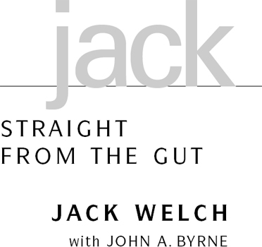
献给数十万通用电气员工是你们的想法和努力让这本书成为可能
本书作者所得利润将全部捐赠给慈善机构。
用这种方式开始一本自传可能看起来有些奇怪。先坦白一件事：我讨厌使用第一人称。我这辈子做成的几乎每件事都是和其他人一起完成的。然而当你写这样一本书时，你不得不使用叙述性的”我”，而实际上真正重要的是”我们”。
我想提到所有与我一起走过这段旅程的人的名字。我的编辑们不断劝阻我，试图删减这些名字。最终我们达成了妥协。这就是为什么书后的致谢部分有些长。请记住，每当你在书中看到”我”这个字时，它指的是所有那些同事、朋友，以及一些我可能遗漏的人。
2000年感恩节后的那个周六上午，我大部分时间都在等待”新人”。这是我继任者的秘密代号，通用电气未来的董事长兼CEO。
周五晚上，董事会一致批准杰夫·伊梅尔特接替我。我立刻给他打了电话。
“我有个好消息。你和家人明天能来佛罗里达，在这里过个周末吗？”
显然，他知道发生了什么。但我们就说到这里，很快转入安排他来佛罗里达的事宜。
周六早上，我迫不及待地想见到他。漫长的CEO继任流程终于结束了。杰夫的车刚驶入我的车道，我就已经站在外面等候。他脸上挂着灿烂的笑容，刚下车我就拥抱了他，说出了20年前雷吉·琼斯对我说过的那句话：
“恭喜你，董事长先生！”
我们拥抱时，我感觉一切都圆满了。
那一刻，我的记忆瞬间回到了雷吉走进我位于康涅狄格州费尔菲尔德办公室、以同样方式拥抱我的那一天。
熊抱，或者任何形式的拥抱，对雷吉来说都不是自然的举动。但他就这样站在那里，脸上带着微笑，双臂紧紧环抱着我。1980年12月的那一天，我是全美国最幸福的人，也无疑是最幸运的。如果让我在商界选择一份工作，非这份莫属。它让我接触到令人难以置信的多元业务，从飞机发动机、发电机组到塑料、医疗和金融服务。通用电气的产品和服务几乎触及每一个人。
最重要的是，这份工作大约75%与人有关，25%与其他事务有关。我与世界上一些最聪明、最有创造力、最具竞争力的人共事——其中很多人比我聪明得多。
1960年我加入通用电气时，我的目标很modest(谦逊)。作为一个刚从博士项目毕业的24岁初级工程师，我的年薪是10,500美元，希望在30岁时能挣到30,000美元。如果说我有什么目标的话，那就是这个。我全身心投入到工作中，并且乐在其中。晋升接踵而至，足以让我提高期望，到了1970年代中期，我开始想也许有一天我能掌管这家公司。
但胜算对我不利。许多同事认为我是方孔里的圆钉，对通用电气来说太另类了。我直言不讳，坦率得近乎残酷。我缺乏耐心，在很多人看来咄咄逼人。我的行为不符合常规，尤其是经常在当地酒吧举办派对庆祝业务胜利，无论大小。
幸运的是，通用电气有很多人有勇气喜欢我。雷吉·琼斯就是其中之一。
从表面上看，我们简直天差地别。他身材修长、举止优雅，出生于英国，有着政治家的风范。而我在波士顿以北仅16英里的马萨诸塞州塞勒姆长大，是一位爱尔兰裔美国铁路列车员的独子。雷吉内敛而正式。我则接地气、嗓门大、容易激动，带着浓重的波士顿口音和令人尴尬的口吃。当时，雷吉是美国最受尊敬的商人，在华盛顿颇具影响力。而我在通用电气之外默默无闻，在政策问题上也缺乏经验。
尽管如此，我总能感受到与雷吉之间的某种共鸣。他很少流露感情，从不给出任何暗示。但我有一种感觉，他理解我。在某些方面，我们是志同道合的人。我们尊重彼此的差异，也有一些重要的共同点。我们都喜欢分析和数字，都会做足功课。我们都热爱通用电气。他知道公司必须改变，他认为我有激情和智慧来推动这种改变。
我不确定他是否知道我多么渴望改变通用电气——但在20多年里，他对我所做一切的支持从未动摇。
接替雷吉的竞争异常激烈，充斥着复杂的政治博弈和膨胀的自我，包括我自己的。那段时期糟透了。起初，我们七个人来自公司各个部门，因为这场公开的继任竞争而被推到聚光灯下。雷吉本意并非要让这个过程变得如此分裂和高度政治化。
那些年我犯了一些错误，但都不致命。1980年12月19日，当雷吉让董事会批准我为他的继任者时，我仍然不是最显而易见的人选。消息公布后不久，我在通用电气的一位朋友走进Hi-Ho——总部附近的一家酒吧——听到一位老员工对着马提尼酒杯沮丧地嘟囔：“我给他两年时间——然后他就得进贝尔维尤精神病院。”
他的预测差了20多年！
在我担任董事长的所有岁月里，我在媒体上获得了广泛关注——有好有坏。但1998年6月初《商业周刊》杂志的一篇长篇封面报道引发了大量来信，正是这些信件激励我写下这本书。
为什么？因为那篇杂志文章，数百位素不相识的人给我写来了关于他们职业生涯的感人而鼓舞人心的信件。他们描述了自己感受到的组织压力——要求他们改变自我、顺从某些东西或成为他们本不是的人，以获得成功。他们喜欢文章中的观点：我从未改变过自己。文章暗示，我能够让世界上最大的公司之一更接近我成长过程中那群人的行事风格。
我和其他数千人一起，试图在一家大公司的灵魂中创造出街角杂货店的那种随性氛围。
当然，事实更为复杂。在我早年的职业生涯中，我拼命努力对自己诚实，与官僚主义的浮夸作斗争，即使这意味着我可能无法在通用电气取得成功。我也记得那种要成为另一个人的巨大压力。我有时也会随波逐流。
在被任命为副董事长后不久，我在旧金山参加了最早的一次董事会会议。我穿着一套熨烫得笔挺的蓝色西装，配上浆过的白衬衫和一条挺括的红领带。我字斟句酌。我想向董事会成员展示，我比我43岁的年龄或我的名声所暗示的更成熟稳重。我想我是想看起来、表现得像一个典型的通用电气副董事长。
保罗·奥斯汀是通用电气的资深董事，也是可口可乐公司的董事长。会后的鸡尾酒会上，他走到我面前。
“杰克，”他摸着我的西装说，“这不是你。当你做自己的时候，你看起来好多了。”
感谢上帝，奥斯汀意识到我在扮演一个角色——而且关心我到愿意直言相告。试图成为一个我不是的人，对我来说可能是一场灾难。
在通用电气的41年里，我经历了许多起起落落。在媒体眼中，我从王子变成猪，又变回来。人们给我起过很多绰号。
早年间，当我在刚起步的塑料部门工作时，有人叫我疯狂的野人。二十年前我成为CEO时，华尔街问：“杰克是谁？”
20世纪80年代初，当我试图通过裁员让通用电气更具竞争力时，媒体给我起了个绰号叫”中子弹杰克”。当他们得知我们在通用电气专注于价值观和文化时，人们又问”杰克是不是变软了”。我曾被叫做”数一数二杰克”、“服务杰克”、“全球杰克”，近年来又被叫做”六西格玛(Six Sigma)杰克”和”电子商务杰克”。
2000年10月，当我们试图收购霍尼韦尔，而我同意留任完成过渡时，有人认为我是个老态龙钟、死死抓住CEO职位不放的杰克。
这些标签与其说是在描述我，不如说是在描述公司经历的各个阶段。事实上，在内心深处，我从未真正改变过——我还是马萨诸塞州塞勒姆市母亲养大的那个男孩。
1981年我开始这段旅程时，第一次站在纽约皮埃尔酒店的华尔街分析师面前，我说我希望通用电气成为”世界上最具竞争力的企业”。我的目标是把小公司的精神注入大公司的躯体，从一家老牌工业公司打造出一个组织——它比规模只有我们五十分之一的公司更有活力、更具适应性、更加敏捷。我当时说，我想创建一家公司，“在这里人们敢于尝试新事物——在这里人们确信，只有他们创造力和进取心的极限、他们个人卓越标准的极限，才是他们能走多远、走多快的天花板。”
在通用电气工作的四十多年里，我每天都全身心投入这段旅程。这本书试图带你一起经历这段旅程。最终，我相信我们创建了世界上最伟大的人才工厂，一个学习型企业，拥有无边界(boundaryless)的文化。
但1981年我在皮埃尔酒店”愿景”演讲中描述的目标是否达成，由你来评判。
这不是一个完美的商业故事。我认为商业很像一家世界级餐厅。当你窥视厨房门后，食物看起来远不如端上餐桌、摆在精美瓷器上、完美装饰后那么诱人。商业是混乱而无序的。在我们的厨房里，我希望你能找到一些对实现你自己梦想有帮助的东西。
这里没有什么圣经或管理手册。有的是我旅程中形成的一套哲学。我坚持一些对我有效的基本理念，其中最重要的是诚信(integrity)。我一直相信简单直接的方法。这本书试图展示一个组织以及我们每个人，能从开放心态、广纳各方想法中学到什么。
我认识到，错误往往和成功一样是好老师。
通往任何人愿景或梦想的道路都不是一条直线。我就是活生生的证明。这是一个幸运者的故事，一个不按剧本走、不循规蹈矩的人，在世界上最著名的公司之一跌跌撞撞却仍然前进，生存下来甚至蓬勃发展。然而，这也是一个美国小镇的故事。即使我的眼界打开，看到了一个我从未知道存在的世界，我也从未忘记自己的根。
不过，这主要是一个关于他人的故事——成千上万聪明、自信、充满活力的员工，他们相互学习如何打破旧工业世界的模式，朝着制造、服务和技术的新型混合体努力。
他们的努力和成功让我的旅程如此有价值。我很幸运能参与其中，因为21年前雷吉·琼斯走进我的办公室，给了我一生中最温暖的拥抱。
那是一个糟糕赛季的最后一场冰球比赛。在塞勒姆高中的高年级，我们赢了前三场比赛，击败了丹弗斯、里维尔和马布尔黑德，但接下来输了六场，其中五场只输了一球。所以我们非常想赢下这最后一场，在林恩竞技场对阵我们的宿敌贝弗利高中。作为球队”塞勒姆女巫队”的联合队长，我进了几个球，我们对获胜机会感觉不错。
那是一场精彩的比赛，2比2进入加时赛。
但很快，对方进球了，我们又输了，连续第七次失利。在沮丧中，我把冰球杆扔过冰场，滑过去捡起来，然后回到更衣室。队员们已经在那里了，正在脱冰鞋和球衣。突然，门开了，我的爱尔兰母亲大步走了进来。
全场鸦雀无声。所有人的目光都盯着这位穿着碎花连衣裙的中年妇女，看着她穿过地板，经过木凳——有些队友已经在那里换衣服了。她径直朝我走来，抓住我球衣的领口。
“你这个小混蛋！”她对着我的脸喊道。“如果你不知道怎么输，你就永远不会知道怎么赢。如果你不明白这一点，你就不该打球。”
我羞愧极了——当着朋友们的面——但她说的话我永远没有忘记。她闯进那个更衣室所展现的激情、能量、失望和爱，就是我妈妈的样子。她是我生命中最有影响力的人。格蕾丝·韦尔奇教会了我竞争的价值，也教会了我享受胜利的快乐和坦然面对失败的必要。
如果说我有什么领导风格，有什么激发他人最佳表现的方法，那都要归功于她。她既强硬又有进取心，既温暖又慷慨，是一位出色的识人高手。她对遇到的每个人都有自己的看法。她能”一眼看穿虚伪的人”。
她对朋友极其富有同情心和慷慨。如果亲戚或邻居来家里做客，夸赞餐具柜里的水杯好看，她会毫不犹豫地送给他们。
另一方面，如果你得罪了她，那就要小心了。她会对任何背叛她信任的人记仇。我完全可以用同样的话来形容我自己。
我的许多基本管理理念——比如拼命竞争以求胜利、面对现实、通过时而拥抱时而鞭策来激励员工、设定挑战性目标(stretch goals)、以及持续跟进确保事情完成——都可以追溯到她身上。她灌输给我的洞见从未褪色。她总是坚持要面对现实。她最喜欢说的一句话是：“不要自欺欺人。事实就是这样。”
“如果你不学习，”她经常警告我，“你将一事无成。绝对一事无成。没有捷径可走。不要自欺欺人！”
这些直白、毫不妥协的告诫每天都在我脑海中回响。每当我试图自我欺骗，以为某笔交易或商业问题会奇迹般好转时，她的话就会让我清醒过来。
从我上学的最初几年起，她就教导我要追求卓越。她知道如何对我严格要求，但也知道如何拥抱和亲吻我。她确保我知道自己是多么被需要和被爱。我拿着四个A和一个B的成绩单回家，我母亲会问我为什么得了B。但她总是以祝贺和拥抱我得到的A来结束谈话。
她不断检查我是否完成了作业，就像我今天在工作中持续跟进一样。我记得自己坐在楼上的卧室里做当天的作业，却听到她的声音从客厅传来：“你做完了吗？做完之前不许下来！”
但正是在厨房的桌子旁，和她玩金拉米纸牌(gin rummy)时，我学会了竞争的乐趣和快乐。我记得一年级时，我从学校操场飞奔过街回家吃午饭，迫不及待地想和她玩金拉米。当她赢我的时候——这种情况经常发生——她会把赢的牌摊在桌上，大喊：“金拉米！”我会非常生气，但我迫不及待地想再回家，争取打败她。
那可能就是我竞争意识的起点，无论是在棒球场、冰球场、高尔夫球场，还是在商业领域。
也许她给我的最伟大的礼物是自信。这是我在与我共事过的每一位高管身上寻找并努力培养的品质。自信给你勇气，拓展你的能力边界。它让你敢于承担更大的风险，取得远超你想象的成就。帮助他人建立自信是领导力的重要组成部分。这来自于为人们提供机会和挑战，让他们去做从未想过自己能做到的事情——然后在每次成功后用各种方式奖励他们。
我母亲从未管理过员工，但她深谙如何建立自尊。我从小就有语言障碍，口吃一直改不掉。有时这会导致一些滑稽甚至尴尬的事情。在大学里，我经常在周五点金枪鱼白吐司三明治，因为那时候天主教徒在周五不能吃肉。服务员总是会端来两份三明治，因为她把我的订单听成了”两-两份金枪鱼三明治”。
我母亲为我的口吃找了一个完美的借口。“那是因为你太聪明了，”她会告诉我。“没有人的舌头能跟上你这样的大脑。”事实上，多年来我从不担心自己的口吃。我相信她告诉我的：我的思维比我的嘴快。
多年后我才明白她给了我多少自信。几十年后，当我看早年在运动队的照片时，我惊讶地发现，几乎每次我都是照片中最矮最小的孩子。在小学，我在篮球队打后卫，我的身高几乎只有其他几个球员的四分之三。
然而我从不知道也从未感觉到这一点。今天，我看着那些照片，笑自己当时是个多么小的小不点。我竟然没有更意识到自己的身材，这简直太不可思议了。这就告诉你一个母亲能为你做什么。她给了我那么多自信。她让我相信我可以成为任何我想成为的人。这真的取决于我自己。“你只需要去争取，”她会说。
我和母亲的关系强大而独特，温暖而令人振奋。她是我的知己，我最好的朋友。我想这部分是因为我是独生子，而且是她晚年（按当时的标准）生的，那时她36岁，我父亲41岁。我的父母多年来一直想要孩子却未能如愿。所以当我终于在1935年11月19日出生在马萨诸塞州皮博迪时，我母亲把她的爱倾注在我身上，仿佛我是一件失而复得的珍宝。
我出生时嘴里没有含着银汤匙。我拥有更好的东西——满满的爱。我祖父母双方都是爱尔兰移民，他们和我的父母都没有高中毕业。我九岁时，父母买了我们的第一套房子，一栋位于马萨诸塞州塞勒姆市洛维特街15号的普通两层砖房，那是一个爱尔兰工人阶级聚居区。
房子对面是一家小工厂。我父亲经常提醒我，这其实是个优点。“你总是希望有一家工厂做邻居。他们周末不在。他们不会打扰你。他们很安静。”我相信了他，从未意识到他自己也在进行某种信心建设。
我父亲是波士顿与缅因通勤线上的一名铁路列车员，这条线路往返于波士顿和纽伯里波特之间，他工作非常努力。每当”大杰克”清晨五点出门，穿着熨烫整齐的深蓝色制服，白衬衫被母亲浆洗得笔挺，他看起来仿佛可以向上帝本人敬礼。几乎每一天都是一样的，在同样的十个站点之间来回检票：纽伯里波特、伊普斯维奇、汉密尔顿/温汉姆、北贝弗利、贝弗利、塞勒姆、斯旺普斯科特、林恩、通用电气工厂、波士顿。然后再返回，全程约四十英里的铁轨。后来，当我得知他的常规停靠站之一是通用电气位于波士顿郊外林恩的飞机发动机工厂时，我觉得很有意思。
每个工作日，他都期待着爬上那列他一直视为己有的波士顿与缅因列车。我父亲喜欢与公众打招呼，结识有趣的人。他像大使一样穿行在车厢的中央过道，幽默风趣地检票，热情地欢迎长椅上那些熟悉的面孔，仿佛他们是亲密的朋友。
每到高峰时段，他都会与乘客们交换微笑和问候，还会说上一些爱尔兰式的花言巧语。他在火车上的开朗性格常常与他在家里沉默寡言的样子形成对比。这让我母亲很恼火，她会抱怨说：“你怎么不把在火车上说的那些好话带回家呢？”他很少这样做。
我父亲是个勤勉的工人，工作时间很长，从不缺勤。如果天气预报不好，他会让母亲在前一天晚上开车送他去车站。他会睡在火车车厢里，这样早上就能随时出发。
他很少在晚上七点之前到家，总是由母亲开着家里的车去车站接他。他回家时胳膊下总夹着一捆报纸，都是乘客留在火车上的。从六岁起，我每天都能了解时事和体育新闻，这要感谢那些剩下的《波士顿环球报》、《先驱报》和《纪录报》。每晚读报成了我一生的习惯。直到今天，我仍然是个新闻迷。
我父亲不仅让我开始了解塞勒姆以外的世界，他还通过身体力行教会了我勤奋工作的价值。他还做了另一件影响我一生的事——他让我接触了高尔夫。父亲告诉我，火车上的大人物们总是在谈论他们的高尔夫球赛。他认为我应该学学这个，而不是只玩棒球、橄榄球和冰球。当球童是邻居里大孩子们都在做的事。在他的推动下，我九岁就开始在附近的科恩伍德乡村俱乐部当球童。
我非常依赖父母。很多时候，当母亲出门去接父亲时，火车会晚点。在我十二三岁的时候，这种延误会让我抓狂。我会跑出家门，沿着洛维特街往下跑，心跳加速，想看看他们是否已经绑过街角在回家的路上，因为我害怕他们出了什么事。我就是不能失去他们。他们是我的整个世界。
这种恐惧本不该有，因为母亲把我培养得坚强、坚韧、独立。她一直担心自己会英年早逝，成为心脏病的受害者——她家里的每个人都死于心脏病。所以在我十几岁的时候，母亲就鼓励我独立。她会催促我独自去波士顿看球赛或看电影。那时候我觉得自己很酷，直到母亲出门去火车站接父亲，而他们回家晚了。
塞勒姆是一个男孩成长的好地方。这是一个有着强烈职业道德和良好价值观的小镇。在那个年代，没有人锁门。周六，父母们不会担心孩子们走到市中心的派拉蒙影院，二十五美分就能看两场电影加一盒爆米花，回家路上还有钱买冰淇淋。周日，教堂里挤满了人。
塞勒姆是一个充满拼搏和竞争的地方。我很好胜，我的朋友们也是。我们都是运动迷，活着就是为了玩各种运动。我们会自己组织社区棒球、篮球、橄榄球和冰球比赛，在”坑”里打球——那是北街旁一块被树木和后院环绕的平坦尘土地。春夏时节，我们会把碎石扫平，分边组队，甚至自己安排比赛。我们从一大早玩到镇上的汽笛在八点四十五分响起。汽笛声是回家的信号。
那时候，城市按社区划分学校，这导致了每项运动都有激烈的竞争——甚至在小学阶段也是如此。我是皮克林文法学校六人制橄榄球队的四分卫。我跑得慢得可怜，但我的传球臂力不错，还有两个跑得很快的队友。我们在皮克林赢得了冠军。我也是棒球队的投手，学会了投大弧度曲球和急坠球。
然而，在塞勒姆高中，我发现自己在橄榄球和棒球方面都过早地达到了巅峰。我跑得太慢，打不了橄榄球，而我十二岁时那致命的曲球和坠球到十六岁时也没有更多的变化。我的快速球连玻璃都打不碎。击球手只需坐在那里等着就行。我从大一的首发投手变成了大四的板凳球员。我很幸运在冰球方面还算不错，担任高中球队的队长和得分王，但在大学里，我的速度不足再次成为问题。我不得不放弃了。
感谢上帝有高尔夫这项运动，它不需要速度。正是父亲早年的鼓励，让我来到了科恩伍德乡村俱乐部，开始做球童。每个周六早晨，我和朋友们会坐在绿草坪公墓门外的路边，等着高尔夫俱乐部的会员开车来接我们，把我们带到几英里外的球场。在最炎热的夏日，我们会偷偷溜到一个叫”黑岩”的僻静地方，脱光衣服，跳进丹弗斯河里游泳降温。
不过大多数时候，我们会坐在球童小屋旁的草坡上，等着球童领班”斯万克”斯威尼喊我们的名字。斯威尼是个高瘦的男人，卷发，戴眼镜。他会从球童小屋里把球包拿出来，放在半扇门上，然后大喊：“韦尔奇！”我就会从牌局或摔跤比赛中冲出来，接受分配的任务。
几乎每个人都希望能给雷·布雷迪背球包，因为他是球场上给小费最大方的人，而小费在这里通常很少见。除此之外，打完18洞的1.5美元报酬基本就是全部收入了。我们真正期待的是周一早晨，那时场地维护人员会整修球场。那是球童们的早晨，我们会拿着捡到的丢失球，用缠着胶带的球杆打18洞。我们天一亮就赶到那里，因为中午12点整他们就会把我们赶走。
做球童让我有机会赚些钱，更重要的是学会了这项运动。我还早早接触到了那些取得一定成就的人。通过观察他们在高尔夫球场上的行为，我很早就看清了一个人可以多么有魅力，或者多么像个混蛋。
除了做球童，我还做过很多工作。有一段时间，我送《塞勒姆晚报》。节假日期间我在当地邮局工作。大约三年时间，我在埃塞克斯街的汤姆·麦坎鞋店做提成销售员。卖普通鞋每双提成七美分。如果你卖掉那些”滞销货”——紫色鞋头、白色镶边的11E翼尖鞋——就能拿到二十五美分或五十美分。我总是把它们拿出来，给一双臭脚试穿，然后说：“这双穿在您脚上真好看。”为了多赚二十五美分，那时候我什么话都说得出口！
有一份暑期工作真正给我上了一课。它让我明白了自己不想做什么。当时我在塞勒姆的帕克兄弟游戏工厂操作钻床。我的工作是拿起一小块软木塞，用脚踩下踏板在上面钻个孔，然后把软木塞扔进一个大圆纸桶里。每天，我要钻成千上万个。
为了打发时间，我会玩一个游戏：在领班来清空桶之前，尽量用我钻好的软木塞铺满桶底。我很少能成功。那种挫败感简直难以言表。我每天回家都头疼。我恨透了这份工作。我连三周都没坚持下来，但它教会了我很多。
我的童年时光是隔着玻璃窗向外张望度过的。每年夏天，在我还没到打工年龄之前，塞勒姆游乐场的孩子们会乘坐专列去缅因州的老果园海滩游乐园。这是我们夏天的高光时刻。我们早上六点半上火车，两小时后到达。几个小时内，从一个游乐设施跑到另一个，我们大多数人就把带来的五美元左右花光了。
我们还有一整天的时间，却已经身无分文。我和朋友们就在海滩上搜寻可回收的瓶子，从一块毯子走到另一块毯子，向晒太阳的人讨要空瓶。每个瓶子两美分，这样我们就能凑够钱买个热狗，再玩几个项目，然后回家。
另一方面，我从未感到匮乏。我什么都不缺。父母为我做出了很多牺牲，确保我有一副很棒的棒球手套或一辆好自行车。父亲允许母亲宠爱我，自己却从不居功。而她确实宠爱我。
她带我去芬威球场的看台上看泰德·威廉姆斯为波士顿红袜队打左外野。她会在下午早些时候到学校接我，开车送我去乡村俱乐部，这样我就能比其他球童早到一步。作为一个虔诚的天主教徒，她会开车送我去圣托马斯使徒教堂，让我在早上六点的弥撒中担任祭坛侍童，而她则在右边第一排的座位上祈祷。
她成了我最热情的啦啦队长，打电话给当地报纸，请他们刊登关于我小小成就的消息，从马萨诸塞大学毕业到获得博士学位。然后她会把每一份剪报贴进一本大剪贴簿里。她在这方面毫不羞怯。
我母亲显然是家里的纪律执行者。有一次父亲在他的火车上撞见我正往家赶——那天我逃学去南波士顿庆祝圣帕特里克节——他当着我朋友的面什么也没说，尽管我们所有人都喝了五十美分一瓶的廉价麝香葡萄酒，醉醺醺的。
他只是告诉了我母亲，由她来质问我并执行惩罚。还有一次，我逃掉祭坛侍童的练习，跑去我家附近麦克公园的冰冻池塘上打曲棍球。比赛中，我掉进了冰窟窿，全身湿透。为了掩盖发生的事，我脱掉湿衣服，挂在我们生的火堆上方的树上。我们在一月的寒风中瑟瑟发抖，等着衣服变干。
我当时觉得这是个相当聪明的掩饰——直到我走进家门。
我母亲只用了一秒钟就闻到了我衣服上的烟味。对于一个在墙上挂着十字架、念玫瑰经、把我们教堂的老牧师詹姆斯·克罗宁神父视为圣人的人来说，逃掉祭坛侍童练习是件大事。于是她让我坐下，逼我坦白，然后执行她自己的惩罚：用刚从我脚上脱下来的湿鞋子打我。
虽然她有时很严厉，但也可以是个真正的”心软的人”。有一次，我大概才11岁多一点，从镇上来的嘉年华上偷了一个球。就是那种用来扔向金属牛奶瓶、把它们从底座上打下来赢取洋娃娃的劣质球。
没过多久，母亲就发现了那个球，问我从哪里弄来的。当我承认是偷的之后，她坚持要我去找克罗宁神父，把球还给他，然后忏悔我的所作所为。因为所有神父都认识我这个祭坛侍童，我确信他们在忏悔室里一听到我开口就会认出我。我很害怕他们。
我问母亲能不能让我把球拿到北运河——一条流经镇上的浑浊河流——然后扔掉。经过一番协商，她同意了我的请求。她开车到北街的桥上，看着我把球扔进了水里。
还有一次，我高中最后一年的时候，在科恩伍德乡村俱乐部给一个最吝啬的会员当球童。那时候，我已经在那里当了八年球童——对我自己来说可能有点太久了。我们走到第六洞，那是一个发球台，开球只需要打大约一百码就能越过池塘。那天，我服务的那个人把球打偏了，直接落进了水里。球至少落在泥塘里十英尺远的地方。他让我脱掉鞋袜，涉水进池塘去捡他的球。
我拒绝了，当他坚持时，我让他滚蛋。我把他的球杆扔进水里，让他自己去捡球和球杆，然后跑出了球场。
这是一件愚蠢的事，甚至比把冰球杆扔过冰面还糟糕。尽管母亲很失望，因为这件事让我失去了俱乐部的球童奖学金，但她似乎理解我的感受，没有像她本可以那样大发雷霆。
更大的失望是失去了通过海军后备军官训练团奖学金项目免费上四年大学的机会。塞勒姆高中有三个人通过了海军考试：我和我最好的两个朋友，乔治·瑞安和迈克·蒂夫南。我父亲让州议员代表我写推荐信，我还参加了该项目的一系列面试。我的朋友们都成功了。乔治获得了塔夫茨大学的全额奖学金。迈克去了哥伦比亚大学。我本来希望去达特茅斯或哥伦比亚，但海军拒绝了我。
我从未知道原因。
讽刺的是，这次被拒反而成了一个绝佳的机会。在塞勒姆高中，我是个努力学习才能取得好成绩的好学生，但没人会说我很聪明。所以我申请了马萨诸塞大学阿默斯特分校，这所州立学校每学期学费只要五十美元。花不到一千美元，包括食宿，我就能拿到学位。
除了一个表亲，我是家里第一个上大学的人。我没有可以效仿的家庭榜样，除了我叔叔比尔·安德鲁斯，他在塞勒姆的发电站当”工程师”。当工程师听起来不错。我很早就发现自己喜欢化学，所以选择了化学工程专业。
我对大学了解太少，差点没能入学。我没有参加SAT考试，以为后备军官训练团海军考试的成绩就够了。直到六月份，也就是我高中毕业前几天，我才收到马萨诸塞大学的录取通知书。我一定是在候补名单上——但我当时根本没意识到。进入一所竞争不那么激烈的学校，而不是我想去的哥伦比亚或达特茅斯，最终给了我巨大的优势。那个年代在马萨诸塞大学，我面对的竞争水平让我更容易脱颖而出。
虽然我从不缺乏自信，但1953年秋天我上大学的第一周非常艰难。我太想家了，母亲不得不开三个小时的车到阿默斯特校园来看我。她试图给我打气。
“看看你周围的这些孩子。他们没有想着回家。你和他们一样优秀，甚至更好。”
她说得对。在塞勒姆，我一直在打球，做各种各样的事情，从担任毕业班的财务主管到冰球队和高尔夫球队的队长，但我从来没有真正离开过家，甚至没有参加过夜间露营。我以为自己是个硬汉，应该很有街头智慧、很独立，结果却被离家上学的经历彻底击垮了。我对大学的准备远不如其他一些学生。有些来自新英格兰预科学校和著名的波士顿拉丁学校的孩子，在数学方面远远领先于我。我还发现物理非常难。
我母亲不会接受这些。那番鼓励的话起了作用。我的焦虑在一周内就消失了。
我艰难地度过了大一，但考试成绩很好，大概拿到了3.7的绩点(GPA)，四年里每年都上了院长名单。大二时，我加入了Phi Sigma Kappa兄弟会，搬进了他们在校园池塘边的兄弟会宿舍。我们的兄弟会在啤酒消费量上名列前茅，深夜扑克游戏和派对也比大多数兄弟会多。
那是一群很棒的人，虽然我们有一两次被留校察看，但我能够尽情玩乐的同时还能完成学业。我喜欢那里的氛围。
我在马萨诸塞大学的教授们，尤其是化学工程系主任厄尼·林赛，把我当作重点培养对象。他很喜欢我，推动我完成学业，就像对待自己的儿子一样。和母亲一样，他的支持给了我很大的信心。暑假期间，我在宾夕法尼亚州斯沃斯莫尔附近的太阳石油公司和俄亥俄州的哥伦比亚南方公司（现为PPG工业）找到了化学工程方面的工作。1957年，我成为学校化学工程专业毕业的两名最优秀学生之一。如果我当初去了麻省理工，可能只是中等水平。我自豪的父母送给我一辆崭新的大众甲壳虫汽车作为毕业礼物。
大四那年，很多公司都在争相招揽我，我收到了很多不错的工作机会。但教授们说服我去读研究生。我拒绝了企业的邀请，决定去伊利诺伊大学香槟分校，那里给我提供了奖学金。这所学校的化学工程研究生项目一直位列全美前五，对我的专业来说是一所很棒的学校。
我到校园还不到两周，就遇到了一个漂亮女孩，约她出去。我们周六晚上的约会进展得很顺利，最后我们来到校园停车场旁边的树林里。我大众车的车窗起了雾，突然一道灯光闪过。是校园警察，我们被抓了个正着，场面十分尴尬。我吓呆了，害怕后果。
那个年代情况很不一样。20世纪50年代是保守的时代，而我们又身处保守的中西部。警察把我们俩都带到校园警察局，一直扣留到凌晨四五点才放我们回去。
我的人生在眼前闪过。我以为自己要失去一切：奖学金、获得研究生学位的机会、我的职业生涯。但最重要的是，我想到母亲知道我做了什么之后会有什么反应。我的命运将在周一与大学教务长的会面后决定，届时他将确定纪律处分。
周日早上，我鼓起勇气给化学工程系主任哈里·德里卡默博士打了电话。我只知道他以脾气暴躁著称。尽管我很害怕，但我觉得他是我唯一的希望。
“德里卡默博士，”我说，“我遇到了大麻烦。校园警察抓到我在鬼混。我为此崩溃了，我需要帮助。”
我告诉他发生了什么事时，几乎吓得要尿裤子了。
“该死，”他回答说，“在我这里带过的所有研究生中，你是第一个干出这种事的。我会处理这件事，但你以后最好管好自己！”
不管德里卡默做了什么，都救了我一命。我仍然要经历与教务长的艰难会面，但我没有被开除。然而，那次可怕的事件让我和哈里的关系更加亲近了。我们建立了很好的关系。他也把我当儿子一样对待。我们打赌橄榄球比赛结果，争论新闻里的事情。在走廊里，哈里会无情地取笑我，总是拿红袜队或我已经开始稀疏的头发开玩笑。
他成为我人生中重要的影响者，在我整个研究生阶段都是我的导师(mentor)。我需要这种帮助。在伊利诺伊，我的准备不如来自布鲁克林理工、哥伦比亚或明尼苏达的学生充分。所以第一年，我在那里也很挣扎。我必须为成绩拼命努力。无论从哪个角度看，我都算不上明星学生。
1958年，我在伊利诺伊的第一年结束后，即将获得硕士学位时，国家正处于经济衰退期。我没有收到二十份工作邀请，只有两份：一份来自塔尔萨附近的俄克拉荷马州炼油厂，另一份来自路易斯安那州巴吞鲁日的乙基公司(Ethyl Corp.)。在去乙基公司面试的飞机上，我和伊利诺伊大学的一位同事一起旅行，发生了一件奇怪的事。空姐走过来说：“韦尔奇先生，您要喝点什么吗？”然后她转向我的同事说：“盖特纳博士，您要喝点什么吗？”
我觉得”盖特纳博士”听起来比”韦尔奇先生”好多了。我只需要再待几年就行。所以，仅凭这点想法，我留在了学校，继续攻读博士学位。就业市场不太好也帮了忙。我真的很喜欢伊利诺伊的教授们，尤其是德里卡默和我的论文导师吉姆·韦斯特沃特博士，这也是原因之一。
在研究生院，尤其是博士项目中，你几乎住在实验室里。早上八点来，晚上十一点回去。有时候你会觉得别人是根据你实验室灯亮着的时间来评判你的。我的论文是关于蒸汽供应系统中的冷凝现象。所以我花了很多时间蒸发水，观察它在铜板上冷凝。
日复一日，我用高速摄影拍摄表面冷凝水滴的几何形状。我从这些实验中推导出传热方程。研究生论文有趣的地方在于，你会如此沉迷其中，以至于觉得自己在做诺贝尔奖级别的工作。
在吉姆·韦斯特沃特的大力支持下，我用三年时间拿到了博士学位，比几乎所有人都快。一般研究生需要四到五年才能拿到博士学位。我绝不是项目里的天才。为了通过项目的两门外语要求，有一个暑假我连续三个月日夜学习法语和德语。我走进考场，低下头，把塞进脑子里的东西全倒了出来。我勉强通过了考试，但如果一周后你问我一个法语或德语单词，我就完蛋了。我的”知识”在我交卷的那一刻就清空了。
尽管不是最聪明的，但我确实有专注力把工作完成。项目里一些更聪明的人在完成论文时遇到了困难。他们无法得出结论。我的急性子帮了我。
我一直觉得化学工程是商业职业最好的背景之一，因为课程作业和必修论文都教会你一个非常重要的道理：许多问题没有确定的答案。真正重要的是你的思维过程。一道典型的考试题目大概是这样的：一个体重150磅的滑冰者在一英寸厚的冰面上滑八字形。气温每十分钟上升一度，升到40华氏度，风速每小时20英里。滑冰者什么时候会掉进冰里？
这个问题没有公式化的答案。
大多数商业问题也是如此。思维过程帮助你更接近那个较深的灰色地带。答案很少是非黑即白的。商业往往更多依赖嗅觉、感觉和触觉，而不仅仅是数字。如果我们等待完美的答案，世界就会把我们抛在身后。
1960年离开伊利诺伊大学时，我已经确定了自己喜欢什么、想做什么，同样重要的是，我知道自己不擅长什么。我的技术能力相当不错，但绝不是最优秀的科学家。与许多同学相比，我更外向，更喜欢与人打交道而不是埋头读书，更热爱体育而不是科学发展。我认为这些技能和兴趣最适合一份连接实验室和商业世界的工作。
知道这一点有点像知道自己是个不错的运动员——但远非顶尖。我想做的事让我与大多数博士不同。他们通常进入大学课堂教书或进入企业实验室做研究。我曾考虑过教书，甚至在雪城大学和西弗吉尼亚大学面试过，但最终我放弃了这个选择。
除了学位、长久的友谊和解决问题的思维方式，伊利诺伊大学还给了我另一样东西：一位好妻子。我第一次注意到卡罗琳·奥斯本是在校园里的天主教堂，当时她正在四旬期做苦路祈祷。她和我一样参加弥撒。然而，直到一位共同的朋友在尚佩恩市中心的一家酒吧介绍我们认识，我才真正见到她。
卡罗琳身材高挑、漂亮、优雅、聪明。她以优异成绩毕业于玛丽埃塔学院，正在伊利诺伊大学攻读英国文学硕士学位，每年有1500美元的奖学金。1959年1月我们第一次约会去看篮球赛后，我们就形影不离。五个月后，我们订婚了，11月21日，在我24岁生日后两天，我们在她的家乡伊利诺伊州阿灵顿高地结婚了。
我们蜜月的大部分时间都在开着我的大众汽车穿越全国进入加拿大，同时我在面试工作。我很幸运收到了几份工作邀请，但有两份最合适：一份来自埃克森公司，在德克萨斯州贝敦的开发实验室工作；另一份来自通用电气，在马萨诸塞州皮茨菲尔德的一个新化学开发部门工作。
通用电气邀请我去皮茨菲尔德，在那里我见到了丹·福克斯博士，他是负责公司新化学概念的科学家。那份工作最吸引我。开发团队规模小，正在研究新型塑料，而且我喜欢回到马萨诸塞州的想法。和我之前的教授们一样，福克斯给我的印象是聪明且值得信赖。在福克斯身上，我看到了一位教练和榜样，他能激发每个与他共事的人发挥出最好的一面。
他在通用电气内部已经是个英雄式的人物，因为他为公司发明了Lexan塑料。通用电气于1957年开始销售Lexan。作为玻璃和金属的潜在替代品，它被用于从电动咖啡壶到超音速飞机机翼灯罩的各种产品。
福克斯和大多数发明家一样，已经在着手下一个项目，成为一种名为PPO（聚苯醚）的新型热塑性塑料的倡导者。他让我相信PPO将成为下一个伟大的产品。他描述了它独特的耐高温能力。它有潜力取代热水铜管和不锈钢医疗器械。他用一句话完成了这次推销：告诉我，我将是第一个负责将这种塑料从实验室推向生产的员工。我在一周内就接受了这份工作。
1960年10月17日我第一天上班时，我不知道的是，我很快就会感到沮丧。
仅仅一年，通用电气的官僚主义就差点把我逼出公司。
1961年，我在通用电气当工程师已经一年了，年薪10500美元，这时我的第一任老板给了我1000美元的加薪。我本来觉得还可以——直到那天晚些时候我发现，我们办公室里的四个人都拿到了完全一样的加薪。我觉得我应该得到比”标准”涨幅更多的加薪。
我和老板谈了谈，但讨论毫无结果。
沮丧之下，我开始找其他工作。我开始翻阅《化学周刊》杂志和《华尔街日报》上的”招聘广告”，希望找到一条快速的出路。我感觉自己被困在大公司底层的”人堆”里。我想离开。我收到了芝加哥国际矿物与化学公司的一份不错的邀请，那里离我妻子母亲住的地方不远。这似乎是一个逃离的机会。
标准的预定加薪只是我对公司吝啬行为不满的一部分。当通用电气招聘我时，公司铺开了舒适的红地毯。他们让我相信，我正是他们寻找的帮助开发新型塑料PPO的人选。
当卡罗琳和我抵达马萨诸塞州的皮茨菲尔德时，我原以为那种热情招揽的待遇至少还会延续一段时间。我们来通用电气时几乎身无分文，开着我那辆破旧的黑色大众汽车从伊利诺伊州一路行驶了950英里。1960年10月我加入通用电气时，当地工会正在罢工。为了避开纠察线，我以”工艺开发专员”的头衔在当地一个仓库报到上班。
很快，我的新上司伯特·科普兰就让我明白，招揽期已经结束了。科普兰是一位四十多岁、身材瘦削的开发经理，他问我和妻子是否已经在镇上找到了公寓。当我告诉他我们住在当地的酒店时，他说：“你知道的，这笔费用我们不报销。”
我简直不敢相信。要不是刚入职第一周，我肯定会跟他理论一番。但我不想搞砸这份工作。科普兰在面试过程中表现得无比热情。事实上，他人还不错，只是把能省则省当成了自己的职责。
他的做派仿佛通用电气濒临破产一样。
把我吸引到通用电气的那份热情正在消散。我们搬出了酒店。我住进了一家更便宜的汽车旅馆，而卡罗琳则去塞勒姆和我父母住了几周，直到我们找到公寓。最后我们搬进了第一街一栋两层木结构房屋的一楼小公寓，房东太太对暖气极其吝啬，我们不得不敲墙让她把恒温器调高。即便如此，她还经常隔着薄如纸的墙壁冲我们喊，让卡罗琳或我”穿件毛衣！“为了添置家具，我父母给了我们1000美元买沙发和床。
第一年并非一切都很糟糕。有些事情我还是喜欢的：能够自主设计和建造PPO新型塑料的中试工厂，以及在一个感觉像小公司的团队中工作的归属感。
我和艾尔·高恩博士密切合作，他和我同月加入通用电气。他在烧杯里进行这种新型塑料的最早期实验。我设计了用于测试更大批量的反应釜，并在当地一家机械加工厂制造出来。我们在办公室后面的一个小附属建筑里从零开始建造了一座中试工厂。每天我们都会进行多次实验，测试不同的工艺流程。
对于一个刚离开大学校园的人来说，这真是一场冒险。
研究PPO这样的新型塑料，我们需要尽可能多的科学支持。因此，我每月至少两次跳上车，驱车55英里前往纽约州斯克内克塔迪的通用电气中央研发实验室——这种塑料就是在那里发明的。我会花一整天时间与研究人员和科学家们一起工作，努力让他们对这种产品的潜力感到兴奋。
那时候，中央实验室完全由公司总部资助，所以实验室的科学家们没有直接的动力把精力集中在任何一个业务部门，或者说任何商业化项目上。科学家们喜欢做前沿研究。关键是要让他们在发明阶段之后继续投入时间开发你的项目。我没有任何权力，全靠说服。从塑料发明人艾尔·海伊和他的几位同事那里获得关注很容易，但有些人对产品商业化不感兴趣。
我很期待去研发实验室的那些行程，因为”推销”我的项目很有趣——而且实验室确实帮了大忙。这些出差还相当划算。我开大众车去一趟只需一美元的油钱——四加仑汽油，每加仑25美分——而通用电气会按每英里7美分支付我使用私家车的补贴。所以每次去斯克内克塔迪我都能赚大约7美元。现在想来很疯狂，但当时我们都会为了赚点外快而随时开车出门。
尽管有这些好的方面，我每天都越来越沮丧。从第一周开始的那种斤斤计较的做法一直在继续。在塑料大道的一栋红砖建筑里，我们四个人挤在一间狭小的办公室里。我们只有两部电话可用，不得不在各张桌子之间传来传去。出差时，伯特要求我们两人合住一间酒店房间。
对我来说，那”标准”的1000美元加薪成了压垮骆驼的最后一根稻草。
于是我去找科普兰辞职了。就在我准备再次开车穿越全国回去时，科普兰的上司给我打了电话。鲁本·古托夫是一位驻康涅狄格州的年轻高管，他邀请卡罗琳和我去皮茨菲尔德的黄紫菀餐厅共进晚餐。
古托夫并非陌生人。我们在几次业务评审中见过面。我们之间建立了联系，因为我总是给他超出预期的东西。作为一名初级开发工程师，我给他提供了一份完整的成本和物理性能分析，将我们的新型塑料与杜邦、陶氏、塞拉尼斯等公司提供的每一种主要竞争产品进行对比。分析还预测了尼龙、聚丙烯、丙烯酸和缩醛与我们产品的长期产品成本对比。
这绝不是什么惊天动地的分析，但对于一个穿白大褂的人来说，已经超出了通常的水平。
我想做的是”脱颖而出”。如果我只是回答他的问题，就很难引起注意。老板们在布置问题时通常心里已经有了答案，他们只是在寻求确认。为了让自己从人群中脱颖而出，我认为必须比问题本身想得更远。我不仅要提供答案，还要提供出人意料的新视角。
古托夫显然注意到了这一点。在晚餐期间，整整四个小时，他一心想把我留在通用电气。他提出了自己的条件，承诺给我更大幅度的加薪，更重要的是，发誓要让公司的官僚作风远离我。我惊讶地发现，他和我一样对官僚作风感到沮丧。
这次我很幸运，因为很多通用电气的老板巴不得让我走人。毫无疑问，我让科普兰很头疼。幸运的是，古托夫不这么看（但他不用每天跟我打交道）。那顿晚餐结束时他没有给我答复。在驱车两小时回康涅狄格州韦斯特波特的路上，他在高速公路旁的公用电话亭停下来继续说服我。那时已经凌晨一点，卡罗琳和我已经上床睡觉了，鲁本还在继续陈述他的理由。
通过在谈判桌上加码（在科普兰给我的1000美元加薪基础上又加了2000美元），承诺增加职责并帮我挡住官僚体制的干扰，古托夫让我感受到他是真的在乎。
破晓后几个小时，在我的欢送会前一天早上，我决定留下来。那天晚上，在科普兰家里本该是我告别聚会的场合，我被一堆礼物包围着，告诉同事们我不走了。大多数人似乎很高兴，尽管我看到伯特一想到我要回来就焦虑万分。我不记得有没有留下那些礼物，但我想应该是留下了。
古托夫的认可——他认为我与众不同、很特别——给我留下了深刻印象。从那时起，差异化管理(differentiation)就成为我管理方式的基本组成部分。四十多年前那次标准化的加薪可能把我的行为推向了极端。但差异化本身就是要走极端，奖励最优秀的人，淘汰表现不佳的人。严格的差异化管理能培养出真正的明星——而明星能打造出伟大的企业。
有人认为差异化管理是疯狂的——对士气有害。
他们说差别对待会侵蚀团队合作的理念。在我的世界里不是这样。你通过区别对待个人来打造强大的团队。看看棒球队是怎么给20胜投手和40+全垒打击球手开工资的。这些球员的相对贡献很容易衡量——他们的数据一目了然——但他们仍然是团队的一部分。
每个人都必须感觉自己在比赛中有利益关系。但这并不意味着团队中的每个人都必须被同等对待。
从我在”坑”里工作的日子，我学到了这个游戏的关键在于组建最好的运动员阵容。谁在那里组建了最好的团队，谁就赢了。鲁本·古托夫强化了这一点：商业世界也没什么不同。获胜的团队来自差异化管理，奖励最优秀的人，淘汰最弱的人，始终努力提高标准。
我很幸运能在通用电气的第一年就脱颖而出并学到这些——以一种艰难的方式，差点从公司辞职。
在我被起绰号”中子杰克”(Neutron Jack)之前很多年，我实际上已经炸毁过一座工厂——真的炸了。
那是1963年，我在通用电气职业生涯的早期。我当时28岁，在公司才待了三年。我记得那个春天的日子，仿佛就在昨天。那是我一生中最可怕的经历之一。
爆炸发生时，我正坐在皮茨菲尔德的办公室里，就在试验工厂的街对面。那是一次巨大的爆炸，掀翻了建筑物的屋顶，震碎了顶层所有的窗户。它震撼了每个人，尤其是我，震到了骨子里。
爆炸声还在耳边回响，我就冲出办公室，朝着100码外塑料大道上的红砖厂房跑去。天哪，我心想，希望没有人受伤。屋顶瓦片和玻璃碎片散落得到处都是。烟尘笼罩在建筑物上空。
我跑上楼梯到三楼。我吓坏了。我的心怦怦直跳，浑身是汗。爆炸造成的破坏比我预想的更严重。一大块屋顶和天花板塌到了地板上。
奇迹般地，没有人严重受伤。
我们当时正在进行一项化学工艺实验。我们在一个大罐子里将氧气通入一种高度易挥发的溶液中。一个无法解释的火花引发了爆炸。我们很幸运，因为安全螺栓按设计松开了，让罐顶直接穿过天花板冲了上去。
作为负责人，我显然有责任。
第二天，我不得不驱车100英里到康涅狄格州的布里奇波特，向公司集团执行官查理·里德解释事故发生的原因。他是我直属上司鲁本·古托夫的上级，就是那个说服我不要离开通用电气的人。古托夫也会参加会议，但我是要承担责任的人，我做好了最坏的打算。
通用电气的老板们对经理们有各种各样的期望。他们期望经理们提出新产品的创意。他们期望经理们开拓新市场、增加收入。他们可没期望有人炸毁工厂。
我知道我能解释爆炸发生的原因，我也有一些解决问题的想法。但我紧张得要命。我的信心几乎和我炸毁的那栋建筑一样受到了动摇。
我对查理·里德不太了解。然而，从我走进他在布里奇波特办公室的第一分钟起，里德就让我感到完全放松。查理是麻省理工学院化学工程博士，是一位才华横溢的科学家，有着教授般的气质。事实上，在1942年加入通用电气之前，他曾在麻省理工学院担任应用数学教师五年。他是个中等身材、有些秃顶的人，眼中总是闪烁着光芒。
他对技术也充满热情。他是个与公司”结婚”的单身汉，是通用电气拥有化学品实操经验的最高级别高管。查理明白当你在高温下处理易挥发材料时会发生什么。
那天，他表现得非常理解。他用一种近乎苏格拉底式的方法来处理这次事故。他关心的是我从爆炸中学到了什么，以及我是否认为自己能修复反应器工艺。他询问我们是否应该继续推进这个项目。全是理性分析，没有情绪或愤怒。
“我们现在发现这个问题总比以后大规模运营时发现要好，”他说。“谢天谢地没有人受伤。”
查理的反应给我留下了深刻的印象。
当人们犯错时，他们最不需要的就是惩罚。这时候需要的是鼓励和建立信心。此时的任务是恢复自信。我认为在别人处于低谷时”落井下石”是我们能做的最糟糕的事情之一。在通用电气的运营评审会上有个老笑话：如果某个业务CEO正在挨批，而房间里有人跟风加入批评，员工团队通常会掏出白手帕，扔到空中，示意这个人犯规——落井下石了。
在脆弱时刻落井下石可能会把人逼入我所说的”通用电气漩涡(GE Vortex)“。这种情况在任何地方都可能发生。当领导者失去信心、开始恐慌、陷入自我怀疑的深渊时，你就会看到这种”漩涡”。
我见过这种情况发生在强大、聪明、自信的十亿美元级业务总经理身上。他们在顺境中表现得很好，但后来没有完成运营计划或做了一笔糟糕的交易——不是第一次了——自我怀疑开始悄然滋生。他们变得愿意同意任何事情，只为了能离开会议室，熬过又一天。
看到这种情况真是太可怕了。很少有人能从”漩涡”中恢复过来。我尽一切努力帮助人们度过难关——或者更好的是，避免陷入其中。
别误会我的意思。我喜欢挑战一个人的想法。没有人比我更喜欢一场精彩而激烈的辩论。这不是关于强硬和直率的问题。那是工作的一部分。但同样重要的是感知何时该拥抱、何时该踢一脚。当然，那些傲慢且拒绝从错误中学习的人必须离开。如果我们管理的是那些明显在为错误自责的优秀员工，我们的工作就是帮助他们度过难关。
这并不意味着你必须对顶尖人才手下留情。一个完美的例子涉及我们真正的A级人才之一，一位负责通用电气某主要业务全球研发的高管。就在去年，在我们年度高管会议的前一晚，他和我在鸡尾酒会上随意聊天。我刚从印度的研发运营考察回来，对所见所闻感到兴奋。当我描述对他负责的运营的印象时，这家伙告诉我，我在那次旅行中被灌了一堆废话。
“他们在印度做的工作质量远没有你想象的那么高，”他说。
他的评论让我很恼火。我简直不敢相信他。印度的工程师和科学家是他发工资的员工，但他却在区分”这里”美国的人——他所在的地方——和”那里”印度的人。我一直知道我们在让整个组织树立全球智力的理念方面存在问题，即无论在哪里都要挖掘世界上每一个优秀的头脑。当我从我最优秀的人之一那里得到这种反应时，我意识到这个问题比我想象的要严重得多。
第二天早上，我在通用电气170位顶级高管面前讲述了这个故事，但没有点名。我用它作为一个例子，说明我们公司还没有真正理解最大化全球智力意味着什么。我挑战在场的每个人照照镜子，确保自己没有同样的问题。我们不能让美国的研发团队做所有先进、有趣的工作，而把低价值的项目外包给印度这样的地方。我对印度的访问让我确信，他们的研究实验室里充满了与美国同等甚至更优秀的科学家——而且涉及的学科远不止软件。
可以理解，这个人觉得我在公众面前、在他的同事面前狠狠打击了他。如果他不是公司里最聪明、最自信的高管之一，我不会这样做。他是通用电气的全明星，不是个笨蛋。
会议结束后一两天内，他给我发了一封信，解释说他无意中”贬低了他的团队在印度取得的重大进展”，给我留下了错误的印象。我立即打电话感谢他的来信，并向他保证他没有搞砸。
显然，这种负面榜样的做法并不适用于所有人。你可以对你最优秀的人这样做——只要他们知道自己是你最优秀的人。使用榜样总是帮助我向更大的群体阐明观点。
同样的道理也适用于那些我所说的”大胆尝试”却失败的人。大公司的真正优势之一是能够承担具有巨大潜力的大项目。消除这一优势的最快方法就是追究那些敢于梦想和追求——但失败了的人的责任。那只会强化规避风险的文化。
支持梦想和追求的最好方式是把具有巨大潜力的小想法单独拿出来，然后给人们正面的榜样和资源，把小项目变成大业务。一个很好的例子是我们在1970年代末期开发一种名为Halarc的革命性新灯泡的早期尝试。这是一项雄心勃勃的努力，旨在创造一种寿命是普通产品十倍、能耗只有几分之一的灯泡。它似乎是一个完美的环保解决方案。
这是一次5000万美元的大胆尝试。
问题是，没有人愿意为一个灯泡支付10.95美元，无论它多么”绿色”或革命性，我们的项目失败了。我们没有”惩罚”参与Halarc项目的人，而是庆祝他们的伟大尝试。我们发放了现金管理奖励，并将几位Halarc项目成员提拔到新职位。虽然没有人对结果感到满意，但我们大力奖励团队成员。我们希望公司里的每个人都知道，大胆尝试但失败是可以接受的。
到1964年，我们的新型塑料项目已经取得了长足进展。我们即将推出可以销售的产品。古托夫任命了一位名叫鲍勃·芬霍尔特的总经理来负责这个项目。他是一个充满梦想的大格局思考者，很快就让上司们相信我们在皮茨菲尔德有了重大突破。查理·里德在1964年让董事会批准了我们的新塑料工厂。
这座耗资1000万美元的工厂将生产PPO产品——正是这个产品最初把我带到了通用电气，也正是这个产品导致了中试工厂的那场灾难。我们获得资金的理由是，我们拥有一种突破性的塑料，比通用电气的第一种工程塑料Lexan更进一步，而Lexan刚刚树立了新的性能标准。
这是一场艰难的推销，部分原因是我们不想搬到印第安纳州的弗农山，那里建有我们第一座Lexan塑料工厂。相反，我们选择了纽约州塞尔柯克的一块450英亩的地块。那是一个周日下午，我带着妻子和三个孩子从皮茨菲尔德开车过来时发现的。我们五个人下车，走遍了整个场地。这是一块美丽的土地，曾是纽约中央铁路的编组站，拥有哈德逊河的通行权。我爱上了这个地方，直到孩子们累得走不动了才肯离开。
一些通用电气的高管对这个选址持怀疑态度，因为它距离斯克内克塔迪只有30英里，而通用电气在那里已经有一座最大、最古老的制造工厂。我们的请求中也有很多私心。我们想自己做主，留在原地。为了证明这一点，我们辩称我们正在开发一种高技术产品，需要接触斯克内克塔迪通用电气研发中心的化学家和科学家，以及我们自己在皮茨菲尔德的研究实验室，那里大约50英里远。
我们赢得了这场争论，也拿到了资金。到这时，鲍勃·芬霍尔特因其更具创造性的才能被提升到总部的战略规划部门。
总经理的职位空缺了，我开始争取这个位置。
在塞尔柯克与古托夫和我们团队其他成员共进晚餐后，我跟着古托夫来到石头尽头餐厅后面他的车旁，跳进了他那辆大众敞篷车的前座。
“为什么不让我来接替鲍勃的工作？”我说。
“你在开玩笑吗？”古托夫问道，“杰克，你对市场营销一无所知。而这正是新产品推广的核心。”
我不接受拒绝。在那个又黑又冷的夜晚，我在古托夫的车里待了一个多小时，不断向他陈述我的资历——尽管可能很单薄。
轮到我来说服古托夫了，而且要全力以赴。我提醒他当初他是如何说服我留在通用电气的。那天晚上他没有给我答复，但当我们驶出那个停车场时，古托夫已经知道我有多么渴望这份工作。
在接下来的大约一周时间里，我不断打电话给他，提出更多论据来支持我的申请。一周之内，他打电话让我去布里奇波特他的办公室。
“你这个混蛋，”他说，“你说服我把这份工作给你，我就这么做了。你最好能交出成绩。”
那天我回到皮茨菲尔德，成为了聚合物产品业务的新任总经理。
我没有太多时间庆祝。
就在获得新职位并在工地破土动工后不久，我们发现PPO产品存在严重缺陷。老化测试开始显示，随着时间推移，它在设计承受的高温下会变脆并开裂。它根本无法替代热水铜管——而这是它最大的潜在市场之一。
我把自己推销进了一个可能毁掉职业生涯的挑战。有一个瞬间永远定格在我的记忆中。那是1965年一个寒冷的冬日，我和古托夫以及艾伦·海站在塞尔柯克的工地上。艾伦·海是那位打着蝴蝶结领带的通用电气企业研究实验室科学家，正是他发明了PPO。我们穿着大衣戴着手套，站在一个巨大的坑洞边缘，那个坑一定有30英尺深，足以把我们所有人都埋进去。
面对产品新发现的技术缺陷和眼前这个巨大的坑洞，我的通用电气职业生涯在眼前一闪而过。
“艾尔，你必须帮我们解决这个问题，否则我们都完了，”我说。
海平静地转向我们回答说：“嘿，伙计们，别担心。我还有几种新塑料正在研发中。”
我真想把他扔进那个坑里。我不知道自己到底陷入了什么境地。我们太超前了。这是一笔1000万美元的投资，投在一个公司并不真正了解的业务上。现在很明显，我们没有可供工厂生产的成熟产品。更糟糕的是，发明这个产品的科学家根本不知道如何修复它。
我们花了六个疯狂的月份才解决了这个问题。那段时间我几乎住在实验室里。我们尝试了一切。我们把能想到的每一种化合物都加入PPO，看看能否阻止开裂。丹·福克斯——就是那位说服我加入通用电气的化学家——带领皮茨菲尔德的一个化学家团队，最终通过将PPO与低成本聚苯乙烯和一些橡胶混合，找到了解决方案。
我们不得不调整工厂设计来处理混合工艺，但它成功了。
这个故事有一个圆满的结局。这种混合塑料被命名为Noryl，最终成为一款成功的产品，如今在全球的销售额超过10亿美元。
让这一切成功的是一群疯狂的人，他们相信我们几乎可以做到任何事。我们害怕得要死，但心中充满梦想——而且足够疯狂，愿意尝试任何方法让这种塑料成功。我们可能身处世界上最大的公司之一，但在皮茨菲尔德或塞尔柯克，我们把自己看作一个非常小的家族企业，只是背后有一个”银行”支持。
说到运气。塑料业务的整个经历就像上帝降临说：“杰克，这是属于你的时刻。抓住它。”
我当时还是个新手。我记得第一次有销售员请卡罗琳和我吃饭的情景。我觉得那是件大事。我是项目经理，从他的公司匹兹堡联合煤炭公司采购原材料。他请我们去磨坊餐厅喝酒吃饭，那是当地最好的餐厅，而且还是免费的！
现在看来可能很天真，但当时一切都是新鲜体验。我享受每一分钟，从最小的事情中找到乐趣。我们常常乘坐联合航空的双引擎卡拉维尔喷气机从康涅狄格州哈特福德飞往芝加哥，然后前往印第安纳州弗农山的乐思（Lexan）塑料工厂。每次旅途中，空姐都会给我们每人一罐夏威夷果和两小瓶苏格兰威士忌。我们一路上都期待着这份小礼物。
有时候，我简直不敢相信做这些事情还能拿工资。我母亲也不敢相信。1964年我第一次因公出差去欧洲时，她非常担心通用电气可能不会报销我的费用。
“你确定他们会给你报销吗？”她问道。
所有这些新体验都是从零开始发展业务的一部分，我们几乎把每一件事都当作庆祝的理由。当我们拿到一笔500美元的塑料颗粒订单时，我们会在回家的路上停下来喝啤酒庆祝。我们把每一位购买500美元以上产品的客户名字贴在墙上，称之为”500俱乐部”。每当我们新增十位俱乐部客户——又是开派对的时候了。
啤酒桶和披萨派对是硅谷的标准做法，但在1960年代中期的塞尔柯克和皮茨菲尔德也同样如此！
每一次早期晋升、每一笔奖金、每一次加薪都是庆祝的理由。1964年我拿到3000美元奖金时，我在刚买的新房子里为所有员工举办了一场派对，那房子位于皮茨菲尔德的剑桥大道，是个工薪阶层社区。就在下一个周一，我犒劳自己买了第一辆敞篷车，一辆绿色的庞蒂亚克勒芒斯。天哪，我感觉自己站在世界之巅——但很快我就会被提醒事情是如何变化的。
除了车，我还买了一套新西装。在那些早期的日子里，我喜欢让自己与众不同。夏天我经常穿哈斯佩尔牌的棕褐色府绸西装，配蓝色纽扣领衬衫和条纹领带。现在看来很傻，但我甚至喜欢听到别人称呼我”韦尔奇博士”的感觉。
在一个美丽的春日下班后，我走到停车场，坐进我闪亮的新车。我按下按钮，第一次想把车顶放下来。突然，液压软管漏了。黑乎乎的油喷到了我的西装上，还毁了我漂亮新车前部的油漆。
我简直不敢相信。就在我觉得自己比谁都了不起的时候，啪的一下，现实给了我当头一棒。这是一个很好的教训。就在你觉得自己是个大人物的时候，总会发生一些事情让你清醒过来。这绝不是最后一次。
尽管如此，家族企业继续发展，我也在成长。一旦塞尔柯克工厂建成并开始销售诺瑞尔（Noryl），销售额就开始腾飞。从1965年到1968年我们快速增长，然后我迎来了下一个重大突破。1968年6月初，在加入通用电气近八年后，我被提升为2600万美元塑料业务的总经理。这是件大事，32岁的我成为公司最年轻的总经理。
这次晋升让我进入了大联盟，享有所有相应的待遇——每年一月在佛罗里达举行的公司高层管理会议的年度邀请，以及我的第一批股票期权。
我正在向前迈进。
生活看起来很完美。只有一个遗憾。
我再也无法与父母分享我的成功了。
我母亲于1965年1月25日去世，那是我一生中最悲伤的一天。她只有66岁，但多年来一直饱受心脏病的折磨。我在阿默斯特的马萨诸塞大学读本科时，她第一次心脏病发作。
当时我非常难过，姑姑打电话告诉我这个消息后，我冲出宿舍，开始沿着公路跑向塞勒姆，大约110英里远。我情绪太激动了，无法站在路边等着搭便车回家。
在医院住了三周后，她回家休养并康复了。那时还没有β受体阻滞剂和搭桥手术。（多年后它们救了我自己的命。）三年后她又一次心脏病发作，经历了同样的过程。又过了三年，她第三次也是最后一次发作。当时她和我父亲正在佛罗里达度假。那年我从奖金中拿出1000美元给他们，帮助他们逃离新英格兰严酷的冬天。
那笔钱对我们俩都意义重大。当我把钱递给她时，她满脸骄傲。从我出生那天起，她就给了我所拥有的一切。我那微薄的1000美元礼物是我终于能够回报她的机会。对她来说，这反映了”她的作品”正在取得的成功。她为我感到如此骄傲。感谢上帝我这样做了。我一生中最大的遗憾之一就是，如果她今天还活着，我无法给她我现在能给的一切。
当父亲告诉我母亲住进了劳德代尔堡的医院时，我立即从皮茨菲尔德飞过去，直奔她的病房。她的状况很糟糕，虚弱而憔悴。她去世的那天晚上，我记得坐在她身边，她让我帮她洗背。我用温水和肥皂给她擦洗后背，她很高兴我愿意这样做。之后，我和父亲回到他们一直住的那间一居室经济型汽车旅馆。
我们再也没有见到她活着的样子。
我悲痛欲绝。父亲和姑姑乘火车护送母亲的遗体回到塞勒姆，而我则开着父亲的车独自返程。我整夜向北行驶，在北卡罗来纳州的一家公路汽车旅馆停下休息，但只待了四个小时，辗转难眠。我心绪不宁，怒火中烧。一路上我不停地哭泣，踢打着车子。我感到被命运欺骗，愤怒不已，怨恨上帝夺走了我的母亲。
等我到家时，眼泪已经流干了。在圣托马斯使徒教堂举行的守灵和葬礼，实际上是对她一生的庆祝。在塞勒姆的殡仪馆里，所有的亲戚、邻居，还有数百位我不认识的朋友都来了，每个人都带着一个我母亲讲述的关于她儿子杰基的故事。
毫无例外，她向朋友们反复讲述的每一个故事，都流露出对我的骄傲。
父亲也深受母亲去世的打击。他是一个善良慷慨的人。在经济并不宽裕的情况下，他还是给我买了一辆新车。由于工作繁忙，加上母亲强势的性格，他对我的人生影响并不大。但我爱他。现在看到他无法适应没有母亲的生活，我感到无比心酸。
没有了母亲，他就像一个迷失的士兵。因为他患有水肿，母亲一直让他严格遵守无盐饮食。现在他对吃什么变得漫不经心；很快，水分潴留使他的脸变得浮肿，体重也开始增加。
他就这样用错误的饮食慢慢毁掉了自己。他体内积聚了太多水分，不得不住院治疗。我从欧洲出差赶回来。当我走进医院电梯去他所在的楼层时，他还活着。但等我到达他的床边时，他已经去世了。就在母亲去世仅仅15个月后，1966年4月22日，父亲也离开了人世。他享年71岁。
我彻底崩溃了。父母都走了，我陷入了深深的自怜。幸运的是，我的妻子卡罗琳在身边帮我收拾残局。她坚强、机敏，始终支持我。她提醒我，我是多么幸运，拥有一个美好的家庭，三个健康的孩子——凯西、约翰和安妮。（马克后来在1968年4月出生。）她是我真正的精神支柱，不仅在那时，在许多其他场合也是如此。
每当我担心在工作中打破常规会带来什么后果时，卡罗琳总是鼓励我按照自己认为正确的方式去做——不管通用电气的其他人怎么想。每次升职后，她和孩子们都会用彩色彩带装饰房子和车道来庆祝。
在我升任塑料部总经理后，1969年我接受了公司杂志《Monogram》的采访。当记者来到皮茨菲尔德采访我时，他称呼我为”韦尔奇博士”。我立刻回应道：“我又不出诊，叫我杰克就行！”——这句话被他写进了文章里。
我现在准备以商人而非工程师的身份行事，所以我急于摆脱”韦尔奇博士”这个称呼。我吹嘘说我的员工是”一群充满激情的人”，他们自己就能产生”电力”。我夸口说，我担任总经理第一年的塑料业务增长，超过了过去十年的总和。“这里有金矿，我们有幸赶上了开采的时机。”
我当时真是个自大狂——完全沉浸在自我膨胀中。我完全不顾之前的业务领导者，宣称我们将打破所有的销售和利润记录。读到这篇文章的人一定差点被噎住。幸运的是，我当时还在雷达之下，与通用电气的官僚体系隔绝。
当我接管整个塑料业务（包括Lexan）时，我真的相信自己继承了一座金矿。与Noryl相比，Lexan是一匹纯种骏马。它像玻璃一样透明，像钢铁一样坚韧。它阻燃且轻便。波音公司当时生产的每架747大型喷气式飞机都使用了4000磅的Lexan。它的一半应用是替代金属。
多年来，我们一直在销售Noryl这种混合产品，总是在努力让它发挥作用。我们是拥有二流产品的二流公民。凭借较低的售价，我们设法将它打入商用机器外壳、草坪洒水器、吹风机、一次性剃须刀刀架和彩色电视机等领域。但我们必须为每一笔500磅的订单而奋斗。当我们终于得到Lexan时，我认为我们可以征服世界，而且我也足够自大地说出了这番话。
这番话更加离谱，因为公司对塑料业务的看法远没有那么乐观。之前负责这项业务的人被提升为硅胶部总经理，当时硅胶业务规模比塑料大约50%。硅胶业务利润丰厚，而塑料业务才刚刚达到盈亏平衡(breakeven)。
尽管如此，未来看起来非常光明。那是一个预测家们相信塑料将成为未来十年增长最快的行业的时代——比计算机和电子行业增长更快。甚至电影也在涉足这个领域。在《毕业生》中，达斯汀·霍夫曼被建议从事”塑料”行业！
我们增加了营销人员，开始像推销汰渍洗衣粉一样推广塑料业务。
我们聘请圣路易斯红雀队投手鲍勃·吉布森为我们做广告。我们拍摄了一则电视广告，场景是一头公牛闯进瓷器店，只不过所有用Lexan塑料制成的瓷器在公牛大肆破坏时都没有碎。我们聘请广播喜剧演员鲍勃和雷在底特律黄金时段为我们的塑料做宣传。我们在早上七点半到八点之间播放广播广告，那时我们的目标客户——汽车工程师们——正堵在去通用汽车、福特和克莱斯勒办公室的路上。我们在所有通往工作地点的道路上都设置了推广Lexan的广告牌。
丹尼·麦克莱恩，当时底特律老虎队赢得30场比赛的投手，在我们底特律办公室的停车场向我投掷快速球，而我举着一块Lexan塑料板。当地媒体报道了这一事件。所有这些推广活动引起了很大关注，因为对于工业塑料来说，这确实是与众不同的营销方式。
我们想用Lexan替换汽车上的每一个金属部件，从仪表盘的装饰条到车窗的摇把。因为我们在底特律的五人办公室要与杜邦的四十人办公室竞争，我们必须更快、更有创意。我们挑战那些大型化工公司，而且表现出色，因为我们能跑得比他们快。我们借助大公司的实力，同时努力保持小公司的速度。
我们发展迅猛。到1970年，我们超额完成了我当初夸下的海口，在不到三年的时间里将塑料业务翻了一番还多。尽管成功显而易见，但我显然触动了公司总部一些权势人物的神经。
其中一位是罗伊·约翰逊，通用电气人力资源部门的负责人。约翰逊掌握着大权，当时直接向董事长弗雷德·博尔奇汇报，后来又向雷格·琼斯汇报，他对人事任命有很大影响力。
多年后，我发现了约翰逊在1971年7月写给副董事长赫尔姆·韦斯的一份备忘录。当时，我正在被考虑再次晋升为化学和冶金部门的副总裁，这是一个销售额达4亿美元的业务集团。在备忘录中，约翰逊得出结论说我值得晋升，但这项任命”比通常情况承担更多风险。尽管杰克有很多优点，但他也有一些明显的局限性。从积极的方面来看，他有强烈的业务增长动力、天生的创业本能(entrepreneurial instincts)、创造力和进取心，是天生的领导者和组织者，并且具有很高的技术能力。”
“另一方面，”约翰逊继续写道，“他有些傲慢，对批评反应（或过度反应）情绪化，过于亲自介入业务细节，倾向于过度依赖他敏捷的头脑和直觉，而不是在进入和摆脱复杂局面时依靠扎实的功课和员工协助，并且对通用电气在他自己领域之外的活动有某种’反体制’的态度。”
幸好我是后来才发现这份评价，否则我可能会做出一些蠢事——尽管他说的有些确实有道理。当时，我可能不会接受这些批评。约翰逊把我的”局限性”归因于”年轻和不成熟”，但幸运的是他没有阻止我获得这个部门职位。感谢赫尔姆·韦斯支持了我。
回顾过去，约翰逊和其他人有所保留是有足够理由的。显然，我并不是天生适合这家公司的人。我对规矩礼节几乎没有尊重或容忍。我是一个急躁的管理者，尤其是对那些表现不佳的人。
我说话直接坦率，有些人认为是粗鲁。我的语言可能粗俗且不得体。我不喜欢坐着听那些套路化的演示或阅读报告，更喜欢一对一的交谈，在那里我期望管理者了解他们的业务并能给出答案。
我喜欢”建设性冲突”(constructive conflict)，认为关于业务问题的公开坦诚辩论能带来最好的决策。如果一个想法经不起毫无保留的讨论，市场也会淘汰它。拉里·博西迪，我的好朋友和前通用电气副董事长，后来把我们的员工会议比作米勒淡啤广告。它们喧闹、嘈杂、充满活力。
而且我从不隐藏自己的想法或感受。在业务讨论中，我可能会情绪激动到结结巴巴地说出别人可能认为离谱的话。我最爱说的几句是”我六岁的孩子都能做得比这好！“或者”别跟我打官腔！“（大家都明白这意思是：”你只报告坏消息，却不告诉我你打算怎么解决。“）
那些无法适应这种非正式创业环境的人要么离开，要么被要求离开。对于表现不佳的错误招聘，我会迅速止损。傲慢或自负的人待不了多久。而那些交出业绩的人则拿到了超额的加薪和奖金，就像我现在一样。
我会”踢人”，但我也会”拥抱”。
这些差异让我成了某种意义上的叛逆者，并引发了各种荒谬的流言蜚语。关于我的大多数传言只是传言而已。它们在茶水间闲聊时很有趣，但几乎没有事实依据。八卦者声称我会像某种暴躁的恶霸一样跳上桌子或会议桌。
那纯属胡扯。
然而我不断晋升。尽管约翰逊有所保留，我还是在1971年获得了化学和冶金部门负责人的职位，这带来了一系列新挑战。我在通用电气的塑料领域工作了11年。现在我必须弄清楚如何管理一整套材料业务组合，包括硬质合金切削工具、工业金刚石、绝缘材料和电子材料产品——而且要与完全不同的人一起完成这一切。
我的第一项工作是仔细审视我的团队。除了少数例外，我发现他们不够格。我承认在那些早期日子里，我在撤换人员方面可能有些冲动。但多年来，我学到了很多关于如何做这件事的经验。这是我们做过的最艰难、最困难的事情。它从来都不容易，也永远不会变得容易。
如果说我学到了什么能让这件事变得容易一些的话，那就是确保没有人在被要求离开时会感到意外。当我与即将被替换的管理者会面时，我已经进行过至少两三次谈话，表达我的失望，并给他们机会扭转局面。每次业务评审后，我都会写一封手写便条跟进。
有些人可能不欣赏我的坦率，但他们总是清楚地知道自己的处境。
第一次谈话才是让人感到意外和失望的时候——而不是在被要求离开的时候。我不记得有任何一次，当我们进行最后谈话时，对方会感到震惊或措手不及。
“听着，”我会说，“我们已经尽力了。我们都知道这行不通。是时候结束了。”
难免会有些失望。但更多时候，是一种解脱。当最后谈话的时刻到来时，对方很快就会问：“我能得到什么补偿？”我很幸运，一生都在一家财力雄厚的公司工作，能够减轻这种打击。
那时候，最大的挑战是让每个人都专注于未来。向他们保证，这是人生中又一次可以重新开始的转折——就像从高中到大学，或从大学到第一份工作的转变一样。他们可以进入一个新环境，过去的所有缺点都会被遗忘。
我见过很多人在离开不适合的工作后，过上了更好、更幸福的生活。我们每个人都有责任努力促成这样的结果。
最终，我不得不向1971年新职位上向我汇报的三位高管传达坏消息。我也留下了几位得力干将。我让汤姆·菲茨杰拉德接替我在塑料业务的位置，他是个狂野的爱尔兰人。我们塑料部门的大多数人都是工程师，汤姆是唯一真正的销售高手。
他和我既是好朋友，也是业务上的灵魂伴侣。我撤换了硅胶业务的经理，找到了一个老熟人：沃尔特·罗布，就是当年在伊利诺伊大学招募我的那位博士研究工程师。沃尔特已经离开实验室，转到运营岗位，担任一个小型医疗开发业务的负责人。
在层压板业务中，我撤换了原来的经理，换上了查克·卡森，他是我在塑料部门的老同事，曾担任我的财务主管，后来负责我们的Lexan板材业务。层压板是个艰难的业务。我们的主要竞争对手美国氰胺公司的富美家(Formica)品牌主导着市场，完全压制了我们的Textolite品牌。我们的经销商是最弱的。查克却是最强硬的人。他太强硬了，我们叫他”弗兰克·尼蒂”，这个名字来自当时热播电视剧《铁面无私》(The Untouchables)里的硬汉角色。查克总能完成预算目标，但无法改善业务的低利润率和弱势竞争地位。
我和他尝试了一切办法，想把这个烂摊子变成好生意。这是我第一次看到人们在糟糕的业务中苦苦挣扎的悲哀——与几乎不可战胜的竞争对手正面交锋，却几乎看不到改善的希望。
在那之前，我以为所有业务都可以令人兴奋。我相信只要投入研发和资金，新产品就会出现，随之而来的是未来的增长和成功。这是我第一次看到糟糕业务的真实世界，这个教训在我的职业生涯中产生了巨大影响。幸运的是，我们的其他业务利润率相当不错，尤其是塑料业务——真正的增长引擎。
我深入了解这些新业务中的人员。例如，在底特律的冶金业务中，我在一次早期人力资源评审中要求见销售管理团队。我简直不敢相信这个团队的素质。他们带来的是枯燥、刻板的演示。他们对工作毫无热情，连最基本的问题都回答不上来。我认为他们是典型的”跑老客户”销售团队——那种根本找不到新客户的销售员。
评审结束后，两名经理被撤换，但我遇到了一个特别的人——约翰·奥皮，当时的市场开发经理。他35岁，在这个业务部门已经干了十几年。我给了他第一次”战场提拔”(battlefield promotion)，在见到他的当天就任命他为全国销售经理。在见过他所有的”新”区域销售经理后，我告诉奥皮，如果我是他，我会在接下来一年内让这六个人全部离开。最终，五个人离开了。
这显然不同寻常——非常不同寻常。但这震动了整个团队，奥皮利用这一点激活了业务。奥皮勤奋工作、完全无私，后来成为通用电气最优秀的运营高管之一，最终成为我的副董事长之一。
我并没有刻意与官僚体制作对，但我与众不同，对总部的一些人构成了威胁。罗伊·约翰逊的评论反映了我与纽约公司总部员工之间的冲突。每当我想招聘关键人员时，公司总部就会为财务、人力资源和法务等”公司虚线汇报岗位”推荐他们的候选人名单。在这些职能部门，我必须为每一个想招的人而抗争。
我并不总能选到我想要的人。有几次，我不得不接受公司名单上的人。有几个被强塞给我的财务经理根本不称职，我最终不得不撤换他们。我输掉的一场大战是试图提拔一位年轻律师鲍勃·赖特担任塑料业务的总法律顾问。
我认为他不仅仅是一名律师。鲍勃当时27岁，刚从私人律所出来。当我被提升到事业部职位时，我带着阿特·普奇尼担任总法律顾问。鲍勃是接替阿特在塑料业务位置的完美人选。但通用电气的总法律顾问有不同看法。他认为鲍勃的年龄和经验使他不够资格，于是强塞给我一份他那些老朋友的名单。
我接受了其中一个职位。1973年，我让鲍勃·赖特负责塑料业务的战略发展，以此解决了他的晋升问题。这个职位我可以自行决定，不受公司总部干涉。虽然让一个律师来做这份工作有些出人意料，但鲍勃表现得非常出色。他点子层出不穷，为这个岗位注入了新的活力。18个月后，我们提拔他担任塑料业务的全国销售经理。他机智幽默、性格外向，非常适合这份工作，这段经历也让他受益终身。鲍勃后来成为NBC的总裁，如今是通用电气的副董事长——从一个年销售额不到1亿美元的业务部门的”公司弃儿”，他走过了漫长的路。
总部与地方之间的紧张关系在每个组织中都很常见。在鲍勃·赖特的案例中，我找到了一种方法来绕过体制，而不是公开对抗它。在过去20年里，我每天都希望通用电气的员工能为他们想要的人才据理力争——即使我和我的团队正试图把我们自己的候选人强加给他们。
虽然官僚体制常常让我感到沮丧，但我努力不做一个明显的批评者——尤其是不在高层面前抱怨。到1970年代初，我开始考虑执掌通用电气的可能性。1973年，我在绩效评估中大胆地写道，我的长期职业目标是成为CEO。我决心不因为与风车作战而毁掉我的梦想。如果我对体制抱怨连连，体制就会收拾我。
我很幸运。体制做出了让步。公司给了我大量不同的历练机会。在大多数情况下，它允许我做自己。
1973年6月，我迎来了下一个重大机遇。鲁本·古托夫被提拔为整个公司的战略规划负责人，我接替了他的集团执行官职位。这次晋升意味着我必须搬到公司总部。除了我已经在皮茨菲尔德管理的化工和冶金部门外，我现在还要负责其他几项业务：密尔沃基的医疗系统、韦恩堡的家电零部件、锡拉丘兹的电子元器件。
这是一个多元化的产品组合，年销售额超过20亿美元。该集团雇用了46000名员工，在美国拥有44家工厂，还在比利时、爱尔兰、意大利、日本、荷兰、新加坡和土耳其设有业务。
这次晋升意义重大。仅仅16个月前，我在36岁时被任命为通用电气副总裁。这份新工作让我进入了公司的视野。我正在成为一个真正的关键人物。我去纽约总部参观了样板办公室，这些办公室与公司计划在费尔菲尔德新建的办公室相似。通用电气将于1974年8月搬迁到那里。我为自己的办公室挑选了家具，天花板瓷砖的数量标志着一个人在公司中的地位。
只有一个问题——一个非常大的问题。我不想搬到费尔菲尔德的新总部。
在皮茨菲尔德生活的13年里，我为家人和自己构建了理想的生活。我热爱伯克希尔地区。从1960年我们住的那间狭小公寓开始，卡罗琳和我搬过好几次家，直到我们拥有了我认为是镇上最好的房子之一。
我们有一群好朋友。我们的四个孩子还小，都在当地的公立学校上学。皮茨菲尔德是养育孩子的好地方，山脉和湖泊近在咫尺。我在皮茨菲尔德乡村俱乐部有一群很棒的朋友，我们在那里打”生死攸关”的高尔夫球和板式网球。我三十多岁时还在镇上的业余联赛打冰球。我几乎认识每一个人。
我真的觉得自己是小池塘里的大鱼。我不想放弃这一切。皮茨菲尔德还有另一个优势：它让我远离总部的激烈竞争。
那年夏天，我飞到纽约去见赫尔曼·韦斯，他当时是副董事长。作为集团执行官，我将向赫尔曼汇报。他身材高大、气势不凡，肩膀宽阔。赫尔曼为人谦逊，曾是大学橄榄球和棒球明星，并荣获《体育画报》银禧奖。
我真的很喜欢他。我们都热爱高尔夫、开玩笑，还喜欢在周日的橄榄球比赛上打赌。赫尔曼先是我的上司，后来成为我的盟友和朋友，他把我收在麾下悉心栽培。似乎无论我走到哪里，都能找到一位导师。我并不是在寻找一个替代父亲的角色，但总有好人出现并给予我支持。
我通常期待与赫尔曼的每次会面。但这一次，我走进他的办公室时紧张得要命。我去那里是想请求他让我留在皮茨菲尔德。我辩称，我大部分时间都会在各业务部门的现场工作。我承诺绝不会迟到参加总部的月度会议。
在一时心软或慷慨——或者两者兼有的情况下，赫尔曼最终答应了。我差点跳起来亲他一口。我赶紧离开他的办公室，生怕他改变主意，或者把这个决定报告给雷格——我确信雷格希望我去总部。当雷格得知此事时，他简直不敢相信赫尔曼竟然让我留在外地。
我搬出了塑料大道上的旧办公室，在皮茨菲尔德伯克希尔希尔顿酒店二楼的一套办公室里安顿下来，配备了五人团队。在接下来的五年里，我信守了对赫尔曼的承诺，从未缺席过任何一次会议。当皮茨菲尔德的天气可能导致机场关闭时，我会提前一晚出发。如果天气突然变化，我会在早上5点跳上车，疯狂地开往纽约，赶在业务评审开始前到达。
这份集团高管工作是我迄今为止最好的职位。这个20亿美元的新业务组合给了我一个很大的舞台来实践我所学到的东西。化工和冶金部门（包括塑料业务）正在增长。家电零部件业务是一系列电机和小部件，利润不错，但一半的销售额是通用电气内部消化的。电子元器件业务则是一个大杂烩，从半导体到电视显像管和电容器都有。其中一些电子产品表现良好，而另一些则持续亏损。医疗业务主要销售X光设备，潜力巨大，但在1973年还在亏损。
这份新工作让我有机会组建一支新团队。我找到了一批聪明、精明、有街头智慧的员工，他们在财务、人力资源、战略和法律方面各有所长。在被公司总部塞了多年不够优秀的候选人之后，我终于幸运地从”体制内”得到了两位强有力的通用电气高管：汤姆·索森和拉尔夫·胡布雷格森。
汤姆是我的财务主管，他非常聪明、英俊、强硬，而且风趣幽默。拉尔夫是我的人力资源主管，他看起来邋里邋遢。他满脸皱纹，抽雪茄一直抽到烟蒂，烟灰撒得到处都是。他在行政管理上简直是一场灾难，经常通宵达旦地整理我们在总部汇报用的资料。但你找不到比他更善于识人的人了。
我从外部找来了战略规划师，从博思艾伦咨询公司(Booz Allen & Hamilton)挖来了格雷格·利曼特。他是我从咨询行业招聘的众多聪明人中的第一个，这很讽刺，因为我其实不喜欢咨询行业。格雷格的思维非常跳脱，总是挑战传统思维。
最后，我再次提拔了我以前的法律总顾问阿特·普奇尼，让他担任集团的首席法务官。阿特出生在布鲁克林，拥有药学和法学学位，几年前才加入通用电气。他兼具聪明才智和街头智慧。
你找不到比这更多元化的一群人了——有通用电气的内部人士，也有来自外部世界的人。我们所有人都很接地气，没有架子，不拘礼节——说话总是直来直去。
加上六名左右的支持人员，我们搬进了希尔顿酒店一间3600平方英尺的集团办公套房。没有公司老板在旁边盯着，我们穿着毛衣和牛仔裤上班。我们隔着敞开的门互相喊话。这地方感觉就像大学宿舍。
周五晚上，我们经常去酒店的屋顶酒廊，边喝啤酒边回顾一周的工作。我们大约下午六点半到那里，两小时后我们的妻子们会过来。到那时，我们已经几乎讲完了一周里所有被夸大的故事。听我们讲这些”战斗故事”对她们来说不是什么享受，但她们都很配合。她们彼此之间的感情和我们一样好。我们经常在周末聚会，周六晚上一起吃饭，或者周日下午开派对，很多时候还带着孩子们。
我们过得无比开心——而且还有工资拿。
我们大部分时间都在各地做人员和战略评估。我们包租了一架奖状(Citation)喷气机，出行非常方便。能有一架飞机让我兴奋不已。
卡罗琳却有不同的看法。“杰克，你真傻，”她说，“他们让你用飞机，是为了让你把自己累死。”
她说得有道理，但我还是很喜欢。我们经常周一早上出发，周五晚上才回来。我们去印第安纳州的韦恩堡、威斯康星州的密尔沃基、俄亥俄州的哥伦布，就像去隔壁城镇一样。我敢肯定有些经理一定在想：该死，他们又来了。我们会在房间里待上好几个小时，层层剥开问题，直到所有问题都暴露出来。虽然有些人喜欢这些会议，称之为精彩的智力较量，但我相信其他人对此的期待程度大概和做根管治疗差不多。
我们两全其美。我们拥有大公司的资源，但同时保持着我早年在塑料业务时那种家庭般的氛围。在试图管理这些分布在偏远地区的多元化业务时，我比以往任何时候都更清楚地意识到——我的成功将在很大程度上取决于我招聘的人。从我在塑料业务的第一天起，我就明白找对人的重要性。很明显，当我找到优秀的人才时，一切都会大不一样。
我通过艰难的方式学到了很多——犯了一些大错。我早期招聘的不一致性简直可笑。我最常犯的错误之一是以貌取人。在市场营销方面，我有时会招聘那些外表光鲜、口才了得的人。其中有些确实不错，有些则只是徒有其表的空架子。
我还犯过其他”经典”错误。我30岁时开始在亚洲招聘。显然，我不会说日语，对那里的文化也没什么感觉。所以我做了显而易见的事：如果一个日本候选人英语说得好，我通常就会录用他。过了一段时间我才发现，用语言能力作为”招聘筛选标准”充其量只是个勉强可行的主意。
我的许多招聘错误反映了我自己愚蠢的偏见。可能因为我上的是马萨诸塞大学——一所前农业学校，当时刚刚在工程领域崭露头角——学历背景让我印象深刻。招聘工程人才时，我会尽量招麻省理工、普林斯顿和加州理工的毕业生。我本应该提醒自己我是从哪里来的。我经常发现，他们来自哪里并不能决定他们会有多优秀。
早年间，我迷恋那些写满各种学科学位的漂亮简历。这些人可能很聪明，求知欲也强，但他们往往是不专注的涉猎者，不愿意投入，对任何一件事都缺乏强度和热情。
在没有经验的人手里，简历是危险的武器。
最终，我明白了我真正要找的是那些充满热情、渴望把事情做成的人。简历并不能告诉我多少关于这种内在渴望的信息。我必须去”感受”它。
在这个新的集团职位上，我发现塑料是我骨子里唯一真正懂的业务。这是我思维上的一个重大转变。我再也无法对所有细节进行指尖式的掌控。这让我对人才的关注变得更加强烈。
我的人力资源搭档拉尔夫·胡布雷格森和我开始走访各个业务部门，先与总经理及其人力资源主管在一个房间里待上一整天，然后再与他所有的直接下属会面。经过10到12个小时的激烈讨论，我对业务部门前两三个层级的人才状况有了相当清晰的了解。
大家的反应是完全震惊。没有人习惯这种针对团队中每个人优缺点的深入个人讨论。
承受这些交流冲击的现场领导是向我汇报的四位事业部副总裁：医疗业务的朱利安·夏利耶、化工和冶金业务的沃尔特·罗布、电子元器件业务的乔治·法恩斯沃思，以及家电元器件业务的弗雷德·霍尔特。
法恩斯沃思是一个真正精明的通用电气内部人士，完全有自己的主见。他驾驶敞篷飞机，愤世嫉俗却又风趣幽默，是我非常喜欢的人。霍尔特是另一位睿智的通用电气老将。他玩转各种公司政治游戏多年，而且大多数时候都能如愿以偿。弗雷德可能比我大20岁，什么都见过听过。他把我看作一阵很快就会过去的胃痛。
乔治和弗雷德是我管理的头两位主流通用电气公司高管。他们经常觉得我不着调，但似乎至少尊重我的热情。弗雷德显然已经在他最后一个职位上了，而乔治并不痴迷于职业晋升，尽管他后来获得了重大提拔，去掌管我们的航空航天业务。
夏利耶是比利时人，来自比利时列日的一家小型医疗收购公司，现在负责医疗业务。当我们都向古托夫汇报时，我观察了他几年。夏利耶是一个文雅的欧洲人，每分钟都有宏大的想法，但不太擅长跟进落实。他在密尔沃基郊外为医疗业务建造了一座漂亮的新总部大楼，为业务增添了新的格调。他身上那种享乐主义和创造力的一面我很欣赏，但他无法交付成果这一点，在我们是同级时就困扰着我，当他开始向我汇报时更是让我抓狂。
我试图继续与夏利耶合作，因为我喜欢他，但他那种五万英尺高空俯瞰一切的视角行不通。我们就此以及业务的糟糕表现进行了多次讨论，最终我们决定他回到欧洲去另一家公司会更好。
为了接替他，我在一个周日晚上给沃尔特·罗布打了电话。在我早期做塑料业务时，他经常在周日晚上给我打电话，提供支持、八卦和建议。这次轮到我在周日晚上给沃尔特打电话，请他接管医疗业务。我的提议几乎把他惊呆了。“你热爱技术，而且充满好奇心，”我说，“你是管理医疗业务的完美人选。”
沃尔特觉得我疯了。在20个月里，他从一个750万美元销售额的小型医疗开发业务负责人，升任化工和冶金事业部经理——这是通用电气最大、最赚钱的业务之一，销售额达5亿美元。
他在那个职位上才干了四个月，而且很喜欢。现在我却要他接管我们只有一半收入的医疗业务——而且还在亏损。沃尔特很难把我让他去威斯康星州中部管理一个生产X光设备、心脏起搏器和心脏监护仪的亏损业务的提议看作”千载难逢的机会”。但他还是接受了这份工作，被技术和我的一些忽悠所吸引。
沃尔特接手的业务主要是向放射科医生和牙医销售X光设备。沃尔特到任后不久，英国电子公司EMI（现在的音乐公司）取得了重大突破——CT（计算机断层扫描）扫描仪。这一进展对我们现有的X光业务构成了重大威胁，但这是一个巨大的挑战，真正激发了我们的竞争热情。
沃尔特最初是在通用电气研究实验室起步的，他直接回到斯克内克塔迪找他的科学家朋友们帮忙。让实验室对这个机会感到兴奋很容易，因为EMI的发明已经引起了科学界的关注。我唯一的贡献就是每周跟踪团队的进展，有时充当催促者，有时充当啦啦队长。大约80人夜以继日地工作，创造出一款比EMI型号更快、成像更好的产品。这一切都写满了”初创公司”的特征。研究人员几乎住在实验室里，吃着披萨盒里的外卖，我们在密尔沃基租来的一家杂货店里制造了第一批扫描仪。
到1976年初，他们开始接受这款65万美元机器的订单。
我再次看到了像小公司一样行动的好处。给项目足够的关注度，配备优秀的人才，给他们充足的资金，这仍然是成功的最佳公式。
CT改变了医疗业务的面貌。沃尔特接手时，这是一个销售额2.15亿美元的亏损业务，到2000年，它已成为通用电气的明珠之一，在超过70亿美元的销售额基础上实现了17亿美元的营业利润。
我拆分了沃尔特一直管理的化工和冶金事业部，将高增长的塑料业务独立出来。我让曾经管理我们层压板业务的查克·卡森来负责增长较慢但利润丰厚的其余材料业务。
塑料业务让我陷入了两难境地。我的朋友汤姆·菲茨杰拉德当时负责硅胶业务，是内部接手塑料业务的明显人选。但他是我最亲密的商业伙伴，因此我比任何人都更清楚他的优点和缺点。我决定把汤姆与外部能找到的最佳人选进行比较。
我说过自己在招聘上犯过不少错误。但没有哪个比我即将犯下的这个更大。
我没有选择汤姆，而是从外部引进了一位曾经管理过通用电气硅胶业务的人。20世纪60年代初，我还是塑料业务的年轻经理时，他在部门会议上的演讲让我印象深刻。他是所有领导层中最善于表达的。他的演讲技巧尤其让我佩服，因为当时我自己根本不会演讲。在纽约库珀斯敦第一次面对几百名通用电气高管宣读演讲稿之前，我两次不得不从礼堂前排跑去洗手间。
我对自己能把他请回来感到非常得意。他看起来是完美的人选：衣着得体、口才出众、第一印象极佳。他曾离开通用电气去化工行业寻求更大的发展机会，这让我更加欣赏他。把他请回来担任公司副总裁是件大事。为此，我必须获得费尔菲尔德总部人力资源部门以及赫尔曼和雷格的批准。
没过多久我就意识到，这位新人胜任不了这份工作。我是根据15年前的印象雇用了他。我知道必须做出改变。这真是个难题。我认为自己是雷格职位继任竞争中的候选人。通过雇用这位外部人员，我违背了人力资源主管罗伊·约翰逊的意见，他一直倾向于内部候选人。这对我来说可能是场灾难。
不到六个月，我不得不去总部告诉罗伊·约翰逊、赫尔曼·韦斯和雷格·琼斯，我搞砸了，需要撤换他。那真是艰难的一天。我违背了公司的惯例。我没有提拔我的朋友，而他本来期待并且回想起来也确实应该得到这次晋升。我为被我招来的人感到尴尬，因为这份工作显然不适合他。
赫尔曼的反应很支持我。“你犯了个错误。我很高兴你迅速纠正了它。”雷格只是说了句”好的”，但对自己的想法有所保留。约翰逊则把这当作我不成熟的又一个例证。
霍尔特和法恩斯沃斯不仅是好人，而且很精明，他们了解通用电气的运作方式。这是我第一次真正窥见”传统通用电气”的内部。他们的见解让我看到了另一个世界。
关于霍尔特的故事有上千个，但我最喜欢的一个与人员评估有关。有一天在韦恩堡，在一次人力资源评审中，弗雷德对一个我认识的人给出了极高的评价。
“弗雷德，你怎么能这样写？他没那么好。我们都知道这家伙是个废物。这份评估太荒谬了。”
令我惊讶的是，弗雷德同意了。
“你想看真实的那份吗？”他问道。“我不能把这份送到总部。他们会要求我开除这个人。”
那个年代弗雷德并非个例。他以为自己是在做好人，保护那些不称职的人。事情就是这样。没人愿意传达坏消息。那时候填写评估表的标准做法是写上你的职业目标至少是你老板的职位。老板的回应通常是”完全有资格晋升到下一个职位”——即使双方都知道这不是真的。
这些”善意”的绩效评估在20世纪80年代初我们不得不裁员时给我带来了很多麻烦。那种”虚假的善意”只会误导人们，让他们被裁员时受到的冲击比本应承受的更大。
从乔治·法恩斯沃斯和他的电子元器件业务那里，我得到了两样东西：一是我第一次深入了解半导体业务，我立刻就不喜欢这个行业。是的，它增长很快，但对我来说周期性太强，而且消耗大量资本。我花了将近十年才退出这个业务。
我从乔治那里得到的另一样东西在接下来的25年里一直伴随着我：关于多氯联苯(PCBs)的争议。乔治管理着纽约哈德逊福尔斯的电容器业务，该业务使用多氯联苯作为电气绝缘材料。这是我第一次与政府打交道的经历。
从1971年到1977年，我的职责不断扩大，从管理一个1亿美元的业务到4亿美元的部门，很快又到20亿美元的集团。我学会了人才的重要性，支持最优秀的人，淘汰最弱的人。我学会了如何支持医疗和塑料等高增长业务，以及如何从低增长业务中榨取一切价值。这是一段很好的经历。
1977年底，我在皮茨菲尔德接到一个电话。是费尔菲尔德的雷格打来的。他想见我，而且很紧急。第二天早上我就到了。
“我很看重你，”雷格说，“但杰克，你不了解通用电气。你只见过公司的10%。通用电气远不止这些。我给你一个新职位——消费品业务的部门主管。但杰克，这个职位在费尔菲尔德。你不能再做小池塘里的大鱼了。如果你想被考虑担任更重要的职位，你必须来这里。”
我很高兴又获得了一次晋升——尽管这意味着我终于要离开皮茨菲尔德了。卡罗琳渴望搬家。她期待在新地方重新开始，觉得这次搬迁会有助于我们四个孩子的成长。
到那时，我们四个孩子中的两个——凯西和约翰——已经上高中了，安妮在九年级，马克在五年级。尽管我的工作习惯很疯狂，但我们是一个亲密的家庭。我们总是在冬天的春假期间抽出一周时间去滑雪，夏天也从不错过在科德角租一栋房子度过两周假期。
我承认，我很难完全从工作中抽身去度假。当我们在科德角时，我经常偷偷离开海滩，找一个付费电话，每天打几次电话回办公室。滑雪时，我也会溜进小屋做同样的事情。
尽管如此，这些假期给了我们很多相处的时间。我们花了很多时间玩桌游和运动。我试图通过激励他们所有人，让游戏变得尽可能有趣和有竞争性。当我们回到家时，我总是制作木质奖牌，颁发给”最佳运动员”、“最佳迷你高尔夫球手”或”最佳Krypto玩家”，然后分发给孩子们。我想我是在试图复制我母亲的金拉米纸牌游戏。我的一些孩子像我一样——他们也不太能接受失败。
像大多数青少年一样，他们并不愿意搬家离开。在那里，他们的生活一直很好。他们在学校都表现出色，也有很多朋友。
但对他们来说并不总是那么容易。一天早上，我儿子约翰坐在校车上，校车停下来接下一个学生。一个同学上了车，径直走向约翰，出其不意地挥拳打他。打架很快就被制止了，但可怜的约翰，当时才八九岁，完全不知道为什么会发生这种事。
直到那天晚上他在餐桌上讲述这件事时，我才解释说，我曾要求那个男孩的父亲离开通用电气。我们都为约翰感到难过——尤其是我，至今仍然记得那个故事，仿佛就发生在昨天。
尽管我对新工作感到兴奋，但我和孩子们一样对离开皮茨菲尔德感到难过。为了保持与那个地方的联系，就在搬走之前，我在附近莱诺克斯的一座山顶上买了五英亩便宜的土地。事实上，我们离开小镇那天，我们的别克旅行车塞得满满当当，四个孩子坐在后座，我们还特意在房地产经纪人的办公室停下来完成购买手续。不知为什么，这让我感觉好多了。
我晋升到费尔菲尔德，进入了一个新的组织层级，成为”部门主管”。通用电气和其他大公司一样有等级制度，我很幸运能够一路攀升。有时候感觉就像公务员系统，有29个级别和几十个头衔和晋升阶梯，从实验室到单元，到分部，到科室，到部门，再到事业部和集团。部门主管的职位是27级，距离雷格本人的29级职位只差两小步。
这是一次重大的晋升。它让我进入了竞争雷格职位的行列。我对各种可能性感到兴奋，但也担心皮茨菲尔德的那一套做法能否在费尔菲尔德的官僚体系中行得通。
1977年12月的一个清晨，我驶过通用电气费尔菲尔德总部前门的保安岗亭，沿着蜿蜒的车道向上开去。那天所有的树都光秃秃的，地面覆盖着积雪。我转入地下混凝土车库，把车停在一个空位上，乘电梯上到西楼的三层。我沿着宽阔的走廊走到一间带玻璃门的角落办公室，那是离董事长雷格·琼斯最远的办公室。
这个地方非常安静和正式——冷漠而不友好。我没有秘书，也没有员工，只有三位经理，他们曾为我竞争雷格职位的主要对手之一工作。我不认识在费尔菲尔德总部工作的数百人中的大多数。鲁本·古托夫，那个曾经说服我留在通用电气的人，自己在两年前的1975年底离开了公司。
只有几张友好而熟悉的面孔。查理·里德，那位在我炸毁皮茨菲尔德工厂时给予我大力支持的高管，现在在费尔菲尔德担任公司首席技术官。迈克·艾伦，一位前麦肯锡公司顾问，我在塑料业务时期第一次见到他，后来调到总部从事战略规划工作。两人的办公室都离我很远，而且都忙于其他事务。
真正让我感到孤独的是失去了我在费尔菲尔德的好朋友和支持者。赫尔曼·韦斯，通用电气的副董事长之一，一年前因肺癌去世。他是我与公司高层之间唯一真正的纽带。在最后一次表示支持时，赫尔曼在董事会七月的高尔夫球聚会上陪我走了三个洞。六周后，1976年9月，他在纽约医院去世。我后来发现，在他生命的最后几天，他曾告诉雷格要关注我，因为我是”那个会有出息的人”。
说到孤独。忘掉那些”大池塘里的小鱼”之类的话吧。我感觉自己像是大海里的一条小鱼苗。当然，我曾多次来这里做各种汇报演示。即便如此，每天结束时，在展示完商业计划或申请建造新工厂的资金后，我总是很高兴能回到皮茨菲尔德。
这一次，当然会不同。这是永久性的。
这与每天穿着毛衣和牛仔裤去办公室、和五个亲密朋友一起工作是多么不同啊。通过雇用那些成为我朋友的人，并积极地与他们及其家人社交，我可能打破了企业行为的规则。
但我们完成了工作，而且我们乐在其中。我们感觉像一个”家庭”而不是一家企业。现在这一切都没有了。更让我感到”身处异乡”的是，在接下来的四个月里，我住在斯坦福万豪酒店，直到卡罗琳和我们的四个孩子能够搬到我们在康涅狄格州的新家。这有一个积极的副作用：它让我能够全身心投入到新工作中。
调到费尔菲尔德伴随着一次重大晋升，我进入了新设立的管理层。我成为五位部门主管之一，我们都被公开认定为竞争雷吉职位的候选人，另外还有两位公司高管：通用电气首席财务官阿尔·韦和负责公司规划的高级副总裁鲍勃·弗雷德里克。
其他四位部门主管分别是：约翰·伯林盖姆，一位物理学家，负责通用电气的国际业务；埃德·胡德，一位核工程师，负责技术产品和服务部门；斯坦·高尔特，家电业务的资深老将，负责工业部门；最后是汤姆·范德斯利斯，一位前富布赖特学者，负责电力系统。
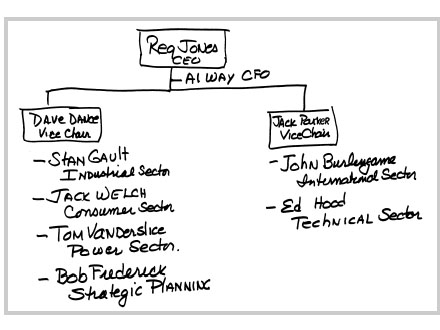
雷吉设立这个新管理层是继任流程的一部分，目的是测试我们管理数十亿美元业务组合的技能和能力，而这些业务我们并不熟悉。我被分配到消费产品和服务部门，这是唯一一个现有部门，一年前由雷吉创建以试验这个想法。这份工作让我负责一组收入达42亿美元的业务，约占公司总销售额的20%。这些业务包括大型家电、空调、照明产品、家居用品和音响产品、电视机、广播电视台以及通用电气信贷公司。
这个架构是帮助雷吉选择继任者的绝妙主意，但对我来说有一个问题。我的新直属上司、副董事长沃尔特·“戴夫”·丹斯更看好另一位候选人——他的长期门生斯坦·高尔特，和丹斯一样，高尔特几乎整个职业生涯都投入在我们的家电业务上。
丹斯对高尔特的支持显而易见。他当然有权持有自己的看法，但这让我的处境很艰难。这是我在通用电气17年来第一次遇到一个不支持我的上司。更糟糕的是，高尔特前一年刚刚管理过我现在的部门。所以我的处境是，我做的每一个决定都可能被看作是在质疑他或丹斯。
另一位副董事长杰克·帕克也有他偏爱的候选人，我不在其中。帕克是通用电气飞机发动机业务的先驱之一，一直支持那个业务和那里的人。他偏爱他的两个直接下属：伯林盖姆和胡德。这让汤姆·范德斯利斯和我成了局外人。
让我抱有希望的是，两位副董事长丹斯和帕克彼此之间以及与雷吉之间都没有太多交情，而且雷吉当初也不是选择他们的人。雷吉是从前任那里继承了这两位副董事长的。他们俩都曾是那个职位的竞争者。他们不是坏人——但他们对没能得到雷吉的职位感到失望。
在商业中，可能没有什么比为一个不希望你成功的老板工作更糟糕的了。这种情况可能发生在任何地方、任何层级——而且可能比我们想象的更常见。在为丹斯工作之前，我从未遇到过这种情况。我能挺过这段经历，只是因为我做了自己认为正确的事。我信任雷吉和这个体系会公平对待我。
如果这是一个”永久”的职位安排，我会放弃它。我不会为了坚持下去而毁掉我的职业生涯或理智。就我的情况而言，这比其他人可能遇到的要容易些。我知道自己想要什么，而且很快就会知道能否得到它。
从第一天起，继任流程就充满了政治角力。你每天都能感受到大楼里的紧张气氛。五位部门主管都位于费尔菲尔德两栋建筑群中被称为西楼的那栋。我们每个人都有一间角落办公室、一间会议室和几名支持人员的办公空间。每当我们在城里时，通常会在公司餐厅吃午餐时陷入尴尬的境地。我们嚼着三明治，总是小心翼翼地注意自己说的话。
那真是糟糕透了。
外出工作成了我逃避政治的避风港。幸运的是，要把工作做好，我需要尽可能少待在费尔菲尔德。我身后的团队很有才华——而且机动性强。我的人力资源主管大卫·奥斯莱特有着发掘人才的完美嗅觉，是一个人人都信任的人——这对人力资源人员来说是无价的特质。
当时我并不知道，但戴夫在最终选拔中对我的支持将非常重要。迪克·施莱格尔，一个热心且非常精明的财务人员，也已就位。
迪克帮我找到了两个在我职业生涯中扮演关键角色的人：来自通用电气信贷的丹尼斯·达默曼，以及在家电部门工作多年的财务分析师鲍勃·尼尔森。
丹尼斯在爱荷华州格兰德芒德的一个农场长大。小时候，他被抬起来放进麻袋里，以便压实家里羊群刚剪下的羊毛。十几岁时，他开始为另一家电气公司工作——在他父亲的公司达默曼电气做电工学徒，公司口号是”一切与电有关的事”。
1967年从迪比克大学毕业后，丹尼斯去伊利诺伊州布卢明顿拜访朋友，那里有一家生产电气零件的通用电气工厂。他走到工厂门口问保安有没有工作机会。幸运的是，他被介绍给里面的一位经理，那位经理让丹尼斯加入了通用电气的财务管理培训项目。他才华横溢、坚韧不拔，是任何人都可以依靠的可靠之人。丹尼斯能力超群，喜欢接受任何困难的任务。
鲍勃·尼尔森是团队中的知识分子。他毕业于卡尔顿学院，是政治学和历史爱好者，拥有出色的分析头脑。鲍勃似乎注定要成为大学教授。他在芝加哥大学获得了通识研究和人文学科的硕士学位，并开始攻读美国研究的博士学位。后来他转向商界，于1966年加入通用电气的财务管理培训项目。
丹尼斯和鲍勃后来成为我的财务导师，直到我从通用电气退休，我一直依赖他们的判断。丹尼斯后来成为首席财务官、通用电气金融服务公司的CEO，以及公司的副董事长。鲍勃则成为财务分析副总裁。
我还从皮茨菲尔德带来了一位朋友诺姆·布莱克，担任我的业务发展经理。诺姆聪明、执着、精力充沛，是个创业型人才，曾在塑料业务部门担任过同样的职位。他后来成为通用电气金融的执行副总裁，并于1984年离开公司，出任海勒国际的董事长。
我以在皮茨菲尔德时同样的方式投入这份新工作。只不过现在我们要从费尔菲尔德飞出去，了解新业务和其中的人员。我们通常早上7点半开始审查，然后花数小时层层深入剖析问题。很少在晚上8、9点之前结束，之后我们会一起出去吃晚饭，回顾当天的会议内容，评估每个业务部门的人才。
由于缺乏上司的支持，我工作时就当他不存在一样。最棘手的问题出现在家电业务上。方向上的改变可能被视为对我前任丹斯和高尔特的否定。他们管理家电业务已超过十年。多年来，这一直是通用电气的明星业务。丹斯和高尔特制定了大规模扩张肯塔基州路易斯维尔家电园区的计划。他们已经在马里兰州哥伦比亚建造了家电园区东区，还有在犹他州盐湖城建造家电园区西区的计划。
他们雄心勃勃的计划反映了公司对该业务潜力的传统看法。这种看法源于战后时代的繁荣景象，当时崛起的中产阶级用新家电填满了他们的新厨房。业务会继续增长是毫无疑问的。然而，真正的问题是增长速度会有多快，以及我们相对于美国和全球主要竞争对手的定位如何。我的新同事鲍勃·尼尔森和丹尼斯·达默曼都曾在家电业务工作过，他们深入分析了数据和传统假设。
我们的分析表明增长将会放缓。大规模扩张计划需要重新审视。公平地说，我认为丹斯和高尔特也得出了同样的结论。比扩张更重要的是我们在路易斯维尔的处境。我们必须改善它。虽然销售和利润还可以，但生产率却在持续下降。
多年来，总部一直听到关于家电业务相当乐观的看法。在路易斯维尔，一大批经济学家、战略规划师和财务人员都是这个业务的信徒和倡导者。他们不愿承认战后增长的时代正在迅速改变。他们并不孤单。这种乐观的看法在美国工业界普遍存在。
在路易斯维尔，家电业务的领导团队已经从我们的制作和工程中心搬到了五英里外一栋15层高楼顶层的办公套房。这具有象征意义——他们坐在象牙塔里，而所有”实干者”都在家电园区制造白色家电产品。
带着我团队的分析，我去找丹斯，建议大幅削减他管理多年的业务。我准备好了丹斯会反对，但他没有。相反，我认为他可能把我的建议视为我冲动行事的又一证据。他批准了我的计划。
我们迅速行动，通过大幅精简现有规模来提高路易斯维尔业务的竞争力，放弃了建造更多家电园区的计划。
裁员在路易斯维尔并不受欢迎。幸运的是，我有一个盟友迪克·多尼根，他是丹斯和高尔特任命的，负责管理家电业务。他认同新计划，并有勇气付诸行动——尽管他与前任有着良好的关系。虽然家电园区的痛苦变革仍未解决所有成本问题，但确实使我们更具竞争力，提高了盈利能力，让我们得以继续前进。
在家电业务，类似的行动持续了20多年。1977年雇用超过47000人的业务，如今雇员不到当时的一半，约19800名薪资员工和小时工。这些裁员是残酷的，勤劳的人们被竞争变化所冲击。在困难的业务中，这些变化永无止境。我无法告诉你在1980年代初期，有多少次被问到：“现在结束了吗？”
不幸的是，它永远不会结束。
许多推动战后繁荣的产品变成了大宗商品(commodities)，在增长缓慢的市场中利润微薄。这些变化迫使许多竞争对手退出家电行业，从福特汽车的飞歌到通用汽车的弗里吉代尔，再到西屋电气。通用电气选择留下来，在这个艰难的行业中战斗。然而，为了在这个行业生存下去，我们不得不将更多产品的生产转移到美国以外。如今一台冰箱的价格是700到800美元，而1980年的平均价格是1000到1200美元。
这个竞争激烈的行业唯一的好消息是，到目前为止，亚洲竞争对手几乎没有打入美国市场。家电行业的经历与美国汽车行业的经历形成对比，后者持续的价格上涨招来了各种外国竞争。
在1977年我作为部门主管被分配的所有业务中，没有一个比通用电气信贷公司更让我看好。像塑料业务一样，它远离主流业务，而且像塑料业务一样，我感觉它充满了增长潜力。
没有人太关注通用电气信贷公司。它是制造业公司里的孤儿。1933年，我们几乎是被动进入这个行业的——在大萧条时期，我们帮助电器经销商通过向消费者提供信贷来销售冰箱和炉灶库存。我们还为家具销售提供融资，因为大多数经销商也经营这些产品线。但在最初的20年里，从1930年代到1950年代，我们基本上只做这些。
后来我们开始拓展业务，为卡特彼勒建筑设备提供融资，我们称之为”黄铁”。直到1960年代末，我们才开始租赁其他设备。到1970年代末，通用电气信贷已经实现多元化，但规模仍然很小。那时，我们已经在为活动房屋、二次抵押贷款、商业房地产、工业贷款和租赁以及自有品牌信用卡提供融资。
在早期，我并不了解金融的复杂性。我让员工准备了一本书，把所有行话翻译成通俗易懂的语言。我称之为”小人物的金融学”，但这正是我需要的。我像回到研究生院一样认真学习，这样我就能和业务人员进行对话。
我的直觉告诉我，与我熟悉的工业运营相比，这个行业似乎是一种轻松赚钱的方式。你不需要在研发上大量投资，不需要建造工厂，不需要日复一日地加工金属。你不需要建立规模来保持竞争力。这个行业完全依赖智力资本(intellectual capital)——找到聪明有创意的人，然后利用通用电气强大的资产负债表。在我看来，这简直就是一座”金矿”。
利用脑力比生产产品更容易。金融与制造业的对比在人均利润上最为明显。通用电气信贷只有不到7000名员工，1977年的净收入是6700万美元。相比之下，家电业务需要超过47000名员工才能赚到1亿美元。
我相信这对今天的大多数人来说是显而易见的——但对1977年的我来说，这是一个重大发现。毕竟，我是一个化学工程师，只知道”制造东西”。
1970年代末，通用电气信贷的表现并不差。它的利润和业务每年都在增长。我只是觉得，考虑到它巨大的机会，增长速度还不够快。1978年春天，在我与业务负责人的早期会议中，组织里的人让我感到失望。我把他们聚集在一个房间里——好几层管理人员——详细询问他们业务的来龙去脉。“让我们假装在上高中，”我说，“从基础知识开始给我讲。”
在一个令人印象深刻的场合，我记得向我们的一位保险业务负责人问了一个相当简单的问题。在他的演示中，他一直在使用几个我不熟悉的术语。所以我打断他问：“‘临时分保’(facultative)和’合约分保’(treaty)保险有什么区别？”在支支吾吾地回答了好几分钟后——我还是没听懂——他终于沮丧地脱口而出：“你怎么能指望我在五分钟内教会你我花了25年才学会的东西！”
不用说，他没待多久。
保险的轶事并非个例。这是常态。如果通用电气信贷能用现有的人赚这么多钱，我想知道，如果全部换成A级人才，这个业务会有多大的潜力。
我们没有足够的明星来抓住在我看来唾手可得的机会。当时负责这项业务的约翰·斯坦格是一个精明的交易撮合者。他是体制的产物，不想打破现状。约翰倾向于接受分配给他的人，他没有接触过公司其他许多部门的人才库。
在1978年春天的Session C人力资源评审中，我向所有通用电气信贷的经理发起了挑战。第一天很艰难。评审结束后，我们邀请所有人去斯坦福附近的地标俱乐部，在社交氛围中更好地了解他们。总的来说，大多数人在下班后看起来并不比白天好多少。
斯坦格相当聪明。我们只需要让他接触更好的人。一旦他得到了这些人，他就蓬勃发展起来。在接下来的几年里，我们更换了通用电气信贷一半以上的领导团队。许多新人是从通用电气其他部门招募来的。许多人来自组织的底层。他们带来了巨大的改变。
通用电气信贷有一位高管格外出众。他是一个直率、聪明、风趣、说话很快的人，负责商业和工业融资业务。他叫拉里·博西迪，当我第一次见到他时，我想，你到底是从哪里冒出来的？
1978年初，我在夏威夷的一次通用电气信贷管理会议上遇到了他。不知怎的，我们发现自己在户外的桌子上打起了乒乓球。我们打得好像命悬一线，扑进灌木丛，汗流浃背。比赛非常激烈，我们俩都在拼命抽打这个小白球。卡罗琳从我们酒店房间的阳台上喊我，提醒我们要赶飞机了。我不想离开。这个充满活力、竞争意识如此强烈的人让我兴奋不已。
比赛结束后，我舍不得放他走。他敏锐的机智和犀利的观察给我留下了深刻印象，这些观察印证了我对通用电气信贷中层管理平庸的直觉。就在我以为找到了一颗明星时——拉里扔下了一颗炸弹。他透露说他准备离开公司，去孤星水泥公司工作。他和我多年前一样，对官僚主义感到沮丧。
我请他留下来。
“你到底为什么要去一家水泥公司？”
“这个地方快把我逼疯了！”他回答道。
“给我一个机会，”我说，“你正是我们需要的人。这里将会变得不一样。”
博西迪留了下来。一年后的1979年，在雷格的支持下，我任命他为通用电气信贷的首席运营官。他和斯坦格为后来成为我们最重要的增长业务奠定了基础。1981年我成为董事长后，拉里调到费尔菲尔德担任部门主管，三年后成为我的副董事长之一。在接下来的七年里，他一直是我的得力伙伴，直到他离开去担任联信公司(AlliedSignal)的首席执行官，开创自己的事业。
拉里在通用电气金融的早期角色至关重要。从1977年那个小小的基础——一个盈利6700万美元、员工不到7000人的业务——通用电气金融实现了爆发式增长。到2000年，该业务盈利52亿美元，员工超过89000人——这要归功于一连串杰出的领导者。
并非我经手的每件事都进展顺利。在接班竞争期间，我追求了一项重大收购，以增加我们在广播业务领域的布局。我与业务发展主管诺姆·布莱克一起谈判收购考克斯通信的有线电视和广播业务。
1978年春天，我说服董事会同意这笔交易，确信这次收购对通用电气非常有利。我们已经拥有几家电视台，事实上通用电气是有线电视行业的先驱之一。公司在1970年代决定退出有线电视业务，因为认为这个行业监管过于严格。诺姆和我的看法不同。我们相信有线电视前景光明，即将迎来爆发。雷格同意我们的看法。
在接下来的14个月里，当我们努力获得联邦通信委员会(FCC)的所有必要批准时，有线电视开始爆发式增长。我想在考克斯抢占先机，于是把鲍勃·赖特从塑料业务调到考克斯位于亚特兰大的总部，负责有线电视业务，为我们接管考克斯广播做准备。看到鲍勃在塑料销售方面的领导才能，我认为他外向的性格和法律背景非常适合快速扩张的有线电视行业。考克斯的管理层很喜欢鲍勃，但随着FCC审批时间的拖延，考克斯家族开始提高交易价格。我越来越清楚地意识到，他们后悔与我们签订了合同。
考克斯团队做了一些巧妙的法律安排。我们的协议与其说是购买业务的合同，不如说是考克斯可以自行决定出售的期权(option)。合同给了考克斯退出的余地。也许我应该发现这一点，但我没有。
我费了很大劲说服雷格和董事会，这笔数亿美元的交易是划算的。现在，每次诺姆和我与考克斯的人会面，价格都在上涨，我开始得出结论：无论什么价格，这笔交易都无法完成。考克斯家族改变了出售的想法，正在用价格作为终止交易的手段。在接班竞争这种政治敏感的氛围中失去这笔大交易，可能是一场灾难。
考虑到这笔收购和我在通用电气的前途都押在上面，我们非常想促成这笔交易。诺姆和我花了很多时间苦苦思索他们是否会最终成交。我们不想放弃。诺姆曾与我一起在塑料业务工作，我们两家关系密切。大约十天时间里，我们不停地讨论这件事，无论是在办公室还是在彼此家中。经过所有这些深思熟虑后，我最终决定必须放弃。
1979年夏天，我把我的决定告诉了雷格。他同意了，但要求我在下次董事会上向全体董事解释理由，会议在圣路易斯举行。现在我不仅要向雷格坦白，还要面对公司所有的董事。即将召开的董事会正值高管和董事会成员的年度高尔夫球聚会。这更增添了戏剧性——我不得不进去为一笔我大力推销了一年多的交易认错。我不知道会发生什么。但我尽量以最好的姿态面对这个困难局面。
在一次清晨的董事会上，我陈述了不再追逐这笔交易的理由。董事们问了很多问题，包括”为什么不继续提高价格？“在过去六周与考克斯谈判代表打交道后，我从心底里感觉考克斯家族无论如何都不会卖给我们，但我无法证明这一点。继续追逐对通用电气来说是不对的。
我觉得会议进行得不错。我希望董事们能忽略我未能完成交易这件事，而欣赏我做出了一个艰难的决定。我几乎不知道他们真正的想法。那天下午我和其中三位董事打高尔夫球时，得到了一个相对积极的反应。当我在一个短三杆洞准备开球时，董事会成员之一迪克·贝克——安永会计师事务所(Ernst & Whinney)前负责人，一个很有幽默感的人——打趣道：“我希望你今天搞砸的事不会影响你这一杆！”
我的七号铁杆从手中掉落，我喊道：“犯规！”四人组中的另外两位董事大笑起来。我把这当作一个积极的信号，因为这是我第一次看到这群通常很严肃的人开玩笑。我想如果我的处境不好，他们不会拿我开玩笑。后来我发现，一些担心我竞争性太强的董事，反而喜欢我能够放弃一笔交易这个事实。
在所有这些变化的背后是雷格的接班问题。竞争中的每个人都在努力超越其他人。我们都在拼命工作，试图让自己脱颖而出。我没有从我的上司丹斯那里得到任何反馈。例如，我在通用电气信贷推动的变革，既没有得到他的支持，也没有遭到反对。我也不确定雷格的立场。在内心深处，我总觉得他支持我，但我从来不确定。
这是一场赛马，但所有的骑师和马匹都是盲目的。除了雷格，没有人知道谁在比赛中领先或落后。而雷格不会告诉任何候选人他们在比赛中的位置。
公司内部的传言让大家都认为他最看好的是艾尔·韦，此人与雷格有着相同的金融背景，作为首席财务官每天都与他密切合作。艾尔帮助策划了雷格最大的一笔收购——犹他国际公司，还帮他把亏损的计算机业务出售给了霍尼韦尔公司。与此同时，丹斯对高尔特的支持从未动摇，高尔特当时负责工业部门；帕克对伯林盖姆和胡德的支持也同样坚定。
我的直觉告诉我雷格认可我的工作，但我仍然被疑虑困扰。这些不确定性让我在竞争过程中一度考虑离开通用电气。和通用电气的每个人一样，我经常接到猎头的电话。这一次，在自我怀疑的漩涡中，我积极回应了海德思哲猎头公司杰里·罗奇的电话，考虑了联合化学公司的首席执行官职位。
回想起来，我只是在试探，并非真的想离开通用电气，只是不确定自己在竞争中的位置。那种缺乏自信的心态又在作祟了。
当时，关于继任流程有很多事情我并不知道。我不知道1974年底制定的最初19人候选名单上根本没有我的名字，那时我还在皮茨菲尔德。我不知道到1975年初名单缩减到10人时，我仍然不在其中。我不知道是人力资源主管罗伊·约翰逊把我排除在名单之外。当时人力资源部门对我的官方评价是：“尽管过去运营业绩出色，但不在最佳候选人名单上。新出现的问题是过度关注业绩结果。与下属关系具有威慑性。存在公司管理方面的隐忧。当前业务逆境将是严峻考验。密切关注中。”
翻译过来很简单。约翰逊认为我太年轻、太鲁莽，额头上没有刻着通用电气的标志。他认为我为了取得业绩过于强势，对公司的仪式和传统缺乏尊重。尽管约翰逊有所保留，雷格还是坚持把我加入候选名单。他认为我的业绩至少让我有资格竞争他的职位。我被列为”重点培养”对象——换句话说，会获得更大的职位。
幸运的是，到1976年，特德·莱维诺接替约翰逊成为人力资源高级副总裁。他在这个过程中发挥了重要作用，为雷格整理了最初的名单，并每天关注继任竞争的进展。特德彻底革新了通用电气的人力资源职能。他挑战”老男孩”式的现状，开始推行精英制度(meritocracy)。雷格开始把特德当作重要的参谋。
1979年1月下旬，雷格请我进入他的办公室并关上门，进行了我后来才明白的著名”飞机面试”中的第一次——所有候选人都要经历这种面试。前任董事长弗雷德·博尔奇曾用类似的面试选中了雷格。
“杰克，你和我乘坐公司的一架飞机，飞机坠毁了，”雷格说，“谁应该成为通用电气的下一任董事长？”
大多数候选人，包括我在内，本能地立刻试图从残骸中爬出来接管公司。雷格礼貌地解释说那是不可能的。我们俩都在飞机上。
我试图争辩说我在坠机中幸存了下来。
“不，不，”他说，“你和我都死了。谁应该当董事长？”
我支支吾吾，艰难地寻找答案。我告诉他，我非常确信自己是这个职位的最佳人选，所以很难给他另一个名字。
“等一下，”雷格说，“你已经出局了。谁应该得到这个职位？”
我最终告诉雷格，我会投票给埃德·胡德，他负责技术产品和服务业务。“他深思熟虑又聪明，我会让汤姆·范德斯利斯当二把手。汤姆果断，坚韧如钉。他们会很好地互补。”汤姆负责电力系统部门，和我一样，没有得到任何一位副董事长的支持。
然后雷格询问我对其他每位竞争者的看法，引导我评估他们的优势和劣势。他想知道我如何评价每个人的智力、领导力、诚信和公众形象。他试图弄清楚谁能与谁合作。他不想让他的继任者——像他自己曾经经历的那样——被几个不满的副董事长拖累。在这些持续数月的面试中，雷格收集了所有高管的意见，包括不在竞争行列中的高级管理人员。
当雷格汇总与九位不同高管的面谈结果时，没有人把最高职位给我。七位受访者支持斯坦·高尔特。两位提名埃德·胡德。
又有一次，在六月，雷格再次请我进去。
“还记得我们的飞机对话吗？”他问。
“记得，”我回答，“你把我弄死了。”
雷格笑了。“好吧，这次，我们一起在外面，乘坐一架飞机，飞机坠毁了。”
“不要又来，”我抱怨道。
“杰克，这次我死了，但你活了下来。现在谁应该成为通用电气的董事长？”
“这还差不多。我就是那个人，”我毫不犹豫地说。
雷格问谁应该在我的领导团队中。我告诉他，在所有竞争候选人中，我最想与胡德和伯林盖姆共事。我再次强调，与我最契合的是胡德。我加上伯林盖姆是因为我真心尊重他的智慧、分析能力，以及他的自信从容。
“好的，如果你是那个人，你认为公司面临的主要挑战是什么？”
我把自己的真实想法告诉了雷格，我相信每位候选人都是这样做的。雷格把我们的观点和想法分享给了董事会的管理发展与薪酬委员会，当时的主席是联合百货公司董事长拉尔夫·拉扎勒斯。显然，当雷格统计这些面谈结果时——他曾要求每个人提名三位高管进入最高领导团队——我的表现要好得多。高尔特仍然获得最多票数（七票），而胡德和我各得六票，并列第二。
在这些面谈中，雷格始终保持着他一贯的扑克脸。他从未给我们任何人暗示，让我们知道自己的处境如何。有时候，他显得疏远，难以接近。他没有表现出任何偏见或偏好，至少对我是这样。由于我们之间存在许多表面上的差异，我完全不确定他最终会选择我。他看起来像是一位英国政治家，而我是一个爱尔兰街头小子。
至少从表面上看，他似乎与我截然相反。
然而，很少有人知道——包括我在内——雷格其实是从局外人的角度成长起来的。
他被描绘成一位彬彬有礼的政治家。媒体报道说他是三位总统及其内阁的顾问，一位记者说他看起来像”一位勤勉的教会执事”。他确实是这样的人。但许多人忽略的是，雷格并非出身特权阶层。他是一个来自工人阶级家庭的白手起家者，为自己的成就付出了艰辛的努力和奋斗。借用鲍勃·霍普的话，雷格这样形容自己：“我是英格兰人。我太穷了，当不起英国绅士。”
雷格在斯托克城的一栋联排房屋中长大。他父亲在钢铁厂当工头，母亲渴望在美国过上更好的生活。雷格终于在八岁半时来到美国，穿着英国男孩的校服，搬到了新泽西州特伦顿郊外。他带来的任何口音很快就在校园里被其他孩子打掉了——那些孩子对一个聪明的外来者感到威胁。他的父母都在当地一家工厂找到了工作，那是顶峰橡胶制造公司。他母亲是计件工人，负责分拣和包装用于梅森罐盖的橡胶密封圈。他父亲是电工助手。
雷格在学校表现优异，通过给其他学生做家教和在大学图书馆整理书架，半工半读完成了宾夕法尼亚大学沃顿商学院的学业。1939年毕业后，他直接进入通用电气，通过公司强大的财务部门一路晋升。雷格在审计部门工作了八年，走遍了公司几乎每个业务部门的每家工厂。在1968年被任命为首席财务官之前，他曾在多个业务部门担任运营经理，这个职位为他四年后担任董事长奠定了基础。
雷格和我显然是非常不同的人。但我们也有许多隐藏的相似之处。我们都是来自普通家庭的勤奋工作者。和我一样，他是独生子，父母与我的父母非常相似。我们在各自唯一工作过的公司取得的成功，证明了这个组织的精英制度(meritocracy)。
我们都热爱数字和分析。我们都认真做功课，对不做功课的人几乎没有耐心。多年来，外界一直困惑雷格怎么会选择一个与自己如此不同的人，却从未意识到我们之间的联系。
在写这本书之前，我自己也没有意识到这一点。我们的相似之处远比任何人想象的要多。
竞争中的第一个重大转折发生在1979年8月初——距我第一次来到费尔菲尔德已经过去了18个月。8月2日星期四晚上，在纽约州莱伊附近的盲溪乡村俱乐部举行董事会活动后，雷格与他的两位副董事长坐下来，告诉他们他将把竞争范围缩小到三位候选人：我、伯林盖姆和胡德。
其余候选人将保留现有职位或离开公司。他说第二天早上他将请求董事会批准任命我们三人为副董事长。帕克和丹斯都必须在年底前退休。
第二天早上，帕克和丹斯向全体董事会表达了他们的意见——基本上反对雷格将我列为第三位候选人的立场。董事会中至少有一位最有影响力的董事强烈支持高尔特，还有一些人因为艾尔·韦的财务专长而支持他。然而，董事会最终倾向于雷格的意见，包括帕克和丹斯也退让了，使投票结果成为全票通过。
值得称赞的是，明显失望的帕克把我叫到他的办公室。“我想让你从我这里听到这件事，而不是从别人那里，”他说。“我没有支持你，我认为你不是领导通用电气的合适人选。我不希望你把这家公司搞砸。”我欣赏他的坦率，尽管我不同意他的评价。
多年后我才知道，雷格当时已经下定了决心。他希望我成为公司的下一任首席执行官。但仍有几位董事支持其他候选人。通过让我们三人以副董事长身份进入董事会，雷格押注更长时间的观察会让其他董事转而支持我。
在接下来的几个月里，高尔特、范德斯利斯、韦、帕克和丹斯相继离开了公司。在接下来的两年里，伯林盖姆、胡德和我直接向雷格汇报。气氛变得清朗，政治斗争消失了。雷格的飞机面谈让他确信我们三人可以作为一个团队良好合作——我们确实做到了。
临近尾声时，雷格向所有候选人提出了最后一个要求。他要求我们每个人写一份详细的备忘录，评估自己作为副董事长、董事和公司代表的表现。他还要求我们写下自己的个人成长，以及我们如何通过雷格所说的”管家精神”(stewardship)测试——即公司应该为社会带来什么。
我仍然担心一个更基本的问题：Reg和董事会可能会因为我的年龄而不选择我。44岁的我是三位最终候选人中最年轻的。John Burlingame 58岁，Ed Hood 50岁。我考虑在备忘录中承诺，如果获得这个职位，任期不超过十年。我认为这样的承诺可以消除一些人对我年龄的担忧，以及对我可能在这个职位上待太久的顾虑。
当我把这个想法告诉我的好友Anthony “Lofie” LoFrisco时，他觉得我疯了。Lofie是一位纽约律师，我刚到费尔菲尔德不久后在银泉乡村俱乐部认识了他。一个周日下午，在我位于新迦南的家中泳池边，我们就我提出”任期限制”的想法展开了激烈争论。他坚持认为我会永远后悔这样做。
“一旦你坐上那个位置，你就不会想离开了，”他说。“他们唯一能让你离开的方式，就是用煤�ite块把你封在办公室里。”
“别开玩笑了！”我说。“你疯了。”
Larry Bossidy和他的家人也在场，Larry最终站在了LoFrisco那边。最后，我同意了他们的看法，放弃了这个想法。（至少在过去十年里，Lofie一直不忘提醒我他对我职业生涯的重大贡献。）
后来我发现我的担忧是真实存在的——虽然并不是特别严重。有几位董事曾建议Reg应该先任命Burlingame担任一段时间的董事长作为过渡，然后再任命我。Reg显然化解了这个问题，他告诉董事会，如果我得不到这个职位，我很可能会离开公司。
他说得没错。
我花了很多时间精心撰写了一份八页的备忘录，发给了Reg，并注明：“这可能比我们双方需要或想要了解的关于Welch的信息还要多。”这封信比我今天写的东西更加生硬和正式。然而，44岁的我觉得需要这样做来克服我不成熟的形象。尽管如此，它包含了许多我在接下来20年里实际实施的想法。
在信中，我直面了一些同事可能对我的担忧，包括他们认为我缺乏成熟度和敏感性。我论证说，我在通用电气20多年的所有经历，加上我个人的成长，已经让我具备了这份工作所需的成熟度，以及CEO”管理者”角色所需的敏感性。
我试图解释我要求严格的性格，写道：“虽然我一直并将继续要求员工达到高绩效标准，但同时我也为有潜力的员工提供了许多’跨越式’晋升机会，并帮助创造了一种吸引有才华、有抱负的人才的氛围。”
有一句话我很喜欢，它概括了我对领导力的看法：“与我共事过的人工作更努力，更享受工作——虽然一开始并不总是如此——最终，他们因为完成了超出自己预期的成就而获得了更多的自尊和自信。”
我解释说，我从收购Cox失败的经历中学到了宝贵的东西。我发现华尔街对这笔拟议交易及其取消的反应是”普遍漠不关心”，尽管交易金额高达数亿美元，而且是在一个极具吸引力和关注度的行业。因为通用电气规模太大，这笔交易的影响被认为不够显著。
“这强化了我的观点：作为一家企业，我们能向股权投资者展示的，是在整个经济周期中持续、高于平均水平的盈利增长，”我写道。“我们的规模可能决定了这是唯一的选择。平衡短期和长期的纪律是这一战略的绝对核心。”写这封信时，我完全不知道这个基本信念后来会被证明是多么正确。
最后，我还为争取这个职位做了有力的陈述。“今天，”我写信给Reg，“你所在的位置与我们三人之间存在很大的距离。然而，我觉得我有智力能力、广阔的视野、自律精神，最重要的是领导力来达到那个位置。通用电气是我的职业生涯，它对我的重要性逐年增加。我能否恰当地整合并履行这些多重责任，需要由他人来评判——但显然我希望得到这个机会。”
我在推销”成长空间”(runway)——成长的潜力，这是我在每次任命中都会寻找的东西。我总是押注于成长空间。我认为在员工职业生涯早期就把他们放到有挑战性的岗位上是一个好的选择。在绝大多数情况下，他们会为工作带来更多的热情和激情，并实现更大的个人成长。
至于我的处境，1980年夏天我开始收到积极的信号。Dave Orselet是我的人力资源助手，也是真正的朋友，他从公司人力资源主管Ted LeVino那里获取了一些消息。虽然Dave直接向Ted汇报并对他忠诚，但他无法抵挡我不断追问信息的攻势。
我记得有一次在我家的聚会上，我把可怜的Dave逼到厨房冰箱旁，追问他认为这场竞争会如何发展。那可能是我最过分的一次。感谢他的好心，Dave从不告诉我我是领先者，但他勉强透露了足够的信息，让我对最终结果感到乐观。
董事会第一次暗示我可能是领先者是在1980年9月，当时通用电气的一位董事会成员打来电话，发出了一个不寻常的邀请。Ed Littlefield是1970年代末将犹他国际公司出售给通用电气后的大股东，他邀请我作为他的搭档参加加利福尼亚的柏树角会员嘉宾高尔夫锦标赛。Littlefield作为犹他国际公司的董事长在我们的董事会任职。当他把犹他公司卖给Reg时，他成为了通用电气最大的股东之一。我想，如果我不是Reg的人选，他不会邀请我。
这是我第一次来到柏树角球场，对我来说是一次难得的享受。埃德想把我介绍给他所有的西海岸朋友。我的爱尔兰好运再次降临。锦标赛第一天，我们采用霰弹枪发球方式，从第六洞开始。在第七洞，一个三杆洞，我走上发球台，用四号铁杆一杆进洞。这是我打了30年高尔夫后的第一个一杆进洞，而且是在柏树角球场我打的第二个洞。这让我很容易就认识了所有人。
利特菲尔德是众多董事中的一位，他在董事会上直言不讳的支持产生了重大影响。他是我的热情支持者，还有西·卡斯卡特、G.G.·米切尔森、亨利·希尔曼、沃尔特·里斯顿和约翰·劳伦斯。这六位董事中有五位在未来几年对我发挥了非常重要的作用。
西当时是伊利诺伊工具公司的董事长，是世界上最随和、最自然的人。我们第一次见面我就喜欢上了他。他有非凡的常识和对每种情况的独特感觉。在我担任CEO的每一年，西都在帮助我，甚至同意退休后复出来管理基德皮博迪公司，当时它陷入了困境。
G.G.给我留下了深刻印象，她当时是来自R.H.梅西公司的相对较新的董事会成员，尽管直到后来我才意识到她是多么聪明、精明和有创造力。她一直是一位有洞察力的知己，在我在通用电气做出的每一个重大决定中都发挥了重要作用。亨利·希尔曼是一位令人兴奋的企业家，一个敢于冒险的人，我喜欢和他交谈。他聪明、富有、风趣，从不把自己看得太重。他和我一样厌恶自命不凡。他总是问：“我们走得够快吗？”约翰·劳伦斯是波士顿婆罗门阶层出身的全球棉花贸易商，他乘坐的通勤列车正是我父亲当列车员时工作的那趟车，他已经在通用电气董事会任职23年了。他喜欢高尔夫，在通用电气的活动中总是和我打一场。我们在一起总是很开心。约翰见多识广，是雷格的亲密知己。他在我被任命后不久就到了强制退休年龄。
作为花旗银行的董事长，里斯顿是董事会中最有影响力的董事之一，也是20世纪70年代和80年代美国最重要的银行家。我第一次遇到他是在1979年迪士尼世界的一次董事会郊游活动上。他当时正试图招募丹尼斯·达默曼——当时通用电气资本的副总裁兼财务总监——去花旗银行担任要职。我去找他，取笑他身为董事会成员却试图挖走我最好的高管之一。
我想他觉得我的”进攻”很有趣。那种坦率可能是致命的，也可能是持久友谊的开始。结果是后者。沃尔特既强硬又聪明，有一种冷幽默——但当他喜欢某人时，他真的很支持。他从第一天起就支持我。
他们是在董事会上支持雷格的董事之一，正是他们让雷格能够在1980年12月15日那天走进我的办公室拥抱我。在那个寒冷的周一，雷格告诉我，他已经推荐我担任这个职位，董事会在11月20日的晚宴会议上一致支持。雷格给了董事会一个月的时间来反思这个结论，并在投票后提出他们想要提出的任何问题。没有任何问题。雷格告诉我，我将在即将到来的12月19日星期五的董事会会议上正式当选董事长。他解释说，胡德和伯林盖姆将继续担任我的副董事长，他将在接下来的三个月里帮助我完成过渡，直到我在4月1日正式接任。
这一切之所以发生，是因为雷格有勇气选择一个与当时”通用电气高管典范”截然相反的人。
走到这一步是一场艰难的奋斗。我现在得到了这份工作，但一些愚蠢的政治斗争仍然存在。为了让你了解当时的政治有多复杂，保罗·弗雷斯科——当时的副总裁——回忆说，他在费尔菲尔德的走廊里差点被一位过于热心的高管当面质问，那位高管向伯林盖姆汇报工作却支持我。弗雷斯科记得自己被骂作”蠢驴”，仅仅因为他忠于自己的老板。在我被任命为候任董事长后不久，保罗来找我。
“杰克，”他以真正的意大利政治风格说道，“我向你递交辞呈。我想让你知道我当时支持伯林盖姆，我的候选人输了。”
我让他把辞呈收回去。我没有考虑谁支持我或不支持我。这位意大利出生的弗雷斯科是我见过的最具全球视野的人，后来成为我最亲密的朋友之一。作为副董事长，他在使通用电气成为真正的全球化公司方面发挥了重要作用。
但这主要是庆祝的时刻。在宣布这一决定的报道中，《华尔街日报》报道说，通用电气决定”用一个充满活力的人取代一个传奇人物”。为了把我介绍给企业精英，雷格计划在2月24日——就在我4月1日正式接任之前——在纽约市的赫尔姆斯利宫酒店为我举办一场亮相派对。雷格想把我介绍给他的朋友们，并把他的人脉关系转交给我。这是一场盛大的活动，当时全国最大公司的CEO们都出席了。
那是一场精彩的聚会。我玩得很开心。每个人都很放松，几乎每个人都喝得有点多，除了雷格，他想确保我被介绍给五六十位客人中的每一位。他想让我有一个完美的开始。但当雷格在深夜让我讲几句话时，我不知道的是，他显然觉得我有几个词说得含糊不清。
第二天一大早，他走进我的办公室，我从未见过他那么生气。
“我这辈子从没这么丢脸过，”雷格告诉我。“你让我和公司都很难堪。”
我惊呆了。我玩得很开心，觉得这是一场很棒的派对。在接下来的四个小时里，我几乎体验了人类所有的情绪。我深感失望，觉得自己让雷格失望了。我对他非常恼火，因为我觉得他太古板了。我为自己感到难过，也许我并没有留下自己以为的那么好的印象。我不敢相信我们的客人没有玩得尽兴。他们不可能装得那么像。我参加过足够多的派对，知道什么是好派对。
然而，快到中午时，情况发生了变化。
雷格回到了我的办公室。
“我想谈谈，”他说。“听着，过去三个小时我接到了二十多个电话，每个人都说这是他们十年来在纽约参加过的最棒的派对。对不起，我对你太苛刻了。每个人都玩得很开心。我听到的都是关于你和这场派对的好评。他们喜欢你。是我误读了那个晚上。”
天哪，我松了一口气。我迫不及待地想要开始工作了。
1981年4月1日，我就像那只追上了公交车的狗。我终于得到了这份工作。
尽管所有的经历让我走到了这一步，但我内心远没有表面上那么自信。表面上，我有相当充足的自信，认识我的人会形容我自信、傲气、果断、敏捷、强硬。但内心深处，我仍有很多不安全感。每当我必须在众人面前讲话时，我都要与自己的口吃作斗争。我用梳过来的头发来掩饰日渐后退的发际线。当有人问我身高多少时，我让自己相信我至少比实际的五英尺八英寸高一英寸半。
我上任时缺乏许多外在的CEO技能。我几乎没有与华盛顿的任何人打过交道，尽管政府比以往任何时候都更多地介入商业事务。我几乎没有与媒体打交道的经验。我唯一的新闻发布会是在通用电气宣布我将成为下一任董事长那天与雷格一起举行的照本宣科的会议。我只在跟踪通用电气的华尔街分析师面前露过一两次面。而我们五十多万股东根本不知道杰克·韦尔奇是谁，也不知道他是否能够接替美国最受尊敬的商人的位置。
但我确实知道我希望公司”感觉”像什么样子。那时我还没有称之为”文化”，但实际上就是文化。
我知道它必须改变。
公司有很多优势。这是一家年收入250亿美元、年利润15亿美元、拥有40.4万名员工的企业。它拥有AAA级资产负债表，其产品和服务几乎渗透到国民生产总值的每一个部分，从烤面包机到发电厂。一些员工自豪地将公司描述为”超级油轮”——在水中稳健而平稳。我尊重这一点，但我希望公司更像一艘快艇，快速敏捷，能够灵活转向。
我希望通用电气能像我来自的那个非正式的塑料业务部门那样运营——一家充满自信的企业家的公司，他们每天都会面对现实。每一个里程碑都可以引发一场庆祝活动，让商业变得有趣。除了少数例外，当时有趣并不是常态。
我知道即使通用电气在变大，保持小规模的好处。好的业务必须与坏的业务区分开来。我希望通用电气只保留那些在市场上排名第一或第二的业务。我们必须行动更快，摆脱该死的官僚主义。
现实是，在1980年底，通用电气和美国大部分工业一样，是一个正式而庞大的官僚机构，管理层级太多。它由超过25000名经理管理，每人平均有七个直接下属，在工厂车间和我的办公室之间有多达十几个层级。超过130名高管拥有副总裁或以上的头衔，每个头衔背后都有各种职称和支持人员：“企业财务管理副总裁”、“企业咨询副总裁”和”企业运营服务副总裁”。
全国各地有八位区域或”消费者关系”副总裁，没有直接的销售责任。这种结构造成的官僚主义是巨大的。（如今，在一家规模大六倍的公司里，我们的副总裁大约只多了25%。我们的经理更少了，大多数现在平均有超过15个直接下属，而不是七个，在大多数情况下，从车间到CEO之间的层级不到六个。）
没过多久，我就遇到了一些最糟糕的做法。
上任几个月后，我们研发部门的负责人阿特·比奇来到我的办公室。他想给我一系列写有问题的卡片，用于我们即将与通用电气业务领导举行的规划会议。这些会议的核心是厚厚的规划书，其中包含未来五年销售额、利润、资本支出和无数其他数字的详细预测。这些规划书是官僚机构的命脉。费尔菲尔德的一些通用电气员工实际上会给它们打分，甚至根据每本封面的精美程度打分。这太疯狂了。
我翻看了阿特递给我的卡片，惊讶地发现公司的小抄上写满了”抓你把柄”的问题。
“我到底该拿这些怎么办？”
“我总是把这些问题交给公司执行办公室。这样他们就可以向运营人员展示他们研究过规划书了，”他回答道。
“阿特，这太疯狂了，”我说。“这些会议必须是自发的。我想第一次看到他们的东西并做出反应。规划书是用来引发对话的。”
我最不想要的就是一系列刁钻的技术问题来刷存在感。如果我作为CEO连自己想问什么问题都做不了主，那当这个CEO还有什么意义？公司总部的员工对一线业务漠不关心——他们忙着”拍上级马屁”。
公司高管办公室，包括我的副董事长们，并不是总部唯一拿到”小抄”的群体。每次业务评审，总部的人都会给自己的部门负责人准备一堆问题。
我们有几十个人在例行翻阅那些我认为毫无价值的”死书”。在我整个职业生涯中，我从不想在演示者汇报之前看到规划书。对我来说，这些会议的价值不在于那些文件本身，而在于来费尔菲尔德汇报的人的头脑和心态。我想深入挖掘，超越那些活页夹，了解背后的思考过程。我需要看到业务负责人的肢体语言，以及他们在论述中倾注的热情。
被动式的评审太多了。每年春天有个固定仪式，就是去路易斯维尔参加家电产品评审。一群设计师和工程师搬出纸板和塑料模型。我们这些从费尔菲尔德来的人，被要求对未来的冰箱、炉灶和洗碗机型号发表意见。
我永远不知道这些模型中有多少最终能摆上经销商的展厅。但我确实知道，有些模型必须先掸掉灰尘，因为它们已经在之前的评审中展示了好几年。我也知道，包括我在内的费尔菲尔德代表团的意见几乎没什么价值。这种仪式纯粹是浪费大家的时间。
我想打破这种走过场的循环。层级制度那种被动”审查和批准”的角色必须改变。
在我上任第一个夏天的规划会议之后，我试图在自己的团队中营造我期望的氛围。我认为打破僵局的好方法是带大家到外面开两天会。在我之前的工作中，我们总能找到办法把高尔夫和业务结合起来，去一流的高尔夫球场（比如希尔顿黑德的海港城和霍姆斯特德的卡斯卡德斯）。
我刚成为劳雷尔谷的会员，那是匹兹堡郊外一个很棒的高尔夫俱乐部。所以在1981年秋天，我邀请了大约14位高管到劳雷尔谷进行为期两天的务虚会。这个团队包括所有职能部门负责人和我们的七位业务板块主管。这是我第一次真正尝试在高层建立一个协作团队，也就是我们后来所说的CEC，即公司执行委员会(Corporate Executive Council)。
在这14位高管中，至少有七八个核心成员支持新议程。雷格选择约翰·伯林盖姆和埃德·胡德担任副董事长是正确的。他们很支持我，从未暗中破坏我的努力，尽管他们可能对变革的速度有所保留。
事实上，他们两人一起发挥了调和作用。拉里·博西迪，就是我在乒乓球桌旁发现的那个人，1981年作为业务板块主管来到费尔菲尔德，成为了我的事业知己。我们都痛恨官僚主义。我还得到了两位最资深幕僚的大力支持：首席财务官汤姆·索森和人力资源主管特德·莱维诺。
汤姆是我在皮茨菲尔德的老同事。几年前，雷格把他调到费尔菲尔德担任CFO。他理解我们想做什么。虽然他觉得挖苦我是一种乐趣，但我仍然欣赏他的坦率和聪明。莱维诺代表了新旧通用电气之间的桥梁。他对许多早期举措的支持至关重要。
即使此刻我没有让全部14位高管完全站在我这边，我知道我已经有足够的人来启动这个进程。在劳雷尔谷的第一个早晨，我在会议室里摆满了空白的活动挂图，急切地想记录下每个人的想法。我站在众人面前，开始询问他们对”数一数二”战略的看法，他们喜欢和不喜欢通用电气的什么，以及我们应该迅速改变什么。我们花时间讨论了刚刚结束的规划会议以及如何改进。创造开放的对话很困难。只有那些与我密切合作的人才愿意畅所欲言。大多数人不想冒险出头。
我们勉强度过了上午，只有一半人参与其中。
下午打了一场愉快的高尔夫，晚餐时喝了几杯酒后，气氛稍微轻松了一些，又有几个人加入了讨论。第二天情况差不多。也许时机还太早。他们中的许多人不确定自己的处境，也不知道在面对什么。这两天的外出活动未能就变革达成任何共识。
我认为我们需要一场革命。很明显，靠这个团队是不可能实现的。
通用电气的文化是为不同的时代建立的，那时命令与控制(command-and-control)结构是合理的。由于我曾在一线工作，我对大多数总部员工有很强的偏见。我觉得他们奉行的是一种”表面和气”——表面上客客气气，底下却暗流涌动，充满不信任和明争暗斗。这个说法似乎很好地概括了官僚们的典型行为方式：当面笑脸相迎，背后却总想找你的把柄。
组织层级是规模膨胀的另一个后遗症。我用穿太多毛衣来打比方。层级就像毛衣，是隔热层。当你出门穿了四件毛衣，就很难感知外面到底有多冷。
有一次，我在马萨诸塞州林恩的一家喷气发动机工厂参观时，最后来到锅炉房，遇到一群员工，他们认识很多我在塞勒姆一起长大的人。在闲聊往事时，我偶然得知他们的锅炉运营有四层管理人员在监督。我简直不敢相信。这是一种很有趣的方式来发现层级问题。我后来逢人便讲这个故事。
另一个有效的类比是把组织比作一栋房子。楼层代表层级，墙壁代表职能壁垒。要让组织发挥最大效能，必须打破这些楼层和墙壁，创造一个开放空间，让想法自由流动，不受级别或职能的限制。
在20世纪70年代和80年代，大企业层级太多——太多毛衣，太多楼层和墙壁。这些层级的影响在资本支出审批流程中体现得最为明显。我刚成为CEO时，几乎每一笔重大资本支出申请都要送到我这里审批。一叠文件会放到我桌上，等我签字批准购买诸如5000万美元的大型计算机之类的东西。有些情况下，已经有16个人签过字了，我的签名是最后一个。我能增加什么价值呢？
我废除了这个流程，至少18年没有签过任何支出审批文件。每位业务负责人都拥有与董事会授予我相同的授权。每年年初，各业务部门会提出所需的资本预算。我们分配资金，从5000万到数亿美元不等。他们拥有这些资金，并决定如何进一步下放支出权限。最接近工作的人最了解工作。他们变得更有责任感。如果他们知道不会有一堆签名压在上面，就会更认真地对待自己的建议。
那些日子里，我在扔手榴弹，试图炸掉那些我认为阻碍我们发展的传统和仪式。1981年秋天，我向Elfun协会扔了一颗。这是通用电气内部的一个管理俱乐部。（Elfun是Electrical Funds的缩写，是会员可以投资的一只共同基金。）这是一个白领人士的社交团体。成为Elfun会员被视为进入管理层的”通过仪式”。
我对Elfun当时的做法并不尊重——我认为它代表了”表面和谐”的极致。
它演变成了一个精英团体，成员们想在晚宴上被老板或老板的老板看到。我记得早年职业生涯中交过会费，参加过几次这样的晚宴。如果一位负责当地业务的公司副总裁出席，会场就会座无虚席。每个人都去争取印象分和露脸机会。如果演讲者对他们的职业发展没有实际影响，Elfun连一个小会议室都填不满。
作为新任CEO，我被邀请在1981年秋季的年度领导力会议上发言。这本应是一次愉快的会议，新领导发表一番鼓励性讲话。我来到康涅狄格州韦斯特波特的Longshore乡村俱乐部，约100名来自美国各地分会的Elfun领导人聚集在那里。晚餐后，我起身发表了一番讲话，一位会员至今仍记得那是一次经典的”戳眼睛”演讲。
“感谢邀请我来演讲。今晚我想坦诚相告，首先让你们思考一个事实：我对你们的组织有严重的保留意见。”
我把Elfun描述为一个追求过时议程的机构。我告诉他们，我从来无法认同他们近期的活动。
“我找不到你们所做事情的任何价值，”我说。“你们是一个等级森严的社交和政治俱乐部。我不会告诉你们应该做什么或成为什么。你们的工作是找出一个对你们和通用电气都有意义的角色。”
我结束演讲时，全场一片震惊的沉默。我试图通过在酒吧逗留一个小时来缓和气氛。然而，没有人有心情振作起来。
第二天早上，我们的一位高级管理人员弗兰克·多伊尔像往常一样去参加该组织的开幕商务会议。这次他有了一项真正的任务。他必须收拾我前一晚演讲留下的残局。弗兰克几乎走进了一场追悼会。他们感觉像是被火车碾过了一样。和我前一晚一样，他挑战他们做出改变。
一个月后，Elfun主席卡尔·奈萨默打电话给我，要求见面。我邀请卡尔来费尔菲尔德共进午餐。他是我们在宾夕法尼亚州伊利市运输业务部门的一名工程师。他带着图表来了，但更重要的是，他对Elfun的一个新想法充满热情。他的梦想是把这个组织变成一支通用电气社区志愿者大军。这个想法出现的时机正好是里根总统敦促人们志愿奉献时间——在政府减少其角色的领域挺身而出。
天哪，我对卡尔的愿景太兴奋了！我永远不会忘记那顿午餐。虽然卡尔几年前退休了，但我仍然差不多每年都能收到他的消息。他和他的继任者们做得太棒了。今天，Elfun拥有超过42000名会员，包括退休人员。他们在通用电气设有工厂或办事处的社区志愿奉献时间和精力。他们为高中生设立的辅导项目取得了显著成效。
在辛辛那提市中心的艾肯高中，通用电气志愿者的辅导使毕业后升入大学的学生比例在过去十年中从不到10%提高到50%以上。类似的项目正在通用电气每个重要社区的学校中开展，包括阿尔伯克基、克利夫兰、达勒姆、伊利、休斯顿、里士满、斯克内克塔迪、雅加达、班加罗尔和布达佩斯。
他们还做了从建设公园、游乐场和图书馆到为盲人修理录音机等各种事情。今天，无论是工厂工人还是高级管理人员，没有人被排斥在这个组织之外。会员资格完全取决于回馈社会的意愿。大约20年后，这个我差点放弃的组织已经成为通用电气最美好的事物之一。我热爱这个组织、其中的人、它所代表的理念以及它所做的一切。
Elfun自我推动的转型成为一个非常重要的象征。这正是我一直在寻找的。
并非所有我想改变的事情都在总部。一些真正令人大开眼界的发现远离我的办公室。1981年的大部分时间，我都带着团队在各地考察业务——就像过去十年一样。我对公司大约三分之一的业务已经相当了解，现在想深入了解其余部分。
我很快发现，我在管理家电和照明业务时看到的官僚主义，与通用电气其他一些业务部门相比根本不算什么。业务规模越大，员工似乎越缺乏投入。从工厂里的叉车司机到挤在隔间里的工程师，太多人只是在敷衍了事。
激情难觅踪影。斯克内克塔迪是我们电力涡轮机业务的所在地，那里的情况尤其令人沮丧。长期以来，这一直是通用电气的旗舰业务，取代了我们最早的照明业务，成为公司的核心。它拥有出色的技术，其燃气轮机令全世界羡慕。凭借20亿美元的销售额和26000名员工（其中超过20000人在斯克内克塔迪），这个业务举足轻重——而且它也”表现得”很重要，尽管净利润只有6100万美元。
电力业务代表了许多需要改变的东西，不是技术和产品，而是态度。太多管理者把自己的职位视为对公司服务的奖赏，是职业生涯的顶点，而非新的机遇。有一种态度认为，客户能够订购他们”出色的”机器是”幸运的”。这个业务的长周期特性——产品生命周期和订单积压都以年计算——只会加剧节奏、激情和活力的缺失。
我当时并不知道，在所有这些实地考察中，我会偶然发现一个相对较小且陷入困境的业务，它后来证明帮了大忙。那就是我们在加利福尼亚州圣何塞的核反应堆业务。核电是通用电气在1960年代的三大业务之一，另外两个是计算机和飞机发动机。我们的发动机业务蒸蒸日上，但计算机业务已经出售，而核电业务主要充满了”希望”。
当时没有哪个行业比核电行业经历的变化更大。就在两年前的1979年，宾夕法尼亚州三里岛反应堆事故终结了公众对核能仅存的一点支持。公用事业公司和政府正在重新评估他们对核能未来的投资计划。讽刺的是，这个曾经前景光明的通用电气业务，将成为我”面对现实”主题的完美典范。
在圣何塞工作的人是他们那个时代最优秀、最聪明的人才。他们在1950年代和1960年代从研究生院毕业后，将毕生心血投入到核能的前景中。他们是那一代人中的比尔·盖茨，期望改变我们的生活和工作方式。
1981年春天，我考察了这个价值十亿美元的业务。在为期两天的审查中，领导团队提出了一个乐观的计划，假设每年能获得三个新的核反应堆订单。他们在1970年代初期有着出色的业绩记录，每年销售三到四座反应堆。这个业务部门把三里岛灾难仅仅看作是一个小插曲。
他们的看法与现实完全脱节。过去两年他们没有获得任何新订单，1980年亏损了1300万美元。虽然1981年会有小幅盈利，但反应堆业务本身正在走向2700万美元的亏损。
我听了一会儿，然后打断了他们，说出了他们认为是重磅炸弹的话。
“各位，你们不会每年获得三个订单的，”我说。“在我看来，你们在美国永远不会再获得核反应堆的订单了。”
他们震惊了。他们争辩道，言下之意是：“杰克，你真的不了解这个业务。”
这可能是真的，但我有一双新鲜的眼睛。我没有把毕生心血投入到这个业务中。我欣赏他们的激情，尽管我觉得这种激情用错了方向。
他们的论点包含很多情绪，但缺乏事实。我让他们在假设永远不会再获得美国反应堆订单的前提下重新制定计划。
“你们想想怎么通过向现有装机基础销售燃料和核服务来做成一门生意，”我说。
当时，通用电气有72座运行中的反应堆。安全是公用事业管理者和政府监管机构的首要关注点。我们有义务也有机会让这些反应堆安全运行。
显然，我们的审查进行得并不顺利。我给他们的梦想泼了一盆冷水。在会议接近尾声时，他们沮丧地搬出了商业中”其他方法都失败时”最常用的论点之一。
“如果我们把订单从计划中删除，你会打击士气，而且当订单回来时，你永远无法动员起这个业务。”
这不是我第一次也不是最后一次听到走投无路的业务团队使用这个论点。这种推理与我在困难时期经常听到的另一种请求属于同一类：“你已经把所有的肥肉都切掉了。现在你切到骨头了，如果再削减，你会毁掉这个业务。”
这两种论点都站不住脚。它们都很软弱。管理层总是倾向于在成本问题上只咬最小的一口。不可避免地，随着市场恶化，管理者不得不一次又一次地回来削减更多。这样做只会给员工带来更多的不确定性。我从未见过一家企业因为削减成本太多、太快而被毁掉。
当好时光再次来临时，我总是看到业务团队能够迅速动员起来，抓住机遇。
幸运的是，这个业务的负责人罗伊·比顿博士是会议室里最务实的通用电气员工。他勉强接受了这个挑战。离开时我不知道会得到什么结果。那个夏天，当团队恳求在计划中保留一两个反应堆而不是三个时，我们又进行了几次激烈的交锋。我固执地坚持零反应堆，并全力发展燃料和服务业务。
值得称赞的是，到1981年秋天，团队——现在由接替退休的比顿的沃伦·布鲁格曼领导——已经制定了计划并准备实施。他们将反应堆业务的受薪员工从1980年的2410人减少到1985年的160人。他们取消了大部分反应堆基础设施，只专注于先进反应堆的研究，以防有一天世界对核能的看法发生改变。服务业务变得非常成功，这是服务可以在通用电气未来发挥巨大作用的早期信号。随着它的成功，核能业务的整体净利润从1981年的1400万美元增长到1982年的7800万美元，再到1983年的1.16亿美元。
在那次首次会议后大约20年，该业务只获得了四个技术先进反应堆的订单。没有一个来自美国。团队建立了一个盈利的燃料和服务业务，每年都在赚钱。核能业务履行了通用电气对公用事业公司现有设备的义务，并持续投资支持先进反应堆研究。
他们的成功故事是我担任CEO早期的一大亮点。这与经济效益关系不大，但与我所追求的公司”感觉”密切相关。在我们核能业务中推动转型的人并不是”典型的杰克·韦尔奇类型”。他们不年轻、不张扬、不好斗。他们不把官僚主义视为敌人。他们是通用电气的职业人士和主流派。
把那些不是明显韦尔奇追随者的人塑造成英雄的机会是一个突破。它传递了一个明确的信息：在新的通用电气，你不必符合某种刻板印象才能成功。无论你长什么样或如何行事，你都可以成为英雄。你所要做的就是面对现实并做出成绩。在一些通用电气员工不确定自己的位置，或者不确定是否有某个”疯子”在管理公司的时候，这个信息意义重大。
在担任CEO的最初几年里，我一遍又一遍地使用这个核能故事来强调进行现实检验的必要性。我在每个场合大声宣传。面对现实听起来很简单——但实际上并非如此。我发现很难让人们看清形势的本来面目，而不是它过去的样子，或者他们希望它成为的样子。
“不要自欺欺人。事实就是这样。”多年前我母亲对我的告诫对通用电气同样重要。
在商业计划中，寄希望于运气几乎没有什么好处。自我欺骗可以控制整个组织，并导致其中的人得出荒谬的结论。无论是1970年代末的家电业务、1980年代初的核能业务，还是世纪之交的互联网公司，让人们面对现实是最终解决问题的第一步。
当我成为CEO时，我继承了很多好东西，但面对现实并不是公司的强项之一。它的”表面和谐”使得坦诚变得极其困难。我很幸运。我们核反应堆业务和Elfun的变革给了我重要的武器，来展示我希望通用电气”感觉”像什么样子。
我一遍又一遍地向每一个通用电气的听众讲述他们的故事，抓住每一个机会。在接下来的20年里，我使用同样的讲故事技巧在整个公司传播理念。
慢慢地，人们开始倾听了。
作为董事长第一次面对华尔街分析师，我搞砸了。
我上任八个月后，于1981年12月8日前往纽约市，发表关于”新通用电气”的重要讲话。我反复修改演讲稿，反复排练，迫切希望它能大获成功。
毕竟，这是我关于想把通用电气带向何方的第一次公开声明。你知道的，愿景这回事。
然而，分析师们那天到场是期望听到公司当年的财务业绩和取得的成就。他们期望得到财务数据的详细分解。然后他们可以把这些数字输入他们的模型，按业务部门计算出我们的盈利预测。他们喜欢这种做法。在20分钟的演讲中，我几乎没有给他们想要的东西，而是迅速进入了围绕我对公司愿景的定性讨论。
这次活动的场地是第五大道皮埃尔酒店华丽的宴会厅。通用电气的工作人员提前一整天就在那里做准备工作。在分析师到达前几个小时，我在讲台后面排练了我的讲话。今天很难想象当时的正式程度。
那天我的”重大”信息（见附录）旨在描述未来的赢家。他们将是那些”寻找并参与真正增长行业的公司，并坚持在他们所从事的每项业务中成为第一或第二——成为第一或第二的最精简、最低成本、全球化的优质产品和服务生产商……那些在八十年代不这样做的管理层和公司，那些出于任何原因——传统、情感、自身管理弱点——而抱着失败业务不放的，到1990年将不复存在。”
成为第一或第二不仅仅是一个目标。这是一个要求。如果我们做到了，我们确信到这个十年结束时，这个核心理念将给我们带来一套在世界上独一无二的业务组合。这就是那天的”硬”信息。
当我开始谈论”软性”议题，比如现实、质量、卓越，以及（你信吗？）“人的因素”时，我能感觉到他们正在失去兴趣。要成为赢家，我们必须将”硬性”核心理念——在增长型市场中做到第一或第二——与无形的”软性”价值观结合起来，才能获得定义我们新文化的那种”感觉”。讲到一半时，我感觉即使我讲的是博士论文里的滴状冷凝课题，他们的兴趣也不会比现在更少。
我继续讲下去，没有让他们茫然的眼神打击到我。今天，这些内容听起来可能像是企业陈词滥调。事实上，多年后回顾那次演讲，我简直不敢相信它有多么正式。
“我们必须让公司里每个人的头脑都渗透一种态度、一种氛围，让人们——实际上是鼓励人们——看清事物的本来面目，面对现实，而不是他们希望的样子，”我说道。“在整个组织中建立这种现实概念，是执行核心理念的前提——即在我们所做的每件事上都必须做到第一或第二——否则就要采取行动。”
我接着说，质量和卓越将创造一种氛围，让我们所有员工都能安心地突破自己的极限，变得比我们曾经认为的更好。这种”人的因素”将培育一个环境，让人们敢于尝试新事物，让他们确信”只有创造力和进取心的极限才是他们能走多远、走多快的天花板”。
通过做到这一切，融合这些硬性和软性信息，通用电气将成为一个比我们规模零头大小的公司”更有活力、更具适应性、更加敏捷”的地方。我们不会仅仅随着GNP（国民生产总值）增长——这是当时许多大公司的目标。相反，通用电气将成为”拉动GNP的火车头，而不是跟在后面的车厢”。
演讲结束时，现场的反应清楚地表明，这群人认为他们听到的是空话而非实质内容。我们的一位员工听到一位分析师抱怨说：“我们根本不知道他在说什么。”我离开酒店宴会厅时，知道一定有更好的方式来讲述我们的故事。华尔街听了，华尔街打了个哈欠。股价只涨了12美分。没跌我可能已经算幸运了。
我确信这些想法是对的。只是我没有让它们鲜活起来。它们只是一张新面孔在台上念出的文字。
通用电气分析师会议高度结构化的正式风格对我的事业没有帮助。每个细节都经过规划，甚至包括座位安排。分析师们礼貌地坐在座位上。通用电气的员工在过道里走来走去，收集分析师们潦草写下问题的卡片。这些卡片被送到另外三位通用电气的人那里，包括首席财务官，他们坐在房间一侧的长桌后面。他们的工作是筛除那些他们认为董事长不愿意或无法回答的可能令人尴尬、有争议或棘手的问题。
送到我手里的都是”送分题”。
那一天和现在通用电气的分析师会议有多大的不同啊。今天没有脚本。会用到图表，但你讲不完两张就会有人提问或质疑。我们现在有思想上的激烈交锋，就像通用电气内部的评审会一样。我们离开时对投资者的想法了解得更多——分析师们对通用电气的前景和战略方向也更加了解。
我的第一次会议是失败的，但在接下来的20年里，我们所做的一切——跌跌撞撞地前进两步、后退一步——都是朝着我那天描绘的愿景前进。我们践行了第一或第二的硬性现实，并拼命努力将那种软性”感觉”注入公司。
这个核心理念来自我早期与好业务和坏业务打交道的经验，并得到了彼得·德鲁克(Peter Drucker)思想的支持。我在1970年代末开始阅读彼得的著作，雷格在我过渡到CEO期间介绍我们认识。如果说有一位真正的管理大师，那就是彼得。他总是在他众多的管理书籍中撒下一些独特的智慧珍珠。
第一或第二的清晰理念来自德鲁克提出的两个非常尖锐的问题：“如果你还没有进入这个业务，你今天会进入吗？”如果答案是否定的，“你打算怎么办？”
简单的问题——但就像许多简单的事物一样，它们也很深刻。这些问题在通用电气问得特别好。我们涉足如此多不同的业务。在那个年代，如果你所在的业务是盈利的，那就足以成为留下来的理由。改变游戏规则，退出低利润、低增长的业务，转向高利润、高增长的全球业务，并不是优先事项。
当时，公司内外没有人感知到危机。通用电气是美国的标志性企业，按规模和市值计算是第十大公司。亚洲的冲击已经持续多年，一个又一个行业被淹没：收音机、相机、电视机、钢铁、船舶，最后是汽车。我们在电视制造业务中看到了这一点，全球竞争——尤其是来自日本的竞争——开始蚕食利润。我们有几个脆弱的业务，包括家用电器和消费电子产品。
然而，如果你当时在我们的家用电器业务部门，埋头做着烤面包机和熨斗，如果那就是你所知道的一切而且它是盈利的，那就够了。即使在今天，我们仍会有这种疯狂的对话，有人会说：“嗯，你在盈利啊。有什么问题？”
嗯，在某些情况下，问题很大。如果一个业务没有长期的竞争解决方案，它的终结只是时间问题。
“第一或第二，整顿、出售或关闭”战略通过了简洁性测试。人们讨论它、理解它，大多数人在理智上也认同它。但到了实施阶段，情感上的认同就困难多了。在明显处于第一位置的业务部门工作的人没有问题。而在那些不是领导者的业务部门，人们感受到了巨大的压力。他们必须面对现实：要么迅速采取行动，要么费尔菲尔德那个新来的家伙可能会把他们的业务卖掉。
就像我们推出的每一个目标和举措一样，我一遍又一遍地重复”第一或第二”的信息，直到我自己都快说腻了。我试图从理性和情感两个层面来说服大家这样做的必要性。整个组织必须看到每一项管理行动都与这个愿景保持一致。
像大多数愿景一样，“第一或第二”战略也有其局限性。
显然，有些业务已经高度同质化(commoditized)，领导地位几乎不能带来任何竞争优势。比如电烤面包机或电熨斗，我们是不是第一名几乎没有区别，因为我们没有定价权，还要面对低成本进口产品的竞争。
还有一些市场规模达数万亿美元，比如金融服务业，覆盖面极广。在这种情况下，不是第一或第二并不那么关键，只要你在自己的细分市场——无论是产品还是区域——足够强大就行。
这个愿景很简单，但我在通用电气42个战略业务单元中传达它时仍然遇到了很大困难。我一直在思考如何做得更好。说来也奇怪，1983年1月，我在一张鸡尾酒餐巾纸上找到了答案。
我经常随时随地在纸上画出我的想法，这让人们抓狂。这一次，在新迦南的盖茨餐厅，我试图向妻子卡罗琳解释这个愿景时，掏出一支黑色毡尖笔，开始在垫在酒杯下面的餐巾纸上画起来。我画了三个圆圈，把我们的业务分成三类：核心制造、技术和服务。例如，在核心圆圈里，我放入了照明、大型家电、电机、涡轮机、运输和承包商设备。
我告诉卡罗琳，任何在圆圈外面的业务，我们都要整顿、出售或关闭。这些业务要么是边缘表现者，要么处于低增长市场，要么就是战略匹配度差。我喜欢这个三圆圈概念。在接下来的几周里，我和团队一起扩展了它，填入了更多细节（见下图）。
这张图真的很有效。它是我传达和实施”第一或第二”愿景所需要的简单概念工具。我开始到处使用它，《福布斯》杂志最终在1984年3月的一期封面故事中专门介绍了它。
对于在圆圈内业务工作的人来说，它创造了一种安全感和自豪感。但它在被放在圆圈外的组织中引起了轩然大波，特别是那些曾经是老通用电气核心的业务，包括中央空调、家用电器、电视制造、音响产品和半导体。这些”整顿、出售或关闭”业务中的人自然很不高兴。
他们感到愤怒和被背叛。有人问：“我是在麻风病人隔离区吗？我加入通用电气不是为了变成这样。”工会领袖和地方官员纷纷抱怨。这个问题比我预想的要大得多。我知道这是我必须正视的事情。
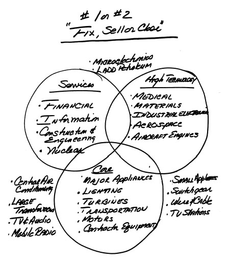
在头两年里，“第一或第二”战略产生了大量行动——大部分是小规模的。我们出售了71项业务和产品线，获得了略超过5亿美元的收入。我们完成了118笔其他交易，包括收购、合资和少数股权投资，花费超过10亿美元。这些都是小数目，但这种变动的文化意义在整个公司都能感受到，尤其是我们中央空调业务的出售。
这个业务有三家工厂和2300名员工，不是通用电气较大的业务之一，也不是很赚钱。1982年中期以1.35亿美元现金出售给特灵公司(Trane Co.)引起了关注，因为空调业务正处于我们公司的核心地带。它是我们路易斯维尔大型家电业务的一个部门。然而，它10%的市场份额与其他通用电气家电业务相比相形见绌。
我第一次作为部门主管接触这个业务时就不喜欢它。我觉得它无法掌控自己的命运。你把通用电气品牌的产品卖给像”王牌水暖”这样的本地经销商。他们用锤子和螺丝刀安装好就开车走了，留下通用电气品牌的空调。王牌如何安装我们的产品、如何服务客户，直接反映到通用电气身上。我们经常收到与我们无关的客户投诉。我们被自己无法控制的事情连累了。
由于我们的市场份额低，我们的竞争对手拥有最好的经销商和独立承包商。对通用电气来说，这是一个有缺陷的业务。但从我们出售时得到的反应来看，你根本不会知道这一点。它真的震动了路易斯维尔。
将空调业务出售给特灵强化了我的想法：把一个弱势业务放入一个更强的企业，对每个人来说都是真正的双赢。特灵是市场领导者。通过这次出售，我们的空调员工成为了一个获胜团队的一部分。出售一个月后，一个电话证实了我的想法。我打电话给我们前业务的总经理斯坦·戈尔斯基，他随着剥离加入了特灵。
“斯坦，进展如何？”我问。
“杰克，我喜欢这里，”他说。“当我早上起床来上班时，我的老板整天都在想着空调。他热爱空调。他觉得空调太棒了。每次我和你通电话，不是关于某个客户投诉就是关于我的利润率。你讨厌空调。杰克，今天我们都是赢家，我们都能感受到。在路易斯维尔，我是个孤儿。”
“斯坦，你让我太高兴了，”我说完便挂了电话。
在接下来的批评浪潮中，斯坦的话帮助我坚定了执行”第一或第二”战略的决心，无论发生什么。空调业务的交易还确立了另一个基本原则。我们用出售所得的1.35亿美元来帮助重组其他业务。
我们出售的每一项业务都采用同样的方式处理。我们从不把这些收益计入净利润。相反，我们用它们来提升公司的竞争力。在20年里，我们从不允许自己或任何业务部门以一次性重组费用为借口来解释未能完成盈利承诺。我们自己承担费用。
从我写信给雷格说明自己胜任CEO职位的那天起，我就把”持续盈利增长”作为自己的主题。幸运的是，我们有许多强大且多元化的业务可以兑现这一承诺。我们管理的是业务——而不是盈利数字。
当我们出售像空调这样的业务并获得会计收益和现金时，这给了我们灵活性去再投资或修复另一项业务。这正是股东对我们的期望，也是他们付钱让我们做的事。
我把我们对这些收益的处理比作修缮房屋。当你没钱修天花板时，你就在漏水处下面放个桶接水。当你在预算中找到钱时，你就修好漏洞。这就是我们在通用电气用大部分剥离资产所得现金做的事。我们采取行动来增强业务的长期竞争力。
偶尔会有批评者质疑我们如何实现”持续盈利增长”。有一位记者甚至暗示，如果我们在一个季度计提费用关闭一项业务，然后在下个季度计入出售另一项业务的收益，我们的盈利就不是持续的。
废话！我们的工作就是在有钱的时候修好漏洞。
如果你不这样做，你就什么都没管理。如果你跟踪现金流，在这个案例中是通用电气的现金流，你就能看到公司真正发生的事情。会计不产生现金，管理业务才能产生现金。
退出空调业务引发了一场风暴，但主要局限在路易斯维尔。下一笔出售——犹他国际公司——对我来说是一个更困难的情况。雷格·琼斯在1977年以23亿美元收购了这家公司。当时，这是有史以来最大的收购——对雷格、对通用电气、对整个美国企业界都是如此。
犹他国际是一家利润丰厚的一流公司，其收入主要来自向日本钢铁行业销售冶金煤。它还拥有一家小型美国石油天然气公司，以及在智利大量已探明但未开发的铜矿储备。雷格收购这家公司是为了对冲1970年代的剧烈通货膨胀。
对我来说，随着通胀消退，它不符合持续收入增长的目标。它起伏不定的盈利与我让每个人都感到自己的贡献很重要的目标相冲突。
通用电气每个季度的盈利都是通过从世界各个角落一分一厘地收回现金实现的。每一天，每个人的贡献都很重要。作为部门主管和副董事长，我曾坐在会议室里，听着同事们讲述我们如何英勇奋战才完成了季度或年度目标。然后，负责犹他国际的高管会站起来，无意中以某种方式压倒所有这些贡献。
“我们煤矿发生了罢工，”他会说，“所以我们的利润预测要少5000万美元。”我们所有人都难以置信地盯着这个数字。或者他也可能来到会议上说，“煤价涨了10美元，所以我有额外的5000万美元可以贡献。”无论哪种情况，犹他国际都会让我们一分一厘的贡献显得徒劳无功。
我觉得犹他国际业务的周期性使我们持续盈利的目标变得不可能。我不喜欢自然资源行业，在那里事情往往超出你的控制，或者像石油行业那样，卡特尔(Cartel)的行为削弱了个人的创造力。
顺便说一下，我认为杜邦1981年收购康菲石油也有类似的影响。康菲石油也是作为对冲自然资源通胀——石油——而被收购的。但它的规模也大到足以让杜邦许多业务部门的个人努力变得不那么重要。我在伊利诺伊大学的一些研究生朋友加入了杜邦。我从他们和其他我在杜邦塑料业务认识的人那里听说，康菲石油盈利的波动对他们个人来说是多么令人沮丧。杜邦最终在1998年剥离了康菲石油。
自然资源业务应该属于自然资源公司。
尽管我对犹他国际有这些看法，但我还是犹豫是否要撤销雷格最大的交易，那是他仅仅四年前才完成的。我欠他一切。我不想因为立即出售它而显得不尊重他。在做出决定之前，我给雷格发了一份陈述出售理由的报告。我随后打了电话，请他考虑一下。
这些年来，我经常给雷格打电话。我从不在没有让他知道的情况下做重大决定——尽管他在我成为董事长的那天就离开了董事会。
在我们关于犹他国际的电话交谈几天后，雷格回电，在盘问了我一番后表示支持。事实上，在超过20年的时间里，他从未在公司内部或外部对我进行事后批评。
在成为CEO后不到一年，我在纽约华尔道夫塔楼私下会见了潘佐尔公司(Pennzoil)的CEO休·利德克。我提出把犹他国际卖给他。他看了一段时间，但决定不合适。他有更大的目标要追求——他最终在一场与德士古公司(Texaco)高度公开的收购战中追逐盖蒂石油(Getty Oil)。
我与其他潜在的美国买家进行了交谈，但发现兴趣不大。
幸运的是，我的副董事长约翰·伯林盖姆有一个更好的主意。约翰找到了他认为最合适的战略买家——澳大利亚必和必拓公司（BHP）。这家总部位于澳大利亚的自然资源公司似乎是完美的选择。约翰联系了必和必拓，该公司表现出了初步兴趣。然后他组建了一个团队，成员包括他自己、弗兰克·多伊尔，以及他的老朋友保罗·弗雷斯科。约翰和弗兰克在幕后制定谈判策略，而保罗则从欧洲被调回来执行这项特殊任务，负责面对面的谈判。
与必和必拓的谈判持续了几个月，由于规模和地理因素而变得复杂。犹他公司的总部在旧金山，而其资产遍布世界各地。必和必拓的总部在墨尔本。经过任何大型交易都会经历的起起落落，双方团队在1982年12月中旬达成了最终意向书。
我们欣喜若狂。这是一笔价格不菲的大型资产，而且买家并不多。这笔交易对我们来说是巨大的成功，完全符合我们的战略。这次收购对必和必拓也同样意义重大。计划是在12月的例行董事会上将这笔交易提交董事们做最终批准。
在那次会议前的周四晚上，公司所有高管和董事们聚集在纽约公园巷酒店，参加已成为年度传统的圣诞晚宴和舞会。我在前一年开始举办这些社交聚会，目的是拉近管理层和董事会的关系。这一次，因为这笔交易，派对上的每个人都很兴奋。然而，大约晚上11点，我注意到一名工作人员匆忙地把约翰·伯林盖姆从舞池里叫了出去。当平时面无表情的约翰半小时后回来时，我能看出他明显很震惊——但仍然相当冷静。
当然，比起他走到我桌前告诉我坏消息后的我，他要冷静得多。
“杰克，”他说，“交易取消了。我接到保罗的电话。他说必和必拓刚刚打电话告诉他，他们的董事会无法通过这笔交易。他们在财务上无法承受。”
我崩溃了。我真的很指望这笔交易。这次出售本将是我所规划的战略路径上的第一大步。现在，当乐队继续演奏时，我眼看着这一切在我面前化为泡影。卡罗琳和我一直待到派对结束，然后回到华尔道夫酒店的一个套房，我们和西·卡斯卡特及他的妻子科基共用这个套房。
西很快成为了董事会中我的亲密知己。那天晚上我们一直聊到凌晨3点，讨论所有可能的替代方案。由于不清楚出了什么问题的细节，我们有些摸不着头脑。那天晚上，我情绪低落到了极点，可怜的西不得不听我絮叨到深夜。
第二天早上，伯林盖姆和我向所有董事通报了这个消息。他们显然很失望，但鼓励我们努力让交易重回正轨。周五晚上回到酒店房间时，我发现床上放着一只毛绒泰迪熊，嘴里含着大拇指。西在熊身上附了一张纸条，那是他妻子当天早上出去买的。“别让这件事打倒你，”西写道，“你会找到解决办法的。”
上任才21个月，我不确定自己是否搞砸了一件大事。西的纸条正是我需要的。这是他多次帮助我的第一次。他并不孤单——从上任第一天起，我就得到了董事会令人难以置信的支持，而且事实证明，不止这一次需要这种支持。
圣诞节后，伯林盖姆-多伊尔-弗雷斯科团队重新开始推进这笔交易。他们通过提议从犹他公司剥离一些业务来解决必和必拓的财务限制问题，包括美国油气生产商拉德石油公司。这使得交易对必和必拓来说变得可以接受，该公司在1984年第二季度末之前以24亿美元现金收购了我们犹他子公司的剩余部分。又花了一年时间才获得所有必要的政府批准。六年后的1990年，我们以5.15亿美元出售了最后一块资产——拉德公司。
随着空调业务和犹他公司的剥离，我对我们的战略及其执行感觉相当不错——可能有点过于自信了。空调交易只让大型家电业务部门的人感到不安，因为空调业务隶属于那里。犹他公司甚至没有引起丝毫波澜。我们持有这家公司的时间很短，它从未真正成为通用电气的一部分。
下一步行动——出售通用电气家用电器业务——将证明是完全不同的情况。
我曾负责我们的家用电器业务近六年，认为这是一个糟糕的业务。蒸汽熨斗、烤面包机、吹风机和搅拌机都不是令人兴奋的产品。我记得一个”突破性”产品是电动削皮棒，一种让削土豆皮变得更容易的设备。
这不是我们需要的那种”热门技术”。
这些产品不适合新的通用电气，而且我们很容易受到亚洲进口产品的冲击。该行业的制造商主要是美国企业，都受困于高成本工厂。这个业务进入门槛低，零售整合正在削弱原本存在的品牌忠诚度。
我把它放在了三个圈之外。对我来说，出售这项业务是显而易见的选择。我认为我们不会失去什么，而且这将为我们的”数一数二”战略再立一个标杆。百得公司（Black & Decker）显然听说了我们对家用电器业务的看法，认为它与他们的业务相契合。该公司在电动工具领域拥有强大的消费品牌，在欧洲也有很强的地位，而我们在欧洲没有参与。其领导层希望积极拓展新的业务领域，并将目标锁定在家用电器上。
1983年11月，我接到了皮特·彼得森的电话，他是百得公司的董事和投资银行家，我曾在几个场合见过他。
“你有兴趣出售你们的家电业务吗？”彼得森问道。
“这算什么问题？”我说。
我们玩了几分钟猫捉老鼠的游戏，直到彼得森说他是代表百得公司(Black & Decker)的董事长兼首席执行官拉里·法利打来的电话。
“好吧，如果你是认真的，”我说，“有什么我能帮忙的？”
“用一到五分来衡量，一分表示你永远不会卖，二分表示只有开出大价钱才会卖，三分表示愿意以合理价格出售，你在哪个位置？”皮特问道。
“我的大型家电业务大概在一分到二分之间，”我回答说，“小型家电业务是三分。”
“那正是我们感兴趣的，”皮特说。
几天之内，11月18日，皮特、拉里和我坐在通用电气位于列克星敦大道570号的纽约办公室里。拉里问了一长串问题，我回答了大部分。然后皮特直接问我对这笔业务的要价。
“不能少于三亿美元，而且业务总经理鲍勃·赖特不包含在交易中。”
那时，我已经把鲍勃从考克斯有线电视公司的职位上请回了通用电气，让他暂时负责家用电器部门。我不想再失去他。第二天我见到鲍勃，向他通报了谈话内容，告诉他：“别担心，我很快会给你一个更好的职位。”
拉里和皮特很快就回复了，两人都同意进入下一步。在尽职调查(due diligence)进行期间，公司内部就这笔待定的出售爆发了争论。通用电气的传统派声称，公司从这些家用产品上印有我们的名字和标志中获益良多。我们迅速委托做了一项研究，结果恰恰相反。消费者对通用电气卷发器或熨斗的印象还可以，但对公司并没有什么价值。另一方面，大型家电在当时乃至今天仍然在消费者中享有很高的评价。
谈判进展顺利。我们彼此信任，都想促成这笔交易。谈判中每次出现问题，我们都能轻松解决。这不是皮特直率的风格和高度诚信对我发挥重要作用的最后一次。在我第一次接到电话后的几周内，我们就卖掉了家用电器业务。
出售家用电器业务谈判的顺利掩盖了通用电气内部正在发生的动荡。许多传统业务部门的员工都很不满。20亿美元剥离犹他国际公司没有引起任何关注，但出售这个3亿美元的低技术含量、简单加工的家用电器业务却引发了难以置信的抗议。我第一次收到了员工愤怒的来信。
如果当时有电子邮件，公司的每台服务器都会被塞满。这些信的内容大同小异：“我们怎么能是通用电气却不生产熨斗和烤面包机？”或者”你是什么样的人？如果你能做出这种事，显然你什么都干得出来！”
茶水间的议论可不怎么好听。
而且还有更多的事情要来，多得多。
在1980年代初期，你不必身处一个即将被出售的通用电气业务部门，也会怀疑杰克·韦尔奇是否知道自己在做什么或要往哪里去。动荡、焦虑和困惑无处不在。原因是”数一数二”的目标、三个圈的战略、业务的直接出售，以及现在通用电气许多部门正在进行的裁员。
五年之内，每四个人中就有一个离开通用电气的工资单，总共11.8万人，其中包括被出售业务中的3.7万名员工。整个公司上下，人们都在努力应对这种不确定性。
我在火上浇油，投入数百万美元用于一些人可能称之为”非生产性”的事情。我在总部建造健身中心、宾馆和会议中心，并计划对我们的管理发展中心克罗顿维尔进行重大升级。我的看法是，所有这些投资，花费近7500万美元，与我在皮埃尔酒店阐述的卓越”软”价值观是一致的。
但人们不买账。对他们来说，这完全是自相矛盾的。
我投资在跑步机、会议厅和卧室上的钱，对于同期在新工厂和设备上花费120亿美元的公司来说只是零花钱，这一点并不重要。那120亿美元分散在世界各地的工厂里，是看不见的，被认为是常规支出。
7500万美元的象征意义让人们难以接受。我能理解为什么许多通用电气员工难以理解这一点。
但我内心确信这是正确的做法。
这一时期的一个关键支持者——在裁员的同时进行投资——是人力资源主管特德·莱维诺。他是中流砥柱，是与过去的纽带，是一位从基层一步步升上来的通用电气老员工，在整个系统中备受尊敬。他的动机和诚信无可置疑。我知道许多受到震动的高管在与我早期接触后，都坐在特德的沙发上倾诉。特德为许多不得不离开的高层人员提供了咨询。他在选拔过程中支持我，更重要的是，他知道自己得到的是什么样的人，并相信通用电气需要这样的人。
特德的支持很重要，因为人们对这些投资简直要疯了。无论我说什么或做什么，都无法完全让批评者满意或彻底平息组织的不安。我不打算躲起来。我利用每一个机会去接触员工。1982年初，我开始每隔一周与大约25名员工举行一次圆桌讨论，边喝咖啡边交流。无论房间里是行政助理还是经理，问题都千篇一律。
有一个问题总是主导这些会议：“当你关闭工厂、裁减员工的时候，你怎么能为在跑步机、卧室和会议中心上花钱找理由？”
我很享受这些辩论。虽然我不一定能赢得争论，但我知道必须努力逐个说服大家。我会论证，这些支出和削减与我们的发展方向是一致的。
我想改变游戏规则，要求用更少的人做更多的事。我坚持认为我们必须只留下最优秀的人才。我会争辩说，不能让我们最优秀的员工花四周时间，住在破旧培训中心的水泥砖房间里接受培训。来总部的客人也不应该住在三流汽车旅馆。如果你追求卓越，至少环境要能体现卓越。
在这些圆桌会议上，我会解释健身中心的意义不仅在于健康，更在于让人们聚在一起。总部大楼里满是专业人员，他们既不生产也不销售。在那里工作与在一线完全不同——在一线，每个人都能专注于并为拿下新订单或推出新产品而兴奋。在GE总部，你把车停在地下车库，乘电梯到你的楼层，然后基本上在大楼的某个角落工作到下班。食堂是常见的聚会场所，但大多数桌子都被同一部门的人占据。
我认为健身房可以提供一个非正式的场所，让各种体型、各个层级、各种职能的人聚在一起。可以说，它就像商店后面那个员工休息的房间。如果投资一百多万美元就能实现这个目标，那是值得的。尽管我对健身中心的初衷是好的，但在裁员的背景下，人们很难看到它的好处。
同样的逻辑也适用于在总部建造一座价值2500万美元的宾馆和会议中心的决定。总部本身就像一座孤岛，位于乡村地区，在纽约市以北约六十英里处，靠近梅里特公园大道。下班后没有自然的聚会场所。费尔菲尔德及周边地区缺乏像样的酒店来接待来自世界各地的员工和客人。我想创建一个一流的场所，让人们可以住宿、工作和交流。这个设施在休息室配有壁炉，酒吧里有站立式吧台，方便大家交流。
传统派人士感到震惊。但我坚持下来了，因为我想创造一流的非正式家庭氛围，需要这样的环境来实现。无论走到哪里，我都在宣扬做任何事都要追求卓越。我的行动必须体现这一点。
克罗顿维尔(Crotonville)的故事也是如此。我们的企业教育中心已有四分之一个世纪的历史——不幸的是，看起来也确实如此。经理们被安排在简陋的宿舍里，四人一套。卧室给人的感觉就像路边汽车旅馆。我们需要让来克罗顿维尔的员工和客户感受到，他们在为一家世界级公司工作或与之合作。尽管如此，一些批评者开始称它为”杰克的大教堂”。
我在1980年代初期对这些抱怨的回答是，商业实际上是一系列悖论(paradox)：
在不生产任何东西的建筑上花费数百万美元，同时关闭生产商品的低效工厂。
这些目标与成为世界级竞争者是一致的。你不可能既招聘和留住最优秀的人才，又成为商品和服务的最低成本提供者，除非两者兼顾。
支付最高的工资，同时保持最低的工资成本。
我们必须招到世界上最优秀的人才，并给予相应的报酬。但我们不能养着不需要的人。我们需要更优秀的人才，才能用更少的人创造更高的生产力。
着眼长期管理，同时”消化”短期。
我一直认为任何傻瓜都能做到其中之一。以牺牲未来为代价压缩成本，可以交出一个季度、一年、甚至两年的业绩，这并不难。只憧憬未来而不在短期内交付成果，是最容易的事。对领导者的考验在于平衡两者。至少在头十年里，我最常听到的反驳是：“GE和你太注重短期了。”这不过是另一个不作为的陈词滥调借口。
必须先”硬”才能”软”。
对人员和工厂做出强硬决策，是赢得谈论”卓越”或”学习型组织”等软性价值观资格的前提。如果没有展示出强硬的一面，软性的东西是行不通的。它只在绩效导向的文化中才有效。
想想我试图传达的那些二元对立、那些悖论。我们需要用更少的投入产出更多。我们需要扩展一些业务，同时收缩或出售其他业务。我们需要作为一家公司运作，但我们的多元化要求不同的风格。是的，如果我们想吸引和留住最优秀的人才，就需要以一流的方式对待他们。
在充满不确定性的环境中，这些悖论背后的逻辑并没有走多远。事实上，内部动荡如此之大，开始蔓延到公司外部。到1982年中期，《新闻周刊》杂志率先使用了”中子杰克”这个绰号——那个把人赶走却留下建筑的家伙。
我讨厌这个绰号，它让我很受伤。但我更讨厌官僚主义和浪费。痴迷于数据的总部和涡轮机业务的低利润率同样让我无法容忍。
很快，“中子”这个词开始出现在几乎所有媒体上。记者们似乎写GE的报道时不用这个标签就不行。这对我来说是一个痛苦的新形象转变。多年来，人们认为我太疯狂、太注重增长、雇了太多人、建了太多设施——在塑料、医疗和GE信贷业务上。现在我成了”中子”。
我想这也是一个悖论。我不喜欢它，但我逐渐理解了它。
事实上，我们是主流市场中第一家采取行动提升竞争力的大型健康盈利企业。克莱斯勒几年前也这样做过，但他们的行动是在政府救助和广为人知的破产危机背景下进行的。
我们没有这样的背景铺垫。我们看起来太好、太强、太赚钱，不像是需要重组的样子。1980年，我们的净利润达15亿美元，销售额250亿美元，使通用电气成为财富500强中第九大盈利公司和第十大企业。
然而，我们面临着自己的现实。1980年，美国经济陷入衰退。通货膨胀肆虐。石油价格每桶30美元，有人预测如果能买到的话，价格会涨到100美元。而日本人凭借疲软的日元和良好的技术，正在增加对我们许多主流业务的出口，从汽车到消费电子产品。
我想通过提高成本竞争力来应对这些现实，这正是我们在做的事情。
我还亲眼目睹了这种变化的环境对纽约/新泽西/康涅狄格三州地区许多CEO的影响。1980年代初，我担任联合劝募活动的企业主席。一次又一次，当我拜访CEO们争取捐款时，我听到他们说：“我们想给你，但我们做不到”，或者”我们不能像过去那样捐那么多了。情况太艰难了。“这段经历强化了我的观念：只有健康、成长、充满活力的公司才能履行对员工和社区的责任。
事后修复一家陷入困境的公司，代价是巨大的——而且更加痛苦。我们很幸运。我们的前任给我们留下了良好的资产负债表。我们可以对不得不离开的员工表现得人道和慷慨——尽管当时大多数人可能并不这么认为。我们给员工充分的提前通知和丰厚的遣散费，我们的良好声誉帮助许多人找到了新工作。由于行动早，他们有更多的工作机会。这在2001年仍然适用。如果你是第一家裁员的互联网公司，你的每个员工都会收到很多工作邀请。如果你是最后一家，你的员工可能就要排队领失业救济了。
但当一家像我们这样”健康”的老牌公司在1982年关闭加利福尼亚州安大略的蒸汽熨斗工厂时，有些人并不这么想。我们得知《60分钟》节目派迈克·华莱士和摄制组来报道此事。《60分钟》打电话来谈论工厂关闭，不太可能是件愉快的事，结果确实不太好看。华莱士报道说，我们解雇了825人，仅仅因为我们利润不够高，想把这些工作转移到美国以外的墨西哥、新加坡和巴西。他采访了前员工，他们说感到被背叛了，还采访了一位宗教领袖，谴责工厂关闭是”不道德的”。
这种观点在当时是可以理解的——但事实有些不同。这家工厂生产金属熨斗，而消费者早已压倒性地偏爱塑料型号。我们有四家工厂生产塑料熨斗，包括北卡罗来纳州的一家。安大略的产品线必须停产。关闭工厂让每个人都不舒服，但它是我们系统中成本最高的工厂，而我们必须保持竞争力。
公平地说，《60分钟》节目确实指出，我们提前六个月通知了员工，而当时的平均通知期只有一周。华莱士还报道说，我们帮助资助了一个设在通用电气场地上的州立就业中心，教授面试技巧和其他技能。
我们做了更多，因为我们的资产负债表允许我们这样做。我们将人寿和医疗保险延长了一年，在工厂关闭时为120名工人安排了其他工作。近600名员工将有资格领取通用电气养老金，我们还为工厂找到了买家，最终会重新雇用许多前通用电气员工。尽管如此，失去工作仍然很糟糕。
1982年2月底，我担任CEO还不到一年，《60分钟》就指责我们”把利润置于员工之上”。一些批评者把我们与IBM等公司进行对比，当时IBM仍在推广终身雇佣的概念。事实上，IBM在1985年发起了一场广告宣传活动，宣传其不裁员政策。IBM的广告语是：“……工作可能来来去去。但人不应该。”几位通用电气的经理把这些广告带到我们的克罗顿维尔培训课上，尖锐地问道：“你对此有什么反应？”
在我经常被”中子弹”的标签攻击的时候，那些广告真的让我很恼火。
令IBM员工遗憾的是，当公司失去竞争力时，他们的那一天也来了。
任何认为自己能保证工作安全的组织都在走向死胡同。只有满意的客户才能给员工工作保障。公司做不到。这一现实终结了企业曾经与员工之间的隐性契约(implicit contracts)。那些”契约”建立在感知的终身雇佣基础上，产生了一种家长式的、封建的、模糊的忠诚。如果你投入时间努力工作，人们的认知是公司会照顾你一辈子。
随着游戏规则的改变，人们必须专注于竞争激烈的世界，在那里，除非在市场上获胜，否则没有任何企业是就业的安全港。
心理契约(psychological contract)必须改变。我想创建一份新契约，让通用电气的工作成为世界上最好的工作，面向那些愿意竞争的人。如果他们签约加入，我们会给他们最好的培训和发展，以及一个提供大量个人和职业成长机会的环境。我们会尽一切努力给他们技能，让他们拥有”终身就业能力”(lifetime employability)，即使我们不能保证他们”终身就业”(lifetime employment)。
裁员永远是领导者面临的最艰难决定。任何”乐于做这件事”的人不应该留在公司，任何”做不了这件事”的人也不应该留下。我从未低估过裁员带来的人力成本，以及它可能给员工和社区造成的困难。对我来说，每一个行动都必须通过一个简单的检验：“我们愿意被这样对待吗？我们公平公正吗？你能每天照镜子时对这些问题说’是’吗？”
作为一家公司，在缓和激进变革的尖锐边缘方面，我们可以问心无愧。我不得不讲了一千遍的话是：“我们没有解雇人，我们裁撤的是岗位，而人不得不离开。”
我们从未采用”一刀切”的裁员或工资冻结——这两种老式管理手段常被用来削减成本。这些做法打着”共担痛苦”的幌子，实际上是人们不愿面对现实和差异化管理的表现。
这不是管理，也不是领导。强制推行统一10%裁员政策或工资冻结的命令，会损害对最优秀员工的关怀。2001年春天，几个受经济影响的GE业务部门，如塑料、照明和家电，正在缩减规模。与此同时，一些业务部门，如电力涡轮机和医疗，却在拼命招人。
不幸的是，在1980年代，GE的大部分员工数量都在下降。我们从1980年底的41.1万名员工减少到1985年底的29.9万人。在离开GE的11.2万人中，约3.7万人是在我们出售的业务中，但有8.1万人——我们工业业务中每5人就有1人——因生产效率原因失去了工作。
从数字来看，你可以得出结论：要么存在一个”中子杰克”，要么是一家岗位过多的公司。我自然倾向于后者的解释，但”中子”这个标签仍然让我沮丧。幸运的是，我找到了非凡的支持帮我度过难关——在家里、在办公室、在董事会。我回到家时显然有些沮丧。无论媒体多么苛刻，卡罗琳总是支持我。她总是以这句话结束谈话：“杰克，你必须做你认为对每个人都正确的事。”
在1980年代，如果没有公司内部一批坚定支持者的核心力量，GE的大规模变革是不可能实现的。曾经的竞争对手、如今的合作伙伴——我的两位副董事长约翰·伯林盖姆和埃德·胡德支持所有举措。总部两位最有影响力的职能部门负责人也是如此：人力资源主管特德·莱维诺和首席财务官汤姆·索森。汤姆和我在皮茨菲尔德时亲如兄弟，很高兴能在总部更大的岗位上重聚。拉里·博西迪是我1981年带到费尔菲尔德接管新成立的材料和服务部门的，他成了我的顾问、知己和挚友。
没有董事会的大力支持，这些变革不可能发生。董事会成员听到了所有的抱怨，有时来自愤怒的员工直接写给他们的批评信，他们也读到了所有的负面报道。然而，从第一天起，董事会从未动摇。
当我刚成为CEO时，沃尔特·里斯顿在纽约到处告诉他遇到的每个人，说我是公司历史上最好的CEO——甚至在我做任何事之前。听到这些感觉真好，尤其是在我的”中子”时期。他是一个正直、有胆识的人，不断告诉我要做我必须做的事来改变公司。
尽管如此，避免这些艰难决定的压力相当大。游说不仅来自内部——市长、州长、州和联邦议员都打来电话。
有一次，1988年我按计划访问马萨诸塞州议会大厦，与州长迈克尔·杜卡基斯会面。
“你在这个州真是太好了，”杜卡基斯说，“我们真的希望看到你在这里投入更多工作。”
在我会面的前一天，我们在马萨诸塞州林恩的飞机发动机和工业涡轮机工厂再次”脱颖而出”——成为整个链条中唯一拒绝我们新全国劳动协议的GE工会。
“州长，”我说，“我必须告诉你。林恩是我最不可能再投入任何工作的地方。”
杜卡基斯的助手们震惊了。房间里一片长久的沉默。每个人都期待我会说一些关于我们对就业承诺和可能在马萨诸塞州扩张的安慰性话语。
“你是政治家，你知道如何计算选票。你不会在不投票给你的选区修建新道路。”
“你什么意思？”他问。
“林恩是整个GE中唯一拒绝我们全国工会合同的地方分会。多年来他们似乎把这当成了一种仪式。当我可以在人们需要和值得拥有工厂的地方建厂时，为什么要把工作和资金投入到有麻烦的地方？”
杜卡基斯州长笑了。他立刻明白了这一点，并派他的劳工代表去林恩改善情况。进展可以说非常缓慢，但林恩确实在2000年投票支持了全国合同。
1984年8月初，当《财富》杂志把我列在”美国十大最强硬老板”榜首时，我又遭受了一次沉重打击。这是一个你不想成为第一或第二的情况。幸运的是，文章也说了一些好话。一位前员工告诉杂志，他从未见过”一个有这么多创意商业想法的人。我从未感觉有人如此充分地挖掘我的大脑。“另一位甚至称赞我”为GE带来了硅谷最好的初创公司所特有的激情和奉献精神。”
我喜欢所有这些，但正面反应被一些”匿名”前员工的评论所掩盖，他们说我非常粗暴，不能容忍”我认为”这样的回答。“为他工作就像打仗，”另一位未透露姓名的人声称。“很多人中弹倒下；幸存者继续投入下一场战斗。”文章声称我几乎是用问题对人进行肉体攻击，用作者的话说，“批评、贬低、嘲笑、羞辱。”
事实上，这些会议确实与人们习惯的不同。它们坦率、具有挑战性、要求严格。如果前任经理们想找个理由解释为什么他们没能胜任，有很多方式可以编造故事。
我收到这篇文章时正要离开办公室去加州，作为董事埃德·利特菲尔德的客人在波西米亚树林度过一个周末。我和埃德分享了这个故事，他不以为然地耸了耸肩。
我无法把它从脑海中抹去。这篇报道让那个周末变得漫长。所有这些宣传的最终结果是，“中子杰克”和”美国最严厉的老板”这些标签会持续相当长一段时间。
讽刺的是，我做得还不够彻底，行动也不够快。当1980年代中期哈佛商学院的MBA学生问我在担任CEO的最初几年最后悔什么时，我说：“我行动太慢了。”
全班哄堂大笑，但这是事实。
事实是我太犹豫，不敢打破常规。我等了太久才关闭缺乏竞争力的设施。我花了太长时间才拆解公司总部的员工队伍，保留经济学家、营销顾问、战略规划师和彻头彻尾的官僚主义者的时间远超必要。直到1986年我才炸掉我们的事业部结构。那只是又一层隔离性的管理层，本应在继任竞争尘埃落定的那一刻就被砍掉。
这些事业部职位上的七位高管是我们最优秀的人才。他们本应去经营我们的业务。我把他们浪费在这些监督职位上。我们把最优秀的高管提拔到这些职位，而这些职位反过来让我们一些最优秀的人看起来很糟糕。一旦我们炸掉这个结构，我们很快发现了另一件事。没有了事业部这一层，我们能更清楚地看到真正在经营业务的人。
这改变了游戏规则。几个月内，我们就能清楚地看到谁有能力，谁没有。1986年中期，四位高级副总裁离开了公司。这是一个巨大的突破。
当媒体聚焦于裁员时，我们聚焦于”留下的人”。我可以说到脸发青，谈论面对现实，或者在每项业务中做到第一或第二，或者创建一个在变革中蓬勃发展的组织，但在我们把合适的人放到合适的位置之前，我们没有获得真正改变公司所需的牵引力(traction)。我不应该在那些抵制者身上浪费那么多时间，指望他们会”认同”。
当我们最终在所有关键位置上安排了合适的人选时，游戏很快就改变了。让我来说明把合适的人放在最高位置能产生什么效果。我想不出比1984年3月任命丹尼斯·达默曼为首席财务官更好的例子了。
如果你当时问成千上万的员工，让他们列出五个可能接替汤姆·索森担任CFO的人选，没有人会提到丹尼斯，因为他在财务层级中的位置太低了。
汤姆和我的关系一直很复杂。我喜欢他的聪明、他的自信和他的陪伴。尽管他外表张扬，并且非常支持我们的发展方向，但他把自己视为公司最强大职能组织的保护者。
讽刺的是，他也是公司里最尖锐的批评者，对一切和每个人都很严厉果断，包括我。然而，当涉及到财务时，他无法让自己踏入这个职能的神圣领地。我们就此进行了多次对话，但始终无法达成一致。汤姆后来成为旅行者保险公司的CFO。
财务部门有12000人之多，已经变得太庞大，太根深蒂固地成为官僚体系的一部分。大多数”了解一下也好”的研究都源自财务职能部门，当时仅运营分析一项每年就花费6500万到7500万美元。
财务已经成为一个独立的机构。它拥有公司最好的培训项目。他们最聪明的毕业生进入审计部门，在那里他们在不同业务之间轮岗数年。结果是，我们有了一个强大、能干但墨守成规的财务机构，它严格控制着整个公司，但既不想改变公司，也不想改变自己。
通过任命丹尼斯担任这个职位，我希望他领导自己的革命。当我请他担任首席财务官时，他是通用电气资本房地产部门的总经理。他从未向董事会做过汇报。他只有38岁，这使他成为公司历史上最年轻的CFO。
丹尼斯在我担任事业部主管时为我工作了两年。在那段时间里，他展现了令人难以置信的聪明、勇气和多才多艺。他可以在某一天把家电业务的最小细节分析得清清楚楚，第二天又能分析通用电气资本最复杂的交易。在Session C人才评估中，他能立即分辨出A级和B级人才的区别。
同样重要的是，他没有携带那些更典型候选人名单上的人会有的任何官僚包袱。我给了他终极的挑战性任务(stretch assignment)。虽然丹尼斯不确定自己是否有资格胜任这份工作，但我知道他能做到，我完全致力于帮助他。
丹尼斯和财务组织一样对他的任命感到震惊。1984年3月的一天早上7点15分，他正坐在通用电气资本的办公室里，我打电话给他，请他下午6点在盖茨餐厅见我，就是我曾在鸡尾酒餐巾纸上画出三圈战略的那家餐厅。
我告诉丹尼斯，我们的会面要对所有人保密。我不知道在会面前的那十个小时里他脑子里在想什么。我确信他认为这对他来说会是件好事。但他万万没想到的是，我会请他担任财务最高职位。
当我到达盖茨酒吧时，丹尼斯已经坐在吧台前了。我坐在他旁边，给自己点了杯酒，然后直奔主题。
“丹尼斯，”我说，“我想这周向董事会提议任命你为高级副总裁兼首席财务官。你愿意吗？”
他完全惊呆了，勉强说出：“好的……没问题。”
从惊喜中回过神来后，丹尼斯开始问了几十个关于这份工作的问题，问得太多了，以至于我最后打电话回家，邀请卡罗琳过来加入我们。我们一起庆祝丹尼斯的好消息。
当他的任命公开后，冲击波传遍了整个公司，真正震动了财务部门。这正是我想要的。丹尼斯的任命制造了我们需要的危机。我给丹尼斯写了一封三页纸的信，批评他的新部门，进一步加剧了这种紧张局势。丹尼斯把这封信分享给了他的团队。
在1984年5月的信中，我写道：“首先我想说明的是，我并不’讨厌’这个部门。我认为它的优势……使它成为公司最好的单一职能组织。它一直是’凝聚公司的粘合剂’。但那是过去。以前有效的东西——控制——对明天来说是不够的……
“过去做的一切都可以质疑——是质疑，不是批评——从财务管理项目、它的投入、规模，到它为总部和现场组织提供的培训，以及组织的规模和角色。”
变革不是来自口号或演讲。它的发生是因为你把合适的人放在合适的位置上去推动它。人才第一，战略和其他一切都在其后。丹尼斯在很多方面都是我们需要的完美的内部”局外人”，来打破财务部门对公司的官僚控制。
随着时间推移，丹尼斯彻底改变了财务部门的面貌。上任两年后，他仍在与财务官僚作斗争。总部喜欢数据，花了好几年才让财务人员停止过度分析数据。1986年，一份关于国际销售的详细分析报告送到了我的办公桌上，预测了通用电气未来五年在每个国家的总收入，其中竟然包括毛里求斯——非洲海岸外的那个小岛。
我气疯了。报告底部的名字是戴夫·科特，一位财务分析师，在总部工作，比丹尼斯低两级。我让助理打电话给科特，让他到我办公室来。
“戴夫，”我说，“你看起来是个聪明人。你为什么要麻烦现场的人来获取这些东西？销售额？五年后？在毛里求斯？我怀疑你甚至不知道它在哪里！”
戴夫不知道该说什么。我当时不知道的是，他两个月前就试图停止这份报告了。那天我们彻底取消了那份报告。戴夫获得了关注，并在公司内获得了一系列晋升，最后成为家电业务的CEO。他于1998年离开，现在是克利夫兰TRW公司的CEO。
丹尼斯·达默曼在这样的事件以及上百件类似的事情中坚持了下来。在他上任的头四年里，他把财务人员削减了一半。他主导整合了我们仅在美国就有的150个不同的薪资系统。他改变了财务管理项目，该项目过去90%是财务内容，10%是综合管理内容，现在近一半的内容是关于管理和领导力的。他还改变了我们的审计人员，使他们成为业务支持者，而不是公司警察。
改变审计人员的角色对我们来说是一个巨大的胜利——非常重要。让审计人员进入这种业务伙伴角色，摆脱那种戴着绿色遮阳帽的”抓你把柄”角色，不仅改变了他们的工作内容，最终也改变了他们会成为什么样的人。我们的三项关键举措——服务、六西格玛(Six Sigma)和电子商务——如果没有这群年轻明星的热情领导和支持，就不会有今天的成就。他们不懈地将最佳实践从一个通用电气业务部门转移到全球的另一个业务部门。
如今，通用电气所有业务部门的首席财务官都把自己的工作视为首席运营官——而不是财务总监。在丹尼斯担任首席财务官的14年里，直到1998年成为通用电气副董事长，他把一个以审计为导向的财务组织转变成了最好的商业领导力学校。他以前的三位审计部门负责人已经成为通用电气的巨星：约翰·赖斯在电力部门，戴夫·卡尔霍恩在飞机发动机部门，现在是我们两个最大单一业务的CEO。杰伊·爱尔兰成为NBC电视台集团的CEO。夏琳·贝格利，一位36岁、三个孩子的母亲，曾管理通用电气180人的审计团队，然后在2001年中成为通用电气特种材料业务的首席财务官。接替夏琳的是37岁的林恩·卡尔佩特。她曾是NBC电视台集团的首席财务官。
在法律领域也有类似的成功故事。我们的法律组织处于名片夹的错误一端。如果出现问题，我们的律师基本上只知道该打电话给谁。外部律师会接手案件，而我们的法律团队只是作为后援。与财务部门不同，没有内部候选人能够实现我们需要的转型。我与各种外部律师交谈，以帮助我寻找最优秀的人才。
正如丹尼斯作为首席财务官是一个出人意料的人选一样，我的新总法律顾问本·海涅曼也是如此。他是华盛顿特区的一名宪法律师，专门从事最高法院上诉诉讼。本曾是罗德学者(Rhodes scholar)、《芝加哥太阳时报》记者、《耶鲁法律杂志》编辑、最高法院法官助理，以及华盛顿的公益律师。他在为波特·斯图尔特大法官担任助理后的第一份工作是为智障人士辩护。他曾在政府部门担任卫生、教育和福利部副部长，1987年我认识他时，他是盛德律师事务所(Sidley and Austin)华盛顿办公室的管理合伙人。
对一些人来说，本似乎是领导我们法务团队的奇怪选择。我不这么认为——但连他自己也有些疑虑。在我们最后一次面试前，他说：“记住，我是宪法律师。我不是公司律师。我不是纽约律师。”
“我不在乎，”我立刻回答。“你会雇到好律师的。这就是我希望你做的。”
本没有像丹尼斯在财务部门继承的那样现成的人才储备。他必须从外部招聘，他做到了。我给了他全权，让他支付与顶级律所同等的薪酬，然后还加入了期权作为额外激励。他成功地从那些律所挖走了一些最聪明的合伙人。
这是典型的A级人才招聘A级人才的案例。
本对简历”极度痴迷”。他谈论人时总是逐行描述他们的资历，从学校、在《法律评论》的职位，到他们曾为哪位联邦法官担任助理。我们都拿这个开他玩笑。
我承认在这种情况下简历确实重要，而本找到了明星人才。他引进了约翰·塞缪尔斯，杜威百龄达律所(Dewey Ballantine)的前合伙人，负责我们的税务部门；布拉克特·丹尼斯顿，马萨诸塞州州长比尔·韦尔德的前首席法律顾问，负责诉讼业务；帕梅拉·戴利，费城摩根路易斯律所(Morgan, Lewis & Bockins)的合伙人，负责并购业务；史蒂夫·拉姆齐，司法部(DOJ)环境诉讼部门的前负责人，负责环境健康与安全；以及罗恩·斯特恩，安诺波特律所(Arnold & Porter)的反垄断合伙人，负责我们设在华盛顿的反垄断业务。（2001年，罗恩大部分时间都在布鲁塞尔，经历了一段谁都不想经历的时光。）
本在几乎每个GE业务部门的总法律顾问职位上都配置了同等水平的人才。
我们得到的不仅仅是出色的法律建议。
本的三位同事离开了法律领域，在GE运营中发挥了重要作用：亨利·哈布施曼，飞机发动机部门的前总法律顾问，现在是GE资本航空服务公司的CEO。弗兰克·布莱克，电力系统部门的总法律顾问，成为了公司业务发展负责人。杰伊·拉平，家电部门的前总法律顾问，后来成为GE日本公司的总裁。
本彻底改变了这个地方。今天，我相信GE拥有世界上最好的法务团队（几乎所有人都认为这是最好的企业法务团队）。我们的律师设计工作方案并制定策略，优势在于他们对我们公司及其员工有深入的了解。外部律所与我们的合作更加紧密。他们是我们团队的合作伙伴。
讽刺的是，我不应该在那么多不合适的人身上纠结那么久。多年来我学到的一贯教训是，在很多情况下我太过谨慎了。我应该更早地打破旧结构，更快地出售弱势业务。几乎所有事情都应该而且可以做得更快。
这位所谓的”美国最严厉的老板”实际上还不够果断。
我永远不会忘记那次参观日本制造工厂的经历。那是在1970年代中期，在与横河医疗系统(Yokogawa Medical Systems)建立合资企业之后。在参观东京郊外的一家横河工厂时，我完全惊讶地看着超声波设备的组装过程。
这个流程与我在美国见过的完全不同。当机器完成后，一名工人解开衬衫扣子，在胸口涂上一些凝胶，用超声波探头在身上扫描进行快速质量测试。然后同一个人包装产品，放入箱子，贴上运输标签，送到装货码头。
在密尔沃基——GE最好的工厂之一——完成这些工作需要更多的人。
日本人令人难以置信的效率既令人敬畏又令人恐惧。我在日本看到的情况正在我们的许多市场中发生。日本人正在一个又一个行业中颠覆成本结构。电视机、汽车和复印机都受到了冲击。
我在寻找一个可以让我们躲避竞争的业务。在1980年代初，有三个业务似乎符合条件：食品、制药和电视广播。每个人都需要吃饭，而美国在世界上拥有强大的农业地位。我们评估了几家食品公司，包括通用食品(General Foods)，但数字算不过来。当时它们的市盈率(price-earnings ratios)比GE高得多。至于制药，数字差距更大。
政府对外资所有权的限制使电视行业具有吸引力。与食品行业一样，它拥有强劲的现金流，可以加强和扩展我们的业务。
日本的威胁促成了一笔真正改变GE的交易——1985年以63亿美元收购RCA。当时，这是历史上最大的非石油交易。我们收购RCA主要是为了获得NBC。随之而来的一切将彻底改变我们。
广播网络业务一直让我着迷。
在收购RCA之前，我们差点拿下CBS。1985年春天，特德·特纳正试图对这家电视网发起敌意收购。CBS董事长汤姆·怀曼和我在费尔菲尔德总部共进晚餐，讨论我们充当白衣骑士（white knight）的可能性。但怀曼成功化解了特德的威胁，我们也就没有派上用场。CBS的交易就此落空。但我与怀曼的”秘密”会面并没有逃过外界的注意。
华尔街没有秘密。作为拉扎德投资银行（Lazard Freres）的合伙人，费利克斯·罗哈廷在那些年促成了许多大型交易。虽然我没有和他合作过收购案，但我非常欣赏费利克斯。他听说了我对CBS的兴趣，也知道我之前试图收购考克斯广播公司的事。与此同时，费利克斯和RCA董事长桑顿·“布拉德”·布拉德肖是朋友，两人一直在讨论RCA的战略选择。
布拉德在1981年中期被请来整顿RCA，此前他曾成功担任ARCO公司总裁。他为人低调、谦逊，而且极具智慧。我对他的第一印象非常好。布拉德干得很出色，尤其是在NBC方面，他成功邀请电视制作人格兰特·廷克来执掌这家电视网。
从一开始，布拉德就没打算长期留任。讽刺的是，他找到的接班人鲍勃·弗雷德里克，正是当年与雷吉竞争GE掌门人职位的高管之一。鲍勃三年前加入RCA，担任首席运营官兼总裁，1985年升任CEO。布拉德继续担任董事长，但他对RCA能否独立生存下去越来越没有把握。
突然有一天，费利克斯打电话问我是否愿意和布拉德见面。几天后，1985年11月6日，我们在费利克斯位于纽约的公寓里小聚。布拉德穿着燕尾服出席，因为他随后要赶去参加一个正式晚宴。很快我们就发现，和我一样，布拉德也担心来自亚洲的竞争。他和我一样专注于成为行业第一或第二。
那晚我们没有谈具体的交易，但发现彼此很投缘。费利克斯是个出色的牵线人。布拉德和我相处融洽，对合并的战略逻辑有着共同的理解。我们的会面很短——不到一个小时。离开费利克斯的公寓时，我们并没有约定下次见面。
此时，我们只是在”约会”阶段。但我感觉真的有可能”结婚”。
第二天，我组建了一个团队，包括首席财务官丹尼斯·达默曼和业务发展负责人迈克·卡彭特，深入研究RCA。我们给这个项目取了个代号叫”岛屿”。
感恩节前一天，我们的团队聚在一起，决定是否要迈出下一步。拉里·博西迪、“岛屿”团队和我花了四个多小时，反复权衡这笔收购的利弊。对我来说，“反复权衡”（wallowing）一直是我们管理GE的关键方式。让一群人围坐在桌旁，不论职级高低，共同研究一个特别棘手的问题。从各个角度反复琢磨——让每个人的想法都充分表达出来——但不急于得出结论。
对于RCA，我们反复研究后发现，它远不止是一家广播电视网。我们有一个小型半导体业务，RCA也有。我们有航空航天部门，RCA也有。我们都在做电视机业务。合并这些业务会让每一块都变得更强大。
我们在电视台业务领域已经经营多年，与CBS的短暂接触也让我们对电视网有了足够的了解，可以比较放心地进入这个领域。我们对广播业务的估值是35亿美元。如果我们能接受为其他所有业务支付约25亿美元，那这笔交易就能大获成功。
我们主要担心的是NBC的估值。虽然1985年它的收视率很高，但有线电视已经开始蚕食其网络观众。我们对有线电视的渗透率做了一些非常激进的假设，最终仍然认为这笔交易是正确的。
我不断问大家：“十年后，你们是愿意做家电业务，还是做电视网业务？”
我们都同意利用感恩节长周末好好想一想。周一一早我们再次碰面。所有人都得出了相同的结论：数字是合理的，而且除了电视网之外，RCA的其他大部分业务都与我们高度契合。
决定推进。
我让费利克斯知道，只要价格合适，我们有兴趣。他安排了布拉德和我的另一次会面，时间是12月5日星期四，地点在布拉德位于曼哈顿中城多塞特酒店的复式公寓。
寒暄几句后，我们很快切入正题。
“我想收购你的公司，”我告诉他，“我们两家公司是完美的组合。”
他也认同这一点。
我试探性地提出每股61美元左右的价格，比当时RCA的股价高出13美元以上。他停顿了一下，用他那学者般的方式让我知道这个价格还不够。等我离开时，我们同意继续推进交易，但对最终价格保留分歧。
第二天，事情变得有些棘手。原来布拉德并没有和鲍勃·弗雷德里克讨论过我们的会面。当鲍勃得知此事后，他非常愤怒。他觉得公司在他眼皮底下被卖掉了。鲍勃和布拉德因此短暂闹翻，鲍勃试图争取RCA董事会的一些董事反对这笔交易。12月8日星期日董事会开会时，布拉德成功获得了多数董事的支持。
会后，他打电话告诉我这个好消息，但说价格仍然不合适。他聘请了费利克斯作为他的代表。我也需要一位投资银行家，于是我找了我的好朋友约翰·温伯格，他当时执掌高盛。
在接下来的几天里，布拉德、鲍勃和费利克斯在纽约一家酒店的套房里与约翰和我进行谈判。最后，像往常一样，我们开始讨价还价。布拉德出价每股67美元，我出价65美元。当我给布拉德66.50美元时，交易达成了——可能比他预期的多了50美分。
当卖方的持续参与对公司成功至关重要时，我总是尽量在谈判桌上留下一些善意。
到12月11日周三晚上，我们达成了以63亿美元现金收购RCA的交易。
这笔交易有一个奇怪的注脚。就在几个月前的8月，RCA的一位低级别律师打电话给我们的一位律师，说他想废除一项旧的GE-RCA同意令。第一次世界大战期间，美国政府要求GE、AT&T和西屋电气出于国防目的组建美国无线电公司。
1933年，司法部决定我们应该将其分拆为独立公司。我们照做了，并接管了他们位于列克星敦大道570号的总部大楼作为补偿。然而，该交易产生的同意令限制GE购买RCA普通股。司法部在10月取消了这项持续50多年的限制，为两个月后的交易扫清了道路。
真是走运！我们谁都不知道这项同意令的存在。
周三晚上完成交易后，我离开RCA律师的办公室，回到列克星敦大道的GE大楼庆祝。这正是公司1933年从RCA分拆中获得的那栋大楼。
多么美好的夜晚！
我们开了香槟。我们大笑着互相击掌。我们所有人——拉里·博西迪、迈克·卡彭特、丹尼斯·达默曼和其他人——都像孩子一样。我永远不会忘记透过窗户望向雾中洛克菲勒中心RCA大楼顶部闪亮的RCA标志时的那种兴奋。它离我们的大楼只有三个街区。我们迫不及待地想把GE的标志挂上去。那一刻我们觉得自己很了不起。
从我第一次与布拉德肖会面到最终董事会批准，只用了36天就敲定了当时最大的非石油并购案。12月12日宣布的这笔交易是GE的转折点。批评者——而且有很多——关注的是GE进入电视网络业务。他们问：“一家灯泡公司买电视网络到底想干什么？”广播业务给我们带来了魅力和充裕的现金流——以及我想要的躲避外国竞争的避风港。隐藏的价值将来自那些不太引人注目的资产。
RCA的收购给了我们一个优秀的电视网络和更多的战略筹码。它还激发了一个充满活力的新GE。我们一直在经历重组和裁员带来的大量动荡。这笔交易改变了氛围。我记得那年一月，在收购宣布几周后，我走上博卡运营经理会议开幕式的舞台。
突然间，房间里大约500人自发起立鼓掌。RCA成为新时代的启动器。
交易完成后，我们出售了RCA的非战略性资产，包括唱片、地毯和保险业务。我们不喜欢唱片业的文化。地毯业务与我们的任何业务都不匹配，小型保险公司也是如此。在交易完成后的一年内，我们收回了63亿美元中的13亿美元。
我努力想让格兰特·廷克继续担任NBC的负责人。他和布兰登·塔蒂科夫作为搭档，用许多热门节目扭转了电视网络的局面，从《考斯比秀》到《干杯》。廷克签了五年合同，将于七月到期。他每周在纽约和加州之间通勤，已经厌倦了。虽然廷克在收购前告诉布拉德他打算离开，但我还是试图说服他留下来。我们在纽约共进晚餐，我给他开出了对我来说非常丰厚的薪酬。但我无法让他改变主意。
幸运的是，我从一开始就有备选方案。鲍勃·赖特在家电业务出售后正在管理GE金融。当我试图收购考克斯广播公司时，他被我们派去那里，并在那里担任考克斯有线电视总裁三年。
鲍勃是完美的人选。他对这个行业有感觉，熟悉GE，而且在我们进入陌生领域时是亲密的盟友。1986年8月，我任命鲍勃为NBC负责人。媒体问道：“这个GE的人怎么能管理一个电视网络？”
长话短说，15年后，鲍勃仍在那里，业绩出色。
虽然我们让NBC保持独立运营，但我们立即开始整合RCA和GE互补的业务。我们通过组建联合团队来减少管理费用，这些团队每周与我会面。团队的目标是1+1=1：一个GE和一个RCA的专业人员合并后等于一个人。整合团队同意，每家公司最优秀的人将获得职位。
这不是空话。GE获得了最高管理职位，但在互补业务中，RCA赢得了大多数重要职位。我们最终成为美国第一大电视机生产商，并让一位RCA高管来管理。我们在合并后的航空航天和半导体业务中也这样做，选择了RCA的领导者。负责政府服务和卫星通信第四项业务的是来自RCA的吉恩·墨菲，他后来成为GE航空航天和飞机发动机业务的负责人，最终成为GE副董事长。吉恩有军人风范。他总是兑现承诺。我认为他是”正直先生”——这是你能给任何人的最高赞誉。
这些资产，或者说筹码，给了我们以前不可能拥有的战略选择。在接下来的十年里，每一个筹码都为GE创造了真正的价值。
不幸的是，当我在进行职业生涯中最大的交易时，我个人生活中最大的结合正在走向终结。
卡罗琳和我的婚姻多年来一直存在问题。在通用电气工作的那些年里，我是个彻头彻尾的工作狂，而她则出色地抚养了我们的四个孩子。他们都已经长大成人，发展得很好。大女儿凯瑟琳从杜克大学毕业后，正在哈佛商学院读一年级。大儿子约翰在弗吉尼亚大学获得本科学位后，正在伊利诺伊大学攻读化学工程硕士学位。另一个女儿安妮从布朗大学毕业，正在哈佛建筑学院攻读硕士学位。小儿子马克正在佛蒙特大学读大一。
卡罗琳和我发现彼此走上了不同的道路。除了友谊和相互尊重之外，我们几乎没有共同点。这很艰难也很痛苦，但1987年4月，在28年的婚姻之后，我们友好地离婚了。卡罗琳后来去读了法学院，拿到了法律学位，最终嫁给了她大学时代的恋人，对方也是一名律师。
突然间，我又恢复了单身。单身又有钱，就像身高六英尺四、头发浓密一样吃香。每个人都想给你介绍对象，你能和很多有趣又迷人的女性约会。
直到沃尔特·里斯顿和他的妻子凯西安排了一次相亲，我才真正遇到对的人。对方是简·比斯利，一位迷人的律师，在凯西兄弟所在的纽约谢尔曼·斯特林律师事务所工作。当简的老板打电话问她是否愿意和杰克·韦尔奇约会时，她以为说的是律所里的另一位律师。
“我不能和他约会，”她说，“他是同事。”
“不是他，”他说，“这个杰克·韦尔奇是通用电气的董事长，年纪比你大一些。”
“那没关系。反正我又不会嫁给他。”
当时，简正在伦敦为律所执行一项长期任务。六个月后她回来了，1987年10月，我们和里斯顿夫妇一起在纽约的意大利餐厅蒂诺餐厅共进晚餐。
有沃尔特在场，这次约会有点拘谨。我必须表现得体。但简和我晚上十点就离开了，然后去卢森堡咖啡馆一直喝到打烊。第二次约会时，我们都穿着皮夹克和牛仔裤，在史密斯与沃伦斯基餐厅吃汉堡，这才真正擦出了火花。
简聪明、风趣，比我小十七岁。她来自阿拉巴马州的一个小镇，各方面都很接地气。她母亲是教师，父亲是律师，小时候她是个假小子，和三个兄弟一起长大。大学毕业后，简在肯塔基大学读了法学院，然后来到纽约成为一名并购律师。
当简和我开始认真交往时，我们进行了一次”为什么行不通”的谈话。我告诉她，她不滑雪也不打高尔夫让我很困扰。她告诉我，我不去看歌剧让她很困扰。我们达成了协议：如果她同意学滑雪和打高尔夫，我就同意去看歌剧。我真的想要一个全职伴侣，一个愿意配合我的日程安排、陪我出差的人。简不得不放弃她的职业生涯，她先请了假来尝试这种新安排。
1989年4月，我们在南塔克特的家中结婚，我的四个孩子都在场。接下来几年，我去看歌剧，称之为”丈夫的义务”，直到后来简免除了我这项责任。
虽然我对歌剧的欣赏没有增长，但教她打高尔夫却让我提升到了一个全新的水平。
多年来我一直试图赢得俱乐部锦标赛，但从未成功过。我们一起进步。尽管简在认识我之前从未打过高尔夫，但她连续四年赢得了南塔克特桑卡蒂角俱乐部的锦标赛冠军——而我赢了两次。我们的高尔夫搭档关系是我们婚姻的支柱。
然而，这还不足以维系我们的婚姻。2001年，简和我同意离婚。在九十年代后期，我们的生活方式已经大相径庭，尽管这次分手不幸地变得非常公开，但我们知道必须各自向前走。
回到工作上，我们在RCA交易中打出的第一张牌是电视制造业务。
1987年6月，保罗·弗雷斯科和我在巴黎观看法国网球公开赛，在这个NBC转播的活动中招待客户。法国政府所有的电子公司汤姆逊的董事长阿兰·戈麦斯来到我们的贵宾室。他是个有趣又有魄力的人。
我们原本计划第二天去他的办公室见面。当我们见面时，情形和我第一次与布拉德肖会面时很相似。我们两家公司都有需要帮助的业务。汤姆逊有一个非常弱势的医学影像业务CGR，排名第四或第五，而我想要它。我们在医疗设备领域拥有美国第一的地位，从X光设备、CT扫描仪到磁共振成像设备。但我们在法国没有什么有意义的市场地位，因为政府对汤姆逊的所有权实际上把我们挡在了这个国家之外。
阿兰·戈麦斯明确表示他没有兴趣直接出售他的医疗业务。保罗和我决定看看他是否有兴趣进行交换。我们一直清楚自己投资组合中哪些业务是我们不喜欢的。我跳起来走到汤姆逊会议室的画架前，拿起一支马克笔，开始写下我们可以用来交换他们医疗业务的业务。
我第一个尝试的是我们的半导体业务。没成功。然后我提出了电视制造业务。他立刻喜欢上了这个主意。他的电视业务规模不足，而且仅限于欧洲市场。阿兰认为这笔交易是一个卸掉亏损医疗业务的机会，同时一夜之间成为世界第一大电视机生产商。
我们三个人对这笔交易都很兴奋。我们决定让保罗·弗雷斯科在一周内与阿兰的人会面，启动讨论。阿兰送我们乘电梯下楼，到他办公室外等候的车旁。当车子驶离人行道时，我抓住保罗的手臂。
“天哪，”我说，“我觉得他真的想做这笔交易。”我们俩都兴奋不已。
我相信阿兰回到楼上时也有同样的感觉。阿兰知道他的电视机业务规模太小，无法与日本人竞争。这笔交易给了他规模经济和市场地位，可以发起强有力的挑战。我们的国内消费电子业务年销售额30亿美元，员工31000人。汤姆森的医疗设备业务年收入7.5亿美元。
这次交易使我们在欧洲的市场份额增加了两倍，超过15%，让我们能够与最大的竞争对手西门子抗衡。六周内，交易完成并于7月宣布。除了资产互换，汤姆森还给了我们10亿美元现金和一个专利组合，在15年内每年带来1亿美元的税后收入。与此同时，汤姆森成为全球最大的电视机生产商。
然而，我们退出电视业务的决定让很多人难以接受。媒体评论家声称我们在向日本竞争低头。有些人攻击这笔交易不爱国。我甚至被称为逃避战斗的懦夫。
这些批评纯属媒体的无稽之谈。我们最终获得了一个更加全球化、高科技的医疗业务——还有大量现金。专利收入一年的收益就超过了我们过去十年在电视机业务上的全部利润。
短期内我们双方都经历了困难。我们在欧洲的医疗业务亏损了近十年。汤姆森的消费电子业务也是如此。我们双方都坚持下来，最终都让各自的业务取得了成功。
两年内，我们为半导体业务找到了解决方案。哈里斯公司和我们一样，有一个规模不足的芯片业务。7月，我接到哈里斯董事长杰克·哈特利的电话，他想来费尔菲尔德探讨收购这项业务的可能性。哈里斯主要是一家国防电子承包商，有一个小型半导体业务，主要支持其军事销售。哈特利认为，如果公司不扩大规模、从工业领域获得产量，就无法在半导体行业生存。
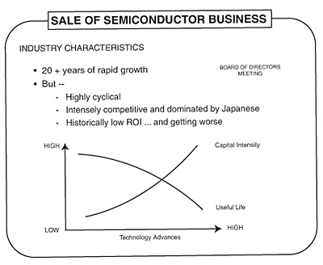
我从来不喜欢半导体。我为董事会画的图表反映了我的感受（见下页）。这个业务资本密集、周期性强，产品生命周期短，大多数参与者的回报历来很低。退出这个业务可以让我们把资本用于其他领域，比如回报更好的喷气发动机、医疗设备和电力涡轮机。
幸运的是，我们的主要全球竞争对手留在了半导体行业。这项业务消耗了他们大量资本，分散了他们大量的管理精力。
我想退出的愿望使与哈里斯的交易变得相当容易。我要求不多，只是一个体面的退出。午餐时，哈特利和我勾勒出了交易框架。我们在一张纸上写下六个主要交易要点，交给我们的财务团队。
两个月后，到1988年9月中旬，交易完成。哈里斯获得了通用电气的人员、设施和业务，我们收到了2.06亿美元现金。
退出航空航天业务花了更长时间，五年后才完成。冷战结束了。产能过剩，业务不足。我们得出结论必须退出。唯一看起来合适的公司是马丁·玛丽埃塔，一家纯粹的航空航天企业。
1992年10月下旬，我去参加商业委员会会议，寻找马丁·玛丽埃塔的首席执行官诺姆·奥古斯丁。诺姆是一个极具诚信的人。他聪明、深思熟虑、博学多才，是个出色的讲故事的人。那年秋天我们在霍姆斯特德度假村大堂见面时，彼此几乎不认识。我向他建议，我们应该聚一聚，谈谈各自打算如何处理航空航天业务。他也有同样的想法，但一直不敢主动联系我们，部分原因是担心我们可能想收购他的公司。
“我们珍视我们的独立性，”诺姆说。“虽然我很想和你谈谈，但我不想做任何可能危及这种独立性的事情。”
“我向你保证不会是那种讨论，”我回答道，并建议尽快安排一次私人晚餐。
几天后，诺姆来到费尔菲尔德。那时，我们的团队已经把交易理由都整理成图表。诺姆坐着吃他的鱼，我则进行推介。这笔交易显然符合双方利益。马丁·玛丽埃塔必须做大。对我们来说，这笔交易可以让我们再次体面地退出，这次是从一个我不喜欢的军事业务中退出。复杂、近乎拜占庭式的政府采购规则使通用电气成为那些寻找企业猎物的检察长们的诱人目标。
晚餐期间，我们同意抛开通常的策略，直接摆出各自不可谈判的立场，看看一个合理的交易可能是什么样子。通过直奔主题并同意提出合理的报价，我们希望尽量减少泄密的可能性，避免马丁·玛丽埃塔被其他公司盯上。诺姆离开前，我们已经足够接近，认为可以达成交易。
我们同意在没有投资银行家或外部律师事务所参与的情况下弥合分歧。谈判期间，诺姆秘密地三次连夜飞到我们的办公室。当时马丁·玛丽埃塔的前100名高管正在佛罗里达州卡普蒂瓦岛举行场外会议。奥古斯丁白天在卡普蒂瓦开会，匆匆吃完晚饭，然后飞往纽约，与我和丹尼斯·达默曼谈判到深夜。然后他飞回去，在飞机上睡觉，刮胡子洗澡后再出现在公司会议上。连续三个晚上，直到凌晨两三点，都是这样的节奏。
第三天晚上之后，我们在一张鸡尾酒餐巾纸上勾勒出了交易的要点，并握手达成协议。相互信任加速了谈判进程。我们还同意控制律师和银行家的自尊心。这些外部团队经常为了证明谁最聪明而争吵不休。我告诉诺姆：“每当这种情况发生时，我们就打电话快速解决。”
我们确实这样做了。在接下来的三周里，交易完成了。
1992年11月23日交易宣布时，两家公司的市值在头四个小时内各上涨了20亿美元。从我们在费尔菲尔德的第一次晚餐到宣布这笔当时航空航天业历史上最大的交易，总共只用了27天。
马丁·玛丽埃塔公司无法为这笔30亿美元的交易筹集超过20亿美元。于是丹尼斯·达默曼想出了一个可转换优先股结构，帮助为交易提供资金，并使我们成为马丁·玛丽埃塔25%的股东。
现在我们对交易的成功有了持续的利益关系。这笔交易使马丁·玛丽埃塔的规模翻了一番，并引发了航空航天业的大规模整合。两年后，马丁公司本身将与洛克希德合并。到1994年我们出售马丁股份时，我们的可转换票据使原来30亿美元交易的价值翻了一番。
马丁·玛丽埃塔和哈里斯的交易以及汤姆森的交易之所以成为可能，是因为通过RCA获得的筹码。将航空航天、半导体和电视机制造业务合并所创造的规模是关键。
我们最后一笔与RCA相关的交易直到2001年才发生。我们把RCA的卫星业务放入了通用电气资本公司，在那里它对现金的需求可以更容易得到满足。我们建立了一家强大的卫星通信公司，扩展了RCA的原有业务。我们拥有20颗卫星，可以接入美国的每个有线电视系统，覆盖4800万家庭。虽然我们是美国最大的固定卫星提供商，但业务还不够全球化。
在2000年7月的长期规划审查会上，通用电气资本公司CEO丹尼斯·内登和他的团队决定，我们必须要么通过大型收购来扩展业务，要么出售给现有参与者或与之合并。丹尼斯制定了寻找合作伙伴的战略，最终与SES达成了交易。SES是一家卢森堡公司，拥有22颗卫星，覆盖8800万家庭。我们以50亿美元的价格将卫星业务出售给他们，现金和股票几乎各占一半。待完成的交易将使我们持有新SES集团27%的股份，并使该实体成为真正的全球参与者。
RCA最终给了我们一个出色的网络和电视台阵容，拥有强大的有线资产、一个真正全球化的医疗业务、在全球卫星公司中的重要地位，以及数百亿美元的现金——而这一切的初始投资只有1985年的63亿美元。
RCA是通用电气的战略胜利。这笔交易带来的情感提升同样重要。
在我成为董事长后，乔伊斯·赫根汉是我从公司外部聘请的第一位高管，也是为数不多从外部引进的高管之一。她直言不讳、坚韧不拔，是一位非常聪明的MBA，在艰难困苦中历练成长。她曾担任联合爱迪生公司的公共事务高级副总裁，当时这家公用事业公司正遭受停电困扰，制造的麻烦比提供的电力还多。
在我们见面之前，我做了一点背景调查，得知她是个体育知识狂热爱好者。在晚餐时，为了好玩，我决定用第一个问题给她来个下马威。
“1946年红袜队的二垒手是谁？”
“鲍比·多尔，”她毫不犹豫地说。
我印象深刻。我是红袜队的终身球迷，对1946年世界大赛的记忆就像我又回到了11岁一样。
我决定继续追问。“到目前为止答对了，但谁拿球拿太久了？”
“哦，”她立刻回应，“你是说埃诺斯·斯劳特从一垒跑回本垒得分的那个一垒安打？”
“没错。”
“约翰尼·佩斯基！”
当然，我聘请乔伊斯不是因为她的棒球知识。她能提供的远不止这些。在16年里，她作为公共关系副总裁帮助塑造了通用电气的声誉。
她不是第一个以非常规方式被聘用的人。大约20年前，我开着大众汽车在新泽西收费公路上行驶时，发动机坏了。我被拖到当地一家修车厂，在那里遇到了一位德国技师霍斯特·奥伯斯特。在接下来的两天里，当他忙着找零件时，我们建立了关系。他那种拼搏的决心给我留下了深刻印象，我给他提供了一份工作。一周后，他就在匹兹菲尔德的通用电气塑料公司上班了。
霍斯特在那里工作了35年，期间获得了多次晋升。
发现优秀人才的方式多种多样，我一直相信”你遇到的每个人都是另一次面试”。
事实上，通用电气的核心就是发现和培养优秀人才，无论他们来自哪里。我在很多问题上都很极端，但没有什么比得上我对将人才打造成通用电气核心竞争力(core competency)的热情。在这种情况下，虽然看起来可能矛盾，但系统在实现这一切方面发挥着非常重要的作用。对于一个讨厌官僚主义并对其大加抨击的人来说，我们人才系统的严谨性正是让这一切变为现实的关键。
在一家拥有超过30万名员工和4000名高级经理的公司里，我们需要的不仅仅是温情脉脉的良好意愿。必须有一个结构和逻辑，让每个员工都了解游戏规则。这个流程的核心是人力资源周期：四月份在每个主要业务地点举行的全天Session C会议；七月份两小时的Session C视频会议跟进；以及十一月份的Session C-II会议，确认并最终落实四月份承诺的行动。
这是正式的部分。
在通用电气，每天都有一场非正式的、不言而喻的人事评估——在餐厅、走廊，以及每一次业务会议中。这种对人的高度关注——在各种环境中考验每一个人——定义了通用电气的管理方式。归根结底，这就是通用电气的本质。
我们培养优秀的人才，然后由他们打造出色的产品和服务。
虽然我们有一套系统，有文件夹和清晰的议程，但它绝非一成不变。除了事先精心准备的议程之外，人事评估流程的实际运作并不是那么整齐划一。
无论我们在文件中放入什么——我们确实把所有东西都放进去了——重要的不仅仅是那些文件夹。真正重要的是每个人带到会议桌上的热情和专注。当管理者为他们的直接下属据理力争时，你对他们的了解不亚于对被讨论者的了解。
有时候，我们会为一页纸争论一个小时。
为什么这些会议如此激烈？
一个词：差异化(Differentiation)。
在制造业中，我们努力消除差异。但对于人才，差异就是一切。
差异化并不容易。在一家大公司中找到区分人才的方法，一直是最困难的事情之一。多年来，我们使用过各种钟形曲线和方块图来区分人才。这些都是试图对绩效和潜力进行排名（高、中、低）的网格工具。
我们还率先推行了”360度评估”，将同事和下属的意见纳入考量。
我们很喜欢这个想法——最初几年，它帮助我们找出了那些”对上谄媚、对下苛刻”的人。但像任何依赖同事反馈的系统一样，长期来看这个系统容易被”操纵”。人们开始互相说好话，这样大家都能得到好评。
“360度评估”现在只在特殊情况下使用。
我们一直在寻找更好的方法来评估组织。最终我们找到了一个非常满意的方法，我们称之为活力曲线(Vitality Curve)。每年，我们都会要求通用电气的每个业务部门对所有高管进行排名。基本理念是我们强制业务领导者对其领导团队进行差异化。他们必须识别出组织中他们认为属于前20%的人、中间70%的核心力量，以及最后10%的人。如果管理团队有20人，我们想知道前20%的4人和后10%的2人——包括姓名、职位和薪酬。表现不佳者通常必须离开。
做出这些判断并不容易，也不总是精确的。是的，你会错过一些明星和一些大器晚成者——但你建立全明星团队的机会会大大提高。这就是伟大组织的建设方式。年复一年，差异化不断提高标准，提升组织的整体素质。这是一个动态过程，没有人能保证永远留在顶尖群体中。他们必须不断证明自己配得上那个位置。
差异化归结为区分A、B、C类员工。
A类员工充满热情，致力于推动事情发生，对来自任何地方的想法持开放态度，并且前途无量。他们不仅能激励自己，还能激励与他们接触的每一个人。他们让业务既高效又有趣。
他们具备我们所说的”通用电气领导力的四个E”：非常高的精力(Energy)水平、激励(Energize)他人围绕共同目标的能力、做出艰难的是与否决定的决断力(Edge)，以及始终如一地执行(Execute)并兑现承诺的能力。
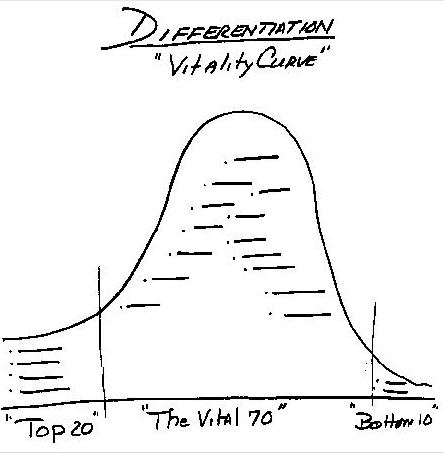
我们最初只有三个E：精力、激励和决断力。当我们第一次基于这些E进行Session C人事评估时，我们看到几位管理者精力充沛、能够激励团队、也有很强的决断力。但当我们从一个业务部门走到另一个业务部门时，我们不断遇到一两个符合三个E标准但看起来并不那么出色的人。在回程之前，我们意识到我们遗漏了什么。这些管理者缺乏的是交付业绩的能力。所以我们加上了第四个E——执行。这就完整了。
在我看来，四个E由一个P连接——热情(Passion)。
正是这种热情，可能比其他任何因素都更能区分A类和B类员工。B类员工是公司的核心，对运营成功至关重要。我们投入大量精力来提升B类员工。我们希望他们每天都在寻找自己缺少什么才能成为A类员工。管理者的工作就是帮助他们达到那个目标。
C类员工是无法完成工作的人。C类员工可能会削弱而不是激励他人。他们拖延而不是交付。你不能在他们身上浪费时间，尽管我们确实会投入资源帮助他们重新安置到其他岗位。
活力曲线是我们区分A、B、C类员工的动态方式，是Session C最重要的工具。按20-70-10的网格对员工进行排名，迫使管理者做出艰难的决定。
活力曲线并不能完美地对应我对人才的A-B-C评估。A类员工有可能——甚至很可能——处于中间70%的群体中。这是因为并非每个A类员工都有在组织中更进一步的雄心。然而，他们仍然希望在自己的岗位上做到最好。
无法进行差异化的管理者很快会发现自己落入了C类。
活力曲线必须有奖励制度的支持：加薪、股票期权和晋升。
A类员工的加薪幅度应该是B类员工的两到三倍。B类员工应该每年获得稳定的加薪，以认可他们的贡献。C类员工不应该得到任何东西。我们在每次授予时都给A类员工大量的股票期权。大约60%到70%的B类员工也会获得期权，尽管同一批人可能不会在每次授予时都收到。
每次我们发放加薪、授予期权或进行晋升时，活力曲线(vitality curve)都是我们的指南。每一份奖励建议都附有该员工在曲线上的位置。
失去一个A类员工是一种罪过。爱他们、拥抱他们、珍惜他们，不要失去他们！我们对每一个流失的A类员工都进行事后分析，并追究管理层的责任。
这套方法很有效。我们每年流失的A类员工不到1%。
这个系统和其他任何系统一样，都有其缺陷。识别A类员工是管理工作的乐趣之一，每个人都喜欢做这件事。培养和奖励中间70%的有价值员工也不太困难。
处理底部10%的员工才是最难的。
新任经理第一次指出最弱的员工时，他们很容易做到。第二年就变得更困难了。
到了第三年，简直就是一场战争。
到那时，最明显的弱势员工已经离开了团队，许多经理无法让自己把任何人放进C类。他们已经爱上了团队中的每一个人。到第三年，如果他们的管理团队有30人，他们往往连一个底部10%的员工都找不出来，更别说三个了。
经理们会使出浑身解数来避免识别底部10%的员工。有时他们会偷偷把当年计划退休的人或已经被告知要离开组织的人塞进去。有些人甚至把已经离职的员工名字放在这些名单上。
有一个业务部门甚至走到了极端，把一个两个月前已经去世的人的名字放进了底部10%的类别。
这是很艰难的事情。没有哪个领导者喜欢做艰难的决定。我们不断面临来自组织中最优秀人才的强烈抵制。我自己也曾与这个问题作斗争，经常因为不够严格而感到内疚。每一种冲动都是想视而不见。我一直在与之抗争。如果一位GE领导者提交奖金或股票期权建议时没有识别出底部10%，我会把所有建议退回去，直到他们真正做到差异化。
不以坦诚、直接的方式处理C类员工的问题，真正的后果会在后来显现——当一位新经理上任时。由于对团队没有情感依附，他或她很容易就能识别出最弱的员工。
底部10%很快就被识别出来了。
有些人认为淘汰底部10%的员工是残忍或野蛮的。其实不是。恰恰相反。我认为真正残忍的是”虚假的善意”——留住那些不会成长和发展的人。没有什么比在人们职业生涯后期才告诉他们不适合这里更残忍的了——那时他们的工作选择有限，正在供孩子上大学或偿还大额房贷。
把活力曲线描述为残忍，源于错误的逻辑，是虚假善意文化的产物。为什么人们离开大学后就应该停止衡量绩效呢？
绩效管理从一年级开始就是每个人生活的一部分。它从小学的分班开始。差异化适用于足球队、啦啦队和荣誉社团。它适用于大学录取过程——你被一些学校录取，被另一些学校拒绝。它适用于毕业典礼，当”最优等”(summa cum laude)或”优等”(cum laude)等荣誉被加到你的文凭上时。
在我们人生的前20年，差异化无处不在。为什么在我们花费大部分清醒时间的工作场所就应该停止呢？
我们的活力曲线之所以有效，是因为我们花了十多年时间建立了一种绩效文化，在每个层级都有坦诚的反馈。坦诚和开放是这种文化的基础。我不会在没有绩效文化的组织中突然引入活力曲线。
在我们去现场之前一个月，公司执行办公室和我们的人力资源负责人比尔·科纳蒂(Bill Conaty)会为所有主要业务部门制定一个议程。（参见附录中2001年Session C的议程。）
然后行动转移到各业务单元，它们现在必须准备所要求的详细信息。其根本目的不是打一场文书战。关键目标是展示我们的人力资源战略如何应用于业务的所有主要举措。
活页夹、图表、表格可能看起来令人生畏，但会议本身是建立在非正式、信任、情感和幽默之上的。
尽管如此，这里面有很多利害关系。这次评审是我们一年中最重要的会议。评审是这样分解的：
上午，我们讨论组织和其中的人员。
午餐时，我们关注多元化。
下午，我们评审改变游戏规则的举措以及领导这些举措的人。
上午是产生最多热度的时候。我们在讨论职业发展、晋升、活力曲线、个人的优势和劣势。游戏规则是每个人都有优点和缺点、优势和发展需求。我们把大部分时间花在这些需求上，以及这些经理是否真的可以改进。
我们最近评审的一位制造业领导者的优势在于交付成果（出色的生产率、极佳的良率改进、强大的六西格玛(Six Sigma)）。但也有明显的弱点——对人太苛刻，不愿接受他人的想法。在对这些优缺点进行长时间辩论后，我们都得出结论，这个人应该收到警告通知。他必须改变。
他正面临成为C类员工的风险。不具备开放思维将是致命的。
当然，我们也有轻松的时刻。
我几乎挑战每一个人，而且经常以出格的方式。Session C的活页夹里包含每位高管的照片和简短履历。当照片显示出肩膀下垂、眼皮耷拉或低着头时，我会毫不犹豫地指出来说：“这家伙看起来半死不活的！他不可能有什么出息。他在这个职位上待了六七年，却毫无进展。到底怎么回事？你们为什么不对他采取行动？”
显然，并非每张面无表情的照片都能说明问题。我想要的是热烈的讨论。我期望听到业务领导为他们的下属据理力争。每个人离开Session C时都必须明白，人才就是整场比赛的全部：球员、国歌、热狗、第七局休息，整场比赛。
2001年3月，我再次来到皮茨菲尔德参加Session C评审，新任CEO杰夫·伊梅尔特陪同前往。翻阅活页夹时，我发现了GE塑料业务一位高潜力经理的一张滑稽照片。
“如果这家伙真那么优秀，你们最好给他换张新照片，”我开玩笑说，“否则别人会产生错误印象。”
当天晚些时候，我见到了这位员工，还拿这事打趣他。
“天哪，”我说，“你本人和照片上完全不一样。你出色的工作表现和那张照片根本对不上号。”
我想他觉得挺有意思的（可能也换了张新照片）。
每张照片旁边都附有一个九宫格，就像井字棋的格子，其中一个”X”标记显示该经理的潜力和绩效。最佳评级在左上角的格子里。放置这个”X”的标准很大程度上依赖于我们的公司目标——四个E以及我们的关键举措：客户导向、电子商务和六西格玛(Six Sigma)。
每张照片下方，一些简短的概要评语突出显示经理的优缺点。这些概要大多是优点，但我们的参与规则要求必须至少有一条需要改进的缺点。我们不允许完全粉饰太平。一位高管的优点包括”财务斗牛犬”、“7000英尺跑道”、“懂电子商务”。缺点是：“野心写在脸上。”我们从不喜欢那些更关注下一份工作而非当前工作的人。这可能是职业生涯的致命伤。另一位被评价为”聪明、有干劲、正在快速成长”。缺点是：“执行力仍是问号。”未能兑现承诺，最终是不可接受的。
这些概要背后是成就和发展需求的详细备份资料。每位员工也会做自我评估，与上司的分析放在同一页上。
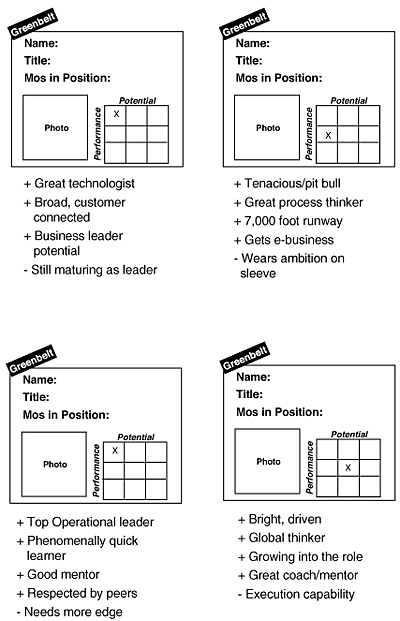
在过去几年里，我们与多元化的”高潜力人才”共进午餐。每位高潜力人才都被分配了一位来自业务领导团队的导师。多年来我明确表示，这些导师计划与解释福利方案毫无关系。我们谈论的是人才发展，并运用产品开发的纪律性方法。
在这种情况下，被指导者就是”产品”。业务领导团队——他们的导师——有责任开发这些产品。这意味着要么把被指导者培养到A级水平，要么找新人。午餐时，我们坦诚地讨论项目进展。导师和被指导者都接受了非常严格的基本规则。在我们的绩效文化中，双方都明白各自有责任交付卓越的产品，并将以此为标准接受考核。高层领导要承担责任。
这个方法奏效了。1999年的被指导者中，超过80%已获得晋升。
午餐后，会议专门讨论各项举措。我们想看看谁在领导这些举措，每个团队的成员是谁。各团队汇报他们对照年度目标的成果。我们从每个业务部门收集最佳实践，带到下一个部门。最重要的是，我们能很好地评估每项举措背后有多大的推动力。
每次会议结束时，我们都会列出明确的待办事项清单，与各业务部门分享。两个月后的7月，我们会通过两小时的视频会议重新审视这些优先事项，检查进展。同一份清单将作为11月Session II会议的议程，形成闭环。
尽管这个流程很严格，但员工在年度态度调查中告诉我们的内容让我感到惊讶。在42个问题中，我们在这个陈述上总是得到最低分：“这家公司果断处理表现不佳的员工。”
2001年，只有75%的GE专业人员同意这一陈述——而这个结果相比1999年刚超过66%的同意率已经有所改善。这个问题上的满意度与调查其他部分的优异得分形成鲜明对比。（当被问及员工在GE的职业生涯是否”对我和我的家庭产生了积极影响”时，超过90%的回答是肯定的。）这些结果生动地说明了差异化(differentiation)在公司各层级的重要性，以及我们的员工多么希望看到更加积极和坦诚的做法。
在Session C期间，在主要工作地点，我们至少花一个小时与当地工会领导会面。我们希望当地工会领导了解我们，我们也想了解他们和他们关心的问题。
我们对各级工会领导的相互尊重是真实而深厚的。在全国层面，我们与国际电气工人联合会（IUE）主席比尔·拜沃特斗争了15年，之后又与他的继任者埃德·法尔继续交锋。每年一两次，先是弗兰克·多伊尔，后来七年间是比尔·科纳蒂——我们的人力资源负责人——和我会与他们共进晚餐，就薪酬、福利和其他典型问题进行争论。我们之间最大的理念分歧在于，我认为如果我们把工作做好，员工就不需要一个组织来代表他们的利益。我的立场总是引来比尔和埃德的激烈反驳，他们反对我们抵制他们的组织活动。我们的分歧始终摆在明面上。我们之间没有隐藏的议程，通用电气在20多年里从未发生过重大罢工。
在更广泛的劳工领域，我的前任雷格·琼斯曾在20世纪70年代领导过一个劳资团体，由大约十位劳工领袖和十位CEO组成，与AFL-CIO（美国劳工联合会-产业工会联合会）的乔治·米尼和莱恩·柯克兰积极合作。我非常喜欢这个想法，先后与莱恩·柯克兰和约翰·斯威尼共同领导这个团体。约翰和我都可能是固执的爱尔兰人，但我始终觉得我们彼此真诚尊重。我们试图在医疗保健、贸易和教育等议题上达成共识。虽然这个团体在政策上只取得了有限的成功，但通过多次会议，我们更好地理解了彼此的立场。
我们与工会打交道的方式与对待所有员工的方式并无不同。许多外部人士经常问我：“通用电气的文化怎么可能在全球各种文化中运作？”这个问题的答案始终如一：尊重员工，给他们发言权。这是一个放之四海而皆准的信息。
一天或一年的时间永远不够用在人身上。这对我意味着一切。我总是提醒各级管理者，他们必须分享我的热情。虽然今天站在他们面前的我可能是”大人物”，但对于他们业务中的员工来说，他们才是真正的”大人物”。他们必须向自己的员工传递同样的能量、承诺和责任感——对那些员工而言，杰克·韦尔奇什么都不是。我的前妻卡罗琳总是提醒我，我在公司工作了十年才知道董事长是谁。我敦促每位通用电气管理者记住的重要一点是：对他们的员工而言，“他们就是CEO”。
即使是我们最优秀的明星也知道规则。正如NBC总裁安迪·拉克所说：“杰克和我做了八年朋友，我们的妻子也经常见面。如果我走上一条做出四个极其糟糕决定的道路，我知道他会解雇我。他会拥抱我，说他很抱歉，也许你以后不想和我一起吃饭了，但他会毫不犹豫地让我走人。”
一切都关乎业绩。
变革没有支持者——而被视为革命的变革支持者更少。
1981年1月初，在被任命为候任董事长仅两周后，我在佛罗里达参加通用电气的年度总经理会议。自1968年以来，我一直参加在克利尔沃特贝尔维尤比尔特莫尔酒店举行的这一活动。一天晚餐前的鸡尾酒会上，我找到了吉姆·鲍曼。吉姆是一位留着胡子的学者，曾是哈佛商学院教授，多年来一直为通用电气提供咨询。一年前，他被任命为克罗顿维尔（Crotonville）管理发展中心的负责人。
我发现吉姆正在一小群人中交谈。
“你正是我要找的人，”我说。
我抓住吉姆的胳膊，自我介绍后，很快跳过了寒暄。我告诉他准备好迎接他人生中最刺激的旅程。
“我们将在这家公司进行各种变革，我需要克罗顿维尔成为其中的重要组成部分。”
没有克罗顿维尔，我认为我们毫无希望。我需要向尽可能多的受众传达变革的理由。克罗顿维尔就是实现这一目标的地方。
克罗顿维尔是位于纽约州奥西宁的一个52英亩的园区，曾是早期管理变革的核心。前CEO拉尔夫·科迪纳在20世纪50年代中后期建造了这个设施，以将他的分权理念推行到各级管理层。
数千名通用电气管理者被教导要掌控自己的运营，承担盈亏责任。多年来，该中心的讲师根据”蓝皮书”——近3500页的管理规范——教授一系列实用的培训课程。数千名总经理在这套理念中成长。在那个年代，蓝皮书中阐述的POIM（计划-组织-整合-衡量）原则就像戒律一样。
一旦分权化扎根，克罗顿维尔就不再主要作为领导力发展的培训基地，而更多地成为提供技术培训或在危机时期传达重要信息的论坛。在20世纪70年代，当油价飙升引发严重通货膨胀时，雷格让数百名管理者参加了关于通胀时期管理的研讨会。
到1980年，设施已经老化。克罗顿维尔逐渐变成了一种安慰奖，而不是公司精英聚集的地方。项目采用开放报名制，参加者的素质参差不齐。公司未来的许多领导者都懒得参加。雷格职位的七位竞争者中，只有两位参加过为期数周的总经理课程。我不是其中之一，尽管我记得在20世纪60年代末参加过一个为期一周的营销课程。我喜欢那门课程，但不太喜欢住宿条件。
到1981年，克罗顿维尔已经疲态尽显。真的很疲惫。
我想让这个地方焕发生机，需要这位前哈佛教授来领导这项工作。我把克罗顿维尔(Crotonville)视为一个在开放互动环境中传播思想的地方。它可以成为打破层级壁垒的理想场所。我需要与组织深处的管理者建立联系，而不是让我的信息被层层上司过滤解读。
但如果克罗顿维尔要实现这一切，它本身必须改变。在佛罗里达见到吉姆·鲍曼几周后，我们一起坐在费尔菲尔德，用三个小时的午餐时间讨论这个中心的未来。我想改变一切：学员、师资、内容，以及设施的外观。我希望它专注于领导力发展，而不是具体的职能培训。我希望它成为触及公司最优秀人才内心的地方——在我们推动变革的过程中，成为凝聚人心的精神纽带。
“我不希望任何没有巨大潜力的人去那里，”我告诉吉姆。“我要的是正在崛起的优秀人才，而不是寻求最后奖赏的疲惫老人。”
如果我们只邀请最优秀的人参加，就必须把克罗顿维尔打造成世界级的中心。我们必须在设施上重新投资，尽管当时正处于艰难的变革之中——业务组合重组和裁员。我们立即翻新了”坑”(Pit)——那个主要的多层教室，并开始建造直升机停机坪，这样我们的领导团队可以更快往返。（从费尔菲尔德开车单程要一个小时。）我让吉姆向董事会陈述我们的方案。他在1983年6月做了汇报，其中包括申请4600万美元在那里建造新的住宿中心。吉姆回忆说，当我审阅他的演示文稿时，我划掉了最后一张图表上的投资回报分析。我在幻灯片上画了个”X”，潦草地写上”无限”(Infinite)这个词，以表明我们投资的回报将是永恒的。
我是认真的。
进展缓慢。我与一批通用电气管理者的第一次会议，就像我早期的许多会议一样反响平平。当时克罗顿维尔还没准备好。参加四周管理课程的高管们被用大巴送到费尔菲尔德，参加所谓的”与董事长共度的夜晚”。1981年6月，我站在总部礼堂里，面对五十位管理者。我们都穿着西装打着领带。学员坐在前面，公司的人力资源员工坐在后排。那晚我的即兴发言围绕我最喜欢的主题：我们的第一或第二战略，以及我想改变公司”感觉”的愿望。
在讨论完我想把通用电气带向何方之后，我开放了提问环节。
有几个问题，但房间里没人想挑战我的任何观点。礼堂里至少70%的人都带着那种怀疑的表情（你知道我说的那种表情——当人们不认同你的时候）。
公平地说，我肯定把他们吓坏了。我在讲台前来回踱步，威胁要整顿、关闭或出售他们所在的业务，而所有掌控他们职业生涯的人就坐在后排。这肯定让人非常紧张。只有少数对官僚主义感到沮丧的管理者喜欢这些。
我理解房间里的困惑和恐惧。天哪，这些管理者当初是为一个不同的、更传统的通用电气签约的。我在努力寻找合适的措辞，却模糊了我信息的影响力。卓越、质量、创业精神(entrepreneurship)、主人翁意识(ownership)、面对现实、第一或第二——这些主题让这些担心自己是否还能保住通用电气工作的人感到不堪重负。
我继续在费尔菲尔德礼堂举办这些课程，用大巴把管理者送到总部参加晚间会议，然后是酒会招待。情况逐渐好转。但仍然举步维艰。
公司的情绪随着媒体报道的乐观程度和股价而波动。每一篇正面报道似乎都能让组织振奋起来。每一篇负面文章都给那些抱怨的愤世嫉俗者带来希望。
《财富》杂志在1982年1月率先给出了乐观的评价，标题是”试图让通用电气焕发生机”。不到六个月后，我就被贴上了”中子弹杰克”的标签。1984年3月，《福布斯》杂志随后给予了强力背书，“为全新未来的非凡设计”。我记得当那期封面故事出来时，我正和亨利·基辛格一起乘直升机从费尔菲尔德飞往纽约。他认为那篇报道非常精彩。来自深谙媒体之道的亨利，这是很高的评价。但好感觉很快就消失了。五个月后，《财富》杂志称我为”美国最严厉的老板”。
至少在媒体上，我从王子变成猪——又从猪变回王子——转变得非常快。
幸运的是，股票市场站在我这边。在多年停滞之后，通用电气的股票和市场开始起飞，强化了我们走在正确道路上的理念。多年来，股票期权(stock options)并不值多少钱。1981年我成为董事长时，通用电气所有人的期权收益总共只有600万美元。第二年跃升至3800万美元，1985年达到5200万美元。
通用电气的员工第一次开始在钱包里感受到好时光。
认同开始形成了。
1984年，我开始参加克罗顿维尔每一期顶级管理课程，共三个班。我们对所有课程进行了全面改革。它们原本基于其他公司的案例研究。我们改为解决通用电气的实际问题。吉姆·鲍曼招募了一位富有创新精神的密歇根大学管理学教授诺埃尔·蒂奇，他帮助重新设计了课程。蒂奇在1985年至1987年担任克罗顿维尔负责人，他对这份工作充满热情，并引入了”行动学习”(action learning)。
克罗顿维尔开设了许多课程，从新员工入职培训到特定职能项目应有尽有。其中有三门课程专注于领导力培养：EDC（高管发展课程）面向最具潜力的管理者；BMC（商业管理课程）面向中层管理者；MDC（管理发展课程）面向职业生涯早期的快速成长者。
这些课程的第一级是为期三周的MDC，每年开设六到八期。每年有400到500名管理者参加这些课程，全部在克罗顿维尔的教室环境中进行。
蒂奇的”行动学习”（Action Learning）理念——即围绕真实商业问题展开学习——成为更高级的BMC和EDC课程的核心。项目聚焦于某个重要国家、某项主要的GE业务，或公司在质量或全球化等举措上取得的进展。有趣的是，柏林墙倒塌当天我们正好有BMC课程在柏林进行，天安门广场抗议当天也有课程在北京举办。学员们亲眼目睹了这两个历史事件，但所有人都安全返回，并因这些经历变得更加睿智。
我们每年举办三期BMC，每期约60人；每年举办一期EDC，招收35到50名最具潜力的管理者。这两门课程都为期三周，时间安排上确保每个班级都能在我们公司执行委员会（CEC）的季度会议上进行两小时的成果汇报。CEC会议汇集了35位GE高管——各主要业务的CEO和高层企业职能负责人。
这些课程变得如此注重行动，学员们实际上成了高层管理团队的内部顾问。课程研究了我们在全球几乎所有发达国家和发展中国家的增长机会，以及其他成功公司是如何把握这些机会的。他们评估我们四大举措的推进速度和效果。每次都有切实可行的成果，能够在GE的某项业务中付诸行动。我们不仅获得了真正关心公司的优秀内部人员提供的出色咨询，这些课程还建立了跨业务的友谊，这种友谊可能持续一生。
这些课程成为对成就的重要认可。没有业务负责人的批准，任何人都不能参加BMC。没有人力资源主管比尔·科纳蒂、副董事长和我的批准，任何人都不能参加EDC。所有课程提名都在我们的Session C会议上进行审核。
到1980年代中期，教室里的面孔和对话都在改善。这些课程的学员构成发生了巨大变化。1989年我们开始向更多管理者发放股票期权后，我在入门课程开始时会问：“你们中有多少人获得了期权？”
起初，通常只有不到一半的人举手。
“好，我有个好消息告诉大家。对于那些获得期权的人，恭喜你们。如果你们不是A级人才，就不会得到期权。股票表现强劲，只要继续保持出色业绩，你们应该期待从这些期权中获得可观收益。”
这时，其余从未见过股票期权的人都在想接下来会说什么。
“对于那些没有获得期权的人，这也是个好消息，”我说。“现在你们知道你们的上司没有对你们坦诚相待。如果你的上司告诉你你是明星员工，那一定有问题——因为我们所有的明星员工都获得了期权。你们应该回去和你们的经理谈谈，问问为什么你们没有得到。”令人惊讶的是，很多人并没有这样做——因为他们内心深处知道自己的真实处境。
1990年代，克罗顿维尔的领导权交给了史蒂夫·科尔。史蒂夫为人低调、非常聪明、具有前瞻性思维，是真正的团队合作者——正是我们将这个中心提升到新水平所需要的人。他不仅为我们自己的员工开发课程，还出色地将客户引入克罗顿维尔，与他们分享最佳实践。他是一位出色的大使。
1991年，我们决定，如果没有获得期权，任何人都不能参加克罗顿维尔的顶级项目。所有A级人才都应该获得股票期权，所有人都应该获得去克罗顿维尔学习的机会。
1995年，我在《财富》杂志上读到一篇关于百事公司高管罗杰·恩里科及其团队如何向百事高管教授领导力的文章。我喜欢百事的模式，决定我们领导团队的每位成员都应该教授一堂课。以前，我们的高层职能负责人和业务领导只是偶尔这样做。百事模式让学员们近距离接触我们最成功的榜样，也让我们的领导层更广泛地了解公司的脉搏。在1994年加入GE担任克罗顿维尔新负责人的史蒂文·科尔的帮助下，我们做出了这一改变。如今，克罗顿维尔约85%的师资都是GE的领导者。
科尔曾是南加州大学商学院院长，也是我们早期群策群力（Work-Out）项目的顾问之一，他推动了另一项重大变革。多年来，我们的客户对我们在克罗顿维尔做什么以及如何做表现出浓厚兴趣。科尔与业务领导们一起推动，让希望体验我们领导力发展课程或六西格玛（Six Sigma）入门课程的GE主要客户也能参与进来。科尔和团队使这对每个人来说都取得了巨大成功。有一段时间，我们每天收到四个来自希望参观我们领导力中心的客户和供应商的请求。
到1986年，克罗顿维尔的硬件改造已经完成。我们有了新的宿舍楼，配合新的教室。最重要的是，教室里的人真正发生了变化。他们更有活力，更愿意提出具有挑战性的问题。
总的来说，大概花了十年时间，我们的大多数员工才真正理解了这一切。在过去十年里，“坑”里坐满了兴奋而投入的人们。面孔年轻而多元。问题聪明而具有挑战性——对我和对他们都是如此。
克罗顿维尔现在是一个能量中心，推动着思想的交流。
说到底，教学是我谋生的方式。说实话，我一直喜欢教学。拿到博士学位后，我甚至去几所大学面试过。在通用电气工作的最初几天，我经常给我的一位技术员皮特·琼斯教数学。午餐时间，我们会在我位于皮茨菲尔德的办公室里碰面。我知道他很聪明，我希望他能回学校继续深造。
皮特会告诉你，我是个没耐心的老师。有时候当他不理解我在办公室黑板上写的公式时，我会朝他扔粉笔。不知怎的，一切都奏效了。皮特离开了通用电气，拿到了学位，后来在皮茨菲尔德的学校系统教了三十年书。
我很容易就迷上了克罗顿维尔。我在那里花了大量时间。我每个月会去”竞技场”(Pit)一两次，每次长达四个小时。在21年的时间里，我有机会直接接触近18000名通用电气的领导者。去那里总能让我重新焕发活力。这是我工作中最喜欢的部分之一。
每次去克罗顿维尔，我从不照本宣科。我喜欢开放式的交流。学员们教给我的和我教给他们的一样多。我成了一个引导者，帮助每个人相互学习。我每次上课都会带去一些想法，而我们的交流让这些想法更加丰富。我希望每个人都能反驳和挑战。在过去十年里，他们确实做到了。
在我出现之前，我有时会提前发一份手写备忘录，说明我预计在课程中要讨论的内容。对于我们的MDC（管理发展课程），我通常会让他们作为一个团队思考一些问题（见下文）。
“我会谈论A、B、C类员工。我会问你们对每类员工不同特征的看法……并希望与你们进行讨论。”
“你们面临的主要困扰是什么……我能帮上什么忙？”
“你们不喜欢在通用电气工作的哪些方面，希望看到什么改变？”
“你们正在经历质量倡议吗？你们会如何在自己的领域、业务和公司加速推进它？”
对于我们的EDC（高管发展课程）项目，我有一套不同的问题。我问他们，如果明天被任命为通用电气的CEO，他们会怎么做。
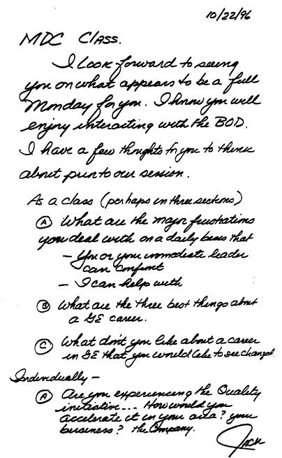
“你在上任的头30天会做什么？你目前有’愿景’(vision)吗？你会如何制定一个愿景？展示你对愿景的最佳构想。你会如何’推销’这个愿景？你会在哪些基础上建设？你会抛弃哪些现行做法？”
我还会让每个人准备描述他们在过去12个月中面临的一个领导力困境，比如关闭工厂、工作调动、艰难的解雇，或者业务的出售或收购。我会把自己的经历带到课堂上来引出这些讨论。我最喜欢讲的一个故事是1997年11月我与波音公司董事长菲尔·康迪特的一次会面。当时，我们正试图赢得一份价值超过十亿美元的合同，为波音新型远程777飞机提供飞机发动机。
我曾在比尔·盖茨的西雅图年度峰会上做晚宴演讲。那天晚上，我找到菲尔，邀请他第二天私下共进午餐。通用电气和波音的团队一直在为777远程版本的发动机选型努力工作。菲尔对这个话题了解得很清楚。我阐述了为什么我们的发动机适合这架飞机，以及为什么通用电气是合适的合作伙伴。
菲尔仔细听着，问了几个问题，然后用一个好消息结束了谈话。
“让我们这样结束这顿午餐吧，你拿到这笔交易了，”他说。“但你必须向我保证一件事。你不能告诉你的人他们已经拿到了。他们必须继续真诚地谈判。”
我同意了。在接下来的60到90天里，那些负责谈判的人不断打电话给我，说我们必须给波音更多的价格让步和更多的开发支持。每次我的人打电话告诉我他们最新的让步时，我都快要窒息了。然而，我无法让他们知道我和菲尔的谈话。
所以他们不断地让步。
终于，到了最后一天，我们又被波音压了一次价。我再也受不了了。我拿起电话打给菲尔。
“菲尔，我快窒息了。我不能再坐在这里了。我必须打破这个承诺。”
“你们已经做得够多了，”他回答说。“告诉你的团队说不。他们拿到这笔交易了。”
我会分享的另一个困境是1990年代末决定将我们的冰箱生产从肯塔基州路易斯维尔转移到墨西哥。从经济角度来看，这个决定显然是有利的。另一方面，工会在地方和全国层面都非常配合，努力使我们的美国工厂更具竞争力。
从纯粹的商业案例来看，数字决定了这次转移。我们在路易斯维尔还有其他业务，全国工会领导层也在努力与我们合作。最终，我们决定继续在那里生产一条冰箱生产线，在路易斯维尔保住了大约900个工作岗位。我告诉学员们，我们从这个决定中获得的善意将帮助我们在路易斯维尔变得更有竞争力。尽管如此，违背数字做决定确实是一个真正的困境。
我会讲这些故事和其他类似的故事，让班上的每个人都参与到我的道德和领导力困境中来。然后我会点名一个我知道刚刚经历过困境的人来讨论他们的困境。闸门就此打开。这些个人讨论是我们在克罗顿维尔最丰富的时刻。教室里的每个人离开时都知道，在面对艰难抉择时，他们并不孤单。
在初级课程中，我会先让每个学员做自我介绍。我会花四个小时中的第一个小时来做这件事。我试图建立个人联系，让他们说上一分钟。然后我会听他们介绍对公司的喜欢和不喜欢之处，以及如果他们处在我的位置会改变什么。
克罗顿维尔也成为了一个宝贵的场所，帮助我们澄清各项举措在组织中造成的困惑。在早期推进全球化的过程中，人们会问：“我必须有海外任职经历才能在GE晋升吗？”
“当然不是，”我会说，“但如果你有这样的经历，机会会更大。这对你和你的家人来说都是一次成长的经历。”
当我努力推动公司向服务转型时，课堂上的学员总会问：“我们要放弃产品业务吗？”
“没有优秀的产品，就不可能有服务业务。”
在六西格玛(Six Sigma)质量项目的早期阶段，人们开始问：“每个人都必须接受六西格玛黑带培训才能在GE晋升吗？”
“这肯定会有帮助，”我回答说，“这是让你脱颖而出的另一种方式。”
当我们在1999年启动电子商务计划时，人们又问是否还需要黑带认证。有些人急于投身数字化工作，不想花两年时间接受六西格玛培训。我会回答：“六西格玛是基础教育，是你的另一个差异化优势，就像获得本科或研究生学位一样。数字化只是一种工具，就像读写能力一样，每个人都会具备。”
每次课程结束后，我通常会在返回总部前，和大家在休闲中心喝一杯。三天后，我会收到学员对三个问题的反馈：
“你觉得这次演讲中哪些内容具有建设性和启发性？”
“你觉得哪些内容令人困惑或不安？”
“你认为最重要的收获是什么？”
这些反馈很有帮助。在1980年代初期，许多管理者离开时感到困惑和不安。我认真对待每一份反馈，努力将从中学到的东西带入下一次课程。我虔诚地阅读每一条评论。如果有人在评论上署名，我有时会给他们写一封简短的回复，特别是当我造成了误解的时候。
到了1980年代中期，反馈显示出更多的认同。在听完战略和愿景后，他们说自己理解得更深入了。然而，他们从我这里听到的内容，往往与他们的上司在公司里告诉他们的不一致。有些管理者在课前就给他们打预防针，说他们将要听到的都是胡说八道。在组织深处，抵触情绪依然存在。
到1988年，每年约有5000名GE员工到克罗顿维尔参加各种课程。然而我仍然一遍又一遍地收到同样的问题和评论。人们说这些信息和愿景很有道理，但他们经常补充说：“可回到公司就不是这样了。”该死，付出了这么多努力，信息仍然没有完全传达下去。
1988年9月的一个下午，我离开克罗顿维尔时沮丧至极。我几乎受够了。那天的课程效果特别好。课堂上的学员倾诉了他们在推动业务变革时遇到的种种挫折。我知道我们必须把这种坦诚和激情从课堂带回到工作场所。
在返回费尔菲尔德的直升机上，吉姆·鲍曼不得不听我发泄不满。“为什么我们不能把克罗顿维尔的开放氛围推广到整个公司？”
我没让他回答这个问题。我知道我们该怎么做了。
“我们必须在整个公司重建克罗顿维尔的讨论坑。”
当我们在费尔菲尔德降落时，我们已经有了答案。我们勾勒出了一个想法，在接下来几周的完善后，它将成为改变GE格局的项目——群策群力(Work-Out)。
克罗顿维尔的讨论坑之所以有效，是因为人们可以自由发言。虽然从技术上讲我是他们的”老板”，但我对他们的个人职业发展几乎没有影响——尤其是在较低级别的课程中。我们必须在所有业务部门创造这样的氛围。显然，我们不能让业务领导来主持这些会议，因为他们会认识房间里的每一个人。这样一来，互动氛围就会改变，开放性就会变得更加困难。
我们想出了一个办法：从外部引入受过培训的引导师(facilitator)，主要是没有私心的大学教授。群策群力的模式借鉴了传统的新英格兰镇民大会。我们邀请40到100名员工组成小组，分享他们对业务的看法，以及阻碍他们工作的官僚主义问题，特别是审批流程、报告、会议和考核指标。
群策群力的字面意思就是：把系统中不必要的工作清除出去。为此，我们期望每个业务部门举办数百场群策群力会议。这将是一个大规模的项目。
一次典型的群策群力会议持续两到三天。会议开始时，经理会做一个演讲，可能提出一个挑战或概述一个大致议程，然后离开。在老板不在场、由引导师主持讨论的情况下，员工们被要求列出问题、讨论解决方案，并准备好在老板回来时推销自己的想法。中立的外部引导师——由吉姆·鲍曼招募的二十多位学者——使员工与经理之间的交流顺畅了许多。
这里真正的创新之处在于，我们要求经理对每个提案当场做出决定。他们需要对至少75%的想法给出”是”或”否”的答复。如果无法当场做出决定，就要约定一个决策日期。没有人可以把提案束之高阁。当人们看到自己的想法被立即付诸实施时，这真正成为了打破官僚主义的利器。
我永远不会忘记1990年4月参加我们家电业务部门的一次群策群力(Work-Out)会议。我和30名员工一起坐在肯塔基州列克星敦一家假日酒店的会议室里。一位工会生产工人正在做关于如何改进冰箱门制造工艺的演示，他正在描述装配线二楼的一个工序环节。
突然，工厂的首席工会代表跳起来打断了他。
“胡说八道，”他说，“你根本不知道自己在说什么。你从来没上去过。”
他抓起一支马克笔，开始在房间前面的白板上涂写。不一会儿，他就接管了整个演示，并给出了答案。他的解决方案立即被采纳了。
看到两个工会成员为改进制造工艺而争论，这绝对令人震撼。想象一下，让那些刚毕业、拿着闪亮新学位的大学生来解决这个制造问题，他们根本没有机会。而这些有经验的人，正在帮助我们解决问题。
难怪人们开始忘记自己的角色定位。他们开始在各处畅所欲言。
像这样的故事在整个组织中传播了数百个。到1992年中期，超过20万名通用电气员工参与了群策群力活动。一位中年家电工人的话概括了这个项目的意义：“25年来，”他说，“你们只用了我的双手，而我的大脑本可以免费奉上。”
群策群力证实了我们已经知道的事实：最接近工作的人最了解工作。公司里几乎每一件好事都可以追溯到某个业务部门、某个团队或某个人的解放。群策群力解放了他们中的许多人。从克罗顿维尔孵化出的一个简单想法，群策群力帮助我们创造了一种文化——每个人都开始发挥作用，每个人的想法都开始受到重视，领导者引领而非控制。他们指导而非说教，并取得了更好的成果。
最终，克罗顿维尔成为了一个学习的熔炉。我们在那里最宝贵的老师变成了学员自己。通过他们的课堂作业和实地研究，他们教会了公司的领导者和彼此：往往存在更好的方法。
克罗顿维尔实际上成为了我们最重要的工厂。很快，我们将用一个永远改变组织的想法使它更加高效。
1989年12月，我和第二任妻子简坐在巴巴多斯的海滩上，撑着遮阳伞，补度蜜月。我提前一年排定的日程让我们无法在4月结婚时享受典型的蜜月。现在我们终于迎来了”浪漫假期”，但像往常一样，我最终还是在谈论工作——这可不是什么枕边情话。
群策群力已经取得了巨大成功。我们正在用它痛击官僚主义。整个公司的创意流动得更快了。我在摸索一种方式来描述这一切，一种能够凝聚整个组织的东西——并将创意分享提升到新的层次。
我正在向简阐述我的想法：将30多万人的智慧集中到每个人的头脑中。这就像举办一场精彩的晚宴，八位聪明的客人各有所长。想想看，如果有办法将他们最好的想法传递给每位客人，餐桌上的每个人会变得多么优秀。这正是我追求的目标。
巴巴多斯的桑迪莱恩是个好地方。我从未体验过加勒比海的圣诞节——感觉很不一样。当我躺在海滩上看到圣诞老人从潜水艇里冒出来时，这可能正是我需要的刺激。那天，我产生了一个在接下来十年里让我着迷的想法。
可怜的简。我滔滔不绝。我不停地谈论群策群力正在打破的所有边界。突然，“无边界”(able)这个词跳入我的脑海。它真正概括了我对公司的梦想。我无法将这个词从脑海中抹去。
听起来可能很傻，但感觉就像一次科学突破。
一周后，我带着最新的执念，直接从巴巴多斯飞往博卡拉顿参加运营经理会议。博卡会议是为期两天的会议，我总是在闭幕时概述来年的挑战。这一次，最后五页的草稿全是关于无边界行为的。（我认为发言比潦草记下的内容听起来更好[见下页]。）像往常一样，我有点过于激动。我已经学会，对于任何大想法，你必须不断推销、推销、再推销，才能真正推动改变。
在闭幕致辞中，我称无边界是”将在1990年代使通用电气与世界其他企业区别开来的理念”。（我对这个愿景毫不谦虚。）我所设想的无边界公司将消除各职能部门之间的所有障碍：工程、制造、营销等等。它将不区分”国内”和”国外”业务。这意味着我们在布达佩斯和首尔做生意会像在路易斯维尔和斯克内克塔迪一样自如。
无边界公司将推倒外部壁垒，使供应商和客户成为单一流程的一部分。它将消除种族和性别这些不太明显的壁垒。它将把团队置于个人自我之上。
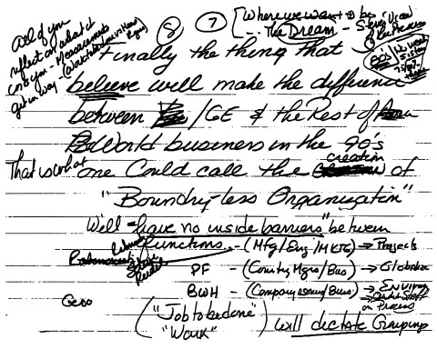
在我们的整个历史中，我们一直奖励发明者或提出好主意的人。无边界将使那些识别和发展好主意的人成为英雄，而不仅仅是那些提出主意的人。因此，领导者被鼓励与团队分享创意的功劳，而不是独揽全部功劳。这极大地改变了我们彼此之间的关系。
无边界理念也让我们能够吸收其他公司的最佳创意和实践。我们已经在消除NIH（非我发明综合症）方面取得了进展，比如采用日本的看板(kanban)制造方式，这是准时制库存管理的前身。无边界的范围要广泛得多。它让我们每个人醒来时都带着”每天寻找更好的方法”这个目标。这句话后来成为一句口号，张贴在全球各地的GE工厂和办公室墙上。
这个理念为群策群力(Work-Out)所开创的学习文化注入了新的动力。到1990年，我们已经实现了一些跨业务的分享。无边界只是给了我们一个词来表达它，并使其成为日常生活的一部分。我们在每次会议上都大力宣传这个理念。我们会用它来善意地让那些不愿分享想法的人或不愿把优秀员工输送给其他业务部门的经理感到尴尬。有人会开玩笑说：“这才是真正的无边界行为！”
他们领会了这个信息。
到1991年，在我们的Session C人力资源评审中，我们开始根据经理们的无边界行为程度来给他们打分。公司里的每位经理都会根据同事的评价以及后来上级的看法被评为高、中或低。如果某人名字旁边是一个空心圆圈，就意味着他们必须迅速改变或离开。每个人都会收到关于自己在这项价值观上所处位置的反馈——很快每个人都知道这项价值观变得多么重要。
1992年，又是在博卡，我做了一件让我们的价值观（包括无边界）真正活起来的事情。我们讨论了不同类型的经理，基于他们完成业绩的能力以及是否坚持GE的价值观。我描述了四种类型的经理。
第一类经理能够兑现承诺——无论是财务方面还是其他方面——并且认同我们的价值观。对他或她的未来做出判断很容易。
第二类是既不能完成承诺也不认同我们价值观的人。这个决定虽然不那么令人愉快，但和第一类一样容易做出。
第三类没有完成承诺但认同我们所有的价值观。我们相信应该给他们第二次甚至第三次机会，最好是在不同的环境中。我见过一些真正的逆袭。
第四类是我们所有人最难处理的。这种人完成了所有承诺，达成了业绩目标，但不认同我们的价值观——这类经理通常是逼迫员工出业绩，而不是激励他们。独裁者，暴君。我们常常对这些霸凌者视而不见。我知道我就这样做过。
也许在其他时代这是可以接受的。但在一个无边界行为将成为核心价值观的组织中，我们承受不起第四类经理。
在博卡的500人面前，我没有点名，但解释了为什么四位公司高管在过去一年被要求离开——尽管他们交出了良好的财务业绩。当我想要说明一个观点时，我从不使用传统的”因个人原因离职”这种借口。
“看看你们周围，”我说，“今年比去年少了五位高管。一位是因为业绩被撤换，四位是因为没有践行我们的价值观而被要求离开。”
我解释说，一位高管被撤换是因为他不相信群策群力或创意分享——他不理解无边界的含义。另一位无法建立强大的团队，第三位高管不愿授权给他的团队，第四位从未理解全球化的理念。
“花这么多时间讨论这个问题的原因是它很重要。我们不能一边谈论现实、坦诚、全球化、无边界、速度和授权，一边却容忍不认同这些价值观的人。我们每个人都必须言行一致。”
现场鸦雀无声。当我把缺乏无边界行为作为经理离职的主要原因之一时，这个理念真正深入人心了。你能感觉到听众在想：这是真的。他们是认真的。
突然间，“每天寻找更好的方法”不再只是一句口号。它是无边界行为的精髓，定义了我们的期望。在多年致力于GE的硬件——重组、收购和剥离——之后，无边界成为我们后来所说的公司”社会架构”发展的核心。
这些是让GE与众不同的核心价值观。
我们必须坚持卓越，对官僚主义零容忍。我们必须寻找并应用最好的创意，无论其来源如何。我们必须珍视全球智力资本以及提供它的人才。我们必须充满热情地专注于推动客户成功。与此同时，在三年时间里，超过5000名员工在克罗顿维尔(Crotonville)工作，共同制定了一份价值观声明。我们认为这些价值观如此重要，以至于把它们印在我们都随身携带的塑封卡片上。
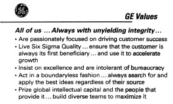
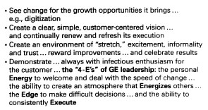
简而言之，我们想要创建一种学习文化，使GE远不止是各部分的简单相加——远不止是一个企业集团。从担任CEO的第一天起，我就知道我们不仅仅是一堆互不相连的业务组合。早期，我提出了一个术语——“整合多元化”(integrated diversity)——试图传达GE从跨业务分享创意中获得的优势。这个术语没有奏效。它太像”商业术语”了。不够个人化或人性化。
令人惊讶的是，几个词能做到或做不到的事情差别如此之大。
当然，一个词或一句话是不够的。我们必须用一套系统来支撑它，使其成为现实。首先，我们必须改变对最优秀员工的薪酬方式。之前的制度把年度奖金作为主要奖励。它基于你所在业务部门的表现。
如果你做得好——即使整个公司表现不佳——你也能拿到你的那份。
我无法接受公司在下沉而某些业务部门却能独善其身的想法。薪酬制度不支持我想要的行为。如果我们希望每个业务部门都成为创意的实验室，我们就需要用一种能强化这一理念的方式来支付薪酬。
我们的薪酬体系在拖我们的后腿。1980年我被宣布为董事长那天，我持有17,000股通用电气股票期权，12年来获得的期权收益还不到8万美元。想象一下其他高管能有多少。如果当时某人年薪20万美元，他们的业务部门表现出色，奖金可能是基本工资的25%，也就是5万美元。个人奖金的价值远远超过股票期权的价值。我希望公司整体业绩和股价对员工的意义，能超过他们各自业务部门的业绩。
1982年9月，我向董事会提出并获得支持进行变革。我们增加了期权授予的规模和频率。当80年代初股市配合时，人们发现公司业绩带来的收益远超他们从自己业务部门获得的任何回报。这强化了前500名员工之间的理念分享。
我本应该更快地做更多。直到1989年我才扩大了这个计划。那一年，不再只是500人，而是3,000名最优秀的员工获得了期权。如今，每年有15,000名员工获得期权——而已经持有期权的人数是这个数字的两倍多。
期权计划的这些变化加上健康的股市推动了理念分享。1981年，通用电气所有员工行权的期权价值仅为600万美元。四年后，这个数字增加到5,200万美元。1997年，10,000名通用电气员工兑现了价值10亿美元的期权。1999年，约15,000名员工从中获得了21亿美元。2000年，约32,000名员工持有价值超过120亿美元的期权。
员工储蓄计划中的持股和股票期权使通用电气员工成为公司最大的单一股东群体。
这太令人兴奋了！每周五我都会收到一份打印报告，列出所有行权的员工及其收益金额。期权正在改变他们的生活，帮助他们供孩子上大学、照顾年迈的父母或购买第二套房产。
最有趣的是发现我不认识的名字。受益的不只是高层。无边界(Boundaryless)理念让每个人都获得了回报。
股权改变行为——薪酬变革为我们1990年推出无边界理念提供了动力。但这只是拼图的一部分。我们需要更多。我们需要一种方法来挖掘最佳创意，并快速在组织中传播。
这就是我们运营系统的由来。
像所有公司一样，我们全年都有一系列计划好的会议和评审。无边界理念所做的是将这些会议连接起来，创建一个建立在持续创意流动基础上的运营系统。
我把每次会议都视为创意的基石。每次会议都在前一次的基础上构建，直到创意变得更大、更好。这就是它不仅仅是一堆无聊、耗时的商务会议的原因。新员工经常评论说，通用电气的与众不同之处在于，一次又一次的会议持续强化核心理念。
我们的运营系统在1月初启动，前500名运营领导者在博卡(Boca)开会。这是对公司最优秀人才和最佳创意的庆祝。在为期两天的活动中，来自各级别的演讲者用十分钟的简短发言展示他们在特定公司举措上的进展。没有冗长无聊的演讲，没有流水账——只有优秀创意的传递。（2001年议程见附录D。）
3月，我们在克罗顿维尔(Crotonville)一个叫”洞穴”的房间举行首次季度公司执行委员会(CEC)会议。在CEC会议上，业务领导者更新他们的运营情况，并描述他们围绕各项举措的最新思考。每个人都要提出一个可以应用于其他部门的创新想法。
4月和5月，公司执行办公室和我们的人力资源主管比尔·科纳蒂(Bill Conaty)深入各业务部门进行Session C评审。这些会议可能是激烈的争论：充满进取心、八卦式的、极其坦诚的关于我们最优秀人才的会议。我们审视业务在各项举措上的进展，以及组织深层负责这些举措的人员素质。
这让我们看到了最优秀、最聪明的年轻人。我总是告诉克罗顿维尔的学员：“投身于这些举措。这是获得曝光机会的方式。”
7月，我们通过视频会议进行两小时的跟进，看看我们商定的人事变动是否已经落实。如果我们与业务部门得出结论认为某项举措背后的推动力不足，在7月视频会议之前总会得到解决。
6月和7月，业务领导者来到费尔菲尔德(Fairfield)进行业务战略评审，即Session I。我们聚焦于竞争对手，试图预判并超越他们的行动。这是一场棋局，我们假设竞争对手都是俄罗斯大师级棋手。
10月，公司的170名高管在克罗顿维尔举行年度会议。在这里，我们在人力资源和战略会议中发现的最佳创意，通过10分钟的标杆展示得到突出呈现。
11月，我们举行Session II，业务领导者展示来年的运营计划。半天时间用于讨论每项举措的具体计划。在这里我们又收获一批新鲜创意。
然后回到博卡。为了这次议程，我们有一整年的最佳创意可供选择。这让我们有机会启动新的一年，开启又一轮令人兴奋的新内容，让每个人都能付诸实践。
为了促进最佳创意的持续分享，我们建立了一个企业倡议小组。这是我唯一允许扩张的企业员工团队。1991年，我从波士顿咨询公司聘请了Gary Reiner担任业务发展主管。我们将该小组的重点从收购转向在全公司范围内推动各项倡议的创意落地。他的团队主要由20多名MBA组成，这些人在咨询行业工作了三到五年，希望进入实业界。
他们来到通用电气时得到承诺：如果表现出色，通用电气的业务部门会在两年内”挖走”他们。他们必须被”挖走”。这确保了他们不仅在传播创意，而且被认为是在帮助业务领导者实施这些创意。我不想要一个向业务部门打小报告的企业团队。如果他们不能推销创意并帮助业务部门，他们就得走人。十年来，各业务部门雇用了Gary招募到他团队中的十分之九的人。其中约65人仍在通用电气工作，包括几位现在已成为高管的人。
股票期权让我们起步。运营系统将各个点连接起来，把原本只是一系列例行会议的东西变成了一个学习循环。关于无边界(boundaryless)的人力资源评估让每个人都专注于创意分享。企业倡议小组加速了这些变革。
所有这些步骤都促成了那个始于巴巴多斯潜艇里圣诞老人出现时的创意。
在我博卡演讲仅四个月后，我正在与Lloyd Trotter进行Session C评审，他当时是我们电气产品业务的制造副总裁。Lloyd告诉我们他创建的一个”矩阵”，帮助从他的40家工厂中捕捉最佳实践。Lloyd首先确定了所有工厂共有的12项衡量指标和流程。然后他要求每家工厂的经理对每一项进行自我评分，从库存周转率到订单履行率。
矩阵的一个轴是他们的评估分数，从1到5分，5分最高。另一个轴是流程或程序。当他召集工厂经理开员工会议时，他要求所有给自己评最高分的人解释他们是如何做到的。
当那些”5分选手”对自己为何给出如此高的自评给出相当苍白的解释时，Lloyd很快就清楚地意识到，他第一次尝试的最佳实践并没有被认真对待。很多人都很尴尬。真正的学习是在下一轮开始的。例如，北卡罗来纳州索尔兹伯里的一家工厂年库存周转率超过50次。其他工厂的平均水平是12次。很快每个人都去索尔兹伯里了解他们做对了什么。
自我评估很快让位于量化衡量。
Lloyd习惯在最佳实践周围画圆圈，在最差实践周围画矩形。很快这些标记被称为”光环”和”棺材”——恰如其分地反映了它们在Lloyd心目中的地位。
Lloyd这个高度可视化的矩阵引起了所有人的注意。没有人想垫底。所以人们争相参观最好的工厂，学习如何改进自己的工厂。我们怎么知道它有效？在一个低增长的市场中，Lloyd的营业利润率从1994年的1.2%上升到1996年的5.9%。到2000年，达到了13.8%。
我在我们去的每个地方、在我们有共同活动的任何地方都大力宣传Lloyd的矩阵。“Trotter矩阵”成为通用电气各处的热门工具。我从未见过一个案例——从销售区域比较到业务间采购节省分析——矩阵未能显著提升绩效。
听起来很明显，但我发现并非到处都在这样做。每当我们进行收购时，我们经常看到人们在各自为政。2001年，在一次霍尼韦尔整合会议上，我们遇到了伊利诺伊州弗里波特一家传感器工厂的经理，该工厂运营在七西格玛(Seven Sigma)质量水平。
坦率地说，我被震撼了。我从未见过一家工厂以这种效率运营。该工厂在2000年发运的1100万个零部件中没有一个缺陷。我问房间里的20位霍尼韦尔员工有多少人参观过那家工厂。没有一个人举手。在通用电气，那位可怜的工厂经理早就被通用电气的访客淹没了。就像1991年的Lloyd一样，他会出现在博卡的议程上。
每次我们有了一个创意，我们就大力推广它。有些我们推出得太早了。有几个没有成功。但当我们看到一个喜欢的创意时，它就会登上博卡的舞台。我有时爱得太快。但如果创意不奏效，我也能同样快地放手。
在1990年代初，创意从各处快速涌来，包括公司外部。我在拜访沃尔玛创始人Sam Walton时获得了一个好创意。1991年10月，Sam邀请我去阿肯色州本顿维尔，在沃尔玛的经理们面前与他同台分享。我第一次见到Sam是1987年在纳什维尔他的一次区域经理会议上，当时他同意将他的收银机数据与我们的照明业务连接起来（无边界的完美例子）。这样，我们可以快速补充沃尔玛货架上的灯泡，而不需要大量文书工作。
1991年，我飞往阿肯色州，Sam开着他的卡车在飞机旁接我。他明显病了，身上挂着输液袋，正在接受化疗药物。在他的管理团队面前，Sam让我讲述了从公司中消除官僚主义有多么艰难，然后他接过话题。他挑战他的经理们永远不要让官僚主义渗入并接管沃尔玛。我们花了几个小时愉快地与他的团队交流关于官僚主义之恶的想法。
在返回机场的路上，山姆带我去了一家沃尔玛商店。我们正在过道里走着，山姆突然拿起麦克风宣布我们的到来。“通用电气的杰克·韦尔奇来我们店里参观了，”他说，“如果你们对他们的产品有任何问题，一定要来找他。”幸运的是，没有人来找麻烦。遗憾的是，仅仅六个月后，山姆就去世了，他直到最后都在关心他一手创建的公司。
在这次访问中，我了解到一个我非常喜欢的沃尔玛理念。
每周一，沃尔玛在本顿维尔的区域经理们会飞往各自负责的区域。接下来的四天，他们会走访自己的门店和竞争对手的门店。周四晚上返回，周五早上与公司高管开会，汇报从一线收集的情报。如果某位区域经理发现某家门店或某个区域的热销产品断货，总部就会从其他门店调配库存来填补缺口。
这是在最基础的层面——每家门店的货架上——每周对顾客需求进行脉搏式监测。
沃尔玛拥有先进的计算机和库存控制系统。在周五的会议上，销售经理们会坐在房间前排。他们逐一汇报各自在一线的经历。负责信息系统的高科技团队也会在场，以便立即响应区域经理的需求。
我去的那天，经理们报告说中西部天气温暖，而东部较冷。他们在一个区域防冻液过剩，在另一个区域却短缺。他们当场就解决了这个问题。这种来自一线的高接触(high-touch)与总部高科技(high-tech)的结合，正是山姆和总裁大卫·格拉斯用来保持沃尔玛在快速增长过程中仍具备小公司般敏捷响应能力的法宝之一。
我从本顿维尔回来后，对如何运用这套系统感到非常兴奋。山姆允许我派几个通用电气的业务团队去他那里，让他们旁听周五的会议。
我们的人一看到这套做法就爱上了它。业务领导们抓住这个想法，并将其调整适应通用电气的文化。他们开始每周与一线销售团队进行电话会议。除了CEO之外，业务部门的市场、销售和制造高管都会参加电话会议，这样他们就能立即响应各种问题，无论是交付、价格还是产品质量。
我们称之为”快速市场情报”(Quick Market Intelligence，QMI)——并在每季度的CEC会议上跟踪其进展。这大获成功。它让我们所有的领导层都更贴近客户。我们当场解决产品供应问题，发现那些可能要很久以后才会暴露的质量问题。
我们的业务领导也把他们自己的好点子带到CEC。1995年，通用电气运输业务的CEO鲍勃·纳德利描述了一个新的优秀人才来源。运输业务总部位于宾夕法尼亚州伊利市，多年来一直难以吸引最优秀的人才。鲍勃说他在初级军官(junior military officers，JMOs)中发现了源源不断的人才。他们大多是美国军事院校的毕业生，已服役四到五年。他们勤奋、聪明、专注，有领导经验，而且出人意料地灵活，因为他们曾在世界上一些最艰苦的地方服役过。
纳德利的想法像野火一样传播开来。当我们有了80名前初级军官后，我们邀请他们来费尔菲尔德待一天。我们对所见人才的素质印象深刻，于是制定了每年招聘200人的计划。我们利用Session C会议来衡量各业务部门在招聘和晋升前初级军官方面的成效。
如今我们有超过1400名前初级军官在职。鲍勃有了这个想法——无边界(boundaryless)文化帮助我们的运营部门迅速采纳了它。
运营系统的关键在于理解它的核心是学习和推动结果。它被用来更新和重复强化各种理念。例如，在1999年的一次采购领导会议上，我们发现电力系统业务通过在线供应商拍卖获得了巨大的成本节约。他们从外部公司购买拍卖软件，花了10万美元加上按次付费。我们运输业务的采购负责人杰克·菲什喜欢这个想法，但不想花10万美元以上。
相反，他回到业务部门，问当时运输业务的IT经理帕特·麦克纳米能否低成本开发一个。麦克纳米带着几个宾州州立大学的学生，加上我们在印度的软件工程师的一些帮助，三周内就以1.7万美元的成本开发出了一个原型。两周后，他们举行了第一次在线拍卖——拍卖工业手套。我在11月的Session II运营计划审查中从杰克那里了解到这个故事，并把帕特列入了2000年1月博卡会议的议程。
其他业务部门很快就跟进了——我们彻底抛弃了大多数外部供应商的拍卖程序。
四个月后，我在运输业务的Session C会议上再次见到杰克·菲什。杰克更新了他的在线拍卖活动情况。他告诉我们，他的目标是当年将该部门5000万美元的采购放到网上。那时，我已经参加了通用电气其他业务部门的Session C会议，那里的拍卖目标要高得多。电力系统的目标是10亿美元。另一个业务部门是3亿美元；还有一个是5亿美元。他们谈的是实实在在的节约。我们每将1亿美元的采购放到网上，就能将采购成本降低500万到1000万美元。
“杰克，”我半开玩笑地对他说，“我知道这听起来像是好人没好报。你是让大家都开始做这件事的人。你是该死的发明者。现在你的目标却是最低的。”
一周后，在与同事们核实后，他给我发了一封电子邮件，提出了2亿美元的新目标，并说他应该能够超越它。
他做到了。
第一个提出新想法的人往往比较轻松。他的目标为下一个人设定了标杆——循环就此开始。
加里·雷纳的企业倡议小组不仅传播想法，还自己创造想法。在1992年第一阶段战略评审的总结中，加里发现我们的销售价格每年下降1%，而采购成本却仍在上升。他用一张简单的图表说明了这一趋势，称之为”怪兽图”。之所以叫怪兽，是因为我们的销售价格和采购成本之间的差距正在缩小，利润也在缩小。
如果我们不对这只怪兽采取行动，它会把我们吞噬。
加里在9月与公司执行委员会分享了这一分析。在10月的高管会议和1993年1月的博卡会议上，公司两位最优秀的采购负责人解释了他们如何降低采购成本。在1993年的C阶段评审中，我们深入审视了每一个采购组织。
在接下来的四年里，采购负责人每季度来费尔菲尔德参加采购委员会会议，与一位副董事长或我分享他们最好的想法。业务负责人知道他们必须派出最优秀的人。如果不这样做，下次我们就会看到新面孔。
一旦我们有了更好的人，我们就有了更好的想法。这种专注杀死了怪兽——也消灭了那张图表。
然而，在多年来通过运营系统推动的所有想法中，最好的一个来自克罗顿维尔的商业管理课程(BMC)。这是我们如何将克罗顿维尔与公司所有学习直接联系起来的绝佳例子。1994年，鲍勃·尼尔森和他的财务团队做了一项分析，展示了通用电气要在世纪末之前成为一家销售额1000亿美元、利润100亿美元的公司需要做什么。当时，通用电气的销售额为600亿美元，税后利润为54亿美元。
我喜欢这个目标，并在1995年2月向克罗顿维尔的一个管理班发起挑战，让他们提出一些关于如何达到1000亿美元目标的新想法。班级的一部分人通过采访我们10个业务部门的高层领导来评估通用电气做得好的地方。另一组人拜访了主要客户，听取他们对我们增长前景的看法。第三个团队拜访了高增长公司的高管，看看我们能从他们那里学到什么。
然而讽刺的是，最好的单一想法根本不是来自某家公司——而是来自宾夕法尼亚州卡莱尔的美国陆军战争学院。蒂姆·理查兹在克罗顿维尔为我们主持为期四周的BMC课程，他起草了将我们的班级与战争学院的上校班合并的计划。他读到陆军正试图从冷战模式彻底转变其使命，转向一种能够在世界各地发动数十场小型远程战斗的灵活模式。
蒂姆认为可能有契合点。“这是那种碰巧成功了的疯狂想法，”他说。
在为期四天的访问中，一位陆军上校告诉班级，我们在市场上争当第一或第二的战略可能正在阻碍我们，扼杀增长机会。他说通用电气有很多聪明的领导者，他们总是足够聪明，能够把市场定义得足够狭窄，从而安全地保持第一或第二的位置。
通常，这个班级会在6月的执行委员会会议上在克罗顿维尔汇报他们的发现。当时我正在从心脏直视手术中恢复，所以直到9月下旬，班级的七名成员来到费尔菲尔德时，我才听到这个汇报。
上校关于如何重新定义市场份额的洞见出现在八张图表中的一张上。在图表上，团队建议进行”思维模式转变”。他们说我们需要重新定义所有现有市场，使任何业务的市场份额都不超过10%。这将迫使每个人以不同的方式思考他们的业务。这是终极的思维拓展练习，也是市场拓展的突破。
近15年来，我一直在强调在每个市场都要争当第一或第二的必要性。现在这个班级告诉我，我最基本的想法之一正在阻碍我们。
我告诉他们：“我喜欢你们的想法！”坦率地说，我也喜欢他们把这个想法直接摆在我面前时展现出的自信。
这是无边界行为(boundaryless behavior)的最佳体现。
在狭义定义的市场中拥有高份额可能感觉很好，在图表上看起来也很棒，但这个班级是对的：我们被现有战略框住了，这证明了任何官僚体制都会打败你放进去的任何东西。
我采纳了他们的想法，并在几周后10月初的年度高管会议闭幕词中使用了它（见下页）。
“这样做必须让你看到增长机会。也许我们对第一或第二或’整顿、出售或关闭’的强调现在限制了我们的思维，损害了我们的增长心态。”
我要求每个业务部门重新定义其市场，并在11月的S-II运营计划中给我们一两页关于这方面的”新思维”。
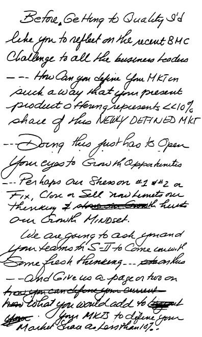
使用这种更广阔的市场视野改变了我们的增长率。它强化了我们积极向服务业扩张的决心。通用电气从1981年约1150亿美元的”市场定义”发展到今天超过1万亿美元，为增长提供了充足的空间。例如，在医疗系统方面，我们从衡量诊断成像市场的份额转变为衡量整个医疗诊断领域，包括所有设备服务、放射技术和医院信息系统。
电力系统将其服务业务主要定位于为通用电气技术提供备件和维修。按这种定义，我们在27亿美元的市场中占有63%的份额。这看起来相当不错——非常不错。通过将市场重新定义为包括整个电厂维护，电力系统在170亿美元的市场中只占10%的份额。
如果继续扩大市场定义，将燃料、电力、库存、资产管理和金融服务纳入其中，你可能进入一个高达1700亿美元的市场。而我们在其中的份额仅为1%到5%。
这次练习再次开阔了我们的眼界，激发了我们的雄心。
在接下来的五年里，我们用同样但重新焕发活力的业务组合，将通用电气的营收增长率翻了一番。我们的收入从1995年的700亿美元增长到2000年的1300亿美元。很多因素促成了这一成就，但这种新思维发挥了重要作用。我很高兴我们给克罗顿维尔的一个班级布置了一个挑战，他们走出去，从宾夕法尼亚州一位陆军上校的脑海中找到了一个绝妙的想法。
这是无边界行为(Boundaryless Behavior)的最佳体现。我们的员工确实在寻找”更好的方法”，这正是通用电气与其他企业的区别所在。你可以从业绩中衡量这一点。我们的营业利润率从1992年的11.5%上升到2000年创纪录的18.9%。在我们的工业业务中，营运资本周转率从4.4跃升至2000年创纪录的24。我们的收入达到1300亿美元，净利润近130亿美元。
无边界行为帮助我们许多普通人做出了一些非凡的事情。
当董事长是有好处的。
我最喜欢的特权之一就是挑选一个问题，进行我所说的”深度介入(Deep Dive)“。就是发现一个你认为可以有所作为的挑战——一个看起来会很有趣的挑战——然后用你职位的影响力去推动它。有些人可能会称之为”多管闲事”。
我经常这样做——几乎在公司的每个角落。
我参与了所有我直觉告诉我应该参与的事情，从X光管的质量到宝石级钻石的推出。我选择目标然后深入介入。直到我任期的最后几天，我还在这样做。
我最后一次深度介入涉及2001年5月的CNBC。
在缺席两年后，卢·多布斯(Lou Dobbs)即将重返CNN担任《财经线》(Moneyline)的主播。他的回归对我们CNBC在下午6:30到7:30时段的《商业中心》(Business Center)构成潜在威胁。在多布斯离开后，联合主播罗恩·因萨纳(Ron Insana)和苏·赫雷拉(Sue Herera)的收视率已经超过了《财经线》。4月下旬，苏打电话给我，问我能否发一封电子邮件，在团队准备迎战他5月14日回归时鼓舞士气。
CNBC一直是我的心头好，而苏从第一天起就是CNBC的中流砥柱。她一直在通用电气和我们的女性网络中提供帮助。我把她当作朋友。随着CNN大力宣传多布斯，她取消了家庭假期来迎接这个挑战。
“苏，与其发电子邮件，我为什么不去你们那里和整个团队见面呢？”
“那就这么办，”她说。
不到一周，我就坐在CNBC新泽西演播室里，一边吃着饼干喝着汽水，一边和罗恩、苏以及大约15名团队成员讨论各种想法。对我来说，这感觉就像十年前早期的群策群力(Work-Out)会议。团队提出了延长节目时长的想法，从下午6点开始，比《财经线》提前30分钟。我很喜欢这个想法以及他们提出的其他几个点子。
会议结束时，我承诺额外拨出200万美元来推广这个节目。在回去的车上，我打电话给当天刚被任命为NBC总裁的安迪·拉克(Andy Lack)。我问他能否让苏和罗恩在多布斯重新开播的那天早上上《今日秀》(Today)。然后我打电话给NBC体育总裁迪克·埃伯索尔(Dick Ebersol)，他同意在周末的NBA季后赛期间播放《商业中心》的宣传片。
到周末，NBC各部门的人，从图形设计到布景设计，都加入了战斗。
多布斯的回归肯定会吸引观众试看，但我们不会让他轻松取胜。这将是一场持久战——我们想赢得第一场战役。
当我的继任者杰夫·伊梅尔特(Jeff Immelt)在那天结束时打电话闲聊时，我不得不坦白。我告诉他我去了CNBC，又当了一回”项目经理”。从他在塑料和医疗系统部门的日子里，他就知道我有多烦人。
“杰夫，我保证这是我今天唯一一次多管闲事。再过几个月就不会再有了，然后你就可以摆脱我了。”
感谢上帝有这本书。它让我在大部分过渡期间没有去烦杰夫。
杰夫和我周日晚上一起出发去东京，所以我没能看开播首夜的对决。CNBC团队每天用电子邮件向我汇报结果。周一，也就是多布斯回归的第一晚，《商业中心》与多布斯打成平手。到周四，《商业中心》的观众人数已经大幅领先。幸运的是，我周五下午5:30左右从东京回来，正好赶上现场观看本周的最后一期节目。
罗恩和苏表现出色。团队给节目注入了新的活力。我为他们所有人感到高兴。他们赢得了第一场小规模战斗。真是太棒了！
多年来，我进行了数百次这样的”深度介入”。它们并不总是成功的，我的很多想法也从未被采纳。对我来说，满足感和乐趣在于参与其中，激发兴奋和辩论，讨论项目应该朝什么方向发展。
除了我的头衔之外，我认为我能”侥幸成功”是因为人们觉得我是在努力帮忙。我们总是有共同的目标，即使达成目标的方式不同。他们知道，如果我的想法被扔进废纸篓，我不会心怀怨恨。（编者注：你才不会呢！）
另一个我总是关注的业务是通用电气医疗。无论以何种方式，我参与这项业务长达28年。我热爱这项技术、这些人和这些客户。从事医疗相关工作总是感觉很特别。在20世纪70年代和80年代初，我是CT扫描仪和MRI机器的”虚拟项目经理”。
20世纪90年代初，我爱上了另一个项目——超声成像。在这项无创、无辐射的技术领域，GE一直是个跟随者。我确信我们可以做得更好。
从1992年开始，我开玩笑地成为了它的非官方”项目经理”。在我们决定放弃一项昂贵的收购来改善竞争地位后，我们启动了自己的内部研发工作。我请求医疗业务的CEO约翰·特拉尼绕过所有典型的汇报关系，让这个项目直接向他汇报。约翰热爱成果，他通过建立忠诚的团队来获得成果，这些团队可以攻克任何难关。
我们在一栋旧厂房里组建了团队，并对其进行了全面翻新，让他们感觉自己是赢家。公司研究实验室将这个项目列为优先事项。在项目经理退休后，我们决定从GE外部的超声行业寻找替代人选。我亲自面试候选人，向他们推销我们对超声业务的承诺——由于我们之前的几次失败尝试，许多行业专家对此持怀疑态度。
我们找到了奥马尔·伊什拉克，一位孟加拉国人，你能感觉到超声技术流淌在他的血液里。他曾在一家主要竞争对手那里工作。我们所有人都认为他正是我们需要的人，于是聘用了他。
我们开始全速前进。我确保他获得充足的资金和关注。每次我去密尔沃基访问我们的医疗系统部门时，我都会大力宣传奥马尔和超声业务，尽管它只是整体业务的一小部分。
我成了他最大的啦啦队长。他招募了优秀的人才，很多来自业内，其余的就是历史了。我们从1996年的默默无闻发展到2000年的行业第一，创建了一个高利润业务，年增长率达到20%到30%，如今年收入超过5亿美元。奥马尔成为了公司高管，我从他的成功中获得的乐趣和他一样多。
医疗领域的另一次深度参与(deep dive)与GE的X光和CT扫描机中使用的球管质量有关。这始于1993年。我刚完成一次客户走访，访问了几个城市的GE客户群体。医疗客户认为我们拥有最好的CT技术，但对我们的球管寿命抱怨连连。当我回来后，我发现我们的球管平均只能进行约25,000次扫描，不到竞争对手球管的一半。
我们的CT系统太优秀了，以至于掩盖了可能成为业务致命弱点的问题——球管。
我去了密尔沃基，与约翰·特拉尼和他的团队一起审视这个问题。在像医疗系统这样性感的高科技业务中，零部件有时会被当作二等公民。约翰带我参观了我们的球管工厂。讽刺的是，它与我们进行了所有翻新的超声研发部门在同一栋楼里。仅隔一堵墙，球管工厂却被当作弃儿对待。
为了表明我们是认真的，我们问医疗系统的制造经理是否愿意接手球管工作，直接向特拉尼汇报。他认为我们的提议太疯狂了。他是一个传统的制造业人士，已经拥有了那个制造业职位，球管生产本来就向他汇报。再多的钱或”承诺的荣耀”都无法说服他这个”球管工作”对他的职业生涯有意义。
我们很幸运。我们最终找到了合适的人选。特拉尼推荐了马克·奥内托，一位热情洋溢的法国人，当时是我们欧洲医疗系统业务的服务总经理。
我邀请他来费尔菲尔德，向他强调这份工作的重要性，以及将CT扫描次数从25,000次提高到100,000次之间无故障的必要性。我承诺他会得到完成这项工作所需的所有资源。
我们给了马克升级工厂的资金，并帮助他招募优秀人才，包括迈克·伊德尔奇克，一位工程师中的工程师，他一生都在设计飞机发动机。迈克离开了他在飞机部门的技术岗位，来担任工程经理。他和他的工程师们是改进球管的关键。在这个过程中，迈克收到了一个诱人的离开GE的邀请。马克请我介入，我花了一个周日晚上说服迈克留下。他留下了，后来成为照明业务的工程副总裁，未来有着光明的领导前景。
马克提出了”球管——系统的心脏”这个口号，以象征这个之前被忽视的零部件的重要性，他到处张贴标语来引起大家的注意。
在接下来的四年里，他每周给我发传真报告，详细说明团队的进展。马克回忆说，他收到过我的一条回复，上面写着：“太慢了，太法国式了，加快速度，否则后果自负。”马克会把这些回复塞进他的抽屉里。
其他时候，我会发便条祝贺他取得进展。马克会把这些贴在工厂里让大家看到（见对页）。
五年内，团队将球管寿命从25,000次扫描提高到接近200,000次。到2000年，利用六西格玛(Six Sigma)技术，他们推出了一种新球管，平均可达500,000次扫描，被认为是行业标准。把这个关键零部件做好，使我们能够推出有史以来销售最快的CT扫描仪——GE LightSpeed。
通过让球管成为系统的心脏，我们的团队改变了零部件业务的思维模式。每个人都从这次成功中有所收获。马克后来领导了我们医疗业务的六西格玛计划，现在是一位公司高管，负责医疗的全球供应链。
另一个明显仍在进行中的深度参与涉及我们的工业金刚石业务。1998年，GE塑料的CEO加里·罗杰斯和工业金刚石负责人比尔·伍德伯恩——要求来费尔菲尔德与我进行一次”秘密会议”。
我不知道会发生什么。GE自20世纪50年代以来一直生产工业金刚石。它们是通过在非常高的温度和压力下处理碳制成的。这些金刚石不是宝石级的，用于重工业中的切削工具和砂轮。
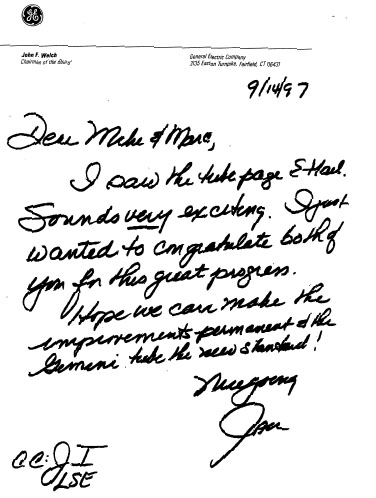
Gary和Bill带着一袋棕色天然石头和六个蓝色绒面珠宝盒出现了，盒子里装着华丽的宝石级钻石。这两个人说话都很轻柔。这一次，他们几乎是在低声告诉我，我们的科学家已经找到了一种方法，可以将地球上的棕色天然钻石转化为透明的稀有宝石，完成自然转化过程。本质上，这项新工艺将重现地球核心中数千年来形成钻石的条件，完成大自然已经开始的工作。
我对这项新业务可能创造的巨大潜在机会感到震惊和兴奋。我迫不及待地想要参与其中。说到有趣的项目——这里有重达28克拉的宝石，进入一个我们一无所知的新消费业务的挑战，还有通过我们创造的技术彻底改变一个行业的机会。
我立刻成为了Bill的头号支持者。我帮助他调配资源，在接下来的三年里参加了无数次会议，从决定产品名称到如何定价，我都提供咨询意见。
听起来很简单，对吧？
闯入诺克斯堡可能比进入这个有几百年历史的行业还要容易。由于担心我们可能会破坏宝石钻石的定价，安特卫普的老牌贸易商和批发商网络想尽一切办法把我们挤出这个行业。他们散布虚假声明，让我们的钻石看起来像是人造的，不那么受欢迎。安特卫普的抵制迫使我们从一次批发50到100颗的策略，转变为一次一两颗地卖给高端珠宝商零售。
为了启动销售，我们向员工提供折扣价的宝石钻石，他们现在每月购买量达到10万美元。我甚至向董事会成员提供了类似的优惠，希望他们在通用电气2000年代理声明中披露的购买信息能为这项”福利”带来一些宣传。
几位董事以2.6万美元到41万美元不等的价格购买了钻石。你能想到吗？在所有关于薪酬和福利的媒体炒作中，钻石购买完全没有引起注意。你唯一想要媒体关注的时候，他们却在睡觉。
在我们完整运营的第二年，我们的业务额约为3000万美元，不到原计划的三分之一。对于一个价值数十亿美元行业的突破来说，这显然不是我们所期望的。我们的团队不断提醒我要有耐心。这是一项正在进行中的工作——只是另一个我必须留给继任者的宠物项目。
另一个我将留下的想法是在2000年秋天访问日本时产生的。我多年来一直去那里，发现很难让最优秀的日本男性毕业生加入我们。我们取得了越来越多的成功，但仍有很长的路要走。
终于，我恍然大悟。我们将通用电气与日本公司区分开来的最佳机会之一是关注女性。女性不是日本公司的首选雇员，很少有人在他们的组织中取得进展。
我再次兴奋起来。幸运的是，我们有Anne Abaya，一位理想的会说日语的美国女性，在通用电气资本担任高级职位。她同意去东京担任通用电气日本的人力资源主管。我给了她一百万美元用于广告宣传，将通用电气定位为”女性的首选雇主”。
我不知道的是我们已经拥有多少人才。2001年5月，当Jeff和我在日本出差时，我们与14位高潜力女性共进私人晚餐。她们的职位从通用电气塑料日本的首席财务官、通用电气医疗系统日本的销售和营销总经理、通用电气消费金融日本的营销总监，到通用电气-东芝硅胶和通用电气医疗系统的人力资源主管。
Jeff和我从未与如此令人印象深刻的年轻群体在一起。这让我确信这个机会可以有多大。
这确实是一次很早期的深入尝试，但我知道Jeff会将其提升到新的水平。
我喜欢这些深入尝试带来的兴奋——也许比那些承受其冲击的人更喜欢。
我敢打赌，Jeff会定义他自己的深入尝试，并从我所做的那种干预中获得同样的乐趣。
“看在上帝的份上，Jack，你接下来要做什么？买麦当劳吗？”
这句话来自1986年4月我在奥古斯塔第三洞开球时，第七球道对面的四个人。在宣布收购RCA交易四个月后，我刚刚收购了华尔街最古老的投资银行之一Kidder, Peabody。
虽然那些人只是在开玩笑，但确实有其他人对我们最新的决定不太看好。至少有三位通用电气董事会成员对此不太热衷，包括两位在金融服务业务方面最有经验的董事——花旗银行董事长Walt Wriston和摩根大通总裁Lew Preston。他们与当时Champion International的董事长Andy Sigler一起警告说，这项业务与我们其他业务大不相同。
“人才每天乘电梯上上下下，随时可能离开，”Wriston说。“你买的只是家具。”
在1986年4月于堪萨斯城举行的董事会会议上，我为此进行了辩护——并一致说服了董事会。
这是一个典型的傲慢(hubris)案例。在1985年成功收购RCA和1984年收购Employers Reinsurance之后，我正处于顺风顺水的状态。坦率地说，我太自满了。虽然在内部我仍在寻找公司的正确”感觉”，但在收购方面，我认为我可以让任何事情成功。
很快，我就会意识到我走得太远了一步。
我们收购基德公司的逻辑很简单。在1980年代，杠杆收购（LBO）非常火热。GE资本已经是杠杆收购领域的大玩家，在过去三年里帮助融资收购了超过75家公司，包括杠杆收购早期的成功案例之一——比尔·西蒙和雷·钱伯斯收购吉布森贺卡公司。
我们厌倦了投入所有资金、承担所有风险，却眼睁睁看着投资银行家们拿走巨额前期费用。我们认为基德公司能让我们优先获得更多交易机会，并接触新的分销渠道，而不必向华尔街其他经纪公司支付这些高额费用。
交易完成八个月后，我们发现自己卷入了华尔街有史以来最轰动的丑闻之一。基德公司的明星投资银行家马蒂·西格尔承认，他向伊万·博斯基提供内幕股票信息，以换取装满现金的手提箱。他还承认基德公司根据据称从高盛的理查德·弗里曼那里获得的信息进行交易。他对两项重罪认罪，并配合美国检察官鲁迪·朱利安尼的调查。
结果，1987年2月12日，武装联邦警员冲进了基德公司位于纽约汉诺威广场10号的办公室。他们搜身、戴上手铐，并将套利部门负责人理查德·威格顿带出大楼。他们还逮捕了另一位前基德套利交易员蒂姆·塔博，以及高盛的弗里曼，罪名是涉嫌内幕交易。对威格顿和塔博的指控最终被撤销。弗里曼被判处四个月监禁和100万美元罚款。
虽然非法交易发生在GE收购基德公司之前，但作为新东家，我们承担了法律责任。逮捕事件发生后，我们开始调查，全力配合美国证券交易委员会和朱利安尼。调查显示公司的控制系统存在很多漏洞。基德公司董事长拉尔夫·德努齐奥与丑闻无关，但很明显西格尔被赋予了很大的自由度。
西格尔完全掌控着股票交易大厅，当他要求风险套利部门进行交易时，几乎没人会质疑。他还有一个奇怪的习惯，这最终成为他败露的原因之一。他把收到的每一张粉色电话留言条都存放在文件柜里。有了这些留言条和基德公司详细的电话记录，不难建立起西格尔交易的规律。
朱利安尼本可以吊销基德公司的执照，让它倒闭，但他希望我们解雇大部分高管。当时担任GE副董事长的拉里·博西迪花了几个周六上午与朱利安尼谈判和解方案。最终我们支付了2600万美元罚款，关闭了基德公司的风险套利部门，并同意加强控制和程序。在这一切进行的同时，拉尔夫·德努齐奥和他的几位核心成员决定离开。
就高管层而言，这让我们只剩下里斯顿警告过我们的那些”家具”。我们必须找到能够重建公司信任的人。我认为西·卡斯卡特是完美人选。他精明、诚实，是我完全信任的人。西在GE董事会任职15年，曾担任伊利诺伊工具公司董事长。
当我打电话到芝加哥告诉他让他执掌基德公司的想法时，他的第一反应并不令人鼓舞。
“你疯了吗？”他问道。
“西，先听我说。我去那边或者你来纽约，我们好好谈谈。”
几天后的三月，拉里·博西迪和我在纽约一家小意大利餐厅与他见面。西带来了一张黄色法律用纸，上面写着15条这是个坏主意的理由。他还列出了六个他认为更适合这份工作的人选。我看了看他的笔记，把它们揉成一团。
“西，我们遇到了真正的问题，你是唯一能帮我们的人，”我说。“我们必须稳定局面，让基德公司走上复苏之路。这份工作不会超过几年。你和科基会在纽约有很棒的体验。你还太年轻，不该退休。”
我可能说了更多。拉里和我真的需要他。西最终同意回家和妻子科基商量。幸运的是，她对来纽约很兴奋，西也想帮助我们。几天后他回电话同意接受这份工作。
5月14日，也就是朱利安尼撤销对威格顿和塔博起诉的第二天，西接任基德公司首席执行官兼总裁。拉里·博西迪在上午10点整通过基德公司的内部广播系统宣布了这一变动。并非所有人都欣喜若狂。《华尔街日报》的文章引用了一位未具名的基德公司高管的话：“正是我们需要的，一个优秀的工具和模具工人。”
问题之一是马蒂·西格尔不仅仅是另一个拿了钱、制造丑闻的人。他是基德公司的明星。英俊、能说会道，是公司薪酬最高的员工，也是华尔街顶尖的投资银行家之一。
媒体称西格尔为”基德公司的招牌”。基德公司的许多交易员崇拜和敬仰这个人。因为对两项内幕交易罪名认罪，西格尔支付了900万美元罚款，被判处两个月监禁和缓刑。为什么他拥有这么好的条件，却卷入博斯基和装满现金的袋子的事件，这超出了任何人的理解。
基德公司的许多员工靠西格尔的招牌生存。失去它让公司其他人的士气一落千丈。当西深入了解情况时，他发现事情并不美好。当他问起采购部门——一个制造业出身的人可能会问的问题——没人知道谁负责这个部门，也不知道它在哪里。奖金制度是临时性的。拉尔夫会和公司高层坐下来，逐一谈判他们的年终奖金。
坦白说，当我们看到奖金数字时，大多数人都惊呆了。当时，通用电气的年度奖金池总额不到1亿美元，而公司利润是40亿美元。基德公司的奖金池实际上更高——达到1.4亿美元——而这家公司的收入只有我们的二十分之一。
Si记得，在基德员工拿到奖金支票的那天，一个小时内整个地方就空了。“你开炮都打不到人，”他告诉我。他们中的大多数人过着依赖年度奖金的生活方式。这是一个与Si或我所熟知的完全不同的世界。
当Si第一次经历奖金分配时，他会要求基德的每个人列出自己当年的成就。结果总是有六个人声称自己是同一笔交易的关键人物。每个人都相信是自己促成了交易。这些态度正是问题的象征：一种理所当然的文化(entitlement culture)，每个人都高估了自己的价值。
上帝把我们空投到哪里是运气问题。这一点在华尔街体现得最为明显。华尔街上平庸的人赚的钱比地球上任何其他地方都多。当然，有一些明星，有些人确实配得上他们赚的每一分钱。但他们带着的那群人就是另一回事了。华尔街可能是世界上唯一一个10万美元加薪被视为小费的地方。
当你递给某人一张1000万美元的支票时，他们会直视你的眼睛说：“10？街对面那个人刚拿了12！”“谢谢”在基德是一个罕见的表达。
好年景时离谱的薪酬已经够糟糕了。在坏年景时更让我抓狂。那时候的说辞通常是这样的：“是的，我们今年很艰难，但你至少得给他们和去年一样多的钱，否则他们就会跳槽到对面去。”
这个地方有着完美的”我们赢、你输”的游戏规则。
当这些公司还是私有的、合伙人用自己的钱而不是”别人的钱”来运作时，华尔街肯定要好得多。分享想法和团队合作的概念完全是陌生的。如果你在投资银行或交易部门，而你的团队今年业绩不错，那么公司整体情况如何根本不重要。他们只想要属于自己的那份。
这是一个载着百万富翁的救生艇总能安全上岸、而泰坦尼克号却在下沉的地方。
Si在基德的日子很艰难。他加强了控制并雇用了一些优秀的人才。上任五个月后，1987年10月，股市崩盘。基德的交易利润消失了。基德当年亏损达7200万美元，我们不得不裁掉5000名员工中的约1000人。
对我们所有人来说，很明显基德和通用电气之间的文化差异如此之大，我本应该听取董事会中反对者的意见。我想退出，但正在寻找一种不至于血本无归的方式。我希望在出售业务之前能展示一些成果。
Si也想退出。他对这个地方起到了稳定作用，但在任职两年后，他觉得基德需要一个长期领导者。我们聘请了一家猎头公司来寻找Si的继任者。但找不到合适的人选。
Larry和我问了一位老朋友Mike Carpenter，他当时是通用电气资本的执行副总裁，是否愿意管理基德。Larry、Dennis和我在1980年底认识了Mike，当时我们正试图收购TransUnion，一家总部位于芝加哥的铁路车辆租赁公司。我们输给了Bob和Jay Pritzker，但认识了Mike，他当时在波士顿咨询集团工作，刚刚完成了对TransUnion的战略分析。
我在1983年聘请他担任通用电气的业务发展负责人。Mike是RCA交易中的重要人物，在通用电气资本做得很出色，负责我们的杠杆收购(LBO)业务。他想独当一面，并于1989年2月同意接手他知道非常艰巨的基德任务。
Si又留了几个月，帮助Mike完成过渡。Mike继续Si的努力，将诚信作为这个地方的核心价值观。他还为基德的每项业务制定了明确的战略。利润恢复了，基德从1990年亏损3200万美元，到1991年盈利4000万美元，1992年盈利1.7亿美元。
我们仍然想退出，并开始与Primerica的Sandy Weill进行谈判。我们非常接近达成一笔能让我们全身而退的交易。但它在1993年阵亡将士纪念日假期期间破裂了。那个周末的周五，Sandy和我达成了大致协议。我们都觉得在华尔街，你必须快速达成交易，如果可能的话在周末完成，在消息泄露之前，否则你很快就会失去员工并遭受重创。当时的首席财务官Dennis Dammerman在周末谈判细节，通过电话与在南塔克特岛的我保持联系。
我原本期望在阵亡将士纪念日回来与Sandy敲定交易。
事情没有按计划发展。等我回来时，很明显我们无法得到最初谈好的交易了。Sandy通过出色的收购建立了一个企业帝国，在美国商界做出了杰出的成就。我是他最大的粉丝之一。但与他谈判是一个挑战。到周一，那笔本可以让我们全身而退的交易已经被抓、挠、挑得面目全非了。
那天晚上我花了几个小时试图把它恢复到原来的样子。尝试了几次后，我发现没有希望了，就走到走廊尽头告诉Sandy：“这笔交易不适合我们。”他微笑着。我们握了手，至今仍是朋友。
Primerica交易失败后，Mike回去工作，我们保持低调。1993年利润达到2.4亿美元，情况似乎已经稳定下来——至少我是这么认为的。
1994年4月14日，星期四晚上，我正准备离开办公室开始一个长周末，这时Mike打来了一个你永远不想接到的电话。
“我们遇到麻烦了，Jack，”他说。“一个交易员的账户里有3.5亿美元的窟窿，我们查不出原因，而且他已经失踪了。”
当时我还不知道Joseph Jett是谁，但在接下来的几天里，我对他的了解远超出我的预期。Carpenter告诉我，Jett负责公司的政府债券交易部门，他通过一系列虚假交易来夸大自己的奖金。这些虚假交易人为地抬高了Kidder报告的收入。为了收拾这个烂摊子，我们不得不在第一季度的收益中计提看起来高达3.5亿美元的费用。
Mike带来的消息让我感到恶心：3.5亿美元，我简直不敢相信。
这太令人崩溃了。我冲进洗手间，胃里翻江倒海地呕吐起来。我打电话给Jane，她已经在机场等我了，我告诉她我所知道的情况，让她回家。那天晚上，我打电话给Dennis Dammerman，他当时正在Crotonville授课。
他接起电话后，我告诉他：“这是你最可怕的噩梦。”
实际上，这是我自己最可怕的噩梦。当初收购Kidder就是一个严重的错误。从一开始，它就只带来了麻烦和尴尬——现在又出了这种事。
Dennis带着一个八人团队赶到Kidder的办公室，整个周末都在通宵工作。我帮不上什么忙，因为他们在做繁琐的审计工作，核对账户余额。我守在电话旁，等待Dennis的最新消息。如果我去了那里，可能只会让他们更加焦头烂额。
到了周日下午，我必须亲眼去看看。当我到达时，Dennis和Mike说他们确信那些被报告为收益的账面记录是假的。我们还没有掌握所有事实，但距离第一季度财报发布只有两天了，他们确信我们面临着3.5亿美元的非现金冲销。
我花了好几个小时试图弄清楚，数亿美元怎么可能一夜之间消失。这看起来不可能。我们显然对这项业务了解得不够。后来我们发现，Jett利用了Kidder计算机系统中的一个漏洞。
那个周日晚上，我打电话给GE的14位业务负责人，告诉他们这个坏消息，并为发生的事情向每个人道歉。我感到非常糟糕，因为这个意外会冲击股价，伤害每一位GE员工。
我为这场灾难自责。
前一年，也就是1993年，当Jett的虚假交易占到Kidder固定收益部门近四分之一的利润时，Jett被评为Kidder的”年度人物”。我们批准了Mike给Jett900万美元现金奖金的请求，即使对Kidder来说，这也是一笔巨额奖励。通常情况下，我会深入追问这件事。我会深挖一个人怎么能如此成功，我会坚持要见见他。但我没有。
这是我的错，因为我没有像往常那样追问”为什么”。事实证明，Kidder在文化上与我们的距离，就像GE在Kidder员工眼中一样遥远。
我们业务负责人对这场危机的反应，是GE文化的典型体现。尽管当季度账目已经结算，许多人立即表示愿意出力弥补Kidder的缺口。有人说他们可以从自己的业务中额外挤出1000万、2000万，甚至3000万美元来抵消这个意外损失。虽然为时已晚，但他们愿意帮忙的态度与我从Kidder人那里听到的借口形成了鲜明对比。
Kidder的人不但不愿意出力，反而抱怨这场灾难会如何影响他们的收入。“这会毁掉一切，”一个人说。“我们的奖金泡汤了。我们怎么留住人？”两种文化及其差异从未在我脑海中如此清晰地凸显出来。我听到的只是：“这不是我干的。我从没看到过。我从没和他见过面。我没和他说过话。”似乎没有人认识任何人，也没有人为任何人工作。
这太令人恶心了。
那天晚上，我们解雇了Jett，并调离了其他六名员工。后来我回到家，告诉Jane要做好准备。我们将经历一段非常漫长、非常艰难的时期。
“媒体会来找我的麻烦。坚持住。”
媒体的报道非常残酷。我再次从王子变成了猪。在一年之内，我们多次登上《华尔街日报》头版右栏。《时代》杂志给我起了一个新绰号：“盒子里的Jack”。《新闻周刊》的一位作者声称”你能听到神坛崩塌的声音”。
《财富》杂志关于这场灾难的封面故事得出了一个荒谬的结论：Kidder的丑闻是由GE管理不善造成的。这是胡说八道。Kidder的问题仅限于Kidder内部。这完全是因为出了一个害群之马，加上内控不足。
对Kidder问题的内部调查由Gary Lynch领导，他曾是SEC执法部门的负责人，现在在Davis Polk & Wardwell律师事务所工作。在GE审计人员的大力协助下，他发现对Jett交易的监督是问题的重要组成部分。Lynch报告说，关于异常交易利润的质疑一次又一次地”被错误回答、被忽视或被回避……随着他的盈利能力增加，对Jett活动的怀疑往往被驳回或无人敢言”。
在Kidder，固定收益部门已经成为核心业务，其盈利超过了公司的总盈利。当他们发言时，公司上下都在听，很少有人质疑他们成功的基础。我们不是华尔街第一个学到这个教训的。Michael Milken和Drexel Burnham是最生动的例子，但即使是像Frank Zarb和Pete Peterson这样杰出的领导者，也曾在雷曼兄弟与交易部门的主导地位作斗争。教训就在那里等着我们去听取。我们没有听进去。
后来，SEC行政法法官认定杰特在基德公司实施欺诈时行为”极其恶劣”。法官卡罗尔·福克斯·福拉克认定，杰特故意用虚假否认以及误导性、自相矛盾的解释欺骗了他的上司、审计人员和其他人。她禁止杰特与任何经纪交易商建立关联，并命令他支付840万美元罚款。
基德公司让我们付出了多年的麻烦和一些最优秀的管理人才。到1994年6月中旬，我不得不请我的朋友迈克·卡彭特离职。这大概是我做过的最艰难的决定。迈克是一位出色的高管，他一直在努力解决杰特的问题——而这个问题并非他造成的。
他是这场丑闻中最大的受害者。媒体想要他的人头，在得到之前负面报道永远不会停止。我和他进行了一次长谈，最后我说：“除非你离开，否则这件事不会平息。”他理解了，表现得非常有风度。杰特的直接上司、基德公司固定收益部门负责人埃德·塞鲁洛在迈克离开几周后也离职了。
在迈克的位置上，我们临时调任丹尼斯·达默曼担任基德公司董事长兼首席执行官，另一位聪明的通用电气资本老将丹尼斯·内登担任总裁兼首席运营官。
四个月后，1994年10月，我们终于达成协议，以6.7亿美元加上普惠证券24%的股份出售基德公司。皮特·彼得森再次发挥了重要作用。10月初的一个周末，通用电气资本与普惠证券首席执行官唐·马龙之间的谈判破裂了。
我打电话给唐，看看能否重新把事情谈拢。唐请来了他的老朋友皮特作为这笔交易的顾问。唐和我彼此只是略有了解，所以皮特成了谈判中的关键人物。皮特、唐、丹尼斯和我很快达成了总体协议并握手确认。我随后启程进行为期十天的亚洲商务之旅，丹尼斯完成了最后的谈判。皮特给我打了几次电话，我记得有一次是在泰国凌晨3点，为了解决几个障碍。
这笔交易在大约十天内完成，我们四人之间的友谊从未动摇。
这个故事有一个还算圆满的结局。2000年年中的一个周五傍晚，就在我准备离开办公室时，皮特打来电话。
“杰克，抱歉打扰你，”他说，“但我想让你这个周末过得开心。”
皮特说他和唐已经达成协议，将普惠证券以108亿美元的价格出售给瑞士银行UBS。“我们刚刚为你赚了超过20亿美元，希望你会同意。”
“让我周末开心？”我喊道，“你让我整年都开心了！”
唐、他的团队以及几位基德公司的关键人物使这次合并取得了巨大成功。这一成功让我们在从收购基德到出售普惠证券的14年间，最终获得了每年10%的税后回报。这绝不算是财务上的成功，但结果比其他一些情况要好。
然而，无论多少钱都不能让我们愿意再经历一次那样的事情。
基德公司的经历让我刻骨铭心。企业文化确实非常重要。在1990年代末的互联网泡沫(dot.com craze)期间，通用电气资本股权投资组的几个人取得了成功——就像在客厅里做日内交易(day traders)的人一样。这些人决定，只有让他们分享用通用电气资金投资的交易中的股权，他们才会留在通用电气。
我让他们走人。有几个人确实走了，媒体给了我们一些压力，声称我们”跟不上时代”。我们不懂新经济(New Economy)。“没错！”
这让我在10月的高管会议上又有机会强调这一点：在通用电气只有一种货币：通用电气股票（如下图）。不同的业绩水平对应不同的数量，但每个人的救生筏都系在同一条船上。一种文化、一套价值观、一种货币，但这并不意味着一种风格——每个通用电气业务都有自己的个性。
出于同样的原因——巨大的文化差距——我放弃了收购硅谷高科技公司的机会，尽管它们在战略上看起来很合适。我不想让1990年代末那里发展起来的文化污染通用电气。文化和价值观太重要了。
自信与傲慢(hubris)之间只有一线之隔。这一次，傲慢占了上风，给我上了一堂永生难忘的课。
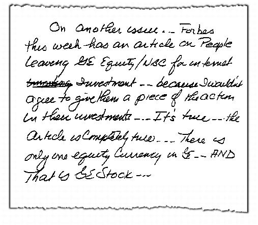
1998年6月的一个晚上，我坐在家里的沙发上，翻阅着第二天通用电气资本董事会会议的”交易手册”。其中一个待批准的提案是我在董事会任职20年来见过的最疯狂的想法之一。
这个提案是从一批被政府接管的破产金融公司手中，购买11亿美元的泰国汽车贷款。我知道这个国家正处于历史上最严重的经济衰退中，而我们是唯一还在运营的汽车金融公司。
我很快向坐在对面的简解释了这笔交易。
“提出这个方案的人甚至都没机会坐下来，”我告诉她，“我们会在五分钟或更短的时间内把他轰出会议室。”
这些会议可不是普通的董事会会议。我们每年为数十亿美元的企业提供融资，潜在交易要经过每月一次的严酷考验。会议是由大约20名通用电气内部人士进行的实战型、毫无保留的讨论，他们加起来拥有超过400年的多元化商业经验。
这群人在我们做出决定之前，已经审视并拆解了数千笔交易。虽然所有提案在提交董事会之前都经过了严格的预审——90%的提案最终会获得批准——但我们仍会将五分之一的提案退回重新审议。
当天晚上我看完泰国交易的细节后，确信这笔生意注定要进垃圾桶。这份提案是与高盛的50/50合作，将使我们成为泰国每九辆汽车中一辆的所有者。要完成这笔交易，我们需要在当地额外雇用1000名员工来承销贷款、收取还款并处理任何被收回的汽车。如果我们的投标被接受，我们将以面值45%的价格接手这些贷款。这个想法来自马克·诺博姆，他负责通用电气金融在泰国的业务。
第二天早上，我面带微笑走进费尔菲尔德的会议室。
“泰国汽车贷款？”我笑着说，“我迫不及待想看看这个。”
当我翻到马克的提案时，我皱起眉头摇了摇头。
“我们怎么可能在几个月内雇用并培训那1000人？”我问道。
马克的回答让我印象深刻。他说他的团队已经筛选了4000名求职者，面试了2000多人，并发出了1000份以中标为条件的合同。他告诉我们，汽车是泰国人最珍视的财产之一。人们宁愿放弃几乎所有其他东西——甚至睡在车里——也不愿因为还不起贷款而失去它。
经过一番讨论和马克充满激情的陈述，我们买下了这笔交易。这就是因为一个好的演示和满腔热情而改变主意的典型例子。这是我记忆中最好的例子之一。
我走进那个会议时心想，这家伙要完蛋了，走出来时却在想，这不是很棒吗？
马克是对的。在接下来的三年里，通用电气表现良好，公司在泰国建立了一个持续盈利的汽车业务。这笔交易促成了亚洲其他几笔不良资产收购，所有这些都为通用电气和当地经济带来了良好回报。
马克也做得不错。他后来成为通用电气日本公司的总裁。
这笔小小的泰国交易是数千笔交易中的一个，展示了通用电气金融如何从一个爆米花摊位变成通用电气最有价值的部门之一。1978年我作为部门主管第一次接触这项业务时，通用电气金融以50亿美元资产赚取了6700万美元。（2000年，通用电气金融赚取了52亿美元，占通用电气总收入的41%，资产超过3700亿美元。）
这种惊人增长的故事已经被讲述过很多次，以很多方式。大多数通用电气外部的人不知道的是，这种成功背后蕴含着令人难以置信的专注、创造力和企业家精神(entrepreneurship)。
1978年我看到的是巨大的机会——不仅仅是资产负债表上的收益，还有将两种原材料结合在一起所获得的额外杠杆(leverage)：资金和智慧。
由于我一生都在从事制造业，辛苦打拼只为赚取微薄利润，我简直不敢相信这”看起来”有多容易。这项业务已经证明，有很多优质抵押品的绝佳交易可以产生可观的股本回报率(return on equity)。一个例子：飞机的杠杆租赁(leveraged leases)可以获得30%或更高的回报。
我爱上了将制造业的纪律和现金流与金融创新相结合来建立伟大企业的想法。当然，我们需要合适的人来实现这一目标。
丹尼斯·达默曼总是提醒我本杰明·富兰克林的老话：“除非你收回本金，否则你赚不到利息。”幸运的是，通用电气金融已经有一种文化，坚持让做交易的人从头到尾跟进。如果你推销一笔交易，你最好确保它能成功。否则你最好能够接管资产并让它自己运转起来。
我确信机会是巨大的。我们所要做的就是把这项业务从船尾移到船头。更好的人才和更大的财务投入可以带来巨额利润。
幸运的是，我发现拉里·博西迪在打乒乓球。拉里和通用电气金融CEO约翰·斯坦格一起，是那个撼动整个部门的人。从我们在夏威夷的比赛中，我理解了他的挫败感。1978年，通用电气信贷是一个孤儿业务，处于公司主流之外。塑料业务在我早期也是一个孤儿业务。拉里想把通用电气金融推上中心舞台。作为前审计师，他来自通用电气金融内部深处，他知道需要做什么。
我在通用电气金融做的第一个重大举措是在1979年获得雷格的批准，让拉里担任首席运营官。拉里和我一样，不是一个完美的通用电气高管形象。他不是衣着光鲜的典范，从背后总能认出拉里，因为他的衬衫下摆总是飘在风中。他对夏装的理解就是把冬装配上白色腰带和闪亮的白色漆皮鞋。（随着他在商界的知名度越来越高，拉里现在已经成为《GQ》封面人物级别了。）
他一直是一个出色的家庭男人。他的妻子南希出色地抚养了他们的九个孩子。拉里也帮忙，但经常工作到深夜和周末。他们的三个孩子后来进入通用电气工作，包括保罗，他现在管理着拥有380亿美元资产的商业设备融资业务，这是我们前20大通用电气业务之一。
拉里和我在很多事情上想法一致，尤其是在人才方面。我们不仅有Session C来仔细审视人才，还有每月的董事会审查，在那里我们严格考核他们。我们看到人们在真正的压力下——每个月推销交易——在某些情况下，后来还要解释他们如何摆脱困境。
在我参与通用电气金融的23年里，我看到增长经历了四个不同的阶段：从1977年到1985年，CEO约翰·斯坦格和拉里·博西迪吸引了我们最优秀的一些人才加入通用电气金融。在1980年代后半期，博西迪（那时已是副董事长）和CEO加里·温特开始通过将通用电气金融打造成收购机器来积极发展业务。
整个1990年代，温特和运营总监丹尼斯·纳登通过引领十年前所未有的交易活动，打造了一家全球金融服务企业。如今，丹尼斯担任CEO、迈克·尼尔担任COO的团队正在扩展这一全球业务版图，并将六西格玛(Six Sigma)和数字化的严谨方法引入金融服务领域。
回顾这些年不间断的两位数增长，几乎感觉不太真实。我仍然记得当年为一笔9000万美元的GE金融交易反复纠结的情景。与那些泰国汽车贷款以及我们今天在董事会上可能承诺的数十亿美元相比，这笔交易微不足道——但在1982年可不是这样。
那时，拉里·博西迪、丹尼斯·达默曼和我正在波多黎各参加GE金融的管理会议，讨论是否应该从鲍德温联合公司收购美国抵押保险公司。我们为这笔交易——当时GE金融有史以来最大的一笔——几乎要急死了，反复考虑出价多少，担心每一个潜在的问题。
这是一个视角问题。在我们1983年决定收购美国抵押保险公司之前，丹尼斯实际上是亲自签署我们发出的每一份保险单，因为他的保险业务太小，根本无法证明购买签名机的合理性。交易完成后，我们不仅能买得起签名机，还成为了这个行业的主要参与者。
一年后的1984年，我们以11亿美元收购雇主再保险公司(ERC)，超越了那笔小小的9000万美元交易。约翰·斯坦格和丹尼斯·达默曼早在1979年就开始关注ERC，这是美国三大财产和意外再保险公司之一。这家保险公司请求我们充当白衣骑士(white knight)，以抵御康涅狄格通用保险公司不受欢迎的收购要约。当时，我们的保险资产相当小。ERC更愿意选择我们作为母公司，而不是康涅狄格通用——后者显然是行业内的大玩家。
但是，ERC选择了他们定义的完美白衣骑士——一家对保险一无所知的公司：盖蒂石油。在那个十年最臭名昭著的交易之一中，盖蒂最终被德士古收购，而德士古对再保险公司几乎没有兴趣。由于多年前已经做好了前期工作，我们能够迅速行动，将ERC纳入麾下。我与德士古CEO约翰·麦金利谈判了这笔11亿美元交易的最终细节。
那时我们仍然是小角色。交易完成后，ERC团队来到费尔菲尔德参加周日晚宴时，他们告诉我们，他们将无法达到交易中假设的年度盈利预测。
我立即想要价格折扣。我的朋友、高盛的约翰·温伯格在收购中代表我们。我打电话给正在奥古斯塔的他，把他从高尔夫球场上叫了回来，对盈利缺口大发牢骚。我让他打电话给麦金利，要求调整价格。
幸运的是，麦金利是个绅士，接受了新的数字，给了我们2500万美元的折扣。我们最终支付了10.75亿美元。今天想起来做过这件事让我有点尴尬，但当时我刚上任不久，可能有点过于好胜了。
ERC的收购是一次重大飞跃。我们在ERC取得了巨大成功，净收入从1985年的1亿美元增长到1998年的峰值7.9亿美元，直到1998年和1999年的激烈定价竞争和一连串风暴使我们偏离了轨道。2000年我们只赚了5亿美元。
我们任命罗恩·普雷斯曼为CEO来使其重回正轨。罗恩曾是审计师，建立了一个高利润的房地产业务，拥有恰到好处的智慧和纪律性组合。定价正在改善，六西格玛正在扎根，如果天气配合，罗恩会让这项业务再次蓬勃发展。
我们在1980年代所做的大部分事情，都是小步推进的。GE金融的标志之一就是对市场采取”先走后跑”的方法。在深入某个特定市场之前，我们会先试探性地涉足。
我们从来没有为GE金融制定过宏大的战略愿景。
我们不必做到第一或第二。市场是巨大的。我们需要做的就是将GE的资产负债表与GE的智慧结合起来实现增长。
在1970年代，重点是传统的消费贷款，如抵押贷款和汽车租赁，以及一些运输和房地产投资。
在1980年代，我们的重点转向更强劲的增长，同时保持对风险的严格控制。我们没有改变七十年代存在的保守风险特征。我们所做的是雇用独特的人才。我们让他们自由地寻找创意，为投资他们的创意提出论证，并实现增长。
我们确实实现了增长，交易来自四面八方。在过去20年里，GE金融爆发式地进入了一系列设备管理业务，从卡车、铁路车厢到飞机。我们抓住了自有品牌信用卡的机会。我们在房地产领域变得更加积极。我们从1977年的六个金融细分市场发展到2001年的28个不同的GE金融业务。
如果说有什么教训证明了人才的重要性，那就是这个。多年来，我们拥有一支明星阵容——拉里·博西迪、丹尼斯·达默曼、诺姆·布莱克、鲍勃·赖特、加里·温特和丹尼斯·纳登。他们每一个人后来都在公司内部或外部成为了CEO。
丹尼斯·纳登就是自主培养成功的完美例子，他1977年从康涅狄格大学毕业后直接加入公司，担任航空铁路融资的营销管理员。在接下来的二十年里，他一路晋升，成为温特的得力助手，直到1998年被任命为CEO。
我们利用工业业务的人才，将GE金融从一家纯粹的金融机构转变为一家既有交易能力又有运营技能的企业。GE金融服务目前一半的高层领导都是从工业部门成长起来的。
我们的经理们知道如何经营业务。当一笔交易出了问题，我们很少一笔勾销。我们讨厌核销(write-offs)。相反，我们会接管并自己经营。我们拥有让我们能够坚守困难资产的运营能力。
当1983年老虎国际公司的贷款出现坏账时，我们介入并成为了一家铁路车厢租赁公司。当我们的一些客机租约到期后进入疲软市场时，我们将这些飞机改装成货运飞机，并创办了北极航空——一家独立的货运航线。我们在飞机租赁领域的丰富经验促成了1993年和1994年对北极星公司的收购，以及对爱尔兰吉尼斯泥炭航空资产业务的扩展。
如今，通用电气资本航空服务公司（GECAS）管理着180亿美元的资产。
我们通过一笔笔交易——无论大小——逐步建立起通用电气资本，其中绝大多数交易都会在月度董事会会议前进行审议。公司在金融服务领域的投资一直非常谨慎。我没有在1970年代的通用电气资本风险流程上增加任何新的纪律约束——但我也没有放松这些纪律。任何超过1000万美元的股权交易，以及任何单个客户超过1亿美元的商业风险，都必须提交董事会审议。
随着公司的发展，我们从未改变过审批标准。
我几乎参与了每一笔交易，因此好的决策我有功劳，坏的决策我也有责任。我们确实在1980年代卷入了杠杆收购（LBO）热潮。在一笔杠杆收购交易中，我们于1989年为帕特里克传媒——一家广告牌公司——的收购提供了融资。这家公司有不错的现金流和合理的增长率。只有一件事让我感到不安：帕特里克是由约翰·克鲁格出售的，他是大都会传媒的负责人，也是一位著名的交易高手。
我对广告牌业务了解不多，但我知道当约翰·克鲁格在卖东西的时候，我不应该买。我在谈判考克斯交易期间认识了约翰。我很喜欢他，但我也知道他是最精明的投资者之一。我本应该跟随直觉离开。当广告牌业务在1980年代末跌入谷底时，我们接管了这家公司以避免6.5亿美元的资产减记。我们重建了这项业务，最终在1995年出售时获得了适度的收益。
我们还在1988年对蒙哥马利沃德进行了杠杆收购。这几乎是一次全垒打。我们的50/50合作伙伴伯尼·布伦南登上了《福布斯》400富豪榜，成为世界上最富有的人之一，沃德也蓬勃发展。这家零售商后来遇到了瓶颈。尽管新管理团队付出了英勇的努力，沃德还是经历了地狱般的困境，最终在2000年破产。
然而，好的交易远远超过了坏的交易，而且涉及的范围非常广泛。例如，我们进入了汽车拍卖行业。我一直喜欢这个行业，在1980年与考克斯广播公司谈判失败期间就见识过。考克斯拥有曼海姆，这是汽车拍卖行业的领导者。这是一个纯粹的服务机会，投资低、利润高。当时负责汽车租赁的埃德·斯图尔特在1980年代初开始收购小型拍卖公司。埃德最终收购了20多家汽车拍卖公司，并与福特汽车公司成立了80/20的合资企业。
拍卖会就像去跳蚤市场，在场地上搭建木制看台。流动小贩在看台上卖热狗、豆子和哈雷戴维森皮带。拍卖师以每分钟一辆的速度拍卖二手车。最终，曼海姆也是我们出售这项业务的原因。他们比我们大得多，有机会整合整个行业。我们获利后在1990年代初卖给了曼海姆。
提交给董事会的许多最佳交易——以及一些最疯狂的交易——来自加里·温特，他在1986年至1998年担任通用电气资本首席执行官期间领导了公司的强劲增长。他提出的交易富有想象力和创造性。加里不仅是一位出色的交易专家，他还有一种罕见的能力，能够告诉你如何把一笔不太好的交易变成好交易。
加里是一名训练有素的工程师，拥有哈佛MBA学位，是一位天生的谈判者。1975年，他在佛罗里达州一家房地产投资信托公司做资产重组（workout）工作时，被招募到通用电气信贷公司担任房地产融资经理。后来，他监管所有商业金融交易，并于1984年成为通用电气资本的首席运营官。1986年中期，当鲍勃·赖特离开通用电气资本首席执行官职位去执掌NBC时，拉里·博西迪让加里·温特接任。加里和拉里继续合作，共同建设通用电气资本。
到1991年，拉里想要经营自己的事业。他55岁，是副董事长，但他在通用电气已经无法再往上走了，因为我作为首席执行官还有十年任期。拉里想要一个经营大公司的机会，他通过海德思哲猎头公司的杰里·罗奇得到了这个机会。
六月下旬的一个周一早晨，拉里走进我的办公室告诉我这个消息。
“杰克，”他说，“你知道我该离开的时候到了。我不想在这里坐到职业生涯结束。有个机会出现了，我要抓住它。”
“你打算什么时候走？”我问。
“明天就会宣布。”
“所以你已经下定决心了？”我问。
“是的。我必须这么做，”他说。
这是一次充满感情的会面。我们的交情可以追溯到很久以前，从1978年我们在夏威夷一起打乒乓球、我说服他留在通用电气的时候开始。我们流了很多眼泪，互相拥抱。
然后拉里告诉我，他将成为联合信号公司的首席执行官，这是一家位于新泽西州的工业产品公司。
拉里说联合信号吸引他是因为这是一个扭亏为盈（turnaround）的机会，而且公司位于东北部，所以他不必搬家。
当罗奇后来打电话给我时，我说：“杰里，我一半的脸在哭，因为你带走了我最好的朋友和最得力的干将。另一半在笑，因为他能经营这个国家的任何公司，他值得拥有自己的舞台。”
在1990年代，加里·温特想在他所到之处都插上旗帜。他告诉他的团队不要担心一些伤痛。“我们会赢得这场战争，”他说。“你必须攻占阵地。”
尽管每家企业都在推进全球化，但没有人比GE Capital做得更有效。在欧洲经济低迷时期，Gary领导了一场大规模的扩张行动。1994年，Gary和他的团队收购了120亿美元的资产，其中超过一半来自海外。1995年，他们的步伐加快了一倍多，收购了250亿美元的资产，其中180亿美元来自美国以外。
GE Capital在全球势如破竹，收购消费贷款公司、自有品牌信用卡业务，以及卡车拖车和铁路车厢的租赁业务。
这些交易背后的故事足以写成好几本书。1995年夏天，Gary在度假期间和他的欧洲业务发展负责人Christopher Mackenzie一起开着一辆面包车穿越东欧。Christopher是个点子机器，是Gary的交易发现者。他们回来后充满热情，想在那个地区做各种交易。他们还带回了一份收购布达佩斯一家银行的提案。我们看好匈牙利，而且这家银行与GE Lighting配合得很好，后者已经是该国的主要雇主。
我们还在波兰和捷克共和国收购了银行，并利用它们进入这些市场的个人金融领域。捷克银行的交易有个有趣的插曲，因为银行的所有者还拥有一家家电分销公司和一个堆满俄罗斯电视机的仓库。在得到保证我们不会被这个捷克家电业务套牢后，我们同意了这笔交易。
这三家银行如今都在适度盈利，每年产生约3600万美元的净利润。Gary的公路之旅至今仍在带来回报。
另一个有趣的故事是Dave Nissen——全球消费金融CEO——为收购Pet Protect做推介的那次。Pet Protect是英国第二大猫狗人寿和健康保险公司。这个项目看起来就像泰国汽车贷款那类项目，似乎一到就会被否决。
1996年，Dave在演示开头说：“这条狗能打猎。”
我对宠物保险市场了解不多。我们发现这个业务每年增长30%，年保费达9000万美元。英国市场在猫狗投保比例上仅次于瑞典，分别是5%和17%，所以还有很大的上升空间。
GE Capital董事会成员兼财务主管Jim Bunt在这件事上玩得很开心。在审查这笔交易时，Jim开玩笑说，主要产品保障包括”如果狗主人突然住院的寄养费用”，但不包括”狗咬人造成的灾难性损失”。
我们批准这笔交易不是因为我们懂宠物保险，而是因为我们信任做推介的人。
这笔交易的价格是2300万美元，算是小交易。还有许多更大的交易引发了严重的质疑。1997年的一次，Nissen推介收购瑞士一家大银行的消费金融部门Bank Aufina。我犹豫了。
瑞士银行家主导着银行业世界。他们为什么会同意出售任何真正有价值的东西？这说不通。Nissen解释说，瑞士银行家是真正的银行家，他们更喜欢大交易，对全球投资银行业务更感兴趣。个人贷款和汽车金融业务对他们来说是分心之事。
我们最终在瑞士收购了两家公司。2001年，它们创造了7800万美元的利润。
这些交易是Nissen建立全球消费金融公司宏伟计划的一部分。第一笔大交易让GE Capital在欧洲获得了重要地位，那是我们1990年收购Burton Group的自有品牌信用卡业务，Burton Group是英国最大的服装零售商。第二年，Dave又增加了Harrods和House of Fraser。
在这笔交易艰难的谈判过程中，Harrods的负责人有一种苛刻而不寻常的谈判风格。当他不喜欢事情的进展时，他会离开房间，告诉大家他五分钟后回来，希望得到更好的答复。在他第十次使用这个伎俩后，Nissen和他的团队制作了一些写着大写字母的卡片，拼出”去你的”。
当Harrods的负责人回到房间时，大家举起了这些字母。他觉得很有趣，这种幽默化解了谈判中的很多紧张气氛。他们很快就完成了交易。
在Gary和Denis推动全球增长的同时，美国国内也发生了很多事情。一些更有趣的交易是由商业金融负责人Mike Gaudino带来的。我每天都在寻找想要收购的公司，而Mike则在寻找他想要拯救的公司。他总是指出，美国超过一半的公司都是非投资级的。Mike每年会带着六七家陷入困境、已经破产或即将破产的公司来到董事会。除了评估公司的领导层，Mike还深入研究我们收回应收账款和库存的能力。这是一种颠倒的商业视角——与我们习惯的完全相反。
一个很好的例子是Eatons，这是加拿大一家大型零售连锁店，1997年遇到了财务困难。当其他贷款机构不愿提供融资时，Mike寻求批准3亿美元的贷款来帮助这家零售商走出破产困境。然而，在又一次经济下滑后，这家公司最终不得不清算。Mike设法收回了我们投资的每一分钱以及所有预期回报。通过解决像Eatons这样的困境，Mike建立了很高的信誉。在过去六年中，他提交的200多笔交易中只有一笔被否决。Mike这种颠倒的方法加上严格的承保(underwriting)，使这项业务从1993年的盈亏平衡发展到2000年接近3亿美元的净收入。
加里·温特成为通用电气资本内部增长的首席布道者。他将业务拓展作为公司文化的核心组成部分。除了200多名专门负责寻找收购机会的员工外，每位通用电气资本的高管每天早上上班时都在思考潜在的交易机会。这是加里带给公司的增长型思维(growth mind-set)的一部分。《哈佛商业评论》将通用电气资本作为成功整合收购的典范，详细记录了加里和他的团队如何完成这些交易——而且数量惊人。
在1990年代，加里和丹尼斯·奈登完成了400多笔交易，涉及资产超过2000亿美元。
加里为交易而活，对他来说一切都是谈判。丹尼斯·奈登记得有一次他和加里在香港，加里走进一家商店买收音机。他和销售员讨价还价了大约一个小时才把价格压下来，带着他的战利品满意地离开了。走到街上，加里看到橱窗里同样的收音机标价比他费尽心思谈下来的价格还低，差点崩溃。
这件事让他整个周末都耿耿于怀。
加里还喜欢策划推销交易的策略。迈克·尼尔讲述了1989年他第一次向加里做董事会前汇报的经历。迈克想收购康泰尔信贷公司，一家电信设备租赁企业。在迈克整个演示过程中，加里看起来很无聊，一言不发——直到尼尔完全讲完。
“迈克，”他说，“这可能是我们听过的最糟糕的收购提案，但我们还有另一笔大而刺激的交易。是一笔我们非常看好的商用飞机交易。我们打算让你先把你的交易带到董事会上，排在我们看好的那笔交易前面。杰克很少连续否决两笔交易。你会帮我们铺路获得批准。”
迈克进去做了汇报。我们买下了他的交易。加里心仪的那笔交易反而被否决了。
我们为很多交易争论得很激烈，但加里的成功率非常高。
早在日本允许外国投资之前多年，加里就派了一个小型业务拓展团队去那里考察潜在机会。当日本经济在1990年代中期开始恶化时，该国的银行和保险业杠杆过高，充斥着不良投资。不良贷款高得离谱。他们需要新资本和新的所有权。
当日本开始对外国投资开放时，加里早期的铺垫让通用电气资本抢占了先机。
1994年的第一笔交易是收购美蓓亚，这是一家滚珠轴承公司旗下价值10亿美元的消费金融子公司。加里与时任通用电气日本负责人杰伊·拉平一起，在消费金融、保险和设备租赁领域完成了几笔创新性交易。杰伊曾是我们家电业务的律师，是完美的区域主管。他努力赢得了日本监管机构和商界的信任。他热爱日本和日本人民。他们感受到了这一点并给予回应。我访问日本时，他在家中举办的聚会让我有机会与该国许多大型企业的CEO和关键意见领袖会面。
到1998年，我们真正进入了快车道。通用电气资本团队当年又完成了两笔涉及人寿保险、消费金融和租赁的交易，使我们成为日本金融服务领域的重要参与者。
第一笔交易是2月份与东邦互助人寿保险公司达成的5.75亿美元合资企业。迈克·弗雷泽将这笔交易带到了董事会。迈克也曾是通用电气的审计师。他曾在费尔菲尔德为我工作，在全球范围内寻找最佳实践，并在1980年代初担任过通用电气日本总裁。迈克建立了一家强大的美国保险公司，将13家独立收购的公司整合成一个非常成功的整体。现在，在加里的大力支持下，他正在为自己的业务在日本插旗。
这笔交易让我非常紧张，我提出了很多反对意见。东邦是一家破产公司，收购的规模和范围让我感到不知所措。这是陌生的领域。我不了解相关法律，我想确保迈克和他的团队已经做好功课，评估了所有风险。所以我们进行了大量的反复讨论。12月期间，他多次往返东京，以满足我们和卖方的顾虑。交易在圣诞节前不久完成。
第二笔交易于1998年7月宣布，是我们以60亿美元收购莱克公司的消费贷款业务，莱克是日本第五大消费金融公司。莱克通过自动柜员机提供短期消费贷款。凭借遍布日本的600家分支机构和近150万客户，这使我们成为日本消费金融领域的重要参与者。这是一笔与一家几乎破产的公司进行的高度复杂的交易，花了近三年时间才完成。
1996年戴夫·尼森的第一次接洽被拒绝了，因为我们拒绝接管公司的负债。一年后的第二次报价也没有取得多大进展。最终，在1998年，尼森和他的团队想出了一个不寻常的结构来完成交易。我们将购买莱克的个人贷款业务，并帮助成立一家独立公司来持有莱克的其余资产，包括公司所有者购买的价值约4亿美元的艺术品。我们同意在桌面上放更多的钱——一笔业绩对赌(earn-out)——如果我们达到某些盈利目标，将给莱克的股东一些上行空间。
为了完成这笔交易，我们必须说服日本20家不同的银行对他们向莱克发放的债务进行折价。尼森的团队甚至聘请了佳士得来评估挂在莱克办公室里的毕加索和雷诺阿画作的价值。虽然我们没有购买这些精美的艺术品，但如果莱克能从出售这些和其他资产中筹集更多现金，我们在业绩对赌条款下需要支付的金额就会减少。
在将莱克交易提交通用电气资本董事会之前，尼森和他的团队与加里、丹尼斯·达默曼和首席财务官吉姆·帕克进行了八次董事会前会议，敲定了交易细节。
我很喜欢这个概念。在我们收购Lake之后，我和沃伦·巴菲特在塞米诺尔打高尔夫球时，他告诉我他非常喜欢我们刚刚在日本完成的这笔交易。我一直以为沃伦只是坐在奥马哈，精明而谨慎。我没想到他会如此全球化，但他的触角比任何人都广。
“你怎么知道Lake的？”我问道。
“这是我见过的最好的交易之一，”他说。“如果不是你们在那里，我就会拿下这笔交易。”
2001年，当通用电气金融试图参与Finova（一家金融公司）的重组时，沃伦的态度更加积极。作为Finova的主要债券持有人，沃伦正试图对这家陷入困境的公司进行债务重组。我本想和沃伦合作，但他无法与我们合作，因为他已经有了Leucadia这个合作伙伴。我们对这家公司进行了竞标。沃伦提高了报价并赢得了Finova。
这一次，我们只能在场外旁观。
加里·温特至少可以说是个怪人。你永远不知道他从哪里来，也不知道他会是什么心情。有一件事他不喜欢，那就是被监督。无论是拉里·博西迪、鲍勃·赖特还是我，任何老板都会让加里抓狂。有一个偶尔会说”不”的老板真的会让他发疯。
1998年底与加里分道扬镳是CEO继任过程中不可避免的结果。
丹尼斯·奈登（总裁）和迈克·尼尔（执行副总裁）已经准备就绪。丹尼斯在通用电气工作了21年，是一个非常有干劲的人，一位出色的承销商，拥有构建大型复杂交易的智慧。他最好的特质是他的坚韧。他可以把一笔交易做到极致。虽然加里是那个提出大创意的人，但丹尼斯始终是那个把事情做成的人。
我一直认为迈克·尼尔是通用电气金融的灵魂。与那里的大多数经理不同，他进入商界时并没有金融背景。作为通用电气供应公司的前销售经理，他必须学习这项业务——而他做到了。迈克最大的优势是他与人建立联系的方式。他很受欢迎，风趣幽默，总是准备好用一句俏皮话来化解房间里的紧张气氛。
吉姆·帕克自1989年以来一直担任首席财务官，是增长故事的关键组成部分。他判断力出色，对业务了如指掌。
丹尼斯·达默曼在他的职业生涯中曾三进三出这项业务，他让我们所有人都放心，我们有了通往通用电气金融下一代领导层的专业桥梁。
有了这个继任团队，加里和我得出结论：他不想为通用电气的下一任CEO工作。他赢得并值得获得优厚的待遇，他的离职补偿方案反映了这一点。我们还签订了竞业禁止协议。
2000年6月，保险和金融服务公司Conseco陷入了深深的困境。他们的股票在1998年暴跌33%，1999年又下跌41%，他们急需帮助。Conseco的主要股东欧文·雅各布斯和托马斯·李联合公司希望加里来拯救他们。事实上，加里是这项扭亏为盈任务的完美人选。
他终于可以当自己的老板了。
我最愉快的谈判之一就是接到雅各布斯的电话，告诉我为什么应该解除加里的竞业禁止合同。我接到雅各布斯的第一个电话，问我要多少钱才能让加里离开。
“欧文，你一定以为我是傻瓜。你想让我自己跟自己谈判？”
欧文问2000万美元够不够。
“算了吧。我不会让他走的。他太聪明、太有价值了。”
欧文打了好几次电话，提出了更高的价格，但都远远不及加里的价值。
不久之后，我接到了大卫·哈金斯的另一个电话，他是Conseco的董事会成员兼临时董事长和CEO。和欧文一样，大卫非常和蔼，试图安抚我达成交易，每次都适度提高筹码。在两天内又打了几个电话后，我们达成了协议。我同意取消竞业禁止协议，作为交换，Conseco买断通用电气对加里的所有义务，并发行1050万份认股权证，让通用电气以每股5.75美元的价格购买Conseco股票——这是协议签订时的市场价格。
这笔交易的好处是每个人都赢了。加里找到了他理想的位置，一个他是老板、他的才智能创造奇迹的地方。Conseco得到了它想要的股价反弹，而我们则可以坐在场边再次为加里加油。我们在这场游戏中有了利益关联，可以和他一起经历这段旅程。
当加里离开时，我任命丹尼斯·达默曼为通用电气金融服务公司的新董事长，他还被选为通用电气副董事长。我们将丹尼斯·奈登从首席运营官提升为总裁兼CEO。我觉得他们两人——都长期参与通用电气金融的成功——将为我们提供将业务带入下一个世纪所需的领导力。他们保持了团队的完整，通用电气金融继续发挥其强大优势。1999年和2000年，该业务收购了470亿美元的资产，其中包括美国以外的330亿美元。通用电气金融服务公司2000年的净收入增长17%，达到52亿美元，又是一个两位数盈利增长的创纪录年份。
数字并不能说明全部故事。
我最喜欢的图表是吉姆·科利卡（长期负责风险管理）在2001年6月通用电气董事会会议上展示的一张图表（如下）。它展示了通用电气金融服务公司的增长、广度和风险控制。虽然个别交易中有许多波动，但我们业务的多元化和控制风险的理念提供了持续的增长。1980年，通用电气信贷有10项业务和110亿美元的资产，仅在北美运营。到2001年，通用电气金融服务公司在48个国家拥有24项业务和3700亿美元的资产。
通用电气金融服务公司是金融与制造业融合的故事。将有创造力的人才与制造业的纪律和资金相结合，确实奏效了。
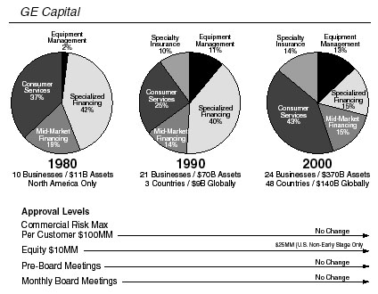
1985年12月我们宣布收购RCA时，NBC看起来状态极佳。这家电视网是一个拥有8000名员工、价值30亿美元的业务，充满活力。它即将在黄金时段收视率、深夜节目和周六早间儿童节目三个领域都拿下第一。在电视收视率最高的剧集《考斯比秀》的带领下，我们拥有20个最受欢迎电视节目中的9个，包括《家庭纽带》、《干杯》和《夜间法庭》。
我最关心的问题是：如何保持这种势头？在1986年6月完成收购之前的整合会议期间，我花了大量时间了解这项业务。
不需要天才也能意识到，NBC总裁格兰特·廷克和他的娱乐部门负责人布兰登·塔尔蒂科夫是让NBC运转的两个关键人物。是他们选中了让NBC成为第一的那些节目。
格兰特厌倦了在纽约和加州之间往返，在收购当天就告诉我他不打算留下来。格兰特认为他已经建立了一支能让NBC保持领先的领导团队。他向我保证所有人都会留下，包括布兰登。
幸运的是，我有一位老朋友唐·奥尔迈耶，他是一位独立电视制作人，我是通过他与纳贝斯克公司的罗斯·约翰逊的关系认识他的。我们曾在纳贝斯克/黛娜·肖尔公开赛上一起打过高尔夫。唐出于好意打电话告诉我，布兰登开始坐不住了。
布兰登30岁时就成为主要电视网最年轻的娱乐部门总裁。他在NBC的热门剧集中发挥了重要作用，包括《洛城法网》、《迈阿密风云》、《干杯》、《考斯比秀》、《家庭纽带》和《宋飞正传》。
我不想失去他。
我打电话邀请布兰登5月12日在纽约的Primavera餐厅与我共进晚餐。我们一见如故。他和我一样是棒球迷。我向他保证，未来会比他过去经历的任何时候都要好。一个月后，他签下了新的四年合同。有布兰登领导我们的娱乐团队，让我对GE能在电视网业务中取得成功充满信心。
那年夏天，我面试了格兰特·廷克团队中的候选人，以寻找接替他担任NBC首席执行官的人选。他们都是好人。格兰特建议我选择时任新闻部门负责人拉里·格罗斯曼。然而，拉里缺乏我所寻找的商业眼光和锐气。
我告诉格兰特，我无法选择他的任何候选人。我请他与鲍勃·赖特见面，我从一开始就觉得鲍勃是这个职位的理想人选。我安排格兰特飞到费尔菲尔德，与鲍勃和他的妻子苏珊娜共进晚餐，苏珊娜一直是鲍勃成功的重要伙伴。虽然格兰特和鲍勃彼此欣赏，但没有什么能改变格兰特想要提拔自己人的想法。
尽管如此，两个月后的8月，我任命鲍勃为NBC的首席执行官。
反应是可以预料的。人们质疑一个”灯泡制造商”怎么能经营电视网。我相信鲍勃是合适的人选。他曾与我一起在塑料、家用电器和GE金融服务公司工作，在那里他担任首席执行官。
鲍勃有很多优势。他在考克斯有线电视公司三年的工作经历，让他有能力帮助我们拓展传统电视网业务之外的领域。他的风格展现出与人才打交道所需的管理和创意技能。他也是一个慷慨的人，能把商业友谊发展到更深的层次，总是在别人遇到个人危机时第一时间伸出援手。
鲍勃和我都在享受NBC娱乐业务的成功，但前方有明显的麻烦迹象。NBC似乎停滞在过去。娱乐业务很强，但有线电视正在稳步侵蚀其观众群。新闻部门多年来一直亏损，1985年每年亏损约1.5亿美元。典型的娱乐行业特点，支出似乎过于奢侈。
NBC没有面对这些现实。
我们首先着手解决新闻部门的亏损问题。这让我们再次与NBC新闻部总裁拉里·格罗斯曼打交道。我们完全不在一个频道上。他早年曾在NBC从事广告工作，后来担任PBS总裁，1984年被格兰特招回来。
在我们关系的早期，拉里邀请鲍勃和我以及我们的妻子到他家做客，同时邀请的还有NBC的几位明星及其配偶——《晚间新闻》主播汤姆·布罗考，以及《今日秀》联合主持人布莱恩特·甘贝尔和简·波利。
格罗斯曼夫妇安排了一个美好的夜晚。
只有一个问题：那天晚上是1986年世界大赛的第六场比赛，我的红袜队对阵纽约大都会队。从六岁起，我就与红袜队同甘共苦。
这是他们终于可以在我有生之年赢得第一个世界大赛冠军的夜晚。NBC正在转播这场比赛。我怀疑拉里甚至不知道这是世界大赛期间。结果那成了红袜队历史上最悲伤的夜晚，比尔·巴克纳让球从他两腿之间滚过，红袜队最终在第十局输掉了比赛。
我对拉里对这场比赛重要性的漠视感到震惊，但他可能同样对这样一件”小事”能让我如此投入感到不解。那是一个奇怪的夜晚，但这不会是我们之间最后一次尴尬的经历。
尽管我们要求NBC新闻部削减亏损，拉里在11月的S-II预算审查会议上提出增加支出的方案，让我大吃一惊。
拉里讨厌这种会议。他认为与一些穿西装的商人讨论成本是有失身份的事。他的理念是，电视网应该以新闻诚信的名义在报道新闻时亏损。他轻蔑的态度只会加剧摩擦。会后我非常恼火。
我为此烦恼了一整夜。第二天早上，我决定直面这个问题，请鲍勃和他一起乘直升机到费尔菲尔德开会。
“拉里，我不喜欢昨天会议的进展方式。”
“你不喜欢什么？”他问。
“我不喜欢你对我们成本挑战缺乏回应的态度。”
我从未碰过他。我们相隔数英里。几个小时后，拉里看了看手表说：“杰克，我得把这事了结了。我必须回纽约，因为我要和伯格首席大法官共进晚餐。”
“拉里，如果你喜欢和伯格大法官这类人物共进晚餐，你最好赶紧把事情理顺。你为鲍勃·赖特工作。你为通用电气工作。要么控制好成本，要么走人。”
我们忍受了拉里18个月，直到他在1988年7月离开。
在他离职过渡期间，拉里和许多人一样，最终坐到了埃德·斯坎伦的沙发上。我是在RCA整合会议期间认识埃德的。他是RCA的人力资源主管，理论上这个职位让他负责NBC的人力资源，尽管NBC认为自己相当独立。我真的很喜欢他。埃德为人直率，精明能干。他在融合RCA和通用电气文化方面特别有帮助。
我想留住他，但没有与他在RCA相当的职位。我认为他是RCA最优秀的人力资源人员，觉得他能帮助通用电气与NBC建立联系。埃德住在新泽西，他只需要在洛克菲勒中心30号往下搬40层，就能接手NBC的人力资源最高职位。这个网络的知名度足以让这份工作对埃德有吸引力。
他接受了。
这对我们来说真是幸运。埃德与每个人都相处融洽，从工会领袖到荧幕明星及其经纪人。他能够弥合企业与创意之间的鸿沟。鲍勃和我在接下来的15年里与他密切合作。
NBC的成功让许多高管更难面对新现实。鲍勃邀请我在1987年3月于劳德代尔堡喜来登博纳旺蒂尔酒店举行的管理层会议上分享我的想法。这有点像六年前在韦斯特波特举行的第一次Elfun会议。
并非所有人都高兴。
我在晚餐前向鲍勃的100位高管发表讲话，告诉他们NBC必须改变并适应新世界。“有线电视正在到来，它将改变你们的生活。这个房间里太多人活在过去。太多员工靠娱乐业的肥水过活，而这趟列车不会永远运行。你们必须掌控自己的命运。如果你们不这样做，鲍勃会的。”
对于A级人才来说，这可能是一个真正的机会。
“对于那些庸才，”我说，“充其量只能勉强度日。”
不到20%的人喜欢我说的话。其余的人认为我应该被逮捕或送进精神病院。
我们花了很长时间寻找拉里·格罗斯曼的继任者。迈克尔·加特纳得到了汤姆·布罗考的大力推荐，布罗考是《晚间新闻》的主播，也是NBC的元老。迈克尔有出色的新闻资历。他曾是《华尔街日报》的头版编辑，以及《得梅因纪事报》和《路易斯维尔信使日报》的编辑。尽管性格有些古怪，但他在编辑和财务方面都有一流的声誉。他似乎是完美的人选，在很多方面确实如此。
加特纳于1988年7月加入。他的第一次管理层变动最终带来了NBC的一个巨大成功故事。
蒂姆·拉瑟特一直担任拉里·格罗斯曼的副手。加特纳想要自己的人，所以鲍勃·赖特建议拉瑟特去做一份运营工作。蒂姆曾是马里奥·科莫州长和帕特·莫伊尼汉参议员的助理，所以他从未管理过任何事务。
迈克尔给他提供了NBC华盛顿分社社长的职位。蒂姆犹豫了，担心离开纽约的权力中心去一个偏远的地方。我花了一个小时和他谈话，解释为什么他应该抓住这个机会来管理NBC新闻最大的外勤部门。这是向我们展示他作为管理者能力的机会。
蒂姆调往华盛顿对每个人来说都是双赢。他在1989年聘请凯蒂·库里克担任华盛顿记者。这是一段令人难以置信的职业生涯的开始。
凯蒂于1991年4月成为《今日秀》的联合主持人，立即受到欢迎，与早间观众建立了轻松的默契。收视率开始攀升。凯蒂一直是该节目最具辨识度的明星。令人悲伤的是，凯蒂经历了个人悲剧，她的丈夫杰伊·莫纳汉于1998年死于结肠癌。
全美国都与她一同悲伤。为了提高人们对结肠癌的认识，她甚至在全国电视上做了结肠镜检查，引起了人们对这一程序的关注。在最近的一次体检中，我的医生告诉我，由于凯蒂的努力，他接下来一年的预约都排满了。
与此同时，蒂姆·拉瑟特来自华盛顿的见解在与各分社社长为《晚间新闻》举行的每日电话会议中给迈克尔留下了深刻印象。1990年，迈克尔让他作为嘉宾参加《会见新闻界》节目。一年后，当加里克·厄特利转到纽约主持周末《今日秀》时，蒂姆接替他成为这档节目的主持人。
蒂姆在很多方面都很特别。他把《会见新闻界》带到了收视率第一的位置，可以说成为了电视上最重要的政治评论员。他的名气并没有让他飘飘然。他为人正直，到处都很受欢迎，尤其是在通用电气。他愿意去我们任何一家工厂发表演讲并与员工见面。
当我收到通知说他十年前的股票期权(stock option)将在三个月后到期时，我不确定蒂姆是否理解我们的股票期权计划。我打电话给他说：“你知道，你抽屉里的那张纸值很多钱，90天后就过期了。”
“杰克，我有信心，”他说。结果证明他比我们大多数人更有信心、更聪明，通过把期权持有到最后几天，他获得了丰厚的回报。
加特纳不仅让蒂姆获得了成功的机会，他还负责让杰夫·扎克成为《今日秀》的执行制片人。杰夫从哈佛毕业后直接加入了NBC体育部负责人迪克·埃伯索尔的团队，在首尔奥运会担任助理。迪克很欣赏他，将他收入麾下培养，并让他参与《今日秀》的工作。在埃伯索尔的鼓励下，加特纳和鲍勃决定让年仅26岁的杰夫担任《今日秀》的执行制片人。他们的信任得到了千倍的回报——在杰夫的领导下，《今日秀》取得了巨大成功。2001年，杰夫被任命为NBC娱乐部门总裁。现在我们需要他在那里再创奇迹。
迈克尔任期内并非一切完美。他对电视行业的陌生以及他的管理风格引发了一些问题。他大胆削减NBC新闻部成本结构的做法虽然受到我们的欢迎，却没有为他在新闻部赢得支持。但迈克尔遭受的最大打击是《日界线》新闻专题引发的重大争议。1992年11月17日，《日界线》播出了一期关于通用汽车皮卡安全性指控的节目。“等待爆炸？”这期节目展示了通用汽车卡车在碰撞时爆炸的画面。1993年2月8日，通用汽车起诉NBC，指控该网络在碰撞测试中造假。
内部调查发现部分报道的事实存疑。虽然简·波利没有参与通用汽车的报道，但她同意上《日界线》节目宣读一份公开道歉声明，为此事画上句号。这是团队精神的最高体现。简这样做非常了不起，她在观众中赢得的良好信誉发挥了巨大作用。
尽管迈克尔·加特纳并非直接责任人，但他始终未能从《日界线》事件中恢复过来。在3月2日辞职之前，迈克尔正在努力从ABC挖来尼尔·夏皮罗担任《日界线》的执行制片人。尼尔富有创意，为人真诚，是NBC最受欢迎的人物之一，这是他应得的。他不仅恢复了节目的公信力，还将《日界线》扩展到每周三到四个黄金时段。这档节目为NBC带来了巨大成功，尼尔也是如此。2001年，他成为NBC新闻部总裁。
《日界线》事件后，鲍勃几乎面试了新闻界所有人来接替加特纳。汤姆·布罗考再次发挥了重要作用。汤姆的声誉使他成为NBC新闻的公众形象。在30年的职业生涯中，他一直是许多年轻新闻人的导师。
汤姆不知疲倦，对自己要求极高，他对鲍勃帮助很大。鲍勃在NBC新闻的几乎每一个重大决策上都会征求他的意见。在鲍勃面试完所有显而易见的候选人后，是汤姆建议鲍勃与安迪·拉克谈谈，他当时是CBS的执行制片人。
安迪和鲍勃在多塞特酒店共进了一顿长时间的晚餐，安迪给鲍勃留下了深刻印象。晚餐后，鲍勃希望我见见他，几天后我见到了他。
我想我已经告诉过所有人，安迪是我面试过的最令人兴奋的求职者。他与我见过的任何新闻领导者都完全不同。他幽默、自然、充满活力，而且非常自信——这些特质你现在应该知道我很欣赏。
他彻底迷住了我。
谈话进行了二十分钟后，我转向鲍勃说：“我们还在等什么？”
“就这么定了，”鲍勃说。
我看着安迪问道：“你怎么不高兴得跳起来？我们给你提供的可是一个重要职位。”
他回答说：“听了那么多关于你们的事情后，我在想我能否获得足够的资源让新闻部重新振作起来。”
我们俩都向他保证，他会得到扭转新闻业务所需的一切资源。
安迪周日打电话给鲍勃接受了这份工作。他周一早上从CBS辞职，并于1993年4月初加入我们。
与此同时，鲍勃正在推进有线电视业务。
当我们收购NBC时，该网络唯一的有线电视资产是艺术与娱乐频道三分之一的财务权益。鲍勃迫切希望大规模进入有线电视业务。机会窗口正在关闭。1987年初，他聘请了汤姆·罗杰斯，此人曾在国会山担任众议员蒂姆·沃斯的助手，从事电信政策工作多年。鲍勃让汤姆负责扩展NBC的有线电视业务。他在业内人脉广泛，是出色的谈判专家和杰出的战略家。
汤姆和鲍勃首先找到了查克·多兰，他是有线电视行业的先驱。查克在长岛创立了Cablevision Systems，该公司后来成为美国最大的有线电视运营商之一。查克创办了Bravo频道，是HBO的联合创始人，还开发了一系列其他有线电视资产。鲍勃认识查克和他的家人，在1980年代初差点离开Cox去担任Cablevision的总裁。
1989年1月，他们达成了合作关系，NBC以1.4亿美元收购了查克旗下Rainbow Properties的一半股份。这笔交易让我们获得了Bravo、美国经典电影频道、美国体育频道以及遍布美国的地区体育服务的权益。NBC还将收购Court TV、独立电影频道、历史频道和Romance Classics的股份。
鲍勃与查克的交易允许任何一方将我们想从零开始开发的新想法带入合作关系。第一个重大项目是CNBC，即商业新闻网络。我从一开始就喜欢这个想法。我认为商业频道存在机会，而且与娱乐和体育不同，商业节目不涉及任何版权费用。
当时唯一的竞争对手是金融新闻网络（FNN），而且它正在亏损。查克同意以50/50的比例与我们合作CNBC，CNBC于1989年4月开播。
到1991年，我们的累计亏损接近6000万美元。商业新闻没有起色。FNN于1月份进入破产程序。当时，FNN覆盖3200万家庭，CNBC有2000万订户。查克对在破产程序中收购FNN没有兴趣。
他受够了。查克撤回了他在CNBC 50%的股份，我们独自去追逐FNN。
我们以为能以5000万美元拿下它。当西屋电气和道琼斯的开价达到6000万美元时，我们都很惊讶。竞价达到1.5亿美元时，鲍勃和汤姆·罗杰斯回来说他们还需要500万美元。现在看来很可笑，但包括我在内的通用电气团队对这个出价纠结了很久，因为它是我们初步估值的三倍。幸运的是，我们非常想要一个财经新闻网络，这额外的500万美元促成了交易。
这笔交易使我们的发行量翻了一倍多。我们留住了FNN最优秀的人才，包括罗恩·因萨纳和苏·赫雷拉——他们如今共同主持我们收视率最高的《商业中心》新闻节目，还有比尔·格里菲斯，他主持《权力午餐》。
在娱乐方面，情况就没那么顺利了。
从1988年到1992年，我们推出了几十档没有成功的节目。在这方面我毫无价值。收购NBC后，我去过一次好莱坞，看新黄金时段节目的试播集。
你应该听听那些演示和对每个试播集成功的疯狂预测。每个节目都有机会：优秀的制作人、出色的明星、获得艾美奖的这个或那个。每部喜剧都是《宋飞正传》(Seinfeld)的转世，每部剧情片都是《急诊室的故事》(ER)。
感谢上帝，这个行业有这么多乐观主义者。
事实是，我从未见过有人能预测必然成功的节目。大多数节目都失败了。大约十分之一进入开发阶段的节目能够播出，如果其中五分之一能成功就算幸运了。能出一部真正火爆的剧集，比如《宋飞正传》、《欢乐一家亲》(Frasier)或《老友记》(Friends)，概率大约是千分之一。
人们总是对我说：“你怎么能拥有NBC？你对剧情片和喜剧一窍不通。”
确实如此，但我也不会造喷气发动机或涡轮机。我在通用电气的工作是处理资源——人员和资金。我给飞机发动机设计工程师提供的帮助，和我给好莱坞选节目的人提供的帮助一样多（或一样少）。
我们在那边做得不太好。NBC过去的大部分热门节目都已经失去了动力。布兰登·塔蒂科夫于1991年离开NBC去执掌派拉蒙。鲍勃任命布兰登的副手沃伦·利特菲尔德为娱乐部总裁。沃伦接手了一个困难的局面。我们没有任何新节目，而电视广告市场陷入了二十年来最严重的低迷。NBC的利润从1989年的6.03亿美元峰值跌至1992年的2.04亿美元。
那一年我们不得不做出一个艰难的决定。1992年我们在博卡拉顿，正值决定谁来接替约翰尼·卡森主持《今夜秀》。这是一个可怕的两难选择，因为杰·雷诺和大卫·莱特曼当时都在我们的电视网。
接近午夜时分，首席财务官丹尼斯·达默曼和我走进一间会议室，正赶上一场激烈的讨论。大多数东海岸的人支持莱特曼。西海岸的人通过视频会议连线，支持雷诺。鲍勃想留住他们两个。他担心选择一个会导致另一个跳槽到CBS，而CBS在深夜时段毫无建树。丹尼斯和我坐在房间后面，听着辩论，这时鲍勃转向我们。
“你们怎么看？”
“你知道我没资格选择任何一个，”我说。“但如果我是你，我会这样做：我会选择符合通用电气价值观的人。你喜欢雷诺的价值观。他对加盟台有利。他是个好人。美国公众会发现这是真的。”
我们因为选择雷诺的决定而饱受批评。莱特曼离开我们去了CBS，在早期领先了我们。
批评者无处不在，格兰特·廷克也加入了他们。我喜欢格兰特，以为我和他关系不错。1994年，他出了一本书，把衰落归咎于鲍勃和我。
他称我任命鲍勃为电视网负责人的决定是”神风特攻队式的任务”。他说我们用杰·雷诺取代约翰尼·卡森的决定大错特错。他声称我们为FNN付出了过高的价格，并把CNBC归入死气沉沉的类别。
“除了股票行情，CNBC未能发展出任何可辨识的个性，”廷克在他的书中写道。“我一直在想杰克是否看过它，以及他对它的看法。”
格兰特评论中的恶意让我很惊讶，直到我注意到他的书是与巴德·鲁凯泽合著的。巴德是NBC前公关主管，1988年春天不太愉快地离开了。
在低迷期间，我们又增添了问题。我们与查克·多兰合作，为1992年巴塞罗那夏季奥运会制作了有线电视三频道转播(Triplecast)。只需额外支付125美元，有线电视订户就可以通过三个频道观看超过1000小时的无广告直播和录播内容。
这是一次失败。
我们曾希望在4000万能够接收该服务的家庭中签下多达300万用户。结果，我们只吸引了大约25万观众。我们遭受了沉重打击——在媒体上和财务上。仅三频道转播一项，我们就面临1亿美元的亏损。虽然鲍勃相信查克会履行承诺，但我们的会计师担心我们会承担大部分损失，尽管多兰是我们的50/50合作伙伴。
查克是最难对付的谈判者之一。他也是你能遇到的最正直的人之一。11月，我们收到了他5000万美元的支票，用于支付他在三频道转播亏损中的份额。
三频道转播只是困难时期的又一个问题。
从1992年到1994年，我们花了大量时间与所有这些问题作斗争，并寻找解决方案。这导致我们与许多公司进行了谈判，包括派拉蒙、迪士尼、时代华纳、维亚康姆和索尼。我们不是在寻求现金。我们试图整合资源，使NBC成为一个更大、更强的参与者。我们与迪士尼和派拉蒙最接近达成协议。
丹尼斯·达默曼、我们的顾问和我在1994年夏天的一个晚上，与迪士尼CEO迈克尔·艾斯纳及迪士尼团队共进晚餐并举行会议。我们初步达成共识：迪士尼将收购NBC 49%的股份，获得运营控制权，而我们保留多数股权。我的主要条件是鲍勃·赖特担任合并后的迪士尼电视制作工作室和NBC运营部门的CEO。
迈克尔同意了，丹尼斯和我都很兴奋。
然而到了第二天早上，迈克尔改变了主意，不想做这笔交易了。我们还进行了其他几次认真的讨论，包括与派拉蒙的马蒂·戴维斯的谈判，结果都一样。随着这些讨论的进行，媒体自然得到了消息。1994年全年，关于GE对NBC计划的猜测甚嚣尘上。
鲍勃·尼尔森、丹尼斯和我准备了一份分析报告，阐述为什么我们认为长期留在电视网络业务中是合理的。当时这项资产的价值大约在40亿到50亿美元之间。我们有信心能够创造出价值更高的资产，而下行风险非常有限。1994年10月，我把这份分析报告提交给董事会，建议我们继续留在这个行业。
这是我唯一一次逐一询问每位董事会成员，以获得对一项决定的支持。他们一致同意坚守NBC，我们也公开宣布了对电视网络的承诺。
与此同时，沃伦·利特菲尔德在开发新节目方面取得了成功。鲍勃决定给沃伦更多支持，聘请唐·奥尔迈耶担任西海岸运营负责人——正是这位老朋友当初向我透露了塔蒂科夫想要离开的消息。沃伦和唐是完美的搭档。沃伦深入参与节目制作的细节。唐是个直率、不拘一格、身高六英尺三英寸的大块头，在推广方面很有天赋。他经营着自己成功的制作公司，我们实际上是为了得到他而收购了这家公司。他那超凡的存在感帮助我们的伯班克工作室重新找回了自豪感。《宋飞正传》(Seinfeld)和《我为卿狂》(Mad About You)——两部在前任管理层时期开始的节目——已经开始走红。
在他们合作的18个月内，在唐的领导下，两人推出了《欢乐一家亲》(Frasier)、《老友记》(Friends)和《急诊室的故事》(ER)。转机正在到来。
新闻部门在安迪·拉克的领导下也取得了成功。1993年4月他加入时，我们在三家电视网中排名垫底。我们的新闻节目没有一个是第一名——无论是《今日秀》(Today)、《晚间新闻》(Nightly News)还是《日界线》(Dateline)。甚至有人建议我们把《今日秀》的第二个小时还给地方台，因为节目收视率太低了。
加入我们担任新闻部总裁两个月后，安迪在一次业务评审会上提出了一个他的同事们认为疯狂的想法。他想把《今日秀》从GE大楼三楼的旧演播室搬出来，在洛克菲勒中心的街道层建一个新演播室。
他认为这可以真正改变局面。
“我们可以用凯蒂·库里克和布莱恩特·甘贝尔来制造话题、吸引观众，”安迪说。“这不是个便宜的主意。要花1500万美元。如果失败了，那将是一次大失败。”
“不！不！不！”我喊道。“不会失败的。这是个好主意。干吧！”
“丹尼斯，”我说，“你能找到1500万美元的。”
18个月后，1994年秋天搬进新演播室后，《今日秀》开始腾飞。巨大的落地窗让人们可以窥视演播室内部，节目还有机会走进洛克菲勒中心，这使《今日秀》成为纽约市的旅游景点。周五早上，《今日秀》在广场上的户外现场音乐会经常吸引数千人。
另一方面，布莱恩特·甘贝尔——在《今日秀》工作了15年后——对早间节目的工作感到厌倦了。他和他的经纪人向安迪明确表示，他们想尝试新的东西。安迪和鲍勃开始考虑替代人选。解决方案就在我们身边。
比尔·博尔斯特是WNBC（NBC的纽约地方台）的总裁，他一直面临着修复《今日秀》之前5点到7点早间节目的挑战。几年前，他曾在纽约第9频道看过马特·劳尔主持一档访谈节目。
从那以后，马特的职业生涯一直停滞不前。事实上，有一天早上，马特在一辆树木修剪公司的卡车后面看到了”招聘”的牌子。他打电话去应聘了这份工作。第二天比尔·博尔斯特打来电话时，马特以为是那个园艺公司打来的。结果是博尔斯特带来了一个更好的机会——好得多的机会！
他聘请马特担任WNBC早间新闻的联合主播。1992年底马特加入电视台后不久，我在跑步机上看CNBC开始早晨锻炼后，早上6点30分在WNBC看到了他。和比尔一样，我认为马特很有荧幕魅力。他谦逊却富有魅力，看起来是布莱恩特的潜在接班人。
一年之内，我的游说行动开始了。
我不停地给安迪打电话，充当马特最好的经纪人。博尔斯特有了一个盟友。
“你觉得马特·劳尔怎么样？”
“他很棒，”安迪说。
“你什么时候给他这份工作？”
“他还需要再磨练一下。”
“哦……得了吧！快点！”
《今日秀》的执行制片人杰夫·扎克在1994年让马特试着担任新闻播报员，渐渐地，马特开始在布莱恩特休假时代班。每个人都喜欢他的风格。
CBS用一份很好的黄金时段个人节目邀约把布莱恩特从早间节目挖走了。我们都为布莱恩特感到高兴。
1997年初，马特接替了他。凯蒂·库里克和马特证明是绝佳搭档，立即吸引了早间观众。
《今日秀》在1996年成为收视率第一的早间节目，并拉大了与第二名ABC《早安美国》(Good Morning America)的差距。第二年，汤姆·布罗考使《晚间新闻》成为第一名，至今仍保持这一地位。《日界线》执行制片人尼尔·夏皮罗与联合主播简·波利和斯通·菲利普斯一起，在通用汽车事件后扭转了我们黄金时段新闻杂志节目的局面。
安迪确实让NBC新闻运转得很好。
让CNBC真正起步的人是罗杰·艾尔斯，他曾是乔治·布什总统的政治顾问，也是拉什·林博电视节目的执行制片人。鲍勃找到了罗杰，并于1993年8月聘请他担任CNBC的首席执行官。我立刻成了他的粉丝。罗杰是个锋芒毕露、容易激动的人，观点鲜明。他为CNBC打造了独特的视觉风格，策划了黄金时段的节目编排，并推出了克里斯·马修斯等名人。克里斯为华盛顿政坛风波的报道注入了活力。罗杰还从零开始创建了一个名为”美国对话”的谈话节目频道。
他将CNBC的营业利润从1993年的900万美元提升到1995年的5000万美元。MSNBC的创立——我们与微软的合资企业——间接导致罗杰离开了公司。他不喜欢我们把他的心血”美国对话”并入MSNBC的决定。1996年1月罗杰离开去创办福克斯新闻频道时，我非常惋惜失去他，而他已经把福克斯新闻频道做得非常成功。
我们用比尔·博尔斯特接替了罗杰，他曾把WNBC打造成纽约第一的电视台。比尔在CNBC屏幕上添加了股市实时滚动报价，并把我们的商业报道当作快节奏的体育赛事来处理。他用三小时的《Squawk Box》节目扩展了股市的”赛前秀”。
《Squawk Box》培养了一批个性鲜明的主持人：马克·海恩斯、乔·科南和大卫·法伯。他们即兴的插科打诨和敏锐的洞察力在开盘前就让市场热络起来。这档节目的受欢迎程度让全美几乎每位CEO都在收看。
“比赛”由CNBC第一位真正的明星玛丽亚·巴蒂罗莫报道，她经常从”现场”或交易大厅发回报道，她的独家新闻为她赢得了全国最优秀财经记者之一的声誉。
“赛后秀”《商业中心》由罗恩·因萨纳和苏·埃雷拉主持，就像ESPN的《体育中心》一样。他们把它打造成了电视上最权威的财经新闻节目。
在比尔策划每日节目编排时，我不断地给他提建议。我把《华尔街日报》和《纽约邮报》上相同商业新闻的剪报发给他，敦促他采用《纽约邮报》更直白、更有趣的风格。
毕竟，商业就是一场比赛。比尔和他的团队，在布鲁诺·科恩（前NBC纽约电视台新闻总监）的带领下，确实捕捉到了商业的竞技精神。
CNBC在接下来五年的利润增长到2000年的2.9亿美元，使其成为有线电视领域最赚钱的资产之一。
到1996年，NBC已经扭转了局面。营业利润首次突破10亿美元。《急诊室的故事》成为电视上排名第一的剧情类节目。《宋飞正传》是排名第一的情景喜剧。CNBC盈利且快速增长。美国观众认可杰·雷诺是最好的深夜节目主持人，《今夜秀》在与CBS大卫·莱特曼的深夜节目竞争中获胜。
1995年底，鲍勃·赖特得知微软正考虑投资CNN，于是开始与他们讨论可能的合作。我们一直想开发一个有线新闻频道，但从零开始成本非常高。在1995年10月的NBC战略评审会议上，鲍勃介绍了他与微软正在进行的谈判。
我们在确定与微软的合适关系上遇到了困难。一种可能是许可协议。我跳起来走到画架前，主持讨论了所有备选方案，最终在活页挂图上画出了一个类似于GE之前许多交易的合作结构。在这个结构中，我们将建立几个50/50的合资企业：一个在有线电视方面由NBC控制，另一个在互联网方面由微软控制。
汤姆·罗杰斯和鲍勃随后开始与微软团队就这个概念进行谈判。微软主要对利用我们的新闻采集业务和开发在线新闻频道感兴趣。有线电视是次要的，这使得谈判更加困难。在1995年12月宣布合作的新闻发布会前一天晚上，仍有许多分歧点。
汤姆和他的团队熬了一整夜，试图达成交易。比尔·盖茨对有线电视的担忧是最后一个悬而未决的问题。
到早上7点，距离在NBC纽约演播室举行的重大新闻发布会只有两个小时，交易仍未完成。
这次发布会计划办得很隆重，比尔将从香港通过卫星连线，汤姆·布罗考在德国。为了促成交易，鲍勃·赖特请我出面与盖茨沟通。
我给他打了电话。比尔担心他可能会在有线电视上遭受重大损失。
“杰克，”比尔问道，“你相信有线电视的预测吗？”
“我认为有线电视是稳赚不赔的，”我回答说。“你才是那个在线业务方面有艰巨任务的人。我毫不怀疑我们能把有线电视做好。”
我向比尔提供了一些有线电视业绩的保证，以保护微软免受重大损失，以防我们无法让频道进入更多家庭。
“这对我来说足够了，”他回答道。
在新闻发布会前大约40分钟，比尔·盖茨和我达成了协议。MSNBC在2000年实现盈利，MSN成为排名第一的新闻互联网网站。
MSNBC还给了NBC展示布莱恩·威廉姆斯的机会。布莱恩于1993年加入NBC，担任汤姆·布罗考《晚间新闻》的替补主播，并主持周末新闻。安迪·拉克给了他自己的节目《布莱恩·威廉姆斯新闻》。
虽然你在节目中看不太出来，但布莱恩可能是你见过的最有趣的人之一。我实际上认为他太有才华了，如果他还没有承诺做新闻主播的话，他完全可以拥有自己的深夜脱口秀节目。
鲍勃和汤姆·罗杰斯继续寻找互联网机会，进行了多项互联网公司投资，后来将其中大部分合并成一家名为NBCi的新上市公司。与当时许多其他互联网公司一样，NBCi过于专注广告收入。2000年初互联网广告市场崩溃时，其商业模式无法维持。2001年，我们回购了NBCi，并开始将其作为推广NBC其他业务的门户网站。
1997年底，鲍勃和我收到了一些坏消息。电视最火爆的黄金时段情景喜剧明星杰瑞·宋飞想要退出。杰瑞不仅是美国最受欢迎的喜剧演员，也是我最喜欢的。1997年12月，在鲍勃纽约公寓的一次周日早午餐上，我们试图说服杰瑞再多演一季。
一年前，我们经历过同样的过程，说服宋飞继续演到1997年那一季。那次，鲍勃叫我去他办公室，看我能否帮忙促成这笔交易。那是一次奇特的会面。为了说服杰瑞留下，我们给了他一套股票期权和限制性股票。杰瑞让我给他解释这些是什么意思。那是一个无价的时刻——我假装给一个既能装傻充愣又能逗人发笑的人上金融课。
我们当时说服他回来了——现在他又想在1998年那一季之前离开。这次，杰瑞带来了两位很棒的朋友，乔治·夏皮罗和霍华德·韦斯特，他们看起来就像是从中央选角公司出来的老派好莱坞经纪人。鲍勃做了一个精彩的演示，一个典型的GE式图表展示，说明杰瑞将是唯一一个在节目仍在增长时离开的电视明星。电视史上没有任何节目，甚至包括米尔顿·伯利的节目，能在第九年还在增长观众。
杰瑞想在巅峰时期离开。鲍勃争辩说杰瑞甚至还没看到巅峰。这是一个很好的说辞——我们还提出给杰瑞1亿美元的GE股票，只要他再留一年。
鲍勃和我以为我们成功了。这种感觉持续了大约十天。平安夜那天，我在佛罗里达接到杰瑞从伯班克打来的电话。
“杰克，”他说，“这对我来说是一个非常艰难的决定，我很抱歉让你失望。”
我感觉很糟糕。我知道我们失去他了。
“杰克，今天是平安夜，我在我的小隔间里。其他人都回家和家人团聚了，而我在这里写剧本。我没法再做一年了，杰克。我做不到。”
“我希望你能做出不同的决定，”我说。
我感谢他为我们所做的一切。我尊重他的选择。他想在巅峰时期离开，他做到了。
我们不仅失去了杰瑞，还”失去”了NFL。在1998年初，我们失去了自1965年以来一直拥有的美国国家橄榄球联盟的转播权。
放弃这个是一个容易的决定。NBC没有人，即使是体育部门的人，愿意接受获得转播权所需的那些数字。
当然，我最喜欢的报纸《纽约邮报》总是拿这类事情大做文章。他们在头版放了一张我的照片，显示我掉球了。
然而这不是失误。我们放弃了那笔40亿美元的八年合同，因为这些数字太疯狂了。
失去NFL导致我们在2001年与世界摔跤联盟负责人文斯·麦克马洪一起尝试推出一个新的橄榄球联盟XFL（代表”极限橄榄球”）。结果证明是一颗炸弹，而我正处于风暴中心。如果你在其他业务上搞砸了，通常可以隐藏——但在电视上不行。
每个人都在看，尤其是评论家们。
我是公司里XFL最大的支持者之一。我们周六晚上没有任何节目。文斯·麦克马洪很有才华，把WWF做得很成功。明尼苏达州州长杰西·文图拉作为解说员增添了戏剧性。我们在一些关键市场推出了八支球队的新联盟。
我们的问题是我们始终无法决定XFL是娱乐还是橄榄球。这个困境始于他们把拉斯维加斯的博彩公司带到训练营。博彩公司不想要XFL提出的那些疯狂规则，因为那会让设定赔率变得更困难。我们的体育部门认为我们需要投注线带来的可信度和宣传效果。这关上了做一些可能让XFL更具娱乐性的事情的大门。
第一场比赛收视率开局很高，但即便如此，在漫长的比赛过程中我们也流失了观众。体育记者们把我们批得体无完肤。联盟得到的唯一报道是关于XFL如何威胁职业橄榄球神圣性的评论文章。
球迷们既不喜欢娱乐性也不喜欢橄榄球本身。死亡倒计时开始了。没人看比赛。每个人都在看我们的失败。
在仅仅一个12周的赛季后，我们宣布放弃。XFL最终成了一块绊脚石。它花费了我们6000万美元，相当于几部失败的情景喜剧——而十部中有八部都不会成功。虽然不愉快，但这不是一个大的财务打击。能够这样挥棒尝试是GE规模的一大好处。你不必每次都击中。
尽管XFL失败了，迪克·埃伯索尔参与的几乎所有其他项目都成功了。迪克于1989年初加入，是鲁尼·阿利奇的门生，后者是《周一夜橄榄球》和奥运会报道的先驱。迪克接替鲁尼成为电视体育的大师。
1995年，迪克在体育节目领域完成了终极壮举。20年来首次，国际奥委会同意在没有竞争性投标的情况下将转播权授予NBC。NBC为迪克的协议奠定了基础，此前曾转播1988年首尔、1992年巴塞罗那和1996年亚特兰大的夏季奥运会。
1995年7月底，鲍勃和迪克给我打电话，提出了一个新颖的方案。迪克和他的团队想向奥委会提出一个前所未有的报价——同时获得2000年悉尼奥运会和2002年盐湖城奥运会的转播权。迪克认为，通过同时竞标两届奥运会而非一届，他们可以拿下两届奥运会的转播权，并省去通常的竞标流程。
他们想快速行动。为了获得批准，迪克安排了一次电话会议：鲍勃在南塔克特海岸附近的船上，丹尼斯·达默曼从缅因州的一间小屋加入，而我则在南塔克特的避暑别墅参与。
价格不菲：12亿美元。
“迪克，最坏的情况会怎样？”我问道。
“我们可能会亏损1亿美元，”他回答。
我们一致同意放手一搏。迪克立即乘坐通用电气的专机飞往瑞典，与国际奥委会主席胡安·安东尼奥·萨马兰奇会面，然后又飞往蒙特利尔，与奥委会电视转播权负责人迪克·庞德会面。
72小时内，他锁定了两届奥运会的转播权。
几天后，迪克开始考虑做更多。到1995年12月初，也就是四个月后，我们又获得了三届奥运会的转播权——雅典、都灵和2008年奥运会——总价23亿美元。
奥运会转播协议对NBC电视网及其有线电视业务都是一次巨大成功。在我们两个主要有线电视频道上转播奥运会，使有线电视发行负责人大卫·扎斯拉夫得以大幅延长转播时长，并将CNBC和MSNBC的覆盖范围扩展到数百万家庭。如今，CNBC已承诺覆盖超过8000万家庭，而MSNBC在1995年订户不足2500万，到2002年将覆盖超过7000万家庭。
多年来，NBC为通用电气带来了巨大收益。
我们从其财务业绩中获利，也从那份让大多数员工自豪地穿着NBC标志T恤的光环中受益。鲍勃将NBC视为不仅仅是一个电视网的远见是正确的。随着电视网观众持续流失，他在有线电视上的押注显得更加明智。CNBC是财经新闻的领导者，MSNBC在25至54岁观众群体中是全天候收视率最高的有线新闻网。尽管在我写这本书时NBC的家庭收视率已跌至第三位，但在18至49岁人群中——这是对广告商最重要的人口统计群体——它仍然是领先的电视网。
在这一切过程中，鲍勃·赖特成为电视史上任职时间最长的电视网负责人之一。他证明了一个”灯泡制造商”也能在电视行业取得巨大成功。
我童年最深刻的记忆之一，是爬上通往马萨诸塞州塞勒姆市父母二楼公寓的楼梯，听到母亲在哭泣。那是1945年，我只有九岁。我从未听过母亲哭泣。当我走进门时，她正站在厨房的熨衣板前，熨着父亲的衬衫。泪水顺着她的脸颊流下。
“天哪，”她说，“富兰克林·罗斯福去世了。”
我惊呆了。我不明白总统的去世为何会让母亲如此伤心。我完全不理解。然而18年后约翰·肯尼迪遇刺时，我也有了类似的感受，当时我目不转睛地盯着电视机。
母亲对罗斯福去世的反应源于她发自内心的信念：他拯救了我们的国家和民主制度。她把信任寄托在他和我们的政府身上。我父亲也是如此。他们都相信政府代表人民的意志，保护公民，并且总是做正确的事。
多年来，我和父母有着同样的信念，但这种信念在多次经历中受到了严峻考验。我近距离见证过政府的运作，有对有错，有好有近乎邪恶，从诚实勤勉的公务员到出于政治动机、狡诈自私的投机者。
我见过许多政府失职的小案例，但我遇到的第一个大案子直到1992年才出现。
当时我正在南卡罗来纳州佛罗伦萨参加董事会会议，我们的总法律顾问本·海涅曼把我叫到一边。他说《华尔街日报》第二天（4月22日）将刊登一篇关于埃德·拉塞尔提起诉讼的报道，拉塞尔是一位在11月被解雇的副总裁。
这不是一起普通的不当解雇诉讼。拉塞尔曾在俄亥俄州负责我们的工业金刚石业务，他指控我们与南非的戴比尔斯公司串通操纵金刚石价格。他声称自己被解雇是因为他投诉了他的上司格伦·海纳与戴比尔斯会面以操纵价格一事。
那天下午我离开了董事会会议，与本和我们的公关副总裁乔伊斯·赫根汉商议。我知道拉塞尔说的不是实话。首先，通用电气塑料业务负责人格伦·海纳为人正直无可挑剔。其次，拉塞尔是因为业绩原因被解雇的。我很清楚，因为在一个关键时刻，我曾写信给他的直属上司，告诉他拉塞尔必须离开——这一点连拉塞尔自己都不知道。
我在他1974年加入通用电气担任战略规划师后不久就认识了他。他在我们的照明业务中逐步晋升，1985年成为通用电气超级磨料公司（我们工业金刚石业务的名称）的总经理。我对这项业务非常了解，因为20世纪70年代初我在皮茨菲尔德时曾负责监管它。起初，拉塞尔在这个职位上表现出色，收入和利润都有不错的增长。但到了1990年，他遇到了瓶颈。利润从前一年的7000万美元降至5700万美元。
1991年全年，拉塞尔的问题持续存在。他的业绩没有改善，在与上司、塑料业务负责人格伦·海纳的多次审查会议中，他难以解释清楚情况。这让我很担忧。多年来我一直支持拉塞尔，当初也是我批准他晋升为超级磨料公司总经理的。
然而，在九月份，海纳和我与拉塞尔在皮茨菲尔德进行了最后一次审查会议。他完全无法回答我的问题。有一次，他说他没有准备好讨论他业务中的一些基本问题，因为他认为那不是这次会议的目的。我的财务分析师鲍勃·尼尔森也在会议现场，他和我一样对拉塞尔的回应感到惊讶。
第二天，我给格伦·海纳写了一张便条，总结了这次会议。在便条中，我写道拉塞尔”七月份出了洋相，昨天他看起来完全不在状态。底线是，拉塞尔必须走人”（见下文）。
下个月，海纳把他叫回皮茨菲尔德，并在11月11日解雇了他。
现在，拉塞尔提起了诉讼，提出了各种疯狂的指控，指责海纳有不当行为。在起草回应之前，我想起了我发给海纳的那张便条，并让人把它传真到佛罗伦萨给我。幸运的是，我的便条清楚地表明拉塞尔是因为业绩原因被解雇的，而且是我做的决定——不是海纳，而海纳才是拉塞尔捏造指控的目标。
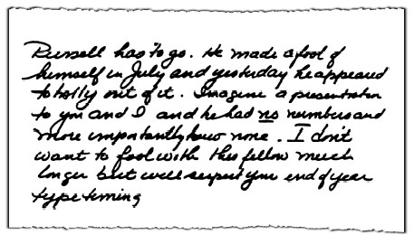
本、乔伊斯和我为《华尔街日报》及其他记者起草了一份声明。我们明确表示拉塞尔是因为”业绩不达标”而被解除职务的，他曾与通用电气的人进行过多次谈话，试图获得更好的离职补偿方案。拉塞尔在那些谈话中从未提出任何反垄断问题。他只是一个被解雇后心怀怨恨的员工。
第二天的报道带来了更糟糕的消息：拉塞尔让司法部对他的价格操纵指控展开了刑事调查。当一位《华尔街日报》记者在会后问我这件事时，我称之为”纯粹的胡说八道”。我们开始了自己的调查。我们请来了阿诺德与波特律师事务所的律师和温斯顿与斯特劳恩律师事务所的诉讼律师丹·韦伯来调查这些指控。
外部律师只用了不到六周时间就得出结论：拉塞尔没有说实话。现在我们必须说服司法部。我们与他们分享了调查结果，并整理了一份”白皮书”，记录了拉塞尔在案件证词中的12处明显失实陈述。
但这些都石沉大海。
1994年2月，本·海涅曼和我去华盛顿会见一位助理司法部长，陈述我们的立场。她对我们的论点毫不在意。她一心想要获得起诉，没有什么能阻挡她。为了避免因价格操纵被起诉，她要求我们认罪并支付罚款。
我绝不会那样做。我们没有做错任何事。政府的案件建立在一堆谎言之上。我们必须抗争到底。
大陪审团起诉通常在政府提出请求时是例行公事。在我们华盛顿会议三天后，她获得了对我们和戴比尔斯公司涉嫌串谋操纵价格的起诉。她不信任自己的下属，所以用政府的钱聘请了一位外部律师。
八个月后，10月25日，审判在俄亥俄州哥伦布市的联邦法院开始。丹·韦伯领导诉讼团队，阿诺德与波特律师事务所的比尔·贝尔和通用电气内部诉讼主管杰夫·金德勒提供了大力支持。
团队在摧毁政府案件方面做得非常出色，以至于我们根本不需要出示我们的证据。
12月5日，在听取了政府的所有证据后，乔治·史密斯法官驳回了整个案件。“政府的阴谋论完全站不住脚，”他说。“政府的论点毫无根据……即使以最有利于政府的角度来看待证据，任何理性的事实认定者”都不可能判定通用电气有罪。
拉塞尔案的明确胜利证明了为我们知道正确的事情而战是值得的。政府没有案件依据，只是对大公司有一种条件反射式的厌恶。法官几乎从不在审判中途——在被告甚至还没有陈述其立场之前——就驳回刑事反垄断案件。但这正是这里发生的事情。这场斗争花了我们三年时间，每次被提及都会带来三年的负面报道。只有事实告诉我们我们是对的。
这是政府最糟糕的表现。他们让联邦调查局对一名被解雇的员工进行窃听，却一无所获。他们花了大量时间追查虚无。他们聘请了一位昂贵的外部高手来审理此案——所有这一切都是为了让一些政府官员出名。
当然，我们并不完美。在一年前一个完全不同的案件中，政府是对的。
这件事也是从本开始的，1990年12月的一个周六下午，他打电话到我家。
“你不会相信的，”他说，“但我们有一名员工与一位以色列空军将军共同持有一个瑞士银行账户。”
我简直不敢相信自己的耳朵。如果说有一件事是我每天在通用电气都在强调的，那就是诚信(Integrity)。这是我们的第一价值观。没有什么比它更重要。我们从来没有一次公司会议，我不在闭幕词中强调诚信。
那个周六本打电话给我时，我们只知道以色列报纸上报道的内容，这些内容被我们在那边的一名通用电气员工获悉。媒体报道说，我们飞机发动机业务的一名员工赫伯特·斯坦德勒与空军将军拉米·多坦合谋，在为以色列F-16战斗机提供通用电气发动机的重大合同中挪用资金。
当这场混乱结束时，经过19个月和无数头条新闻，我们不得不处分21名通用电气高管、经理和员工，向美国政府支付6900万美元的刑事罚款和民事处罚，并在国会委员会面前作证。我们飞机发动机业务的负责人不得不站在联邦法庭上为公司认罪，一位通用电气副董事长在华盛顿待了一周，才让我们的发动机业务解除停业处分。
当我听到本的消息时，差点窒息。想象一下，你的员工名单上竟然有个骗子。斯坦德勒立即被停职，当他拒绝配合我们的内部调查时，他在三月份被解雇了。我们从威尔默、卡特勒和皮克林律师事务所聘请了一组外部律师，协助通用电气审计团队进行调查。在接下来将近一年的时间里，他们几乎住在辛辛那提——我们飞机发动机业务的所在地。他们与我们的审计人员一起，追踪了合同的每一个流程，与每一位参与者进行了交谈。在九个月的时间里，他们审查了35万页文件，询问了100多名证人。
事实证明，多坦在斯坦德勒的帮助下，设立了一家虚假的新泽西分包商。斯坦德勒的一位密友拥有这家公司，他们利用它将大约1100万美元转移到多坦和斯坦德勒共同拥有的瑞士银行账户。多坦是一个苛刻且令人生畏的客户。早在1987年，一些员工就开始对多坦交易的某些方面提出质疑。但这位空军将军把自己塑造成以色列的伟大爱国者，只是在简化繁琐的程序，而斯坦德勒说服他的上级相信没有什么可担心的。
只有一名员工为了直接的经济利益而故意违反我们的政策：斯坦德勒。把他开除很容易。问题是另外20名没有获得一分钱好处的通用电气员工对这个骗局缺乏警觉。这20个人在通用电气工作的时间加起来总共有325年。他们中的一些人整个职业生涯都是公司员工，最长的达37年。许多人有着令人印象深刻的业绩记录和出色的绩效评估。其中两人是公司高管，也是我们飞机发动机业务负责人布莱恩·罗的好朋友。
布莱恩是航空业的传奇人物，一位仍然热衷于设计发动机的先驱。布莱恩爱护他的员工。他很难决定如何处理他们。布莱恩的犹豫是可以理解的。除了最终入狱的斯坦德勒之外，其他大多数卷入此事的人都是疏忽之罪——而非主动作恶。他们没有人从这个骗局中获得个人利益。他们被骗了，或者只是粗心大意，或者忽视了警告信号。
除了斯坦德勒，其他人的参与程度都不太明确。这使得纪律处分案件对每个人来说都非常困难——尤其是对布莱恩。
这件事唯一的好处是让我发现了比尔·科纳蒂。比尔后来成为整个通用电气的人力资源主管，当时他刚刚接手飞机发动机部门的人力资源工作。他承担了纪律处分的主要工作，确保在当时的情况下每个人都得到尽可能公平的对待。所有卷入这件事的员工都收到了详细的信函，概述了我们基于内部调查的”关切”或”指控”。他们有机会在律师的帮助下陈述自己的立场——律师费由我们承担。比尔带回了对每位员工的纪律处分建议。
在两个月的时间里，比尔、布莱恩、本和我几乎每天都在电话上沟通。
坦率地说，对于坐在费尔菲尔德的本和我来说，做严厉的执法者比可怜的布莱恩容易得多，因为布莱恩的老朋友们都牵涉其中。幸运的是，我们三个人都非常尊重比尔，他能够弥合我们之间存在的任何分歧。
最终，我们解雇或要求21名涉案人员中的11人辞职。另外6名员工被降职，其余4人受到训诫。一名高管被降职，另一名辞职。
这向整个公司传递了一个明确的信息：不能只处分士兵，而让将军和上校们若无其事地继续工作。我们希望管理者知道，如果在他们的管辖范围内发生诚信违规，那就是他们的责任。高层因对诚信问题漠不关心而被处分，这在通用电气是一件大事。
在很多方面，这对我来说是一次重要的学习经历——无论是内部的纪律管理，还是与华盛顿和媒体的外部沟通。在通用电气之外，开始有人认为是竞争压力和对利润的追求导致人们作弊。有些人不愿意看清事实的本质——这只是一家拥有举报热线、申诉专员、自愿披露政策以及领导层持续强调诚信的公司中的一起孤立违规事件。
1992年7月，我前往华盛顿，在美国众议员约翰·丁格尔主持的众议院小组委员会作证。我发现丁格尔虽然强硬，但诚实公正。这是我所能期望的。在我出席国会听证会的一周前，我们已经与司法部达成和解，同意支付6900万美元。
作证并不是我做过的最愉快的事情。但我对自己的信息深信不疑——我想亲自传达它。我告诉委员会：“卓越和竞争力与诚实和正直并不矛盾。”
我补充道：“主席先生，如果我们的员工人数是一座美国城市的话，其规模可与圣保罗或坦帕相当。我们没有警察部队，没有监狱。我们必须依靠员工的诚信作为第一道防线。不幸的是，在这个案例中，这个系统还不够好。但我非常自豪的是，我们27.5万名员工中99.99%的人每天早上在世界各地起床，以绝对的诚信拼命竞争。他们不需要警察或法官。他们每天早上面对镜子时，只需要自己的良心。
“他们认为每天在全球各地与世界上最优秀的对手竞争，付出110%甚至更多的努力——去竞争、去赢得胜利、去成长——与此同时在我们所做的一切中保持本能的、坚定不移的绝对诚信承诺，这两者之间没有任何冲突。”
那天我得到了公正的听证机会。尽管我出席的原因并不光彩，但我对自己表达的观点感到非常满意。时至今日，我更加坚信诚信必须是竞争力的基础。
25年来——其中20年担任CEO——我不得不处理的最令人沮丧的问题之一就是多氯联苯(PCBs, polychlorinated biphenyls)。
多氯联苯是一种液态化学物质，1977年之前被用作电气产品的绝缘液以防止火灾。2000年12月，它成为美国环境保护署(EPA)提出的大规模哈德逊河疏浚计划的焦点。
该机构在克林顿政府执政的最后几天提出了这个计划。这实际上是一个科学常识被喧嚣声和极端观点淹没的案例——目的是推动政府惩罚一家大型跨国公司。
多年来，这场争论已经从多氯联苯演变成一场更根本的讨伐运动。极端分子抓住多氯联苯这样的问题来挑战企业的基本角色。这些人往往把公司视为没有生命的物体，认为它们没有价值观和情感。
通用电气不是由砖块和建筑物组成的。它不过是让它充满活力的人们的血肉之躯。它由生活在同一社区、孩子上同一所学校的人组成，和批评者们一样。他们有同样的希望和梦想，同样的伤痛和苦楚。
企业是有人性的。
当它们规模庞大时，就成了容易攻击的目标。当它们是赢家时，就成了更大的目标。
事实是，通用电气拥有世界上任何公司中最好的环境和安全记录之一。它有300多个制造和装配基地，几乎没有与政府在合规问题上的争议。美国近60家工厂因健康和安全合规而获得联邦监管机构授予的特别”STAR”认可。
在过去十年中，我们将17种消耗臭氧层化学物质的排放量减少了90%以上，EPA衡量的总排放量减少了60%以上。
这不是偶然发生的。我们所有的工厂经理都要经过严格的培训计划，并每年向其业务CEO和环境项目副总裁汇报业绩。每三个月，我都会收到每个业务部门环境和安全绩效的最新报告。
简而言之，我们对待环境和工人安全的方式与对待其他一切事务一样：我们设定高标准，我们衡量，我们期待卓越的结果。
我们并不完美，没有人是完美的，但我们始终努力做到最好。
钱从来不是问题。通用电气有资源做正确的事，我们知道从长远来看，做正确的事总是对我们的利润更有利。只有在这种背景下，你才能理解为什么我们在多氯联苯问题上如此坚定。
对我来说，多氯联苯的故事始于1975年圣诞节前几周的一次偶然事件，当时我在皮茨菲尔德担任集团高管。有一天我在参观锡拉丘兹的一家半导体工厂时，部门经理随口提到纽约州环境保护部(DEC)即将举行听证会。他说听证会将聚焦于他在纽约州北部的两家电容器工厂可能存在的违规行为——向哈德逊河排放多氯联苯。
我以前从未处理过多氯联苯问题，但作为一名化学工程师，我熟悉工厂排放，对这次听证会很好奇。
几天后，我在皮茨菲尔德的办公室，那天工作不忙。我决定翻山去奥尔巴尼看看情况。我坐在听证室后面，没人知道我在那里。
那天，通用电气的专家证人正在作证。他是我们聘请的一家实验室的生物学家兼副总裁，声称他的测试显示哈德逊河鱼类中的多氯联苯含量可以忽略不计。我们的专家看起来和听起来都不像专家。他似乎对自己的工作没有把握。他很难给出直接的回答。我听得越多，就越不安。
我知道如果他不能说服我，他就不能说服听证官。
听证会结束后，我打电话给我的总法律顾问阿特·普奇尼，让他从皮茨菲尔德过来。这件事现在看来足够重要，我应该留下来过夜。阿特和我请那位”通用电气专家”到我的汽车旅馆房间来。我们让他详细介绍他研究的所有手写控制表。在盘问他到凌晨2点30分后，我们确信他没有做好彻底的工作。我们觉得不能使用他的数据，也不能让听证官使用。
我真想掐死他。
第二天，我告诉我们的外部辩护律师不要依赖他的数据，并告诉听证官同样的话。两个月后，DEC听证官发布了一项临时裁决，用他的话说，“多氯联苯污染”是”企业滥用和监管失职”的结果，因为我们使用多氯联苯是合法的，而且我们有州政府颁发的排放许可证。
现在我深陷其中了。阿特和我与DEC专员彼得·贝尔进行了谈判，他后来成为美国奥杜邦学会主席。DEC听证官、哥伦比亚大学法学教授阿贝·索法尔帮助调解了这次和解。我们同意向河流清理基金支付350万美元，支持多氯联苯研究，并停止使用这种化学物质。纽约州DEC同意匹配我们的捐款，并免除我们在哈德逊河上的任何进一步责任。
伯利和我最终签署了和解协议。《纽约时报》刊登了我们两人的照片，标题是”通用电气与州政府就多氯联苯达成协议，被誉为其他污染案件的指导范例”（见对页）。《时报》引用了索法尔的话，他称这项和解”为处理共同责任情况树立了有效先例”。州长休·凯里后来表示愿意喝一杯哈德逊河的水，以证明他相信河水无害。
1976年9月8日的协议甚至要求，如果需要采取进一步行动保护公众健康和资源，州政府必须向联邦政府寻求资金。这一点在协议第三页写得非常清楚：“如果本协议提供的用于实施哈德逊河多氯联苯补救行动的资金不足以确保公众健康和资源得到保护，环境部将尽最大努力从通用电气以外的来源获取必要的额外资金以确保此类保护。这些努力将包括环境部制定行动计划以获取此类资金，包括尽快向联邦机构和/或其他资金来源提交申请。”
但事情并没有就此结束。
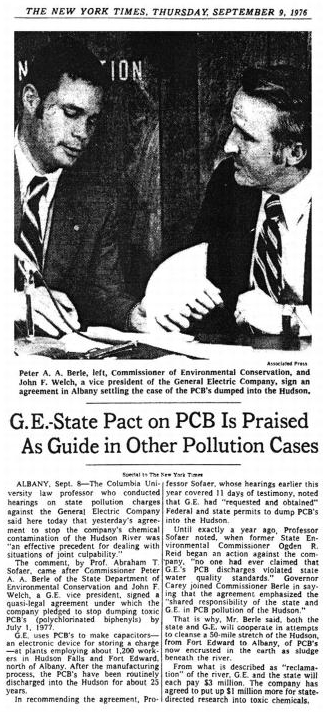
和解协议是基于动物研究达成的。我想知道多氯联苯是否会导致人类患癌，以及我们的员工是否面临风险。我知道，如果一项由公司资助的研究要具有可信度，我必须找到最受尊敬的科学家。于是我去拜访了欧文·塞利科夫博士，他当时是西奈山医学院环境医学系主任。塞利科夫在发现石棉暴露可导致肺癌后，已成为环保领域的标志性人物。他仔细听取了我的请求。我问他是否愿意去我们的工厂研究接触多氯联苯最多的通用电气员工。多年来，这些员工一直在多氯联苯中工作，接触程度很深。
我让塞利科夫完全接触我们的员工。他组建了一个研究团队，并在我们的爱德华堡工厂建立了实验室。塞利科夫首先检查了来自两家通用电气工厂的300多名志愿者。他的研究最终于1982年发表，这项研究比任何其他东西都更让我确信多氯联苯不会致癌。
塞利科夫的死亡率研究发现，在工人首次接触多氯联苯30年后，没有发生癌症死亡或其他严重副作用。通常情况下，在他研究的这个规模的人群中——如果没有重大多氯联苯暴露——预计至少会有八例癌症死亡。
其他科学家研究了大量接触多氯联苯的公用事业工人和西屋电气员工。政府国家职业安全与健康研究所(NIOSH)的亚历山大·史密斯在1982年对这项工作做了最简洁的总结。他写道：“人们会预期，如果多氯联苯暴露对人体健康有不良影响，那么在暴露最严重的群体中最容易发现这些影响。然而，已发表的职业或流行病学研究（包括我们的研究）都没有表明职业性多氯联苯暴露与任何不良健康后果有关。”
多氯联苯问题早在两次重大虚假警报发出时就已被提出。第一次是在1930年代，一种含有多氯联苯的化学混合物Halowax导致了严重的痤疮样症状，在少数情况下还因肝病导致死亡。一位研究这一事件的哈佛科学家最初报告说，多氯联苯是该混合物中毒性最强的成分。
然而，在进一步研究后，他于1939年更正说多氯联苯”几乎无毒”。不幸的是，他的更正几乎没有得到认可。近40年后的1977年，国家职业安全与健康研究所的一份政府报告指出，Halowax的经历”一直被错误引用”。
即使在今天，记者打电话来说他在这些早已被科学家和政府否定的旧Halowax事件中发现了一些新的”爆炸性证据”，这种情况并不罕见。
另一次虚假警报是1968年在日本发生的油症(Yusho)事件。约1000人在烹饪中使用一种从米糠中提取的植物油后，出现了严重的痤疮和其他症状。当在油中检测到多氯联苯时，这一事件被称为”多氯联苯油病”。
然而，日本科学家后来的分析发现，该油还含有高浓度的另外两种氯化化学物质，这两种物质都是多氯联苯的高温副产物。他们还检查了日本电气工人，发现他们血液中的多氯联苯含量高于油症患者。但这些工人并没有生病。当科学家给猴子注射多氯联苯和这些不同的化学物质时，他们得出结论：是这些其他化学物质——而不是多氯联苯——导致了油症事件。
正是这些虚假警报促使美国研究员雷纳特·金布罗博士为美国政府进行了首批关于多氯联苯的大鼠研究之一。金布罗博士发现，喂食大剂量多氯联苯的大鼠肝脏肿瘤增加。1970年代中期，她在疾病控制与预防中心工作时深度参与了这项研究，后来又在环保署工作。就像1975年我找塞利科夫博士一样，我希望找一位公认具有无可挑剔的诚信和资历的科学家再次研究多氯联苯。这一次，在1992年4月，我们请金布罗博士承担这项任务。
在公司内部，我们的PCB工作由史蒂夫·拉姆齐领导，他曾是司法部环境执法部门的负责人，现在负责通用电气的环境和安全运营。他和通用电气的科学家史蒂夫·汉密尔顿博士知道，批评者仍然会对通用电气资助的研究持怀疑态度。他们成立了一个顾问小组，对金布罗及其他研究进行同行评审。该小组由美国政府和学术研究人员组成，由国家癌症研究所前负责人阿瑟·厄普顿博士领导。
金布罗研究了1946年至1977年间在哈德逊瀑布和爱德华堡两家通用电气工厂工作过的几乎所有人。私家侦探通过工资记录和旧电话簿追踪到了其中一些人。死亡证明也被仔细检查。共有7,075名现任和前任员工参与了这项研究。
1999年，金布罗博士发布了一份引人注目的报告。我们工厂员工因各类癌症导致的死亡率等于或显著低于全国和地区人口的平均水平。
在最终决定之前，作为对金布罗工作审查的一部分，环保署请南加州大学诺里斯综合癌症中心的一位流行病学家发表意见。在给环保署风险方法组负责人的信中，托马斯·麦克博士这样说道：“我发现金布罗的论文设计合理、分析恰当、解读公正。随访工作完整……我的最终结论是……论文中的总结陈述是恰当的。我认为降低PCB的优先级是合适的。”
我们之所以知道麦克博士的意见，是因为我们通过信息自由法申请从环保署的档案中获得了它。他的最后一句话很能说明问题。“我确信这对你们来说并不是特别有用，但这是我能做到的最好的了。”
我怀疑如果我们没有利用法律从环保署那里挖出这份文件，它永远不会见天日。
在这场旷日持久的争议中，通用电气被描绘成一家冷漠无情的大企业，从纽约州哈德逊瀑布和爱德华堡的工厂”倾倒”PCB。
事实是，我们从未”倾倒”过PCB，我们也从未生产过它们。它们的使用是由消防和建筑规范规定的，因为它们解决了电气设备中长期存在的问题。之前的绝缘材料会着火并可能爆炸。PCB被视为一种救命的化学物质。纽约州批准了我们的排放并为此向我们颁发了许可证。
那些以PCB为借口批评我们的人怎么说？
首先，他们说通用电气拥有比任何其他公司都多的超级基金(Superfund)场地。（1980年，国会通过了一项法律来处理过去废物处置场地的清理工作。这项法律被称为超级基金法案。）言下之意是我们做错了什么。我们确实有大量这样的场地，确切地说是85个。但这个数字完全与我们的历史和规模有关。通用电气成立于1892年，在世界各地拥有比任何其他公司都多的工厂。像大多数其他公司一样，我们合法处置废物，在需要时获得政府许可。
在大多数超级基金场地，通用电气对那里的废物承担的责任不到5%。其余责任由数十个其他方分担，包括市政当局、其他公司和废物运输商。通用电气认真对待这些场地的责任。在过去十年中，我们在清理工作上花费了近10亿美元。
批评我们拥有这些场地就像批评某人有白头发一样。这与品格无关，只与年龄有关。
另一个常见的抱怨是，我们在挑战超级基金法，以便逃避清理义务。是的，我们确实对该法律的一部分提出了挑战。美国人习惯于在法庭上为自己辩护。从交通违规到谋杀案都是如此。
但当环保署发布超级基金命令时，情况就不是这样了。根据法律，你实际上只有一个选择：按照机构的要求去做，否则就会面临后果。否则你将面临三倍赔偿和每日罚款。该法律赋予环保署发布无限范围命令的权力。在被命令执行工作之前，你没有听证会。你要等很多年后才能获得听证会，而且只有在环保署选择告诉你工作完成时才行。
这是一部先开枪后问问题的法律。
我们认为这是错误的。我是一名化学工程师，不是宪法律师，但我无法理解这在我们的宪法下为什么有任何意义。它剥夺了你正当程序(due process)的基本权利。环保署正在他们的疏浚提案中使用这项法律。
今天，环保署表示哈德逊河可以安全地用于游泳、划船、涉水，并可作为饮用水源。秃鹰和其他野生动物在哈德逊河谷繁衍生息。政府的疏浚提案基于一个夸张的风险评估：
如果一个人每周吃半磅鱼，持续40年，环保署声称这个人患癌症的风险可能增加千分之一。换句话说，你必须每年吃52顿鱼，持续四十年，风险才可能增加千分之一。为什么理性的头脑不能得出这样的结论：这种风险实际上比呼吸还低？
不要忘记，河里的鱼已经被禁止食用二十年了，而且自1977年以来，水和鱼中的PCB含量已经下降了90%。超过20项研究——大多数完全独立于通用电气——表明PCB与癌症之间没有联系。归根结底，当老鼠和人类都暴露于PCB时，发生在老鼠身上的事情并不会发生在人类身上。鱼中的含量现在已降至百万分之三到八。百万分之二是美国食品药品监督管理局认为可以在鱼市安全销售的水平。
想想环保署提案的规模有多大。该机构提议从哈德逊河中清除80亿磅沉积物，以处理大约10万磅的多氯联苯(PCBs)。这需要每天24小时、每周六天、每年六个月的疏浚作业。大约50艘船只和驳船必须全天候在河中作业，还需要数英里的管道来输送多氯联苯。
环保署提议沿河建造工厂来干燥泥浆，这些泥浆将由数万辆卡车或火车车厢运走。在环保署清除沉积物后，他们还提议向河中回填20亿磅的沙子和砾石。潜水员还必须补种因疏浚而被破坏的100万株水生植物。
做完这一切后，疏浚并不能清除哈德逊河中的多氯联苯。它会导致被掩埋的多氯联苯重新悬浮，顺流而下。
想象一下，如果有人提出一个商业计划，要从哈德逊河中疏浚任何东西。破坏河岸。毁坏生态系统。砍倒树木，拓宽穿过农田和后院的道路，以便运走他们想要的东西。
这将是一场环境灾难。
为什么有人要破坏哈德逊河？环保署自己在1984年就否决了疏浚方案，称其可能对生态系统造成毁灭性影响。从那时起什么都没有改变，除了政治——而鱼类中的多氯联苯含量已经降低了90%。
通用电气已经在研究、调查和清理上花费了超过2亿美元。我们已将旧设施下基岩中渗出的多氯联苯从每天5磅减少到3盎司。我们认为现在有技术可以将每日渗漏量降至零。源头控制加上河流的自然沉积作用，可以将鱼类中的多氯联苯降低到与疏浚相同的水平，而不会造成重新悬浮——也不会破坏河流。
环保署提案令人困惑的一点是，它没有分析是否存在破坏性更小、干扰更少的替代方案。
这不是钱的问题。我们愿意花费任何必要的费用来正确完成这项工作。
为了向上哈德逊地区的人们讲述这个故事并解释我们为什么反对疏浚，我们在信息宣传活动上花费了超过1000万美元。这也引发了争议。对于宣传活动中的信息本身几乎没有争议。活动人士认为我们应该保持沉默，按要求行事。
我们在传播事实方面取得了一些进展。民调显示，从华盛顿县到达奇斯县的上哈德逊地区居民以超过三比一的比例反对环保署的疏浚提案。超过60个上哈德逊河地方政府和组织反对疏浚。环保署的最终决定应该考虑那些受其提案影响最大的人的意见。
不幸的是，这个问题已经不再是关于多氯联苯、人类健康和科学了。这不是关于什么对哈德逊河最好。这是关于政治和惩罚一家成功的公司。
你真的相信，如果我们认为多氯联苯正在伤害任何人，我或我的同事会采取这些立场吗？绝对不可能！
没有什么比公司的诚信更重要。它是任何组织中第一位也是最重要的价值观。它不仅意味着人们必须遵守法律的条文和精神，还意味着做正确的事，为你认为正确的事而奋斗。
在多氯联苯问题上，我们已经确信它们不会伤害我们的员工或邻居。我们已经花费数亿美元，运用最好的科学，以最具生态敏感性的方式清理我们的场地和哈德逊河——我们将继续投入任何必要的资金。
自从那天我看到母亲为富兰克林·罗斯福的去世而哭泣以来，我见过很多事情。是的，我对政府变得持怀疑态度——希望不是愤世嫉俗。只有一家具有高度诚信和资源来为正确的事情而战的公司，才能承担得起与政府对抗。
幸运的是，我们两者兼备。
如果你喜欢商业，你一定会喜欢通用电气。
如果你喜欢创意，你一定会爱上通用电气。
这是一个创意可以自由流动的地方，流经20多个独立业务部门和30多万名员工。
无边界行为(Boundaryless behavior)让创意可以来自任何地方。我们通过一系列相互衔接的运营会议，将这种自由奔放的风格制度化。我们可能正在进行电力系统的Session C(人才评估会议)经理评审，就有人提出了在匈牙利采购的想法。
第二天我们在医疗部门，炫耀电力部门刚刚在匈牙利做的事情。不知不觉中，他们在东欧又有了新动作。这很疯狂，有时很幽默，而且很随意。净效果是强大的。最佳实践和最优秀的人才总是在各业务单元之间流动，推动我们的业务发展。实际上，无边界行为为我们提供了一种以学习为核心的”社会架构”。
在1990年代，我们推行了四大举措：全球化、服务、六西格玛(Six Sigma)和电子商务(E-Business)。
每一项举措都始于一个较小想法的种子。一旦进入运营系统，它就有机会成长。我们的四大举措蓬勃发展。它们是过去十年我们加速增长的重要组成部分。
这些不是”月度风潮”。
在通用电气，我们将举措定义为能够吸引所有人的事情——足够大、足够广、足够通用，能够对公司产生重大影响。举措是持久的，它改变组织的根本性质。无论来源如何，我都成为了啦啦队长。我以一种近乎疯狂的热情和执着跟进所有这些举措，常常接近狂热的边缘。
各种举措来自四面八方。全球化源于保罗·弗雷斯科对它的热情。产品服务的加速发展，是克罗顿维尔培训班建议我们更广泛地定义市场以实现更快增长之后的结果。六西格玛(Six Sigma)源于1995年的一次员工调查。虽然员工们认为我们的质量还可以，但他们相信可以做得更好。而电子商务的到来，可以说是比较晚的，因为它已经无法被忽视。我们跳入了一场自己并不理解的革命中，边做边学。我们相信我们的运营系统会教会我们这一切。
要让这些举措奏效，需要高层全身心投入的热情承诺。除了热情之外，还需要大量的严格执行。我们不仅把最优秀的人才放在每个举措上，还对他们进行培训、考核，并报告他们的成果。最终，每个举措都必须培养人才并改善财务业绩。
每个业务的领导者都必须成为倡导者——胆怯和理性的倡导是行不通的。他们确保我们让A级人才来领导每一项举措。我们确保奖励——加薪、股票期权授予，以及在公司会议上的榜样表彰——都是高度可见的。
组织通过观察谁获得了领导任命来判断一项举措的重要性。这一点对通用电气的成功至关重要，尤其体现在六西格玛上。如果我们没有得到最优秀、最聪明的人才，它可能会被视为又一个”质量项目”而已。
我们在一月份的博卡会议上、每季度的CEC会议上、四月份的人力资源评审会上、七月份的规划会议上、十月份的高管会议上，以及十一月份的运营计划会议上，不断强调我们所有的举措。
始终有持续不断的跟进。
我们利用年度员工调查来了解这些举措在组织深处的落实程度。我们从1995年开始匿名调查1500名员工，如今已扩大到16000人。我们用这项调查来帮助确定方向——同时也作为一个”废话探测器”。调查直接涉及关于举措的问题——我们的信息是否传达到位。
例如，当我们在1995年推出六西格玛时，我们询问员工是否同意这一说法：“该业务采取的行动清楚地表明质量是首要任务。”我们700名高级管理人员中有19%表示不同意。到2000年，这一比例下降到8%。1995年，在我们3000人的高管群体中，有四分之一表示不同意。五年后，这个数字下降到9%。
让举措成功的关键在于专注和充满热情的承诺。鼓点必须持续不断。每一个领导行动都必须展示对举措的全力投入。
这些举措的影响体现在了应该体现的地方——我们的经营业绩上。过去五年，我们的营收增长率翻了一番，营业利润率从1995年的14.4%提高到2000年的18.9%。
通用电气一直是一家全球贸易公司。
19世纪末，托马斯·爱迪生在伦敦霍尔本高架桥安装了3000盏灯泡的电力照明系统。世纪之交，通用电气在日本建造了最大的发电厂。公司早期的一些CEO乘船花一两个月时间去欧洲和亚洲寻找商机。
我很早就开始接触全球化。
20世纪60年代中期，鲁本·古托夫和我在塑料领域成立了两家合资企业，一家与日本三井石油化学合作，另一家与荷兰化学和纤维公司AKU合作。三井和AKU都是大型化工企业，而我们在特种塑料方面的小项目太小，无法引起他们的关注。我们被锁定在长期协议中，必须想办法脱身。
我永远不会忘记与三井的最后谈判。塑料销售主管汤姆·菲茨杰拉德和我在东京大仓酒店与三井的官员共进午餐。我们脱了鞋，坐在地板上。经过一两天的谈判，我起草了两份意向书，以大幅改变我们的关系。一份详细说明了在支付少量费用后明确分手。另一份详细说明了三井继续留在交易中并被稀释股份。
午餐时，很明显三井和我们一样想退出协议。我高兴极了。我本来预期会有一场谈判。我立即把”继续留在交易中”的文件递给了他们。直到看了我自己的那份副本，我才意识到我给错了文件。
我脱口而出：“天哪，有个打字错误。”
我把文件抢了回来，从公文包里拿出了终止交易的意向书。他们签了字，我们得以自由地在日本寻找新的合作伙伴。汤姆一定把这个故事讲了上千遍，来说明他的老板有多蠢。
我们也退出了AKU的交易——这次没有搞砸。AKU建造了一个试验工厂来生产PPO，在这个项目上花费了2000万到3000万美元。他们对PPO的主要兴趣是将其用作纤维。当这种聚合物被证明不适合这一用途时，他们失去了兴趣。
然而，他们的副董事长在阿纳姆的办公室与我会面，希望得到几百万美元来结束合资企业，以弥补他们遭受的部分损失。我告诉他，要通过通用电气的官僚程序需要几个月时间，即便如此，我也不知道能否获得批准。不过，我说我有权支配最多50万美元，我可以当场把钱给他。他接受了，我们在欧洲建立了自己的全资子公司。
在日本，我们知道需要分销渠道，而且希望找一个相对较小的合作伙伴。我们考察了几家公司，最终选择了长濑公司(Nagase & Co.)，当时它主要是柯达胶卷的分销商。我与长濑家族的掌门人达成了协议。我们为合作带来了产品和技术，他们则贡献了对日本复杂分销市场的了解。我们共同投资建立了本地工厂，为日本市场生产塑料复合材料。如今，这已成为我们亚洲塑料业务的核心。20世纪70年代末，我们与仪器仪表公司横河电机(Yokogawa)的横河正三(Shozo Yokogawa)在医疗系统领域达成了类似的合作。
这些关系及其背后的交易已经持续了25年以上，即使在不断变化中依然蓬勃发展。通用电气看起来很大，但实际上是由许多小部分组成的。我们与长濑和横河合作的成功强化了一个理念：我们最成功的合作伙伴关系是与那些认为项目对其运营至关重要的小公司建立的。每当有问题需要解决时，我们的人可以直接找到高层——而不必穿越庞大的官僚体系。
我记得曾对日本人做决定的漫长过程感到沮丧。但一旦他们做出决定，你可以拿房子打赌它会兑现。在35年多的时间里，我在日本的几乎每一段商业关系都变成了持久的个人友谊。
当我成为CEO后，最初几年我只在美国以外做了一两笔零星的交易，每年访问欧洲和亚洲一次，审查当前业务。1986年与日本发那科(Fanuc)成立的合资企业是早期交易之一，与横河和长濑的合作模式非常相似。我一直很欣赏发那科及其负责人�的�的稻叶清右卫门(Seiuemon Inaba)博士。他们是机床数控系统领域的明确市场领导者，而我们正试图启动一项工厂自动化计划。对通用电气来说，推销”未来工厂”的概念毫无进展。我们有”自动化、移民或蒸发”这样的口号，但业务却不多。我们只有美国的分销渠道和几个强势的产品细分市场。
我请当时负责通用电气日本业务的查克·皮珀(Chuck Pieper)去拜访稻叶博士，看看我们两家公司之间是否有契合点。查克与发那科进行了几次会面，为我1985年11月在纽约与稻叶博士的会面奠定了基础。
我们一见如故。我们的分销渠道和发那科的产品技术将是一段美满的联姻。几次会谈后，我们达成了一项全球协议。这笔2亿美元的交易是我们在20世纪80年代完成的最大国际交易。与长濑和横河一样，发那科和稻叶博士一直是出色的合作伙伴，我们的50/50合资公司也蒸蒸日上。它拯救了我们的”未来工厂”项目。
事实上，在20世纪80年代上半叶，我并没有太关注公司的全球化方向。我确实取消了独立的国际部门，让各业务CEO明确负责自己的全球业务。国际部门曾经是记分员和助手的混合体。
我一直认为不存在所谓的全球公司：公司不是全球化的——业务才是。我已经讲过这番话上千次，以明确每个业务的CEO都有责任使其业务全球化。
在20世纪80年代初，通用电气真正全球化的业务只有塑料和医疗系统。通用电气金融(GE Capital)只投资美国资产。我们的其他业务有大大小小的全球销售；其中两个——飞机发动机和电力系统——规模很大。但这些主要是出口业务，设施完全在美国。20世纪70年代，通用电气与法国斯奈克玛公司(Snecma)成立了合资企业，生产为有史以来最受欢迎的商用飞机波音737提供动力的飞机发动机。
真正推动我们前进的是保罗·弗雷斯科(Paolo Fresco)。1986年，他被任命为国际业务高级副总裁，常驻伦敦，与所有业务领导人平起平坐——但没有运营责任。保罗是全球化高管的典范。他高大、英俊、迷人、文雅，在世界各地都很有名。这位意大利出生的律师于1962年加入通用电气，长期主导着原来的国际组织。作为欧洲、中东和非洲副总裁，他也是公司最优秀的谈判专家之一。
保罗成为了”全球化先生”，我们所有全球业务的奠基人。他每天早上起床就想着如何在美国以外扩展公司业务。在每次会议上，他都会追问同事们的全球扩张计划。有时他很烦人，总是缠着业务CEO询问他们国际业务的细节，催促人们做更多交易，使我们真正实现全球化。他是一个不知疲倦的环球旅行者，在任何时区都能自如应对，每个月至少出国一次。
15年来，他和我一起周游世界。我们每年出去三次，每次一到两周。我们在一起非常开心，大多数旅行我们都带着妻子。我们四个人变得像家人一样亲密。幸运的是，我们的妻子成了最好的朋友。当我们建立关系、达成交易时，她们则在探索我们所访问国家的风景和文化。
如果说全球化有一个突破性的年份，那可能是1989年。它始于英国通用电气有限公司(General Electric Co. Ltd.)董事长阿诺德·温斯托克勋爵(Lord Arnold Weinstock)的一个电话。（GEC与我们的名字完全相同，尽管我们两家公司之间从未有过关联。直到2000年他们更名为马可尼(Marconi)，我们才得以购买GE名称的全部权利。）
温斯托克打电话给我，是因为他的公司正面临敌意收购的威胁，他想看看我们能否提供帮助。保罗、丹尼斯·达默曼、本·海涅曼和我前往伦敦与GEC会面。这次收购企图成了头版新闻，商业记者们紧盯着我们的一举一动。当我们接近达成交易时，我们暂时休会，返回伦敦办公室，等待他们考虑我们的报价。我们约定温斯托克用我们副董事长埃德·胡德的名字作为代号联系我。
他打了几次电话，但一位办公室助理反复告诉他我们在开会，稍后会回电。温斯托克最终联系上了保罗的秘书林。她认识埃德·胡德，但还是走进会议室说：“我觉得有个记者在冒充埃德·胡德打电话，他有很重的英国口音。”
“糟糕，”我说，“我忘了告诉大家温斯托克会用埃德的名字作为代号。”
在温斯托克看来，我们大概是在故作镇定。
不过这对我们也没什么帮助。他本人就是个冷静的老手，精明、狡黠、聪明，是我见过的最厉害的人之一。从某种程度上说，他像是两个不同的人。在办公室外，他是个出色的讲故事高手，迷人而优雅。他的赛马与女王的纯种马养在同一个马厩，拥有装满艺术珍品的豪宅，还有一位出众的妻子。他是个慷慨而风趣的主人。
在他那间朴素的办公室里，他却是个典型的”戴绿色遮光眼罩的会计师”。GEC在伦敦的总部处处体现着他的节俭作风。灯光昏暗，家具稀少，走廊窄得你得侧身才能从敞开的门边挤过去。
洗手间的入口在一个狭窄的平台上，正对着一段敞开的楼梯。如果你在外面等着进去，出来的人随时可能把你撞下两层楼梯。
温斯托克穿着背带裤坐在办公桌前，头顶正上方悬着一盏灯，看起来是个令人敬畏的人物。他常常透过眼镜上方看人，弓着身子趴在厚厚的财务账本上。他会用彩色铅笔在上面做标记，把任何低于预期的数字圈出来。
尽管他性格复杂，但总体而言我觉得他很有魅力。
我们的谈判最终促成了1989年4月与GEC在医疗系统、家电、电力系统和配电领域的一系列合资企业和收购。这些协议为通用电气带来了良好的工业业务，在电力领域获得了立足点，使我们得以继续留在欧洲燃气轮机市场，还获得了GEC家电业务50%的股份。
同年晚些时候，正是保罗帮助敲定了我们收购通斯拉姆(Tungsram)多数股权的交易，这是匈牙利最大、历史最悠久的企业之一。当时我们正在奥地利寻找一个靠近匈牙利边境的地点建造照明工厂，却发现通斯拉姆可能要出售。即使在共产主义时期，这家公司也享有盛誉，拥有大量技术。它是三大照明巨头——飞利浦、西门子和我们——之外最大的照明公司。
保罗带着一个小团队前往匈牙利开始谈判。白天在谈判桌上忙完后，他会从布达佩斯希尔顿酒店打电话给我，汇报详细情况。没过多久，保罗就注意到谈判中出现了一些奇怪的现象。他的谈判对手似乎开始对他私下在电话里跟我说的话有所反应。
保罗提醒我，他认为匈牙利人在监听我们的通话。于是我们开始故意说一些疯狂的话，看看第二天谈判桌上会不会有反应。果然有。于是保罗和我开始利用电话来为第二天的谈判布局。他告诉我，对方要价3亿美元才肯出让多数股权。
“听着，明天如果他们要你付超过1亿美元，我要你直接走人。”
第二天，保罗发现他们在价格上现实多了。每当我们需要打安全电话时，通用电气的高管就坐火车越过边境去维也纳，或者使用美国大使馆的隔音电话亭。其他时候，我们继续在酒店电话上玩这个游戏。最终，这并没有造成什么损失。
我们完成了交易，以1.5亿美元收购了通斯拉姆51%的股份，五年后又买下了剩余部分。保罗在午夜时分与共产党人喝着伏特加敲定了这笔交易。
第二天，柏林墙倒塌了。我们在不知不觉中完成了新东欧的第一笔大交易。自从托马斯·爱迪生让我们进入灯泡行业以来，照明几乎一直是纯粹的美国业务。通斯拉姆交易，加上我们1991年收购英国索恩照明(Thorn)的多数股权，使通用电气成为全球第一大灯泡制造商，在西欧市场份额超过15%。
那一年另一件难忘的全球性事件是我在1989年9月底的印度之行。保罗第一次把我拉到那里，我立刻爱上了那里的人民。保罗与K.P.辛格建立了很好的关系，辛格是印度著名的房地产企业家。
K.P.辛格是印度真正的亲善大使。他身材高大、衣着考究、气质贵族，是个完美的绅士。他为我们安排了四天满满当当的商务会议和晚间庆祝活动。
在德里与商界和政府领导人会面一天后，包括与总理拉吉夫·甘地的会面，他为我们安排了一个令人难忘的夜晚。他把所有重要人物都请到了他的庄园参加一场盛大的派对。两支乐队演奏着音乐，数百人在撒满花瓣的水池和摆满世界各国美食的餐桌间穿梭交流。
多么热情的欢迎！
我们继续进行了两天的商务会议。在这次行程中，我们计划选择一家高科技合作伙伴，帮助开发医疗系统中低端、低成本的产品。查克·皮珀曾促成了早期与发那科的日本合作，现已晋升为通用电气亚洲医疗系统负责人。他筛选出两位入围者，带他们到德里的酒店与我们会面。两位都是成功的印度企业家：一位张扬外向，另一位沉稳内敛。
保罗和我非常喜欢那位张扬企业家的第一场演示，他兴奋地展示了自己的计划。沉稳的那位阿齐姆·普雷姆吉随后登场，深思熟虑地阐述了为什么他的公司威普罗(Wipro)是通用电气的最佳合作伙伴。查克坚信普雷姆吉才是我们的正确选择。全程参与会议的K.P.保持中立，他认为两位企业家都很出色。
我们离开后，查克以书面形式陈述了选择威普罗的理由。保罗和我同意退让一步，支持查克与普雷姆吉建立五五分成的合资企业。这个医疗合资项目蓬勃发展，威普罗随后大幅扩展了软件能力，成为印度高科技产业的标杆企业。普雷姆吉身价数十亿美元，跻身全球最富有的商人之列。
在印度的最后一天，K.P.安排我们参观泰姬陵。前一晚我们飞往斋浦尔。如果说在印度的第一晚已经很特别，那我们还没见识到真正的精彩。
K.P.即将超越自己。我们在酒店——这座曾经的大君宫殿——受到骑着大象和马匹的盛装骑手迎接。酒店前草坪上用鲜花摆出了巨大的通用电气标志。
那天晚上在斋浦尔，大君在他的宫殿设宴款待我们。晚宴后，为我们燃放了我所见过的最大规模的烟火表演。我们沿着蜿蜒的长廊走上屋顶，坐在巨大的靠垫和精美的古老地毯上。
这简直令人难以置信。这真的是”皇家待遇”。他们真心希望通用电气爱上印度并在此投资——为此不遗余力。
第二天，我被眼前的反差所震撼。当我们的汽车在尘土飞扬的街道上穿行前往泰姬陵时，街上到处是动物。泰姬陵在各方面都超出了我的预期。这座宏伟的建筑在阳光下闪闪发光，呈现出近乎粉红的色调。在这座美丽建筑的背后，河对岸矗立着一个巨大的卫星通信天线——一眼望去，新旧交融。
K.P.和他朋友们的努力奏效了。他们向我们展示了一个我们深深喜爱的印度和印度人民。我们在那里看到了各种机遇。那次旅行之后，我成为了印度的坚定支持者。
在下个月的年度高管会议上，我将印度描绘成一个值得押注的好地方。我想在印度下注，因为它拥有健全的法律体系、潜在的市场，以及大量具备出色技术能力的人才。
我将印度视为一个巨大的市场，在8亿人口中，中产阶级正在快速增长，已超过1亿人。印度人受过良好教育，会说英语，而且有许多企业家正努力摆脱繁重的政府官僚体制的束缚。
从智力发展角度看，印度高度发达；但从基础设施角度看，它仍是一个欠发达国家。我认为官僚体制会解决基础设施问题，并放松一些繁文缛节。
我完全错了。我们试图在那里建立照明和家电公司，但毫无进展。发电业务时断时续。金融服务和塑料业务取得了一定成功。只有医疗系统业务蓬勃发展。
我也完全对了。印度真正的价值在于其巨大的智力资源和人民的热情。我们发现了出色的科学、工程和管理人才，如今他们服务于通用电气几乎每一项业务。
20世纪90年代初，我们通过收购、联盟以及将最优秀的人才派往全球岗位，持续推动全球化增长。1991年底，我们做出了两项重要举措。我们任命吉姆·麦克纳尼——我们最优秀的业务CEO之一——担任新设立的通用电气亚洲总裁职位。吉姆去那里不是为了管理任何具体业务，而是为了推广这个地区，向业务领导者展示该地区的潜力。他的工作就是寻找交易机会、建立商业联系，成为亚洲的倡导者。他极具说服力，产生了巨大影响。
吉姆调往亚洲八个月后，我们将德尔·威廉姆森从斯克内克塔迪的发电业务部门调往香港，担任全球销售负责人。他此前在那里负责销售和市场营销。将业务重心转移到那里是合乎逻辑的，因为美国没有人购买发电厂，商业机会在亚洲。从心理层面看，看到像德尔这样的高管离开”斯克内克塔迪总部”去管理核心业务，对组织的冲击是巨大的。
这些举措的象征意义震动了整个体系。突然间，我们听到人们说：“他们是认真的。全球化是真的。”数字证明了这一点。1987年保罗被任命为高级副总裁时，我们的全球销售额为90亿美元，占总收入的19%；如今已达530亿美元，占总收入的40%以上。
我们战略的另一个关键部分是采取逆向思维进行全球化。我们将大部分注意力集中在正处于转型期或不被看好的地区。我们认为最佳的风险回报机会就在那里。
20世纪90年代初期到中期，当欧洲经济低迷时，我们看到了许多机会，尤其是在金融服务领域。90年代中期，墨西哥比索贬值、经济动荡时，我们完成了20多项收购和合资项目，并大幅扩展了生产基地。90年代末，我们的金融服务业务进入了长期排斥外资的日本市场。这些都是机会主义的举措，但并非传统意义上的机会主义。我们是为了长期发展业务而进入这些市场的。
我们在1994年收购了法国的CGR、匈牙利的Tungsram和意大利的Nuovo Pignone，这些都是接管原本由国家运营的亏损或微利企业。它们为我们带来了新的分销渠道或优秀技术，帮助我们的医疗、照明和电力系统业务实现全球化。
GE Capital在90年代初开始全球扩张，主要在欧洲收购保险和金融公司。1994年Gary Wendt在伦敦聘用Christopher MacKenzie后，业务活动明显加速。在Gary的大力支持下，Christopher主导了大规模的欧洲扩张。90年代末，Gary在日本也领导了类似的努力。从1994年到2000年，GE Capital收购的1610亿美元资产中，有890亿美元来自美国以外的地区。GE Capital Services的全球化进程花了一些时间，但一旦启动，他们就全力以赴。
没有一夜成功这回事。Thomson医疗交易花了至少十年才见成效。收购Tungsram也是如此。然而，我们最令人满意的成就之一，就是接管了三家国有企业——CGR、Nuovo Pignone和共产党控制的Tungsram——并将它们转变为充满活力的组织和盈利的公司。
有些想法没有成功。当我们选择一个业务来打开中国市场时，我们首先从照明开始。我们以为典型的全球竞争对手会是中国市场的主要参与者。结果发现，几乎每个地方市长都在建设灯泡工厂。如今，中国有超过2000家灯泡制造商。
并非所有我们尝试的全球交易都能成功——有些经历留下了苦涩的回忆。我只能想到一两次信任和诚信崩塌的情况。最糟糕的例子发生在1988年，当时Paolo和我前往荷兰埃因霍温，与飞利浦公司的CEO会面。我们听说他有意出售公司的家电业务。这笔交易本可以让我们在欧洲家电市场获得强势地位。
他在80年代中期成为飞利浦的CEO，对如何改变公司有一些大胆的想法。在飞利浦总部的晚宴讨论中，他告诉我们他想出售大型家电业务——飞利浦在这个领域是欧洲第二大企业——并且会考虑出售飞利浦的医疗业务。他甚至不确定是否要保留照明业务——尽管这家荷兰公司是我们在灯泡领域最大的竞争对手。
他喜欢半导体和消费电子产品。
晚宴后，我们在雨中驱车前往机场，我转向Fresco说：
“你有没有在同一个房间里听到过对同一业务完全不同的两种看法？我们不可能都是对的。我们中的一个会被炒鱿鱼。”
我们的会面开启了飞利浦家电业务的谈判。CEO安排他的总裁与Paolo谈判。我们商定了价格，在花了数周进行尽职调查(due diligence)后，以为交易已经完成。然后震惊来了。
就在他们握手成交的第二天，总裁带来了一个大惊喜：“抱歉，Paolo，我们要和惠而浦合作了。”
我打电话给CEO。“这不公平，”我说。
他同意了。“让Paolo这周过来，我们会解决这件事。”
当时Paolo正在意大利科尔蒂纳度假，他离开妻子立即飞往埃因霍温。他整个周四都在谈判新协议，同意为飞利浦的家电业务支付更高的价格。到周五中午，所有细节都敲定了。飞利浦团队让Paolo回酒店等候。
“我们下午四点左右会带着正式打印好的文件过来签字，”总裁说。“然后我们喝杯香槟庆祝。”
当他大约五点出现在Paolo的酒店时，他扔下了第二颗炸弹。
“很抱歉。我们要和惠而浦合作了。他们回来出了更高的价。”
Paolo简直不敢相信。他大约午夜打电话给我时，我震惊了。飞利浦握手成交一次后反悔已经够糟糕了。第二次谈判的结果超出了我在高层商业交易中见过的任何情况。
好在20多年的CEO生涯中，经历了数千次收购、合作和交易，这种情况很少发生——而且只有埃因霍温那次如此明目张胆。
就像我们的其他举措一样，种子开花结果成了一片花园。我们从把全球化看作市场，转变为把它看作产品和零部件的采购来源——最终是挖掘各国的智力资本(intellectual capital)。
以印度为例。我对这个国家的智力资源持乐观态度，但我们对它的利用远远超出了我最大胆的想象。印度在软件开发、设计工作和基础研究方面的科技人才令人难以置信。我们在2000年开设了一个耗资3000万美元的中央研发中心，已经进入第二阶段，到2002年完工时投资将增加两倍以上。它将成为通用电气全球最大的多学科研究设施，最终将雇用超过3000名工程师和科学家。目前我们有超过1000人，其中包括250名博士。
印度拥有大量受过高等教育的人才，他们能够出色地完成各种工作。通用电气金融将客户服务中心迁至德里，效果非常出色。我们在印度的全球客户中心在质量、成本、回款率和客户接受度方面都优于美国和欧洲的同类业务。通用电气所有工业业务都跟随通用电气金融进入了印度。我们采纳了彼得·德鲁克的建议，把美国的”后台部门”搬到了印度的”前台”。
在印度，我们能够招聘到从事客户服务和催收工作的优秀人才，而这在美国几乎不可能。美国的客户呼叫中心一直受到高离职率的困扰。而在印度，这些都是令人向往的工作。有人认为全球化损害了发展中国家及其人民的利益。我的看法不同。当你看到那些因获得这些工作而生活明显改善的人们脸上洋溢的笑容时，全球化从未显得如此美好。
近年来，随着越来越多的本地人才担任领导职务，我们的全球化举措日益为公司注入了全球化面貌。在全球化初期，我们不得不依赖美国外派人员。他们对我们的成功起步至关重要，但我们一直难以摆脱这种”依赖”。
我们通过强制大幅削减美国外派人员来加速通用电气的全球化进程。通过按业务部门每月统计外派人员的减少情况，我们获得了两个好处：首先，更多本地人才必须更快地晋升到关键岗位。其次，在实施的第一年，我们就减少了超过2亿美元的开支。当我们派一个年薪15万美元的美国人到日本时，公司的实际成本超过50万美元。我不断提醒我们的业务领导：“你是想要三四个了解这个国家和语言的东京大学聪明毕业生，还是想要一个你办公室隔壁的老朋友？”
一次令人振奋的晋升表明我们的努力正在取得成效，全球化向前迈出了一大步。藤森义明（Yoshiaki “Fuji” Fujimori）1975年毕业于东京大学，1986年加入我们的业务发展部门。2001年5月，藤森从医疗系统亚洲区负责人晋升为通用电气塑料业务总裁兼首席执行官，该业务总部位于皮茨菲尔德。
他是第一位领导通用电气全球业务的日本籍高管——与我40年前起步的塑料业务相比，已经走了很长的路。
就像通用电气的几乎所有事情一样，发展服务业务的关键在于人。
除了医疗业务外，公司里大多数生产重型设备的人都把服务视为”售后市场”——为我们销售的飞机发动机、机车和发电设备提供备件和更换零件。
“售后市场”——这个名称本身就把它放在了次要位置。
在我们的大型设备业务中，工程师们喜欢把时间花在最新、最快、最强大的产品上。他们不太关注”售后市场”。不只是他们——我们的销售人员也主要关注客户的新设备需求。
我们一直在推动服务业务，但收效甚微。当三里岛事故迫使我们的核能业务停止建造新反应堆时，他们不得不建立一家服务公司来求生存。他们做到了，并转变了业务性质，在几乎零增长的市场中实现了两位数的盈利增长。
医疗业务一直有很强的服务意识。主要买家是放射科医生，他们也是设备的持续使用者。从1976年我们首次推出CT扫描仪开始，我们就以”持续升级”（continuum）为口号销售设备。这个口号旨在向放射科医生表明，软件升级可以让他们获得”下一代机型”的功能。他们不必扔掉价值百万美元的机器从头再来。持续升级的理念帮助增加了服务收入和设备市场份额，因为客户可以延长投资的使用寿命。
1986年成为医疗业务首席执行官的约翰·特拉尼在这一早期基础上继续发展。他是一位强有力的领导者，对完成业绩目标有着执着的追求。约翰看到了服务业务更大的机会。医疗系统是第一个推出长期服务合同的业务部门，也是唯一一个进行远程诊断的业务部门。医疗业务建立了全球设施，为其安装的设备提供全天候远程诊断服务。
来自世界任何地方的客户都可以根据时区，直接从巴黎、东京或密尔沃基的技术代表那里在线获得答案，通常还能直接解决问题。由于对服务和原始设备同样重视，医疗业务取得了显著成果。1980年至2000年间，医疗业务总收入增长了12倍。服务是增长的重要组成部分，从1980年占医疗总收入的18%上升到1990年的31%，再到2000年超过70亿美元收入的41%。
除了这两个业务部门，我们在其他方面进展不大。1995年克罗顿维尔培训班向我们提出重新定义市场的挑战，成为一个转折点。当其他业务部门更广泛地定义其市场时，服务的重要性就不言而喻了。
1996年1月在博卡会议上，我指出我们一直是一家”过度关注新订单的公司”。我们可能有几十位高管在争论我们是卖50台还是58台燃气轮机，或者几百台飞机发动机，而”我们却对10000台现有涡轮机和9000台喷气发动机的安装基础的服务机会习以为常”。
这种情况必须改变。
在克罗顿维尔的培训课程结束后，我们于1995年11月召开了一次专门的Session C会议，重点讨论服务业务的人员配置问题。1996年1月，我们在飞机发动机业务上做出了第一个重大的非常规组织调整。我们新设了一个发动机服务副总裁职位，并将该业务设为独立的损益中心。我们任命了一位真正的变革推动者来担任这个职位——比尔·瓦雷斯基，他之前是飞机发动机业务的首席财务官，是个不怕打破常规的人。
比尔说话声音大、观点鲜明、思维强硬——我认为这正是让这项计划焕发活力所需要的特质。他聘用了杰夫·博恩斯坦，一位来自审计部门的年轻财务明星，和他的老板一样，不怕向任何阻碍他的事物发起挑战。比尔和杰夫在1996年的大部分时间里都在整合各项服务业务。
他们有几块基础可以利用。我们在全球各地设有发动机服务车间。1991年，作为向英国航空出售新型GE-90发动机交易的一部分，我们从英航收购了威尔士的一家大型车间。这是一个亏损的业务，主要为罗尔斯-罗伊斯发动机提供服务和大修，英航想要退出。这家车间是我们首次重大涉足其他制造商发动机服务领域。1996年，比尔在丹尼斯·达默曼的帮助下收购了Celma，这是巴西一家已私有化的前国有服务车间，使我们具备了服务普惠发动机的能力。两年后，我们又收购了巴西航空的服务车间，使我们能够以更低的成本服务GE发动机。
1996年底，发动机服务业务的收入达到30亿美元，比1994年的22亿美元有所增长，发展势头良好。然而，行业开始整合。1996年，迈阿密的格林威治航空服务公司收购了喷气发动机大修企业Aviall。我问比尔和其他人为什么我们没有收购他们。1997年2月中旬，格林威治再次出手，宣布计划收购另一家服务公司UNC。
我再次打电话给比尔问道：“到底怎么回事？”这次新收购使格林威治成为一个大玩家。我想仔细研究一下他们。格林威治宣布交易十天后，我与飞机发动机业务CEO吉恩·墨菲和比尔·瓦雷斯基进行了视频会议，了解收购格林威治需要什么条件。比尔正在消化Celma的收购，认为我们有足够的设施，可以自己发展业务。
但我越想越焦虑。我不想冒险让竞争对手抢先收购格林威治。我敦促吉恩和比尔考虑一晚上，并安排了第二天的后续视频会议。
在这次会议上，他们同意尝试一下。瓦雷斯基与格林威治创始人兼CEO吉恩·科内塞相识已久，同意打电话给他，为我们安排周日上午的会面。当我和丹尼斯·达默曼离开视频会议时，我抓住他的胳膊说：“我们必须拿下这笔交易。”他和我一样热情。
3月2日，我飞往迈阿密，和比尔·瓦雷斯基一起去吉恩·科内塞家里见面。他是个热情开朗、身材魁梧的人，是一位精明的企业家，白手起家建立了自己的公司。当我们在他餐厅里喝着咖啡坐下时，很明显他有意出售。虽然吉恩没有直说，但我感觉在他把这个服务网络整合起来之后，他心里在想：“你们这些人之前都去哪儿了？”
那天上午我们谈了交易，格林威治股票当时交易价格为每股23美元，我出价每股27美元收购该公司。吉恩还价35美元，可以想象，经过几个小时的谈判，我们最终以31美元成交。那一周，我们的团队进行了尽职调查(due diligence)。丹尼斯在周中出现，推动事情进展。
第二个周末，我再次飞往迈阿密，周五和周六晚上我们就最后的细节进行了惯常的讨价还价。交易金额达到15亿美元。当我说科内塞精明时，我不是随口一说。吉恩想确保他的股权能换成GE股票。他如愿以偿，自交易完成以来，股价已经涨了三倍。这笔交易真正让我们在飞机服务领域站稳了脚跟，收入一夜之间增长了60%。
有了格林威治，我们现在拥有了一个真正的业务，收入超过50亿美元。比尔必须把业务提升到新的水平。为此，他必须升级整个组织。更具体地说，他必须让工程师的思维从设计新发动机转向升级现有发动机。我们把业内最优秀的设计工程师之一维克·西蒙从设计岗位调任服务工程主管。我们还给比尔配备了一位年轻的”高潜力”制造经理——来自GE运输的泰德·托贝克，担任服务制造经理，并将该职位提升为公司副总裁。
这两项调动都强化了服务业务重要性的信息。服务业务从1994年占飞机发动机总收入的不到40%增长到2000年的60%以上。
我们在电力系统和运输业务中采用了同样的模式，取得了同样的成果。现在我们需要扩大基础。
为了传播经验，我们在1996年成立了一个委员会，每季度把GE所有的服务业务负责人召集到费尔菲尔德。副董事长保罗·弗雷斯科或我会参加每次会议。再一次，谁在交付成果、谁没有，立刻变得一目了然——下次会议通常就能纠正这种情况。想法分享在激发收购兴趣和构建长期服务协议方面特别有帮助。
收购在服务增长中发挥了重要作用。从1997年到2000年，医疗系统收购了40家服务公司，电力系统收购了31家，飞机发动机收购了17家。甚至运输业务也在2000年加入了收购行列，斥资4亿美元收购了堪萨斯城的铁路信号和服务公司哈蒙工业。
三家独立的业务——运输、电力和航空——分别与高科技航空航天公司哈里斯公司建立了50/50的合资企业。这是创意共享的又一个绝佳案例。这些信息系统合资企业让铁路公司能够知道火车的位置，或让公用事业公司了解电网问题发生在哪里。我们后来在2001年友好地收购了哈里斯在电力和运输业务中50%的股份。
我们在运营系统的每一个环节都大力推动加大技术投资的理念。各业务部门也确实做到了——在大多数情况下，到2000年，我们在服务技术研发方面的投资增加了两倍，达到每年5亿美元。
对服务领域的大量技术投资改变了我们服务业务的基本面。如果没有这些大规模的技术投资和我们对六西格玛(Six Sigma)的承诺，长期服务协议是不可能实现的。签订长期协议需要复杂的模型来预测10到15年的可靠性成本。由于业务负责人必须承担设备未能按预期运行时的任何损失，这些合同也强化了向服务技术分配更多资金的推动力。
这些技术投资大大增强了我们与客户的亲密度。我们今天提供的服务升级使客户能够提高生产力，延长其现有设备的使用寿命。
在这个过程中，我们学到了很多。
我们早期的一些技术升级过于复杂。客户的投资回收期需要三到五年，而不是他们证明投资合理性所需的一到两年或更短时间。我们已经解决了这个问题，现在专注于在每个业务领域实现快速的客户投资回报解决方案，无论是延长喷气发动机的寿命、提高发电厂的输出功率，还是增加CT机的患者吞吐量。例如，西南航空公司在2001年向我们订购了300套升级套件，每套100万美元，用于延长其几款老版波音737飞机发动机的寿命并提高燃油效率。
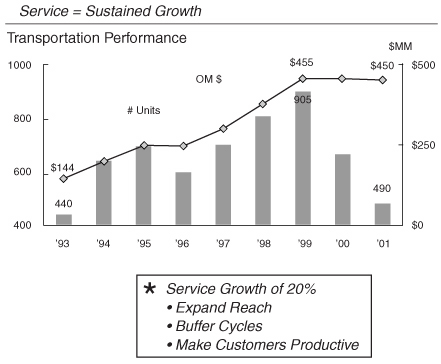
没有什么比我们机车业务的图表（对页）更能说明高科技在硬件业务中的价值了。机车销量将从1999年905台的峰值下降到490台，为八年来的最低水平。1993年，运输部门出货440台机车，仅获得1.44亿美元的营业利润。今年，由于高科技服务的增长，营业利润将大致等于1999年峰值销量时的水平，是1993年大约相同出货量时利润的三倍。
一如既往，检验一项举措效果的试金石是数字。我们的产品服务业务从1995年的80亿美元增长到2001年的190亿美元，预计到2010年将增长到800亿美元。我们的长期服务积压订单增长了十倍，从1995年的60亿美元增长到2001年的620亿美元。
如今，我们花在确保现有”插座”(sockets)日益高效上的时间，与寻找新”插座”的时间一样多。
在担任CEO的20年里，我只缺席过一次公司执行委员会(CEC)会议。那是在1995年6月，是我们有史以来最重要的会议之一。
我邀请了我的朋友和前同事拉里·博西迪——当时联信公司(AlliedSignal)的CEO——来克罗顿维尔谈论六西格玛质量。
我没能出席有一个很好的理由。我正在家里卧床休养，刚做完心脏直视手术。
1月底从印度回来后，我一直感到疲惫不堪。我以为自己只是感染了某种病毒，让我感觉很不舒服。我这辈子从来不午睡，但我开始在办公室的沙发上打盹。我跑遍了纽约的医生，做了所有能想到的检查。他们什么也没发现。
我继续抱怨——以至于简去找我的医生，描述了症状，然后带着一瓶硝酸甘油药片走了出来，以防万一。
4月底的一个周六晚上，简和我与朋友洛弗里斯科夫妇一起去费尔菲尔德的Spazzi’s餐厅吃饭。我们吃了很多披萨，喝了很多酒。简和我很晚才回家，直接上楼了。当我在浴室刷牙时，我感觉一颗炸弹击中了我的胸口。我以前也有过胸痛，以我家族的心脏病史，我至少想象过20次心脏病发作。但这次与我经历过的任何一次都不同。
这不是轻微的心绞痛或手臂酸痛。这是真正的心脏病发作。
感觉就像一块巨石压在胸口。
我大喊简，她走进浴室，拿出硝酸甘油药片让我吃惊。我把一片含在舌下。很快，我得到了一些缓解。然后我的急躁性格占了上风。我没有打911，而是让简去开车，这样我们可以直接开到布里奇波特医院，她是那里的董事会成员。在路上，沿着25号公路飞驰时，我看到一个医院标志，大喊让简在下一个出口下去。
结果那不是布里奇波特医院，而是布里奇波特的圣文森特医疗中心。当简闯红灯时，一名警察拦住了我们。在我们解释了情况后，他开着闪灯鸣着警笛护送我们到了医院。
当简凌晨1点把车停在急诊室门口时，我冲出车门，跑过拥挤的候诊区，跳上一张空的推床。
“我快死了！”我大喊。“我快死了！”
这引起了护士们的注意——她们很快给我静脉注射了硝酸甘油。疼痛消退了。检查确认我心脏病发作了。5月2日星期二，罗伯特·卡塞塔医生为我做了血管成形术，打通了我的主动脉。鲍勃是个体育迷，是康涅狄格大学和扬基队的球迷。由于我上的是马萨诸塞大学，又是红袜队的铁杆粉丝，我们有很多可以争论的话题。手术后不久，我回到病房，那块石头又压在了我的胸口。血管又堵了。我又一次心脏病发作。当他们把我紧急推往心脏手术室准备再次手术时，一位神父想为我做临终祈祷。
我看着监视器，看到卡塞塔医生在努力重新打开血管时遇到了困难。外科医生已经准备好做我一直害怕的搭桥手术。
“别放弃！”我喊道，“继续试！”
我又在添乱了，发号施令——但幸运的是医生坚持了下来。他打通了血管，我当时不需要做手术了。
三四天后我出院时，打电话向很多人咨询，包括亨利·基辛格和迪士尼的迈克尔·艾斯纳，他们都做过搭桥手术。迈克尔很鼓励我，说手术没什么大不了的。亨利强烈建议我去麻省总医院做手术。通用电气的医疗总监索尔·米勒斯医生也这么建议，他带着我血管成形术的影像资料飞到了波士顿。
索尔是个圣人，也是位出色的医生。多年来，我一直用胸痛和自以为的心脏病发作烦他。索尔不得不应付世界上最大的三个疑病症患者：拉里·博西迪、保罗·弗雷斯科和我。我们三个无论走到哪里都带着一堆药，随时准备打电话给医生抱怨每一处疼痛。我们三个人对通用电气医疗费用上涨的”贡献”可能比其他一百名员工加起来还多。最近几年，这个任务落到了我们现任医疗总监鲍勃·加尔文医生和他的搭档肯·格罗斯曼医生身上。
1995年5月10日，我正在家里的起居室与保罗和比尔·科纳蒂开商务会议，索尔带来了不太好的消息。他告诉我影像资料确认我需要做开胸手术。他帮我预约了第二天去麻省总医院，后天手术。这一切来得太突然，反而是件好事。考虑到我的家族病史和过去15年的心绞痛，我一直害怕这一刻的到来，但我没有太多时间去想它。
周三晚上，我打电话告诉孩子们这个消息。周四，我和索尔、简一起到波士顿，见了将为我做手术的卡里·阿金斯医生。简对那个周四晚上的记忆比我清楚。据她说，凌晨4点在医院里，我转向她说：“如果出了什么问题，不要让他们拔掉插头。即使他们看不出来，我要你知道，我会在里面拼命战斗。”
什么问题都没有。事实上，一切都很顺利。我很幸运有一位出色的外科医生。卡里在三个小时内完成了五重搭桥手术。从那以后，我们成了很好的朋友。我们每年见一两次面——在医院外面。搭桥手术一开始会让你很难受。身体每个部位都疼得要命。幸运的是，每天都会感觉好一些。7月5日我回到办公室，月底就重返高尔夫球场了。8月中旬，我在楠塔基特岛桑卡蒂角俱乐部锦标赛上赢了前三场比赛，但在36洞决赛中输了。
我在家休养期间，拉里·博西迪打电话来，建议他退出6月的公司执行委员会会议。他担心在我不在的时候回来，看起来像是要回通用电气。我很感激他的体贴，告诉他不用担心。
“去把你关于六西格玛(Six Sigma)的一切都告诉他们。”
我感觉我们可能正处于一个重要时刻。我知道拉里是帮忙的最佳人选。多年来作为同事，我们俩都不是质量运动的拥护者。我们都觉得早期的质量项目口号太多，成果太少。
20世纪90年代初，我们在飞机发动机业务中尝试过戴明(Deming)项目。我没有把它作为全公司的举措来推行，因为我觉得它太理论化了。
通用电气内部的不满声音很明显。在1995年4月的员工调查中，质量成为许多员工关心的问题。“新拉里”已经对六西格玛充满热情。他说对大多数公司来说，平均每百万次操作有35000个缺陷。达到六西格玛质量水平意味着在制造或服务流程中，每百万次操作的缺陷少于3.4个。
那是99.99966%的完美。
在工业领域，事情通常100次中有97次是正确的。那是三西格玛到四西格玛之间。例如，这样的质量水平意味着每周5000例错误的外科手术、每小时20000件丢失的邮件，以及每年数十万张配错的处方药。想想都不舒服。
据说拉里向我们的团队做了精彩的演讲。他展示了联合信号公司获得了实实在在的成本节约——不只是”感觉良好”的好处。我们的团队很喜欢他说的内容，我接到了几位与会者的积极反馈电话。
我回去工作后得出结论：拉里真的很喜欢六西格玛，团队认为这是对的，而且我有调查结果显示质量是通用电气的一个问题。
当一切都汇聚在一起时，我对六西格玛着了迷，然后启动了这个项目。
我们安排了两位关键人物负责此事。企业计划主管加里·雷纳和我的长期财务分析师鲍勃·尼尔森进行了成本效益分析。他们的研究表明，如果通用电气当时运行在三到四西格玛水平，将质量提升到六西格玛(Six Sigma)的成本节约机会大约在70亿到100亿美元之间。这是一个巨大的数字，相当于销售额的10%到15%。
面对这样的机会，我们决定大力推进六西格玛并不需要什么高深的判断。
和我们每一项重大举措一样，一旦决定推进，我们就全力以赴。我们做的第一件事是任命加里·雷纳为六西格玛的常任负责人。凭借他清晰的思维和不懈的专注，他是将我们的热情传递到项目中的完美桥梁。
然后我们请来了迈克尔·哈里，他是摩托罗拉的前经理，当时在亚利桑那州斯科茨代尔经营六西格玛学院。如果说有谁是六西格玛的狂热信徒，那就是哈里。我们邀请他参加十月份在克罗顿维尔举行的年度高管会议。我取消了我们通常的高尔夫活动——这绝对是一个象征性的举动——这样我们170人就可以听哈里讲解他的项目。
整整四个小时，他兴奋地从一个画架跳到另一个画架，写下各种统计公式。我分不清他是疯子还是远见者。包括我在内的大多数人都不太理解那些统计语言。
尽管如此，哈里的演讲成功地激发了我们的想象力。他给出了足够多的实际案例，表明这确实有价值。那天离开会场时，大多数人对我们缺乏统计学理解感到有些沮丧，但对项目的可能性感到兴奋。这种方法的严谨性对在场的工程师们特别有吸引力。
我感觉这远不止是工程师的统计学，但我完全没想到它会变得多么重要。最大的误解是六西格玛只是关于质量控制和统计。它确实包含这些——但远不止于此。最终，它通过提供思考棘手问题的工具来推动领导力的提升。六西格玛的核心是一个可以彻底改变公司的理念，让组织向外聚焦于客户。
我们在1996年1月的博卡会议上推出了六西格玛项目。
“我们不能再等了，”我说。“在座的每个人都必须领导质量变革。这件事不能有旁观者。摩托罗拉花了十年的事情，我们必须在五年内完成——不是通过走捷径，而是通过向他人学习。”
我认为仅短期财务影响就足以证明这个项目的价值。从长远来看，我认为它可能更加重要。
在博卡会议的总结中，我称六西格玛是公司有史以来最雄心勃勃的举措。“质量可以真正将通用电气从一家伟大的公司转变为世界商业中绝对最伟大的公司。”（我又一次说得有些过头了。）
那年离开博卡时，我们真的很兴奋，要让六西格玛取得巨大成功。我们告诉各业务部门的CEO，要让他们最优秀的人成为六西格玛领导者。这意味着把我们的人从现有工作中抽调出来，给他们两年的项目任务，让他们获得六西格玛术语中所谓的”黑带”(Black Belt)资格。
任务的前四个月将用于课堂培训和工具应用。每个指定的项目都必须与业务目标和底线挂钩。黑带项目在每个业务部门涌现，提高呼叫中心响应率，增加工厂产能，减少账单错误和库存。我们六西格玛项目的一个基本要求是我们要衡量它。我们让财务分析师认证每个项目的结果。
我们还培训了数千人成为六西格玛”绿带”(Green Belt)。绿带接受为期十天的培训，学习六西格玛概念和足够的工具来解决日常工作环境中的问题。他们不离开现有岗位。相反，他们获得了一种改进日常绩效的方法论。
在高层管理培训班上，我称之为”小人物的六西格玛”，我们做了各种实验来理解这个概念。我们制作纸飞机，把它们扔过房间，然后测量它们落在哪里。我对黑带老师说，我希望我们的员工没有从窗户往里看，看到我们在玩纸飞机。看着它们落在房间各处是我们对方差(variance)的入门介绍。
和每一项举措一样，我们用奖励制度来支持它。我们改变了整个公司的激励薪酬计划，使60%的奖金基于财务业绩，40%基于六西格玛成果。二月份，我们将股票期权授予重点放在正在接受黑带培训的员工身上。这些人应该是我们最优秀的。
当二月份期权推荐请求发出后，电话开始打进来。典型的电话是这样的：
“杰克，我没有足够的期权。我们业务部门得到的不够。”
“什么意思？你得到的期权足够覆盖所有黑带了。”
“是的，但我们不能只把期权给黑带。我们还得照顾很多其他人。”
“为什么？我以为黑带是你们最优秀的人。他们才是应该获得期权的人。”
“嗯……他们并不全是我们最优秀的，”他们会说。
我的回答是：“只让你们最优秀的人参加六西格玛项目，把期权给他们。我们没有更多的可以给你了。”
我一直希望奖励制度能确保我们把最优秀的人才安排到每个项目中。没有人愿意全职放弃自己最好的人才。他们有很高的目标要完成，需要最好的经理来实现这些目标。我们在六西格玛(Six Sigma)项目上遇到了阻力。起初，只有四分之一或一半的黑带(Black Belt)候选人是最优秀的人才，其余的都是凑数的。
一次令人印象深刻的经历发生在GE金融商业融资业务的S-I战略评审会上，该业务由迈克·高迪诺负责。这是一项主要与非投资级公司打交道的交易业务。在这些交易撮合者中找到一位六西格玛领导者并不容易。
这一点在1996年的S-I评审会上变得很明显。我们要求所有CEO带上他们的六西格玛领导者，展示项目进展。
迈克找到了一个人来填补这个职位。然后他不得不坐在那里看着他的人做了一个”打空气”式的演示。房间里每个人都清楚，六西格玛在这个业务部门根本推不动。当时流传的笑话是，这位六西格玛领导者”决定离职”的时间比电梯到达总部一楼还快。
下一次，迈克不想再冒险了。他派了一位明星员工来接替。史蒂夫·萨金特接手后表现出色，后来成为GE金融的六西格玛领导者。2000年，他再次晋升为我们欧洲设备融资业务的CEO。S-I评审流程发挥了作用。迈克获得了更高质量的项目，五年后GE为旗下一个业务部门培养出了一位新CEO。
我们还利用黑带的股票期权计划来筛选出最弱的环节。如果这个或任何项目要成功，就必须从最优秀的人才开始。我对此变得非常狂热，坚持要求到1998年底，任何人如果没有至少接受过绿带(Green Belt)培训，就不能被考虑担任管理职位。即使我不断鼓励，在Session C和其他各种场合反复强调，我们还是花了三年时间才把所有最优秀的人才纳入六西格玛。
在一次评审中，核能业务部门推荐了一位候选人马克·萨沃夫来负责服务业务。他们的推荐没有清楚说明他的六西格玛资质。我们的人力资源主管比尔·科纳蒂打电话到加州说：“我们希望他能来和我们谈谈他的六西格玛资质。”马克从圣何塞飞到费尔菲尔德，说服我们他对六西格玛有深厚的承诺。
他得到了这份工作，后来被提拔负责整个GE核能业务。
如今，在推荐任何人担任任何职位之前，都必须明确其六西格玛资质。
在第一个完整年度，我们培训了3万名员工，在培训上花费了约2亿美元，获得了大约1.5亿美元的节省。
我们有一些很好的早期成功案例。例如，GE金融每年接到约30万个抵押贷款客户的电话，其中24%的时间客户不得不使用语音信箱或回拨，因为我们的员工正忙或无法接听。一个六西格玛团队发现，我们42个分支机构中有一个的电话接听率几乎完美。团队分析了它的系统、流程、设备、物理布局和人员配置，然后将其复制到其他41个分支机构。曾经有近四分之一时间联系不上我们的客户，现在第一次拨打就有99.9%的机会联系到GE的工作人员。
GE塑料给了我们另一个很好的例子。Lexan聚碳酸酯有很高的纯度标准，但不符合索尼新型高密度CD-ROM和音乐CD的要求。两家亚洲供应商获得了索尼的所有业务，我们被排除在外。一个黑带团队解决了问题，设计了生产流程的改进，使我们达到了索尼要求的颜色和静电特性。我们从3.8西格玛提升到5.7西格玛，赢得了索尼的业务。
第一年，我们在全公司范围内使用六西格玛来降低成本、提高生产力、修复有问题的流程。有一个业务部门，虽然是个极端案例，发现通过使用六西格玛，可以提高工厂产能，从而在十年内无需任何产能投资。
下一阶段是使用六西格玛的统计工具来修复和设计新产品。这在电力系统业务中尤为重要。在1990年代中期，当电厂需求不大时，我们新设计的燃气轮机电厂出现了非计划停机。由于高振动，转子出现裂纹。1995年，已安装的37台机组中有三分之一不得不被拆除。
使用六西格玛流程，我们将振动降低了300%，并在1996年底解决了问题。从那以后，如今机组数量超过210台，我们没有发生过一次非计划拆除——比六西格玛还要好。解决这个问题使我们在新技术燃气轮机市场上处于领先地位，正好赶上1990年代末的电力需求激增。这使GE在全球新电厂市场上占据了主要份额。
在新产品设计方面，我们的医疗系统业务走在前列。第一个主要的六西格玛设计产品是1998年推出的名为LightSpeed的新型CT扫描仪。传统扫描仪需要三分钟完成的胸部扫描，这款新产品只需17秒。更好的是，我收到一位放射科医生的来信，他写道，他惊讶于一台价值100万美元的机器可以从箱子里取出，插上电源，就能立即工作。这就是六西格玛的最佳体现。在过去三年里，医疗业务推出了22款新的六西格玛设计产品。
2001年，医疗业务51%的总收入将来自六西格玛设计的产品，每一款上市的新产品都采用了六西格玛。如今，我们所有的业务部门都在朝这个目标努力。
我们的六西格玛项目从1996年的3000个增长到1997年的6000个，当年实现了3.2亿美元的生产力提升和利润，是最初1.5亿美元目标的两倍多。这些成效开始体现在我们的财务业绩中。到1998年，除去投资成本，我们通过六西格玛节省了7.5亿美元，第二年更是达到了15亿美元。
我们的营业利润率从1996年的14.8%提升到2000年的18.9%。六西格玛确实有效。
我们对结果很满意，但经常听到客户反映他们并没有感受到质量的提升。我们认为问题在于，市场上的许多产品在六西格玛启动之前就已经开发多年了。
一次西班牙之行让我们找到了解决方案。
1998年6月，我正在考虑聘请一位全职的六西格玛副总裁，这是我担任CEO期间创设的第一个也是唯一一个新的管理岗位。当时我正在访问我们位于西班牙卡塔赫纳的新塑料工厂，与皮特·范·阿贝伦及其团队进行项目评审。皮特是塑料业务的全球制造经理，他曾在荷兰海岸贝亨奥普佐姆的一家工厂展示了六西格玛的强大威力。通过运用六西格玛，皮特和他的团队在没有大量追加投资的情况下，将Lexan的产量从每周2000吨提升到4000吨。皮特对六西格玛的实际应用有着最深刻的理解，并且能用最简单的语言解释清楚。
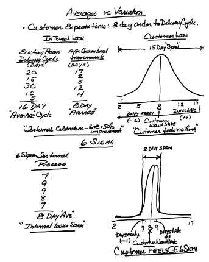
我们在卡塔赫纳工厂一座庄园的后廊共进午餐。我问皮特是否有兴趣来费尔菲尔德担任我正在考虑设立的新职位。我告诉皮特，他将带领一个很小的团队，只有两三个人，负责在全公司范围内传授和推广六西格玛知识。他骨子里的教师特质——这一点非常明显——让他觉得这份工作很有吸引力，尽管他当时正在管理一个拥有数千名员工的庞大全球制造业务。
幸运的是，他接受了这份工作。
正是皮特找到了客户感受不到我们六西格玛改进成效的原因。皮特的解释很简单：他让我们所有人都明白，六西格玛的核心就是一件事——变异(variation)！我们都学过这个概念，包括我自己，在那堂用纸飞机做演示的课上。但我们从未像皮特阐述的那样真正理解它。他揭示了平均值与变异之间的关联。这是一个突破。
我们不再关注平均值，而是通过收紧我们所说的”跨度(span)“来聚焦变异。我们希望客户在他们想要的时间得到他们想要的东西。跨度衡量的是与客户期望收货日期之间的偏差，无论是提前几天还是延迟几天。将跨度降到零意味着客户总能在他们要求的时间收到产品。
在内部，我们的问题是我们基于平均值来衡量改进——这个数字只计算我们的制造或服务周期，而不考虑客户。例如，如果我们将产品交付时间从平均16天缩短到8天，我们认为这是50%的改进。
愚蠢的是，我们还在庆祝。
然而，我们的客户什么都没感受到——除了变异和不可预测性。有些客户的订单晚了9天，而另一些则早了6天。我们运用六西格玛和以客户为导向的跨度视角来指导工作。这将交付跨度从15天缩短到了2天。现在客户真正感受到了改进，因为订单到达时间更接近他们的期望日期。
听起来很简单——确实如此——一旦我们理解了。
我们花了三年时间才真正”理解”六西格玛。跨度缩减易于理解，成为组织各层级的共同目标。这正是我们所需要的，让六西格玛变得不再复杂。我们的塑料业务将跨度从50天缩短到5天；飞机发动机从80天缩短到5天；抵押贷款保险从54天缩短到1天。
现在，我们的客户注意到了！
跨度还帮助我们聚焦于衡量什么。在大多数情况下，我们使用的是销售人员承诺的交货日期，这个日期是与客户和工厂双方协商的结果。我们没有衡量的是客户真正想要什么以及他们何时想要。
如今，我们更进一步。我们衡量的跨度是从我们承诺的交货日期到客户首次产生收益的时间：CT扫描仪的交付周期从客户提出需求到第一位患者接受扫描；喷气发动机维修车间的周转时间从发动机离开机翼到重新装回飞机升空；发电厂的交付周期从下订单到首次发电。
每个订单都标注了客户的启用日期，跟踪变异的图表张贴在每个工厂。每个人都能清楚地看到。使用这些衡量标准让变异变得生动具体。客户能看到并感受到我们所做的一切。
六西格玛是一种通用语言。变异和跨度在曼谷和上海与在克利夫兰和路易斯维尔一样容易理解。
我们进一步扩展了这一举措，将其直接带给客户，我们称之为”六西格玛：在客户现场，为客户服务”(ACFC)。这意味着派遣通用电气的黑带和绿带人员到客户的工厂，帮助他们提升绩效。
当客户愿意接受时，效果非常显著。2000年，飞机发动机业务在50多家航空公司开展了1500个项目，帮助客户获得了2.3亿美元的营业利润。医疗系统业务开展了近1000个项目，为医院客户创造了超过1亿美元的营业利润。
通过将我们内部的衡量标准与客户需求相统一，六西格玛让我们与客户建立了更紧密的关系和信任。
我们发现六西格玛不仅仅适用于工程师。质量项目中一个常见的误解是认为它只适合技术人员。实际上，它适用于任何职能部门中最优秀、最聪明的人。
工厂经理可以使用六西格玛来减少浪费、提高产品一致性、解决设备问题或创造产能。
人力资源经理需要它来缩短招聘员工的周期时间。
区域销售经理可以用它来提高预测可靠性、定价策略或减少定价差异。
同样，水管工、汽车修理工和园丁也可以用它来更好地了解客户需求，并调整服务内容以满足客户期望。
虽然它在NBC的许多职能部门都发挥了作用，但并没有提高我们挑选情景喜剧的成功率。
我必须承认，我很难为律师和顾问找到应用案例。这可能是因为他们靠差异性谋生，所以很难应用六西格玛。
总体而言，六西格玛正在改变公司的基本文化以及我们培养人才的方式——尤其是我们的”高潜力人才”。多年来，我们一直有很好的职能培训项目，特别是在财务领域。但公司的多元化使得很难有一个通用的培训项目。六西格玛为我们提供了通用管理培训所需的工具，因为它在客户服务中心和制造环境中同样适用。
2000年，GE高管层中有15%接受过黑带培训。到2003年，这个数字应该会达到40%。杰夫·伊梅尔特的继任者很可能会是一位六西格玛黑带。
在过去几年的克罗顿维尔培训课程上，我常开玩笑说，我对电子商务反应迟钝的原因是我们当时正在完善六西格玛。
“等我最终写书的时候，”我告诉学员们，“我会写道，我们知道在涉足电子商务之前必须先在GE推行六西格玛。电子商务依赖速度和准确的履约能力。六西格玛给了我们这些。”
学员们哄堂大笑。他们更年轻、更聪明，知道我当时对互联网的影响理解得很慢。
那场变革即将到来。
互联网革命差点与我擦肩而过——直到简让我对它感到自在。她多年来一直使用网络与朋友保持联系。很多个夜晚，我在翻阅工作文件，而她就坐在我对面，连着网敲打键盘。
1997年，简开始在网上买卖股票，在互联网上跟踪她的投资组合。她做得很好，以至于我请她帮我看管我的投资组合。无论我们去哪里，简的笔记本电脑都随身携带。每当她试图说服我自己使用笔记本电脑时，我都会拒绝，觉得自己不会打字，不值得费那个劲。
“杰克，”她抗议道，“连猴子都能学会打字。”
然而，1998年底，我开始听说公司里有人在网上购物过圣诞节。我终于认真对待这件事，并在圣诞假期围绕互联网的重要性准备了我的博卡演讲稿。那些话让我们行动起来——但三个月后，互联网才真正融入我的血液。
1999年4月，简和我在墨西哥的一个度假村庆祝我们结婚十周年。这一次，她和我在巴巴多斯时一样不浪漫。
简全神贯注于她的笔记本电脑。一天下午，她告诉我网上有人在讨论GE股票分拆和我的继任计划的可能性。她叫我过去看雅虎上的GE留言板，我被人们对公司的评论吸引住了。
“看看没关系，”简笑着说，“但你永远不能回复。”
她哄着我写了几封电子邮件，带我浏览了几个网站。随着假期的继续，我开始有冲动上网查看关于GE的新闻和最新评论。有一次，我甚至丢下在泳池边的简，回到房间，打开电脑。
20分钟后她走进来，发现我弓着背趴在她的笔记本电脑前。
她知道我上瘾了。巴巴多斯的情景重演了。
我参加电子商务派对来得很晚，但当它击中我时——冲击力很大。我终于看到这项新技术能对GE产生什么影响。我不确定具体是什么、何时、如何——我只知道我们必须全力以赴地投入进去。
在1990年代末的互联网泡沫氛围中，每个人都急于否定那些大型老牌公司。所有人的注意力都集中在任何创办新互联网业务的人身上。有一件事我从未相信，那就是流行的”旧经济与新经济”之说。人们只是在互联网上买卖商品——就像一百年前从马车上买卖一样。唯一的区别是技术。
是的，这种新的买卖方式更快、更全球化，对商业有深远的影响。我们的重大洞察来自于我们意识到在互联网上创建商业网站并不是诺贝尔奖级别的工作。当运输部门向大家展示了开发拍卖网站是多么容易和便宜时，我们看到了这一点。
一旦我们知道数字化很容易，很明显，那些领悟到这一点的大公司没什么可害怕的，事实上，只有好处。
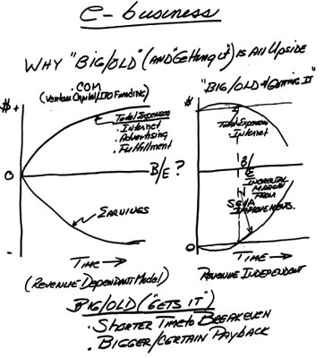
我画了一张图表，帮助我理解互联网及其对GE的影响。当时，全世界都为任何带有”dot.com”的东西疯狂。我在公司各处和投资界都使用这张图表。它引发了很多讨论，有助于安抚那些认为自己可能在玩过时游戏的员工。它也让投资者相信GE有一个制胜的战略计划。
在互联网公司模式中，费用会迅速增加，用于支付互联网开发、品牌广告和订单履行的成本。亏损与这些费用成正比增长。盈亏平衡点不确定，而且几乎总是依赖于收入。
在”大型传统企业转型”这一类别中，唯一的额外费用是互联网开发。大公司已经拥有强大的品牌和履行订单的系统。很快，互联网带来的生产力提升就能节省成本。达到盈亏平衡的时间更短，回报更大、更确定，而且这些收益通常与收入无关。
这张图表展示了通用电气相对于互联网公司的优势。我们不需要增加广告投入。我们已经建立了品牌。我们不需要创建履行组织或建造仓库来发货。六西格玛(Six Sigma)已经到位，可以改进我们的运营。我们可以利用数字化专注于其主要优势——消除公司内部低附加值的工作。每个流程都可以改进，生产力都可以提高。这项技术为大公司带来的效率提升是巨大的。
电子商务使我们能够扩大市场并找到新客户。通用电气的供应商基础变得更加全球化。我们的规模使技术投资得到充分利用，因此规模大实际上是一种优势。对我来说，互联网世界的底线是：“旧经济”公司的生产力和市场份额增长远远超过”新经济”模式的增长机会。
怀疑论者认为我们在通用电气已经找不到更多效率提升空间，常常问我柠檬里是否还有汁可挤。互联网给了我们一个全新的柠檬、一个葡萄柚，甚至可能是一个西瓜——全都放在盘子里送上来了。
我们将互联网机会分为三个部分：采购、制造和销售。
“采购”——我们公司每年购买500亿美元的商品和服务。将部分采购活动转移到在线拍卖，使我们能够接触更多供应商并降低成本。即使只有一小部分转到线上，也能为我们带来可观的节省。
最初，我们听说几乎所有采购都能节省10%到20%。但当这些节省最终反映到利润上时，实际节省更接近5%到10%。在许多情况下，新供应商带来了新成本——质量认证成本、关税、税费、运输费和其他费用。尽管如此，我们在2000年拍卖的60亿美元和预计2001年在线采购的140亿美元中仍然获得了巨大的节省。
对于通用电气来说，数字化带来的”制造”改进是隐藏的宝石。大公司有我所说的”杂务工厂”(scud-works)，即产生大量纸张的庞大后台运营。数字化消除了大部分这类繁琐工作，提高了许多人的工作质量。2000年，我们获得了1.5亿美元的收益。2001年，即使扣除6亿美元的实施成本，我们预计从数字化的”制造”部分节省10亿美元。
在销售方面，互联网使我们能够改善服务。我们可以更快地履行订单。新老客户无需多次打电话就能获得发货信息。这终结了催货员虚假地向客户保证订单正在运送途中的情况。结合六西格玛，互联网可以帮助我们为客户提供更好的服务。2000年我们的在线销售额为70亿美元，2001年预计达到140亿至150亿美元。
数字化一旦进入我们的运营系统就迅速发展起来。在1999年1月博卡的管理会议上，我要求业务领导在6月的战略会议上提出他们对电子商务的最佳想法。3月，我邀请了四位外部电子商务嘉宾中的第一位来参加首席执行官委员会(CEC)会议：Trilogy Systems的乔·利曼特(Joe Liemandt)、IBM的卢·郭士纳(Lou Gerstner)、朗讯科技的里奇·麦金(Rich McGinn)和思科的约翰·钱伯斯(John Chambers)。
是乔用互联网公司的威胁把我们吓坏了。卢用他对互联网和互联网公司角色的更务实看法让我们回到现实。里奇描述了新技术如何处于起步阶段，并展望了互联网最终可能成为什么样子。约翰展示了最大的成本效益将来自使用互联网简化我们的内部流程。
乔·利曼特帮助激励了我们。我从他还是皮茨菲尔德的孩子时就认识他。他已故的父亲在早期塑料业务时期是我的战略规划师。乔明确地告诉我们，外面有成千上万的年轻人正等着把我们干掉。
他实际上告诉我们：“你们又大、又胖、又笨。你们是活靶子。”
他那些夸张的预测正是我们激活整个组织所需要的。我们组建了独立的团队，在许多情况下设在不同的建筑里，分析潜在的基于互联网的商业模式，这些模式可能会对我们做亚马逊正试图对图书销售做的事情。
带着典型的革命热情，我们将这些部门命名为”destroyyourbusiness.com”（DYB，摧毁你的业务）团队。DYB团队的目标是为我们现有的业务定义新的商业模式，而不受那些一直用”老方法”做事的人的干扰。
我自己教育的下一章发生在1999年春天的一次商务旅行中。我在伦敦见到了我们消费金融部门36岁的首席执行官。在业务回顾中，他碰巧提到他刚刚见过他的导师。
我问他：“你的导师？为什么不是你在指导高潜力人才？”
“不，这是不同的事情，”他说。“我有一个23岁的年轻人每周花三到四个小时教我如何使用互联网——我是被指导者(mentee)！”
我立刻爱上了这个想法，尤其是看到这么年轻的人在使用导师制。第二天，我在布达佩斯为一群匈牙利企业家做午餐演讲。像往常一样，我以为自己传授了各种智慧。演讲结束后，几位听众冲上来，照例说了句”精彩的演讲”。然后他们说：“你有一个很棒的想法，我们都会记住。”我暗自失望，我那”雄辩的发言”竟被浓缩成了一个观点。但这也证实了导师制的想法确实触动了人心。
回到家后，我立即要求我们最高层的500位领导者找一位互联网导师，最好是30岁以下的。这些导师，很多人年龄不到我们的一半，每周花三到四个小时甚至更多时间与我们这些”尼安德特人”一起工作。我有两位导师。我的正式导师是帕姆·威克汉姆，她在通用电气的公关部门工作。她真的热爱互联网，对它了如指掌。她曾是塑料业务部门建立第一个通用电气网站的关键人物，后来被提拔到总部。
我的助理罗珊妮是我日常的救星。每次我遇到困难，我就会朝门外喊：“罗，帮帮我！”她知道该进来帮我摆脱困境了——我总是试图超越自己的技能水平而陷入麻烦。她总能解决我的问题。
2000年初，我们将这个项目扩展到公司最高层的3000名经理。这是一个让组织”颠倒过来”的好方法。我们让聪明、有活力的年轻经理与组织中的高层管理人员会面。是的，他们在教高管们关于互联网的知识。但通过这些互联网学习课程中的许多随意交谈，管理者们也在发现新人才，并更好地了解公司里真正发生的事情。
我们甚至为董事会招募了一位”导师”。1999年10月，我邀请太阳微系统公司的首席执行官斯科特·麦克尼利成为董事。我们利用他来挑战我们所有的思维。他确实做到了，而且以他直言不讳的方式，斯科特在1999年克罗顿维尔的高管会议上做了一个精彩的演讲，引起了所有人的注意。
斯科特不仅是一位出色的、有建设性的批评者，他还成了我的高尔夫球友。（以我的年龄，他赢的机会越来越大了。斯科特还很有幽默感。我收到一封电子邮件，宣布他和妻子苏珊即将迎来第四个孩子。“我不应该感到惊讶，”斯科特写道，“我们一直在没有守门员的情况下打曲棍球。”）
在通用电气，我们学到了很多，但我们仍然面临巨大的压力，要模仿互联网公司的买卖模式，跳入可能适得其反的事情。一个很好的例子是第三方电子交易平台。我们和其他人一样，几乎忘记了商业的一条基本规则：永远不要让任何人介入你和客户或供应商之间。这些关系需要太长时间来建立，太宝贵而不能失去。
我们避免的一个很好的例子是PlasticsNet，一个塑料行业的在线聚合商(aggregator)。它除了能采购到的产品外没有任何产品，而且从他们销售的每样东西中抽成——在网络本应消除制造商和买家之间中间人的时代，却成为了中间商。
在我们这边，我们有Polymerland.com。加里·罗杰斯，当时是塑料业务的首席执行官，后来在2001年6月被选为副董事长，他在公司的电子商务领域处于领先地位。与PlasticsNet不同，他知道我们有产品可卖，也有信息来销售它。当时，Polymerland每周的在线销售额不到1万美元。不值一提，但比PlasticsNet做得多。
为了发展这项业务，塑料部门改变了他们的销售激励计划以鼓励在线销售，并在各地区配备了全职电子商务专家，让客户习惯在线购买。我对塑料模式变得狂热，不断用电话和电子邮件催促管理团队。我每天都会获取他们的数据。这是一次很棒的学习经历，也很有趣。每个人都听腻了我谈论塑料网站，开始蜂拥而至地向Polymerland的人学习。
学习正在蔓延。
我们最初认为塑料业务在1999年可能达到5亿美元的在线销售额。结果业务达到了10亿美元。我们低估了这个机会。我们的梦想不够大，因为我们以为这是脑外科手术般复杂。其实不是。如今，Polymerland每周销售5000万美元，2001年的年销售额将达到25亿美元。
塑料业务并非孤例。2000年，我们在全公司范围内实现了70亿美元的在线销售额。虽然这些收入大部分来自转移到线上的现有客户，但我们也获得了新客户，并从现有客户那里增加了市场份额。
在互联网公司狂热的高峰期，我们的另一个愚蠢之举是渴望建立网站——任何网站。这反映了我们的热情和精力，但到2000年初，情况已经失控。我们的家电业务开发了一个有趣的新网站叫MixingSpoon.com。它很棒：有食谱、讨论板、优惠券下载、购物技巧——厨房里厨师需要的一切。问题是，它没有卖出任何家电。
它成了我们所说的”互联网泡沫”(dot.com dust)的典型代表——那些创建出来看起来很漂亮但从来没有存在的财务理由的网站。我们认识到，如果你不能将屏幕货币化——无论是直接通过产品还是间接通过更好的服务——你就不应该建立它。
我们的DYB团队很快得出结论，互联网带来的机会多于威胁。我们重新定义了他们的使命，他们变成了GYB，即”growyourbusiness.com”(发展你的业务)团队。他们不再与主流业务分离。数字化团队被整合到现有的商业模式中。
1999年6月，我发出了第一封全公司范围的电子邮件（我知道我起步晚了）。48小时内，我收到了近6000封回复，这些回复发送到我们专门设立的一个网站。来自各个业务部门、全球各地运营机构的员工，从工厂工人到高层管理人员，都在给我回邮件，分享他们的想法、印象、反馈、投诉、担忧和兴奋之情。每个人都参与进来了。
我们的电子商务计划带来了许多新的商业模式。塑料业务部门在一些主要客户的储存仓库中安装了电子传感器。当材料库存下降时，传感器会自动提醒通用电气的仓库，通过互联网触发新订单来补充产品。通用电气金融服务公司正在使用网络监控贷款客户损益表中每日的现金流入和流出。业务部门能够即时了解客户何时可能出现资金短缺，从而降低潜在损失。现在，大多数通用电气业务负责人的电脑屏幕上都有数字驾驶舱(digital cockpits)，实时更新所有重要数据，帮助他们管理业务。
每周五，高层管理团队的每个人都会分享通用电气22个最大业务部门的采购、销售和生产数据。这些数字是每个业务部门在线采购金额、举办拍卖次数、拍卖中发生的通缩幅度，以及年度目标或增长情况的快照。由于如此透明，这些每周数据激励每个人做得更多。
电子商务是我见过的唯一一种活动，仅仅30天前设定的目标，30天后看起来就会显得荒谬可笑，因为学习曲线太陡峭了。当我们回顾自己曾经以为知道的东西时，总是感到震惊。
另一个重要的教训来自思科的约翰·钱伯斯(John Chambers)。他敦促我们关闭在线和离线工作流程的”并行路径”。在我们做到这一点之前，人们仍然会依赖纸张，不会真正利用数字化来提高生产力。在约翰演讲后的几个月内，超过150名通用电气经理涌入思科学习。每个人都想知道思科在数字化工作流程方面做了什么。很快，我们开始撤掉打印机、联网复印机，将所有差旅和费用报告、福利信息以及每份内部财务报告都转移到网上。
每个人都开始以数字化方式思考。如今，通用电气的业务负责人说他们办公室里不允许有纸张，这已经很常见了。这是整个组织思维模式的重大转变。
那年春天，我坐下来听取了我们抵押贷款保险业务的电子商务审查报告。他们的业务负责人概述了一项策略，要从工作流程中移除他所说的”接触点”(touchpoints)——即审批流程中需要员工处理纸张的步骤。如果他们能做到这一点，估计可以削减高达30%的管理费用。
这是我们”电子制造”(e-make)战略的开端。我们发现工作流程数字化可以创造巨大的节省：100亿美元，相当于我们总管理费用的30%。这个机会令人震惊。我们一直在努力提高效率。在数字化中，我们找到了降低管理费用的圣杯。
最终，电子商务将改善许多工作岗位。以销售为例：如今，销售人员只有30%到35%的面对面时间是与客户在一起。销售人员花费太多时间在行政事务、催促订单、争论应收账款和查找延迟发货上。互联网可以更高效地完成所有这些工作。我们正在增加销售人员与客户的面对面时间，将他们的角色从订单接收员和催货员转变为真正的顾问。
在我们的医疗系统业务中，丹佛的医生或放射科医生现在可以调出他们的主页，将自己患者的吞吐量与全球数千名其他匿名患者进行比较。这些相对绩效数据让他们能够看到自己与其他医院的比较情况。在线上，我们提供服务方案来解决他们发现的任何不足。
在我们的电力系统业务中，地方公用事业公司的总工程师可以访问他们的主页，将自己涡轮机的热耗率和燃料消耗与近100家其他匿名公用事业公司进行比较。只需再点击一下，他们就可以向我们订购服务套餐，以达到世界一流的性能水平。
电子商务和通用电气的装机基础(installed base)天生就是绝配。
电子商务成为公司DNA的一部分，因为我们最终将其视为重塑和转型通用电气的一种方式。
至于我自己，我仍在与自己的电脑作斗争。
“嘿，罗，过来帮忙。我卡住了！”
2001年6月7日星期四，我们飞往布鲁塞尔，希望获得欧盟委员会对通用电气440亿美元收购霍尼韦尔国际公司(Honeywell International)交易的最终批准。霍尼韦尔董事长迈克·邦西尼奥尔(Mike Bonsignore)和我在八个月前于纽约NBC的《周六夜现场》演播室宣布了这笔交易。从那时起，两家公司的数千名员工一直在紧锣密鼓地制定合并计划。
当霍尼韦尔航空电子部门负责人迈克·史密斯(Mike Smith)和我在纽约登机时，我们在布鲁塞尔的团队已经朝着解决欧洲合并工作组提出的问题迈出了重要一步。本周早些时候，我们提出剥离霍尼韦尔约4.25亿美元的航空航天销售业务——这是为获得欧盟委员会批准合并而提出的较大规模剥离方案之一。
这些让步包括剥离霍尼韦尔用于支线客机的新型飞机发动机，以及霍尼韦尔的发动机启动器业务——其客户包括通用电气以及我们最大的发动机竞争对手罗尔斯·罗伊斯和普惠公司。我们认为这些让步是有意义且充分的，因为美国和其他11个国家的反垄断官员此前已经认定这两项剥离都没有必要。
在我们出发前一晚，竞争事务专员马里奥·蒙蒂的办公室打来电话，取消了原定于周五的面对面会议，这让我感到意外。当时我正在波士顿哈佛商学院的课堂日上演讲。这显然不是一个好兆头。
尽管如此，在我们飞往布鲁塞尔的途中，我们的团队仍在谈判桌前，评估工作组对我们提案的反应。这些谈判非常艰难，因为工作组不断要求你提出新的解决方案。实际上，你是在跟自己谈判。
尽管困难重重，我仍希望完成谈判并达成交易。在飞机上，我和迈克·史密斯一起翻阅简报材料。考虑到委员会很可能会提出比我们之前报价更高的要求，迈克正在帮我理解他航空电子业务中每个部分的战略意义。我试图找出一些价值3000万到5000万美元的”甜头”，或许能满足委员会的要求。
这是一个痛苦的过程。迈克和他的团队从零开始建立了许多这些业务。当我们讨论可能剥离的产品线时，我感觉像是在夺走他的孩子。如果某个老板卖掉了我塑料业务的一部分，那会让我心如刀绞。
突然间，我在飞机上接到了丹尼斯·达默曼和本·海涅曼从布鲁塞尔打来的电话。工作组要求的额外让步是数十亿美元——而不是数百万美元。
迈克和我合上了简报材料。小修小补是无法促成这笔交易的。
这笔被媒体称为史上最大工业收购案的交易，开始得相当平淡。
2000年10月19日，我和一位老朋友在纽约证券交易所的交易大厅。阿齐姆·普雷姆吉——11年前我第一次去印度时认识的企业家——来纽约庆祝他的公司威普罗在纽交所上市。我陪阿齐姆来，帮助他的新股上市有个好的开始。
下午4点阿齐姆敲响收盘钟后，我们走到交易大厅。一位正在采访阿齐姆的CNBC记者转过身来，把麦克风伸到我面前。记者鲍勃·皮萨尼问我对联合技术公司可能收购霍尼韦尔的突发新闻有何看法。
“这是个有趣的想法，”我勉强说道。
“你打算怎么做？”他问。
“我们得回去好好想想。”
事实上，我差点当场摔倒。我抬头看了看股票行情，霍尼韦尔的股价已经上涨了近10美元。鲍勃·皮萨尼带来的消息完全出乎我的意料——而且确实让我心动。
今年早些时候我们研究过霍尼韦尔。我认为它可能与通用电气很契合。霍尼韦尔的业务在三个关键领域与我们互补——飞机发动机、工业系统和塑料。在产品层面，没有直接重叠。例如，霍尼韦尔是小型公务机发动机领域的领导者，而通用电气是大型喷气发动机的领导者。总体而言，这笔交易将为通用电气增加250亿美元的收入和12万名员工。
2000年2月初，在我们的团队仔细研究了财务状况后，按照我们当时认为收购霍尼韦尔所需的价格，没有人看好这笔交易。当时股价在50到60美元之间。
然而，自2月以来，情况发生了很大变化。拉里·博西迪在1999年底将联信公司与霍尼韦尔合并并担任董事长后，于4月退休。下一个季度，霍尼韦尔宣布无法达到盈利预期，股价随之下跌。在我访问交易所的前一天，霍尼韦尔的股价已跌至36美元。
总体而言，公司疲软的季度业绩使其市值从2000年初的500多亿美元降至350亿美元。
我离开交易所时迫切想了解更多。那天晚上去吃饭前，我开始打电话。我联系到董事会成员西·卡斯卡特，提醒他我们之前研究过这笔交易。按照目前的股价，看起来很有吸引力。我让丹尼斯·达默曼第二天早上带一个团队来纽约，研究可能的收购事宜。
我们正在选择我的继任者，所以我打电话给三位最终候选人，让他们了解我们可能要做的事情。他们都想推进——尤其是我们飞机发动机业务的首席执行官吉姆·麦克纳尼。
事实上，在过去几周里，麦克纳尼和他的首席运营官戴夫·卡尔霍恩一直在与一个外部银行家团队合作，研究可能的霍尼韦尔交易。他们建议我们进行这次收购。我也知道通用电气工业系统的首席执行官劳埃德·特罗特看好霍尼韦尔的工业业务。甚至在霍尼韦尔与联信合并之前，劳埃德就对其持积极态度。
第二天早上，也就是周五，通用电气的团队带着之前内部审查的数据，乘坐几架直升机从费尔菲尔德赶到纽约。我打电话给大通曼哈顿银行董事长比尔·哈里森，问他的副董事长兼投资银行业务负责人杰夫·博伊西是否可以担任顾问。他可以，很快就赶到通用电气在洛克菲勒中心的办公室，与我们的团队一起研究这些数字。
我们通过视频会议邀请吉姆·麦克纳尼和戴夫·卡尔霍恩加入讨论。他们认为霍尼韦尔的高科技航空电子业务与我们的飞机发动机业务完美契合——完全没有重叠。霍尼韦尔的小型发动机业务让我们进入了一个此前无法与罗尔斯或普惠竞争的市场。劳埃德·特罗特对工业板块的分析也显示了同样的结果——与通用电气的产品几乎没有重叠。
在视频会议接近尾声时，我们得出结论：我们可以适度提高报价，为霍尼韦尔提供比联合技术公司更有说服力的方案。联合技术公司的交易存在更多产品重叠和更大的反垄断(antitrust)风险。我们意识到必须迅速行动。我们听说两家公司的董事会正在开会，准备对合并案做最终批准。
我们在发起竞价时有一个优势——联合技术公司的收购条款已经泄露。我们知道自己面对的是什么。联合技术公司计划用自己的股票收购霍尼韦尔。这笔交易对霍尼韦尔的估值略高于每股50美元，总计约400亿美元。
我认为联合技术公司拿到了一笔好交易，而我知道我们可以出价更高。
丹尼斯和我讨论了这笔交易可能对我退休计划的影响。我原本计划在2001年4月30日离职，也就是我65岁生日后五个月。如果我们做成这笔交易，我就得多留一段时间来完成它。我不能把这样一笔收购案扔给一个刚上任的人。
另一方面，我也不能袖手旁观，眼睁睁看着通用电气历史上最大的交易从眼前溜走。如果我们拿下霍尼韦尔，我会多留一段时间，但我们不会推迟决定谁来接替我。那个人将比原计划多担任几个月的”候任董事长”。
丹尼斯同意了，董事会成员在我电话联系他们时也表示同意，我们应该继续推进报价。
大约上午10点30分，我打电话给位于新泽西州莫里斯敦的霍尼韦尔总部，想和首席执行官迈克·邦西尼奥尔通话。他已经在与董事会进行闭门会议，讨论联合技术公司的报价。迈克的行政助理不想打断董事会会议。
幸运的是，我的行政助理罗珊妮·巴多夫斯基认识迈克的助理，她曾是拉里·博西迪的后备行政助理。罗珊妮打电话说服她这件事很紧急。她转达了我的信息：如果她不打断会议，我会立即发布新闻稿，对霍尼韦尔发起收购要约。
迈克·邦西尼奥尔接了电话，说董事会还有五分钟就要敲定交易了。
“别急，”我说，“我想给你一个更好的报价。”
我告诉迈克，我会乘直升机在一小时内赶到莫里斯敦与他和董事会见面。他说没必要。迈克补充说，如果我们是认真的，他需要一份书面文件。
“没问题。我几分钟后就传真给你。”
我在一张纸上草草写下了我们报价的基本框架，十分钟后的上午11点20分，他就收到了。我提议用一股通用电气股票换一股霍尼韦尔股票。
“迈克，我真的很想尽快去莫里斯敦，澄清你心中的任何问题，”我写道。
在收到我的传真并进一步电话沟通后，霍尼韦尔董事会休会，暂时搁置了联合技术公司的方案。联合技术公司的董事会已经批准了交易，正在等待霍尼韦尔的回复。通过让迈克推迟决定，我们打开了谈判的大门。
收盘后，联合技术公司发表声明称已终止合并谈判，消息开始泄露出我们介入了这笔交易。
周五晚上离开办公室时，看起来我们能够做成这笔交易。我去市中心与时任NBC新闻总裁安迪·拉克、他的妻子贝琪以及简共进晚餐，地点是21街公园大道南附近的一家意大利餐厅Campagna。白天我一直联系不上简。那天晚上在餐桌上，我兴奋地告诉她这个消息。
她没有欣然接受，但她理解。她一直期待我在四月退休。我们已经开始在费尔菲尔德设计一栋新的、更小的房子，就在一周前，我还签下了康涅狄格州谢尔顿一间办公室的租约。我们还计划六月去意大利卡普里岛度假十天。如果我们做成这笔交易，显然意味着我们的度假计划可能要改变。
那天早上的报纸报道说我们正在与霍尼韦尔谈判。
周六下午，丹尼斯·达默曼、本·海涅曼、我们的新任首席财务官基思·谢林（他接替了达默曼）和我，与迈克·邦西尼奥尔、霍尼韦尔总法律顾问彼得·克莱因德勒以及他们的首席财务官理查德·沃尔曼在纽约会面。我们在霍尼韦尔的律师事务所世达律师事务所(Skadden, Arps, Slate, Meagher & Flom)位于时代广场的办公室聚会。经过几个小时的价格谈判，我们陷入了僵局。我们的报价——全部以通用电气股票支付——略低于450亿美元，比联合技术公司同意支付的价格高出近50亿美元。
我提出用一股通用电气股票换一股霍尼韦尔股票。迈克想要1.1股，而且不肯让步。当我同意提高到1.055股时，僵局才被打破。
我们握手达成了交易。
迈克与董事会审议后，请我向他们确认我会留任到合并过渡完成。我确认了。
我赶回我们的办公室，让律师们处理细节条款。现在是下午6点20分。那天晚上，我乘D线地铁去扬基体育场观看世界大赛洋基队对大都会队的揭幕战，以此庆祝这笔交易。
我准时赶上了比赛。
周日那天，律师和投资银行家们正在敲定最后的条款。对于外人来说，这笔交易看起来可能像是突然达成的。但实际上，过去三年里，我们一直在关注霍尼韦尔。当联信公司还是一家独立公司时，吉姆的航空团队就研究过相关数据。当霍尼韦尔独立运营时，劳埃德的工业团队也考察过它。联信和霍尼韦尔合并后股价下跌，机会就出现了。
联合技术公司的出价让我们的报价显得像是临时起意。
这感觉很像当年收购RCA的交易。这次的战略核心是航空业务。收购霍尼韦尔将使我们的航空业务规模翻倍，让我们拥有更广泛的发动机产品线，以及我们完全没有的高科技航空电子设备——飞机的大脑。
这次收购还将使我们的工业业务规模翻倍。它为我们带来了一些新的化工产品线，并为我们的塑料业务增加了尼龙产品。和RCA交易一样，它还提供了一些利基业务，比如涡轮增压器，可以作为我们未来的筹码。
但有一个显著的区别。在RCA交易中，我们支付了通用电气市值的19%来获得14%的收益。而在霍尼韦尔交易中，我们只需支付市值的8%就能获得16%的收益。我觉得通过运用我们在通用电气的做法——更积极地拓展服务业务，并将六西格玛(Six Sigma)和电子商务计划引入霍尼韦尔的运营——我们能让霍尼韦尔的资产发挥更大价值。我们预计通过这些举措和其他生产力措施可以节省15亿美元。
而且，我们是在实力最强的时候进行这笔交易。2000年我们将以创纪录的127亿美元收益收官，同比增长19%，营收也达到创纪录的1300亿美元。我们已经连续五年实现营收和利润的两位数增长。
整个周日，我和通用电气公关负责人贝丝·康斯托克一起，敲定了如何向华尔街分析师和新闻媒体披露这笔交易的细节。贝丝是个明星人物。我是在NBC发现她的，她先是负责新闻部门的公关，后来在鲍勃·赖特手下担任整个电视网的公关主管。她是从NBC来到通用电气的最高级别人才。
随着更多细节泄露，贝丝在周日上午应对了记者们蜂拥而至的电话，并为宣布交易的新闻发布会做好了所有安排。我知道媒体会大肆报道我继续担任CEO的事情。我不想让这变成一个关于我恋栈不去的故事。最简单的做法本来是在一片掌声中离开。有一次，我向贝丝建议，在新闻发布会上展示一张图片，画的是一个人用指尖拼命抓住不放。我想我们不如自嘲一下这个新闻角度。（结果我们来不及准备好那张幻灯片。）
无论如何，我们在周日深夜签署了所有文件。
第二天早上，迈克·邦西尼奥尔和我一起快速吃了早餐。然后我们进行了整整四个小时的媒体和分析师采访。从上午9点开始，在NBC 8H演播室举行新闻发布会，那里是《周六夜现场》的录制地点，现场座无虚席。迈克和我坐在台上的导演椅上，回答各种问题。
“我想向大家介绍一下我过去72小时的约会对象。”
“他说得对，”迈克说。“过去72小时我和杰克在一起的时间比和我妻子在一起的时间还长。”
我们阐述了这笔交易的理由。我试图消除任何认为我们进行这次收购是为了让我能继续留任的想法。
“这不是一个老傻瓜舍不得离开座位的故事，”我说。“别担心。我不会为了再多待六个月而再做一笔500亿美元的交易。”
当有人问到获得监管机构批准的问题时，我说应该完全没有问题。我预测交易将在二月份的某个时候完成。
“这是你们见过的最干净的交易。”（我至今仍然这么认为，几乎所有人都这么认为——除了欧盟委员会。）
那天晚上，我对自己感觉相当不错。这一天进展顺利，从媒体采访到与华尔街分析师的会谈都很成功。这是漫长的一天，所以我留在纽约而没有回费尔菲尔德的家。在取隐形眼镜时，我划伤了一只眼睛的角膜。我躺在床上，试图入睡，但疼痛难以忍受。
我打电话给医生，他建议我立即去纽约医院。不巧的是，我叫到的出租车司机不会说英语。他先把我带到了错误的地址。当我终于在午夜后到达医院急诊室时，那里挤满了人。我花了两个小时才见到医生，他很快缓解了我的疼痛。
我走出来到第一大道上，试图叫一辆出租车。等了一会儿才叫到。我直到凌晨3点多才上床睡觉。
说到被当头棒喝。我半夜的这番折腾让我迅速回到了现实。回想起来，这可能是一个不祥之兆。
我最没想到的就是欧盟委员会会进行漫长的反垄断审查。去年委员会批准了联信和霍尼韦尔的合并，这让我相信我们不会有问题。霍尼韦尔只需要做出一些行为方面的补救措施，并向法国电子公司泰雷兹(Thales)做出一个小小的让步——大约3000万美元——就获得了批准。
确实，欧盟委员会曾经阻止了世通和斯普林特之间的大型电信合并，以及时代华纳和EMI之间的合并。那些交易存在产品重叠问题。
我们遇到麻烦的第一个迹象出现在一月份。我们开始听说泰雷兹又回来了，正在游说委员会要求霍尼韦尔进行各种资产剥离。
我于1月11日飞往布鲁塞尔，与蒙蒂委员及其团队进行初次会面。约翰·瓦萨洛是通用电气驻欧盟的联络人，他和我们的外部律师一同参加了这次会议。我请求委员会在3月6日之前给我们一个所谓的”第一阶段”决定。如果他们不同意，漫长的”第二阶段”程序将把我们拖到7月。
蒙蒂委员主持了会议开场，指出双方团队的合作非常出色，值得赞赏。在讨论了一些程序问题后，我强调了获得第一阶段批准的紧迫性，同时承认每家来这里的公司都会这样说。
在这个案例中，我们有充分的理由争取第一阶段批准。霍尼韦尔和联信公司合并才一年，尚未完全整合。任何不必要的延迟都会进一步加剧他们的问题。我表示会尽一切努力确保我们能快速回应委员会的关切。
我告诉委员会，我听说一些竞争对手把欧洲审查程序当作敲诈霍尼韦尔资产”大礼包”的手段。我们知道他们对这些业务垂涎三尺。
蒙蒂委员回应说，我们的竞争对手不会影响这笔交易。
“我向你保证，敲诈勒索的因素将被排除在本次调查之外，”他说。
当我后来问他是否会同等重视客户和竞争对手的意见时，蒙蒂委员和委员会合并案团队负责人恩里克·冈萨雷斯-迪亚兹表示，两方面的信息来源对这个过程都很重要且必要。
冈萨雷斯-迪亚兹说，竞争对手是事实信息的良好来源，他必须倾听他们的关切。但他补充说，我通常会对这些信息”持保留态度”。（我后来才完全理解这句话的含义。）
“你们有人认为我应该采取不同的做法吗？”我问道。“我个人之前没有经历过这类程序。”
“我认为你做的一切都符合预期，”蒙蒂委员回答说。“我们会非常坦诚，寻找一切方法来改进和加快进程。我保证。”
会后，我与蒙蒂委员进行了两个半小时的私人午餐。我发现他彬彬有礼、聪明睿智，但有些拘谨。
我们进行了广泛的交谈，我感觉我们之间有良好的默契。尽管如此，他坚持称呼我为韦尔奇先生。
“蒙蒂先生，请叫我杰克，”我说。
“只有交易结束后我才会叫你杰克，”他回答道。
尽管如此，午餐结束后我对尽早获得决定持乐观态度。然而，到了2月中旬，我们收到了不好的消息。看起来工作组将对这笔交易展开更广泛的调查，这将再花费四个月时间。我决定再次飞往布鲁塞尔，希望能阻止进一步的延迟。
我在2月25日一个阳光明媚的周日下午离开佛罗里达的家，直飞布鲁塞尔。周一清晨，我们在小雪中降落。本·海涅曼和一个律师团队登机进行战略讨论，然后我们一起驱车前往欧盟委员会总部。
会议一开始，蒙蒂委员就照着笔记宣读，似乎已经下定决心要把截止日期推迟到7月。
我花了一个小时陈述我的理由，觉得取得了一些进展。我围绕通用电气在欧洲的业绩展开论述：它在激活前国有企业方面取得的显著成功，它在欧洲拥有85,000名员工的强大存在，以及霍尼韦尔和通用电气之间没有任何业务重叠。我们提出了非剥离性的补救措施，类似于霍尼韦尔-联信公司早前提出的方案，以解决任何问题。
我再次强调了快速决定的重要性。
蒙蒂委员似乎被这些论点打动了，建议我们回酒店等候，他和团队开会讨论我提出的观点。大约下午6点30分，我们接到电话让我们回去，结果却得知他们没有改变看法，将进入第二阶段。
更令人担忧的是，他们对这笔交易提出了一些不寻常的反对意见，远远超出了传统的反垄断(antitrust)关切。他们想研究通用电气和霍尼韦尔在航空业整体存在的”范围效应”(range effect)。
我觉得蒙蒂委员很和善，但我无法说服他。这令人失望，但我想这也在意料之中。对委员来说，快速批准这笔交易没有任何好处。一些最响亮的抱怨来自他的欧洲选民，特别是罗尔斯-罗伊斯和泰雷兹。他们并不孤单。我们的美国竞争对手，包括联合技术公司和罗克韦尔柯林斯，也是负面声浪中的响亮一员。
我仍然乐观地认为事情会解决。尽管完成交易面临监管障碍，双方数千人正在努力工作，确保在交易完成时所有重大整合决策都已做出。
5月2日我们收到了好消息，美国司法部批准了这笔交易——在我们同意出售霍尼韦尔的军用直升机发动机业务，并开放我们在小型喷气发动机和辅助动力装置方面的服务业务之后。
六天后，欧盟委员会发布了一份155页的异议声明。内容与他们为证明第二阶段审查合理性所说的类似，但更加详细。
第二阶段程序的最后阶段包括5月下旬为期两天的听证会。事情真正开始恶化就是从这里开始的。案件团队和委员在担任了几个月的调查员和检察官之后，又变成了法官和陪审团。他们最终对自己的提案做出了裁决。
听证会本身简直令人难以置信。
第一天，我们提出委员会的论点存在缺陷。我们请来了外部经济学家、客户以及我们自己的法律团队，逐一驳斥委员会的论点。听证会期间，恩里克·冈萨雷斯-迪亚兹（Enrique Gonzalez-Diaz）——他最终会向专员提出建议——频繁进出会场，有时一走就是三十多分钟。
第二天，竞争对手出现了。这里发生了几件值得注意的事。联合技术公司不得不撤回一份事实有误的宣誓书。罗克韦尔柯林斯公司当时正准备将柯林斯分拆上市，他们在听证官面前的陈述与向潜在投资者的说辞截然不同。在这场听证会上，冈萨雷斯-迪亚兹几乎没有离开过座位。
听了一整天竞争对手的陈述后，听证官只给了我们总共15分钟来反驳他们提出的指控和主张。
这是什么流程——一场由检察官兼任法官的听证会！
听证会结束后，随着委员会的合并工作组即将做出决定，我于6月7日最后一次前往布鲁塞尔。在与霍尼韦尔的迈克·史密斯一起飞往布鲁塞尔的途中，我得到了坏消息：委员会的要求在不断增加。我们晚上8点30分抵达布鲁塞尔，立即前往康拉德酒店，霍尼韦尔和通用电气的团队以及外部律师正在那里审阅当天获得的信息。
我们还在商定下一次会议的提案，会议定于6月8日周五上午举行。我与团队一直工作到午夜，共同制定了一份双方认可的提案，将我们的报价提高了三倍，达到13亿美元，并首次纳入了一些关键的航空电子产品。
我没有参加周五上午与蒙蒂先生的会议，因为他认为双方立场相差太远，建议让我们的工作人员先行会面。团队确实进行了会面，霍尼韦尔和通用电气提出了我们新的13亿美元方案。
我周五晚上离开，周末在卡普里岛与简以及马琳和保罗·弗雷斯科夫妇相聚。保罗曾是我的合作伙伴和通用电气董事会成员，后来成为菲亚特董事长，他一直是很好的顾问。周一晚上我返回布鲁塞尔，与通用电气团队共进晚餐。丹尼斯告诉我当天早些时候与工作组的会议情况，委员会对通用电气/霍尼韦尔13亿美元报价的反应并不乐观。
他还讲了一个精彩的轶事。
在我们前一个周五提出的13亿美元报价中，我们做出了重大让步，包括一些有吸引力的航空电子产品。周一上午，一名工作组成员问我们的团队，为什么报价中没有包括霍尼韦尔在华盛顿州雷德蒙德工厂某栋特定建筑里生产的一个不起眼的零部件。
丹尼斯震惊了。我们这边没有人知道他们说的是什么零部件。只有对霍尼韦尔业务和生产基地了如指掌的竞争对手，才可能发现如此细微的遗漏。
冈萨雷斯-迪亚兹所谓的”持保留态度”不过如此。
周二上午，也就是6月12日，我们的团队重返谈判桌，将报价提高到19亿美元。霍尼韦尔总法律顾问彼得·克莱因德勒在我们的报价方案中提供了关键指导，他向工作组做了主要陈述。他认为，将霍尼韦尔最好的航空电子产品加入方案，应该能够消除委员会的任何顾虑。工作组成员提出了很多问题，看起来很感兴趣。
周二晚些时候，本、彼得和我就通用电气/霍尼韦尔的最终报价达成一致。彼得给本写了一封信，明确了什么样的金额水平和具体剥离资产能够满足我们在合并协议下的义务。走到这一步对我们来说已经很艰难，但我们觉得在这个水平上仍然可以让交易成功。商定的22亿美元剥离资产清单，就是我们将在6月14日——委员会规则规定的最后提交期限——之前提出的方案。
彼得的信还给了我们另外3.4亿美元的”甜头”，我可以在第二天与蒙蒂专员会面时用来争取达成交易。这将使我们的让步总额达到22亿美元。
大家建议我独自参加6月13日的会议，不知道我会单独与蒙蒂专员会面，还是会有其他人在场。
我走进蒙蒂先生位于法律街的办公室，他的助理迎接了我，看到我独自前来似乎很惊讶。
“你的团队呢？”她问道。
“只有我一个人。我是来听取对我们最新报价的正式回复的。”
蒙蒂先生出来，把我领进他的办公室。简短而友好地寒暄之后，我们进入了一间会议室，里面坐满了合并工作组的官员和他们的工作人员。
我把公文包放在桌上，在桌子一侧坐下。对面坐着八到十名政府官员。除了蒙蒂专员，还有合并工作组调查组负责人恩里克·冈萨雷斯-迪亚兹、竞争事务总司长亚历山大·绍布，以及合并工作组主任戈茨·德劳兹。
蒙蒂专员宣读了一份声明作为会议开场，感谢我们团队的努力。他在结束语中说我们的方案不够充分，然后继续宣读一系列事先准备好的要求。蒙蒂专员逐一列出要求我们剥离的霍尼韦尔业务，我一边听一边做笔记。
他建议剥离的资产加起来大约在50亿到60亿美元之间，基本上让通用电气与霍尼韦尔的合并完全失去了意义。
“蒙蒂先生，这些要求让我震惊和错愕，”我说，“我不可能考虑这些。如果这是你们的立场，我今晚就回家。我还有一本书要写呢。”
桌子对面，亚历山大·绍布——一个身材魁梧、圆脸的德国人——突然大笑起来。
“韦尔奇先生，这可以作为您的最后一章，”他说。“’韦尔奇先生，回家吧’是个完美的标题。”
这句话打破了房间里的紧张气氛。大家都笑了起来，但我的心却沉了下去。
随后又简短讨论了全部或部分出售通用电气资本航空服务公司（GECAS）——我们的飞机融资和租赁业务，以及其他重大资产剥离事宜。但这些讨论毫无进展。
当晚我与蒙蒂先生进行了第二次会面。这次会谈不超过20分钟。我告诉他，我们已经尽了最大努力，霍尼韦尔也表示同意。我说我们将在第二天提交最终报价。
他点了点头，我便离开了。
第二天，6月14日，我们在电话里简短交谈。我加入了霍尼韦尔最后3.4亿美元的资产剥离方案，使我们的报价总额达到22亿美元。
“昨晚我不好意思拿出来，因为我们双方的差距还有几十亿美元，”我说。“但这会包含在我们的最终提案中。”
他感谢我告知此事，但对这个报价没有表现出任何兴趣。
我们去了律师事务所，霍尼韦尔和通用电气的团队已经在那里聚集了好几周。我们都感到非常沮丧。虽然我只与工作组开了几次会，但双方团队都花了无数时间与他们艰苦谈判。
当天晚些时候，通用电气/霍尼韦尔的正式提案被送到了委员会办公室，详细说明了22亿美元的全部资产剥离方案。
在离开布鲁塞尔之前，蒙蒂专员打电话祝我一切顺利。他说我们的交往很愉快，并第一次称呼我”杰克”。我感谢了他，并向”马里奥”道别。
“既然交易已经结束，”他说，“我可以对你说，‘再见，杰克。’”
“好的，再见，马里奥。”
那一刻，我简直不敢相信他们会放弃所有这些好处。加上我们在美国的资产剥离，让步总额达到约25亿美元——约占关键航空航天产品线的40%。
我希望合并工作组能认真考虑摆在桌面上的方案。
工作组的决定引起了广泛关注。许多报纸和杂志批评委员会否决了我们的交易。华盛顿的一些政客公开抨击这一决定，并敦促委员会重新考虑。
在公众压力开始增加后，我们与霍尼韦尔同意做最后一次尝试。于是在6月25日星期一，丹尼斯、本和我在纽约与迈克·邦西尼奥尔和彼得·克莱因德勒会面。我们同意通过私募方式向通用电气选择的一个或多个第三方投资者出售GECAS 19.9%的股份，并邀请一名独立董事加入GECAS五人董事会。我们表示绝不接受让竞争对手成为GECAS的少数股东。迈克和彼得同意了。
我们讨论了航空航天资产剥离事宜，并同意将出售GECAS 19.9%股份与剥离霍尼韦尔11亿美元销售额的资产相结合，这是6月14日22亿美元报价的一半。迈克和彼得同意这是我们需要采取的最后一步。
第二天早上，我打电话给蒙蒂先生，问他是否愿意在布鲁塞尔接见邦西尼奥尔和我，以便我们提交最新提案。他认为现在见我们不合适，更希望由我们的欧洲律师提交新提案。我请他向邦西尼奥尔转达同样的信息。迈克和我表示，如果收到蒙蒂专员的信号，我们随时准备前往布鲁塞尔。
我们的律师按照指示行事，蒙蒂专员很快给了我们回复。6月28日星期四下午，在与迈克和我的电话会议中，蒙蒂先生称我们的最后报价”不够充分”。他说，即使我们两个月前提交这个方案，也不会被接受。
“我们努力回应我们所听到的意见，在付出了这么多之后，这显然令人失望，”我告诉他。
邦西尼奥尔也表达了类似的感受。
迈克在下午5点半左右给我回电话，说他打算第二天早上发出最后一个请求。
我建议说，我们已经尽了全力，现在继续只会激怒委员会。
“杰克，我必须做最后一次孤注一掷的尝试，”他说。
第二天早上，我收到了霍尼韦尔的新提案。在一封两页的信中——迈克也向公众公开了这封信——他要求我回到6月14日22亿美元资产剥离的提案。但他还要求我们修改GECAS提案，让欧盟委员会必须批准少数股权投资者和独立董事会成员。简而言之，作为对委员会立场的回应，霍尼韦尔提议保留之前所有的资产剥离方案，外加一个苛刻的GECAS条款。
作为交换，迈克提议修改合并协议。他降低了霍尼韦尔的价格，将换股比例从每股霍尼韦尔股票换1.055股通用电气股票降至每股霍尼韦尔股票换1.01股通用电气股票。
这是不可接受的。杰夫·伊梅尔特自12月成为候任董事长以来一直参与每一项霍尼韦尔决策，他同意我和副董事长们的看法，认为这个提案没有意义。我们都为两家公司那些花了数月时间研究整合计划细节的员工感到难过。但我们无法接受霍尼韦尔的提案。
随后我召集了通用电气董事会，解释了我们的立场，并获得批准拒绝霍尼韦尔提议的合并协议修订方案。这不是一个艰难的决定。委员会已经摧毁了这笔交易的战略理由。
“委员会的要求切断了我们交易战略逻辑的核心，”我在给迈克的信中写道。“你为回应委员会而提出的新交易，出于同样的战略原因，对我们的股东来说毫无意义。”
委员会否决霍尼韦尔收购案对双方来说都是不幸的。这笔交易本来非常合理，我们所有人都为促成这笔交易付出了巨大努力。
对我来说，如果这笔交易发生在我职业生涯的中期，那只是又一次挥棒落空。但它发生在我即将退休之际，在我已经推迟了退休时间之后，通用电气最大一笔交易的失败似乎显得更加沉重。
这从来不是蒙蒂委员和我之间的个人较量。他和我一直保持着友好的往来，我们的团队也做了很多努力来弥合分歧。不幸的是，我们是在一套允许委员会同时充当对手和裁判的规则下运作的。
一旦合并工作组打击了这笔交易的战略基础，它就不再符合我们股东的利益了。
这不是关于我的事。
这是关于他们的事——而我们的员工是我们最大的股东。
那个周末，我在费尔菲尔德乡村俱乐部的门廊上参加一场婚后招待会，一边喝着鸡尾酒，一边眺望高尔夫球场和长岛海峡。这是一处绝美的地产，四周环水。
朋友们问我霍尼韦尔的交易怎么了。我指着场地说：“想象一下，如果你买下了这座美丽的高尔夫球场，但为了完成交易，市政官员要求你必须把第二、三、四、五和第八洞——沿着水边最好的几个洞——让给该地区的另一家高尔夫球场。然后他们还要求你交出自己房子的一部分。”
这个比喻帮助他们理解了我在布鲁塞尔的经历。
在当今这个高度监管和诉讼频繁的世界里——企业很容易成为靶子——不受约束的官僚主义是CEO身边的一根持续的刺。就我们的情况而言，我们有两次被剥夺了任何合理的正当程序。
根据美国环保署对超级基金法的运用，规则是你要么按照他们的要求进行清理，要么面临三倍赔偿和每天27,500美元的罚款。你的上诉权只有在所有工作完成之后才能启动——那是多年以后的事了。
正是因为缺乏正当程序，我们才在联邦法院对这项法律的合宪性提出了质疑。
欧盟委员会否决霍尼韦尔收购案时，同样没有可行的审查程序。官僚们可以采取最极端的立场，却没有任何妥协的动力。在美国，反垄断当局必须获得法院命令才能阻止一笔交易。但在欧洲不是这样。公司应该有权在合理的时间内由公正的法庭进行公平公开的听证。
只有政府才能解决这种不公平。
展望未来，公司必须争取与质疑交通罚单的人同样的权利——及时出庭的权利。
当CEO简直太棒了！脑海中涌现出一大堆想法：超乎想象、疯狂、有趣、离谱、刺激、激情、永不停歇、你来我往、开会到深夜、难以置信的友谊、美酒、庆祝、顶级高尔夫球场、真正的大决策、危机与压力、无数次挥棒、几次本垒打、胜利的快感、失败的痛苦。
这是最好的工作！你拿着高薪，但真正的回报在于乐趣。
和任何工作一样，它有利有弊——但好处远远超过坏处。日程排得满满的，很多时间提前一年就被预定了，但每天总会有新的危机打乱你的日历。每天都长得疯狂，但时间飞逝，因为你总是在争取更多时间。无论你在做什么，这份工作都不会离开你——你脑子里想的事情总是那么引人入胜。
有各种无聊的外部活动，但内部没有——至少对我来说没有，因为议程是我定的。我被邀请参加很多黑领结晚宴和行业协会会议。最棒的是，我不必去。有些晚宴确实很特别，比如白宫国宴，你会希望父母还在世能看到。我有机会见到很多聪明人，否则我只能在书上读到他们，而且我发现他们大多谦逊有趣。
没有所谓的典型一天。我在五月下旬写这本书的时候，碰巧有一天从早上8点半到晚上8点半排满了会议。第二天，华纳图书CEO拉里·基尔什鲍姆抱怨我为什么书没写多少。
“拜托，拉里，我昨天根本没法做任何事。我度过了疯狂的一天。”
“发生了什么？”他问。
当我告诉他后，他坚持让我把这写进书里。
那天从早上8点半开始，我们通常称之为”交易日”，通用电气金融服务公司董事会召开月度会议。这次我们有一大堆事项要审议，从竞标一家拥有55亿美元资产的日本破产人寿保险公司，到为密西西比州一座发电厂提供5亿美元贷款。通用电气金融服务公司CEO丹尼斯·内登介绍每笔交易的理由，然后业务负责人和他们的团队进来做陈述。
通用电气财务主管吉姆·邦特负责与通用电气金融服务公司团队一起分析这些交易。会议前一天，他通过电子邮件发送了每笔交易的一到两页摘要以及他的个人建议。作为通用电气金融服务公司董事会成员多年，吉姆一直是常驻的怀疑论者，一个才华横溢的疯子，总能在数字中发现幽默——和隐藏的风险。2000年秋天，我达成了一项协议让他多留几年，因为他的头脑和完全不拘一格的风格是绝对的财富。我希望我们的新CEO能够受益于他敏锐而机智的洞察力。
在最近这次会议上，他狠狠批评了杰夫·伊梅尔特和我，因为我们在他发表意见之前就泄露了对一笔交易的批准。他讽刺地写道：“既然董事长和候任董事长根据2001年5月17日周四路透社报道的声明，似乎想要这样做……如果有人在此时有异议，请现在说出来，否则就永远保持沉默。”
我们花了四个多小时审议11笔交易，其中5笔来自美国以外。9笔获得批准。一笔40亿美元的收购被退回重新审查，而一笔1.11亿美元为纽约市四处办公物业融资的交易被否决。我们在房地产周期中至少被坑过两次。随着纽约到处都在建高楼，每个人都担心供应过剩——除了邦特，他确实喜欢这笔交易的结构，并承认：“附言：我知道我可能会被问’邦特，你疯了吗？’”
这是我们少数几次没有采纳他建议的情况之一。
会议结束后，我在走廊里拿了个三明治，带回会议室参加关于我们正在进行的霍尼韦尔收购案的战略讨论会。我们飞机发动机业务的CEO戴夫·卡尔霍恩从辛辛那提飞来，几位霍尼韦尔的人也从凤凰城赶来参会。
我们正处于欧盟委员会的听证会期间，委员会正在研究这笔交易对竞争的影响。虽然我从不认为存在任何反垄断问题，但我们预计需要向委员会做出一些让步才能获得交易批准。我们需要了解霍尼韦尔对每个业务板块战略价值的看法。
霍尼韦尔会议整整开了两个小时，把我们下一个预定会议从下午1点推迟到了下午3点以后。我一直很期待这个会议，因为它完全是关于人的：过去六周Session C实地考察的总结。人力资源主管比尔·科纳蒂为这个五小时的会议准备了材料。杰夫·伊梅尔特在这里主导，而我尽量克制自己，也算有些成效。
在实地考察期间，我们经常在每个业务部门”发现”三四个明星员工，并兴奋地为他们想出新的发展机会。当我们最终开这个总结会时，总是发现我们已经把每个新”明星”安排到了至少三到五个不同的职位上。所以这个会议的作用之一就是帮助我们梳理在实地承诺的内容，并引发关于究竟哪些高管将从一个业务部门调到另一个的激烈讨论。
我们审查了通用电气各业务部门的领导层继任计划，并讨论了排名后10%的高管的安排。有时候，一个业务部门的后10%比另一个业务部门排名中等的人还要优秀。这总是引发很多争论。
这次，我们审查了霍尼韦尔的整合情况，包括为飞机发动机、工业和塑料业务提出的新组织架构。我们花了一个小时讨论合并后公司中霍尼韦尔高管将担任哪些职位，以及通用电气的哪些人将调动。我们从大约50人的提名池中选出了35位左右的经理参加2001年高管发展课程(EDC)。这是件大事，因为实际上我们是在向每一位未来领导者发出信号。
多年来，这些会议的一个关键部分是多元化。今年的详细总结显示，自1996年以来，管理层中的女性和少数族裔增加了70%以上。我们3000多名高管级别员工中超过30%是”多元化”人才。
去年多元化副总裁的数量增加到25%，现在占通用电气副总裁的16%。这还没达到”六西格玛(Six Sigma)“标准，但现在已有超过300亿美元的通用电气收入由女性和少数族裔高管管理。我们的人才储备正在快速建设。我们的导师计划正在发挥作用。
在会议的最后半小时，我们审查了实地考察中发现的每项举措的两三个最佳实践，杰夫将在我们6月的CEC会议上重点介绍这些内容。
会议直到晚上8点以后才结束，我最不想做的事就是回去继续写那本该死的书。
当然，不是每天都这么忙碌。CEO这份工作没有固定公式。每个人做法不同，也没有对错之分。我当然没有什么神奇公式，但既然我冒昧地写了这本书，我就试着分享一些对我有用的想法。希望其中一些可能有所帮助。你可以从中挑选，或者干脆全部抛弃。
费尔菲尔德大学商学院论坛上，一位大一新生最近问我：“你怎么能同时做一个好天主教徒和商人？”
我斩钉截铁地回答：“我就是。”
简单的答案是：通过保持诚信。建立诚信并永不动摇，这支撑了我在顺境和逆境中所做的一切。人们可能不是在每个问题上都同意我——我也可能不是每次都对——但他们始终知道他们得到的是直接和诚实的回答。这有助于与客户、供应商、分析师、竞争对手和政府建立更好的关系。它为组织定下了基调。
我从来没有两套议程。只有一种方式——坦诚直接的方式。
每个人对企业在社会中的角色都有自己的看法。我也有。
我相信社会责任始于一家强大、有竞争力的公司。只有健康的企业才能改善和丰富人们及其社区的生活。
当一家公司实力强大时，它不仅缴纳税款来支持重要的公共服务，还会建造达到或超过安全和环保标准的世界级设施。强大的公司会对员工和设施进行再投资。健康的公司提供良好且稳定的工作岗位，让员工有时间、有精力、有资源以千倍的方式回馈社区。
另一方面，虚弱和挣扎中的公司往往是社区的负担。它们几乎没有利润，缴纳的税款也很少甚至没有。它们容易为了省钱而走捷径——很少投资于员工发展和工作环境改善。持续的裁员威胁在员工中滋生不安全感和恐惧，他们对自身未来的担忧影响了他们志愿奉献时间和金钱帮助他人的能力。
我在马萨诸塞州的皮茨菲尔德亲眼见证了这一点，我在通用电气的头17年几乎都在那里度过。在皮茨菲尔德，我看到了两种类型的业务——一种健康，一种衰败。我们有一个充满活力、不断增长的塑料业务。我们招聘优秀人才，建设新的中央实验室。我们有一支积极投入的员工队伍，能够回馈社区。而在街道的另一头，通用电气的变压器业务却在苦苦挣扎，十多年来年年亏损。这项业务已经失去竞争力，我们不得不在1980年代关闭工厂。那个亏损的业务无法为社区提供任何长期帮助。
当我们不得不关闭变压器工厂时，皮茨菲尔德镇的人们很愤怒。但这从来不是因为通用电气或我更喜欢塑料而不是变压器，或者更喜欢某个城镇而不是另一个。这完全关乎业务的健康状况，以及它的病态对社区的影响。
这就是为什么CEO的首要社会责任是确保公司的财务成功。只有健康、成功的公司才有资源和能力去做正确的事。
组织从最高领导者那里获得行动指引。我总是告诉我们的业务领导者，他们个人的投入程度决定了组织的投入程度。他们工作有多努力、接触了多少人，都会被成千上万次地效仿。CEO定下基调。每一天，我都试图深入到公司每个人的内心。我希望他们能感受到我的存在。
当我出差到偏远地区——欧洲、亚洲或其他任何地方——每天工作16个小时，让我能够接触数百甚至数千人。在克罗顿维尔，我与超过18000名经理进行过交流。在每次人力资源评审中，我都会与工会领导会面，了解他们的关切，让他们也能理解我的想法。我不想只是年报上的一张照片。我想成为通用电气每个人都认识的人。
让每位员工的思想都参与进来，是CEO工作的重要组成部分。汲取每个人最好的想法并传递给其他人，这就是秘诀。没有什么比这更重要的了。我努力成为一块海绵，吸收和质疑每一个好想法。第一步是对来自任何地方、任何人的最佳想法保持开放。第二步是将这些学习成果在整个组织中传播。群策群力(Work-Out)推动了无边界行为并发展了这些想法。我们严格按照这一价值观评估每个人，以强化其重要性。将所有会议（“运营系统”）——从人力资源到战略——连接起来，为新想法增添动力并帮助完善它们。克罗顿维尔帮助分享学习成果，激发每个人的最佳表现。
如今，寻找更好的方法并热切分享新知识已经成为通用电气的第二天性。
把合适的人放在合适的岗位上，比制定战略重要得多。这个道理适用于各种业务。多年来，我坐在会议室里，看着那些前景光明却从未产生成果的战略。我们为超声波业务制定了宏伟计划，但直到我们找到一个血液里流淌着超声波的完美人选，才真正实现了这些计划。多年来，我们在飞机发动机、电力和运输领域都有服务战略。服务一直是二等公民，直到我们安排了有勇气”大刀阔斧、打破常规”的领导者。
我们从惨痛的教训中学到，我们可以拥有世界上最伟大的战略。但如果没有合适的领导者来发展和拥有这些战略，我们只会得到漂亮的演示文稿和平庸的结果。
官僚主义令人窒息。非正式化带来解放。创造非正式的氛围是一种竞争优势。官僚主义可能是最大的隔离器。非正式化不是指直呼其名、不指定停车位或穿休闲服装。它的内涵要深刻得多。它是要确保每个人都重要——而且每个人都知道自己重要。头衔不重要。肩膀上没有肩章，角落办公室里也没有古板的人发号施令——只有一种开放的精神，让每个人都觉得可以畅所欲言。“推卸责任”会被嘲笑。重要的是来自任何层级、任何地方的激情、化学反应和想法流动。欢迎每个人参与，也期待每个人全力以赴。
傲慢是致命的，把野心写在脸上也会产生同样的效果。傲慢和自信之间只有一线之隔。真正的自信是赢家。自信的真正考验是有勇气保持开放——欢迎变化和新想法，无论它们来自何处。自信的人不怕自己的观点受到挑战。他们享受那种能丰富想法的思想交锋。他们决定了一个组织的最终开放程度及其学习能力。如何找到这样的人？去寻找那些对自己感到舒适的人——那些喜欢自己、从不害怕展示自己的人。
永远不要为了任何机构的任何工作而妥协”做你自己”。
每当我去克罗顿维尔(Crotonville)问一个班级，什么品质定义了”A级人才”，最让我高兴的是看到第一只举起的手说”激情”。对我来说，强烈的投入可以弥补很多不足。如果说所有成功者都有一个共同特征，那就是他们比任何人都更在乎。没有任何细节小到不值得关注，也没有任何梦想大到不敢追求。多年来，我在选拔领导者时一直寻找这种特质。这并不意味着张扬或浮夸，而是来自内心深处的东西。
伟大的组织能够点燃激情。
延展是追求超越你认为可能的目标。我一直用年度预算流程作为延展的最佳例子。
你知道这个套路。业务团队在现场花一个月时间准备总部汇报，试图找出他们认为能”卖出去”的最低数字。总部团队来参加同一个会议，准备好要挤出最大值。现场团队带着各种关于经济疲软、竞争激烈的图表说：“我们能做到10。”高层管理者那天早上想要的是20。
汇报通常在一个没有窗户的房间里进行。没有客户在场。你知道会发生什么。经过大量的PPT和数小时的讨价还价，预算定在了15。
这是一场令人疲惫的最小化博弈。
现场团队飞回去，互相击掌庆祝。他们不必把所有底牌都亮给总部。高层管理者认为这一天很成功，把目标提升到了新高度。
为什么要玩这个游戏？多年来，各地的人都学会了：如果你完成了数字，你会得到表扬或更好的奖励；如果你没达到预算，你会受到惩罚或更糟。
每个人都按这些规则行事。
在延展环境中，同样的现场团队被要求带着反映他们梦想的”运营计划”来——他们认为有机会达到的最高数字：他们的”延展目标”。讨论围绕新方向和增长展开，充满活力。
团队离开时，桌子两边的每个人都对业务将会做什么以及他们将尝试做什么有了相当好的理解。运营计划反映了这一现实。团队知道他们将根据上一年的表现和相对于竞争对手的业绩来衡量——而不是根据一个高度谈判出来的内部数字。他们的延展目标让他们不断进取。
我们从未达成过”延展运营计划”。但我们总是做得比我们想象的好得多——也超出了华尔街的预期。
延展心态不容易获得，通用电气也绝不是在整个公司都有这种心态。有时我们发现一些情况，较低层级的管理者把延展数字当作预算，惩罚那些没达到的人。我认为这种情况现在不太发生了，但我不敢打赌。
尽管如此，我们永远不会停止”延展”。
工作必须有乐趣。对太多人来说，这”只是一份工作”。
我一直发现庆祝是激励组织的好方法。从我在塑料业务的最初日子起，我就一直在寻找庆祝哪怕是最小胜利的方式。
在克罗顿维尔，我经常对一个简单问题的答案感到沮丧：“你们庆祝得够多吗？”学员们沉默了，或者低声说”不够”。
我喜欢在这个问题上反驳。
“别看我。我不能替你们庆祝。通用电气不会设立庆祝副总裁。你必须把自己当作庆祝的管理者。你有这个权力。回去让它发生。你不必送一辆新奔驰。可以是一桶啤酒或一顿双人晚餐。”
“你的工作是确保你的团队在高效工作的同时享受乐趣。”
你必须把这件事做对。
有一次，我惊讶地看到第四季度收入线很漂亮，却没有相应的利润。我问：“这到底怎么回事？”
“嗯，我们搞了一个第四季度销售竞赛，每个人都做得很好！”
“利润率呢？”
“我们没有要求利润率。”
这是一个普遍问题的最简单例子：你衡量什么就得到什么——你奖励什么就得到什么。
静态的衡量标准会过时。市场条件变化，新业务发展，新竞争对手出现。我总是反复强调这个问题：“我们是否在衡量和奖励我们想要的具体行为？”
如果衡量标准和奖励不对齐，你往往会得到你不想要的结果。
没有人喜欢扮演上帝来给人排名，尤其是排在最后10%的人。差异化(Differentiation)是任何管理者面临的最棘手问题之一。我认为谈论它、每天强调它、要求每个人做到它是我的职责。从最初的日子起，我就认为这是建立伟大组织的关键。对我们来说，活力曲线(vitality curve)让差异化发挥作用。我们不懈地使用它来推动领导者不断提升他们的团队。年复一年，迫使管理者淘汰表现最差的员工是对抗官僚主义的最佳解药。我们的调查显示，组织层级越低，对最弱表现者的担忧就越强烈。基层管理者比高级管理者更多地承受落后者带来的负担。
差异化很难。任何觉得它容易的人都不属于这个组织，任何做不到的人也是如此。
我们总是告诉业务领导：“你们拥有业务，但人才是租借的。”比尔·科纳蒂和我认为我们对前750名经理人负有个人责任。我们关注他们的发展、薪酬和晋升。我们运营这个人才工厂，培养优秀的领导者。
我们的业务CEO知道，推荐高潜力人才会得到回报。我们无边界的文化改变了游戏规则——从囤积最优秀的人才变成了分享最优秀的人才。
当然，当我打电话给业务领导说”抱歉，你刚失去了某某”时，有时会听到电话那头的叹息。
放弃最优秀的人才并非自然之举。几分钟内，我们就会开始讨论候补名单，以填补我们创造的新空缺。凭借我们的人才储备，候补人选有时比首发人选表现得更好。
对我来说，评估就像呼吸一样自然。在精英体制(meritocracy)中，没有什么比这更重要。我一直在进行评估——无论是发放股票期权还是加薪——甚至在走廊里碰到某人时也是如此。
我总是希望每个人都知道自己的位置。每年，我都会给直接下属手写一封信，随年终奖金一起发放。我会写两到三页，概述来年我的期望。我会附上前一年的信，用红笔标注，以保持流程的连续性。
这些信件起到了几个作用。我有机会反思每项业务以及我认为重要的事情。我的直接下属意识到会有后续跟进——而且我非常在意。这个过程很耗时，有时在周日深夜，我会后悔开始这件事，但这对我来说是很好的自律。（我给继任者杰夫·伊梅尔特在最后四年写的这些信件示例在附录中。这些信件相对正面，尤其是与我写给其他人的一些信件相比。）
基德公司的教训让我深刻认识到这一点。我在霍尼韦尔/联合信号合并中也看到了这一点。这两家公司合并一年后，各派系仍在争论谁的文化应该占主导地位。当戴姆勒-克莱斯勒以”对等合并”的方式走到一起时，似乎导致了混乱。
从第一天就理顺文化可以最大限度地减少这种情况。抵制者必须尽快离开。
一个真正相信最大化智力的组织不能有多种文化。在20世纪90年代末的互联网热潮中，我们在GE资本的一个股权投资团队中有些人突然认为自己是天才。他们决定应该在他们用GE资金投资的公司中分一杯羹。
我们让他们走人。在我们这里，只有一种货币：带有GE价值观的GE股票。
文化是我们在20世纪90年代末放弃加州几项高科技收购的原因。我不想让互联网泡沫中的一些疯狂行为污染GE。
这并不意味着在GE，人们不能有个性，或者不能因出色表现获得丰厚报酬。在个人风格和薪酬方面，我们的文化会弯曲，但不会打破。
商业成功与其说是宏大预测的结果，不如说是能够对实际变化做出快速响应的能力。这就是为什么战略必须是动态的和前瞻性的。
鲍勃·尼尔森是我长期的财务分析师，也是GE的历史爱好者，他给我看了一篇关于普鲁士将军赫尔穆特·冯·毛奇的文章，让我接触到这种思维方式。冯·毛奇的理念引出了一系列问题，这些问题多年来对我的帮助远超战略计划中的所有数据分析。
五个简单的问题让战略思维对我来说变得鲜活：
随着时间推移，我学会了质疑两个关于竞争的”真理”。
一个老生常谈是：“我们正在失去市场份额，因为我们的竞争对手疯了，他们在白送产品。”在我的职业生涯中，我听过这话一百多次。通常，这都是胡说八道。真正的事实是，竞争对手有更好的成本优势或战略理由来支持其行为。
我花了一段时间才明白，我应该问的是”我们有什么问题，而不是他们”。
另一个经典说法是这样的：一个团队带着一个提案来，要超越其主要竞争对手的当前地位。隐含的假设是，当我们开发新产品时，竞争对手会在睡觉。通常不会这样。
以我们建造GE-90飞机发动机的努力为例。工程师们说服我，如果我们为波音新的中短程777飞机开发这款全新发动机，我们将满足他们对9万磅推力发动机的要求。他们说普惠和罗尔斯-罗伊斯无法将现有技术延伸到9万磅。结果并非如此。普惠和罗尔斯找到了让他们的发动机达到9.4万磅推力的方法。
幸运的是，这个项目有一个圆满的结局。我们的新发动机能够达到11.5万磅，这正是波音后来推出777远程版本时所需要的。我们的发动机为我们赢得了这些飞机的重大合同。
这很艰难，但我们竭尽全力在最聪明的竞争对手可能采取什么行动来击败我们的背景下审视每一个新产品计划。
永远不要低估对手。
我从来没有真正觉得总部是应该待的地方，成为CEO后更加强化了我的这个观点。从1972年2月担任第一份管理职务开始，我就想和那些真正推动事情发生的人待在一起。我至少会花三分之一的时间在GE的各个业务部门。我不知道CEO应该花多少时间在现场，但我确实每天都在努力让自己离开办公室。
我总是提醒自己：总部什么都不生产，也什么都不销售。在现场四处走动是我了解真实情况的最佳方式。
市场不会成熟，有时候是人的心态成熟了。这一点在我们近乎宗教般狂热地追求”要么第一第二，要么整顿、出售或关闭”战略时体现得最为明显。从不同的市场份额角度审视同样的业务，改变了我们的心态。当我们要求每个业务部门重新定义其市场，使其市场份额不超过10%时，那些看起来已经成熟的市场变成了增长机会。甚至一些老马也开始看起来像纯种赛马。凭借同样的业务组合，我们在1990年代后半期的收入增长率翻了一倍多。
在20年里，我们真正只有四项战略举措——全球化、服务、六西格玛(Six Sigma)和电子商务。
战略举措是永恒的。它们在公司中创造根本性的变革，相互叠加强化。GE运营系统中的一切都在强化它们。
另一方面，短期战术行动是振兴和激活某个职能或公司所必需的。这里有三个例子：我们提升了采购领导力并实现了供应商全球化，这节省了数百万美元；我们减少了海外服务员工(FSE)，让美国外派人员回国，这也节省了数百万美元——同时迫使各业务部门提拔当地人才，让公司呈现出全球化面貌；我们利用互联网减少了内部差旅，这又节省了数百万美元——同时解决了工作与生活平衡的问题。我们的员工获得的飞行常客里程少了，但他们能待在家里，生活质量更好了。
理解根本性变革与快速修复之间的区别，有助于组织保持专注。
我是我们所做一切的狂热倡导者——从早期需要面对现实、改变文化，到重塑公司的重大举措。每当我有一个想法或信息想要传达给整个组织时，我觉得怎么说都不够。我一遍又一遍地重复，在每次会议和评审中，持续多年，直到我几乎对这些话感到厌烦。
我总觉得必须”过度表达”才能让数十万人支持一个想法。
回顾我21年来为博卡会议准备的手写笔记，只是提醒我从不同角度、用不同重点说了多少遍同样的话。“无边界”(Boundaryless)是一个笨拙的词，我几乎说不顺口，我把它说错了无数次，但我从未停止说它。
我的行为常常过度，也许是偏执。我不知道这是否是唯一的方式，但对我来说很有效。
我们使用各种方式获取员工反馈：克罗顿维尔培训中心、Session C评审、活力曲线和股票期权。这些工具迫使管理层以直接的方式与员工打交道。1994年让员工调查变得有意义，对我们来说是一个重大突破。
我们不问食堂饭菜质量或福利计划。我们问的问题触及根本问题，围绕一个主题：“你在年报中读到的公司，是你工作的公司吗？”
我们不是靠民意调查来管理公司，但员工在这些匿名在线调查中的坦诚确实帮助我们把正确的重点放在正确的举措上。我们不仅向员工展示结果，还向董事会成员和证券分析师展示。分析师们第一次看到时很震惊，但这为我展示的图表增添了更多实质内容。
了解并直面员工的想法，是我们成功的关键因素之一。
每当我认为某个公司职能部门不够强大时，我就会任命自己为它的非正式负责人。以采购为例——这是购买数十亿零部件、产品和服务的流程。
采购曾经是安置那些在制造部门表现不够好的人的地方。在1980年代中期，当我们的采购成本下降不够快时，很明显我们需要做出改变。我成立了一个委员会，让各业务部门的采购负责人每季度到费尔菲尔德与我会面。当一些业务CEO意识到他们派来的是什么人时，几乎要崩溃了。
那些弱的人我通常只见一次。
我们对服务负责人、六西格玛负责人和电子商务倡导者也做了同样的事情——任何真正重要的事情都是如此。组建这些委员会，让负责人到费尔菲尔德与我或副董事长会面，有助于发掘组织内部最优秀、最聪明的人才。
一旦我们有了充满活力的领导者，想法就会像水往低处流一样传遍整个公司。
管理形象和公司声誉是CEO较为明显的职责之一。我可能把这件事做到了极致。20多年来，我看了数千个企业和产品广告的故事板。我从不允许任何我不喜欢的广告播出。
我们有出色的两人广告团队，先是由Len Vickers领导，后来是Richard Costello。1978年，当Len在几家广告公司之间组织竞标以确定新的GE口号时，BBDO赢得了这笔业务。BBDO的创意总监Phil Dusenberry想出了”GE：我们为生活带来美好”。
我一听到就喜欢上了。有时候我对流程的微观管理让广告公司和我们的团队抓狂。我喜欢参与广告制作，有强烈的个人观点，希望为通用电气播出的每一条广告感到自豪。我认为周日早间电视新闻节目是触达国家意见领袖的最佳渠道，我们大部分广告支出都投放在那里。我的微观管理一直持续着。就在退休前几个月，我还在审核一条新型节能冰箱系列的电视广告分镜脚本。
形象很重要。我坚信这是我的职责。
知道何时该插手、何时该放手，完全是一种直觉判断。虽然我深度介入了医疗系统的显像管问题，但对于我们在癌症检测领域最大突破——一台价值270万美元的扫描仪——的规划和定价，我完全没有参与。
这很大程度上是纯粹的直觉。当我感觉自己能有所作为时，我就管得紧；当我知道自己帮不上什么忙时，我就管得松。
这里不需要一致性。有时候做一个不拘小节、不修边幅的人反而能更快完成工作。你要选择能发挥作用的机会。当我觉得自己能上场时，我喜欢冲到场上；当我觉得自己不该参与比赛时，我就乐于在场边加油助威。
2000年12月，我可能是唯一一个还在为分析师演示亲手画商业图表的65岁老人。我一直认为制作图表比任何其他方式都更能帮我理清思路。把复杂问题简化成一张简单的图表，让我兴奋不已。每次分析师会议前，我都会和财务及投资者关系团队坐在一起，花好几个小时勾画图表，画了撕，撕了画。我热爱制作图表，从中收获良多。疯狂的是，我们总觉得最近一次的演示是”有史以来最好的一次”。
华尔街是这份工作的重要组成部分。我们改变了投资者关系岗位的人选标准。我们一直都有优秀的人才，但旧模式下这是财务人员的职业终点站。他们通常待在总部，被动地回应分析师和投资者的问题。
这种模式在1980年代末发生了改变，我们开始挑选具有营销意识的年轻高潜力财务经理。他们每个人都成为通用电气股票的首席营销官，不断出差拜访投资者，推销通用电气的故事。这个岗位从防守型后卫变成了进攻型半卫。所有担任这个职位的人每天早上醒来都觉得自己是用通用电气的股价来衡量的。他们本来就因为财务能力出众而处于快速晋升通道，又利用这个岗位提升了销售和演讲技能。
这个职位从一个没有前途的岗位变成了最受追捧的岗位之一。它成为了绝佳的培训基地：沃伦·詹森是1989年新模式下的第一人，后来成为NBC的首席财务官，然后是达美航空，现在是亚马逊；马克·贝戈尔接替了他，现在是NBC的首席财务官；杰伊·爱尔兰是下一位，现在是NBC电视台集团的总裁；马克·瓦雄在过去三年担任这个职位。他非常配合，同意在通常的两到三年任期之外继续留任，以确保CEO交接期间的连续性。
我们整个投资者关系团队只有两个人。这是因为我们的明日之星得到了一位出色的固定成员乔安娜·莫里斯的支持，她是我们审计部门的毕业生。乔安娜总是被调侃说在培训这些明星，她已婚有两个孩子，想在费尔菲尔德安定下来，不想频繁出差。
我们只需要两个人来讲述通用电气的故事——比20年前还少——而且现在这个岗位是在开启职业生涯，而不是终结它们。
“让我们深入探讨一下”是我常用的一句话。意思是把大家召集起来，通常是临时召集，一起研究复杂问题。入场的唯一门票是专业知识，而不是头衔或职位。我们深入探讨过公关问题、环境问题、博卡会议议程和大型并购交易。目的是在没有文件和备忘录的情况下获得新鲜思路，然后把结论放一晚上，继续深入思考。我们一些最好的决策就是从这种深入探讨中产生的。
这一切都是为了打破等级观念。每个人都知道他们在桌上是平等的伙伴，可以非正式地、坦诚地抛出自己的想法。
这句话要归功于彼得·德鲁克。我们践行了它。
不要自己经营食堂：让餐饮公司来做。不要自己开印刷厂：让印刷公司来做。关键是要明白你真正的附加值在哪里，把最优秀的人才和资源投入到那里。
后台部门从定义上就永远无法吸引你最优秀的人才。我们把自己的后台变成了别人的前台，并坚持要求得到他们最优秀的人才。这种做法多次为我们奏效。这就是外包(outsourcing)的本质。这也是1980年代初我们许多裁员的原因，因为这些工作转移到了其他地方。
每当一些政客和经济学家声称美国所有的就业机会都来自小型创业公司时，我总是很恼火。实际上，其中很大一部分是大企业有意识地将工作转移出去的结果。
在克罗顿维尔，即使在我担任CEO的最后日子里，一个常见的抱怨是我们不够快。我从无数经历中学到，我很少后悔采取了行动，但经常后悔行动不够快。我几乎想不起有哪次我说过：“我真希望在做决定之前多花六个月来研究。”
我认为在人员、项目和投资方面果断行动，是我在通用电气早期脱颖而出的原因之一。然而40年后当我退休时，我最大的遗憾之一就是在很多场合没有更快地采取行动。当我问自己，有多少次我应该推迟决定？与有多少次我希望自己行动更快？相比，我总是发现后者几乎每次都占上风。
在大公司里，小事往往容易被忽视。随着业务和公司的增长，规模可能成为阻碍而非推动力。规模的劣势——沟通困难、层级繁多、缺乏非正式交流——都不利于营造充满活力的氛围。
小公司的创业优势——敏捷、速度和沟通便利——在大公司中往往会丧失。塑料业务让我认识到小规模的价值，那种”感觉像是自己拥有它”的感觉。当我担任CEO时，我深知将小项目独立出来、让它们脱离主流业务，才是增长之道。
我们通过将这些项目独立出来并专注于它们——作为大实体中独立的小业务——取得了许多巨大成功。我们到处这样做——塑料业务中的Noryl、医疗业务中的CT扫描仪和超声波、通用电气金融中的供应商融资和商业金融。这并不总是奏效。但每一次都有一点很清楚：独立业务培养出了精神饱满、充满活力、并有充足资源支持的人才。
这些小型创业项目获得了高度关注，创造了英雄，既表彰成功者也表彰失败者，强调了冒险的价值。
我们清楚规模意味着什么。公司在规模问题上最糟糕的做法就是专注于”管理”它。规模要么带来解放，要么导致瘫痪。我们每天都努力记住，规模的好处在于它让我们能够进行更多尝试。
这只是一些想法——对我有效的方法，再加上很多运气。
在过去二十四年里，我有一个幸运符——一个棕色皮革公文包——它随我走遍各处。我的助理罗珊妮给它起了个绰号叫”幸运先生”。我在1977年亚特兰大高尔夫锦标赛上赢得了这个公文包，那一年我第一次来到费尔菲尔德。它已经历经沧桑。它伤痕累累，或者像罗珊妮喜欢说的那样，“它太恶心了，看起来像生病了！”
幸运先生给我带来了极大的好运。它对我很好，我从不想放弃它。它唯一一次离开我视线的时候，是罗珊妮把它带回家过夜，缝补一条撕裂的接缝。这并不是说我从来不迷信。我只是不想试探我的运气。
我离开总部的最后一天，幸运先生跟我一起走了。正如我的朋友拉里·博西迪总是评价我的公文包那样，“这就是杰克。他不需要新的。这是他来时带的那个。这也是他离开时带的那个。”
担任通用电气CEO是我一生中最大的兴奋。如果我有另一个选择，我会很想成为一名职业高尔夫球手。自从我在塞勒姆的科恩伍德乡村俱乐部当球童时接触这项运动以来，它一直是我人生中真正的热情之一。我父亲让我开始打高尔夫，他说得对：不像我小时候玩的冰球或橄榄球，高尔夫是一项我可以终身从事的运动。
这是一项结合了我所热爱的东西的运动：人和竞争。我一生中最持久的友谊都是在高尔夫球场上和周围形成的。每个曾经打出一记漂亮开球或推进14英尺推杆的高尔夫球手都知道这项运动的诱人魅力。
我基本上是自学成才的球手。我九岁开始打球，和科恩伍德的其他年长球童一起打。带着一个装满六根缠着胶带的球杆的球袋，我能打到120杆以下就算幸运了。如果我想要更多的打球时间，而不仅仅是周一早上几个小时的球童时间，我就得偷偷溜进球场。
在高尔夫中，一切似乎都是倒过来的。那时候我愿意付出一切换取五根好球杆。现在人们免费送我最好的球杆套装，我也有幸在世界上一些最棒的球场打过球。
我想我从未失去当球童的感觉。2000年夏天，我发现自己又在背着球袋到处走——64岁的时候——在南塔克特的桑卡蒂角高尔夫俱乐部为我七岁的孙子杰克在青少年锦标赛中当球童。
小杰克的挥杆比我第一次打球时好多了。我从小就有典型的球童挥杆——平坦、没什么风格、握杆也不对。我只是像打冰球一样把球打来打去。我从不怎么练习，只想出去打球。我是塞勒姆高中球队的联合队长，大学一年级时也打过球。
我的高尔夫球友开玩笑说，我会向遇到的每个人请教高尔夫技巧——球员、球童、更衣室服务员，甚至俱乐部的服务员。每个技巧都值得一试。我会买最新的球、最新的发球杆——任何能让我多打几码的东西。要获得专业建议，我会去找杰里·皮特曼，他是塞米诺尔——佛罗里达那个著名球场——的前职业球手。我会问他，“我怎么能让开球多打十码？”
“你现在多大了？”他会问。“你去年多大？你为什么不认清现实？”
我不想承认这一点，因为我坚信自己能变得更好。
一直都是这样。高尔夫是一项你不断追求完美幻觉的运动。如果你享受比赛中的你来我往——我当然享受——这项运动真的让人兴奋。
我想不出比这更社交的运动了。我在打高尔夫时遇到了世界上一些最伟大的人：很多人成了终身朋友。40年前在皮茨菲尔德的伯克希尔山乡村俱乐部认识的约翰·克雷格；25年前在康涅狄格州里奇菲尔德的银泉乡村俱乐部认识的安东尼·“洛菲”·洛弗里斯科和卡尔·沃伦；15年前在桑卡蒂角认识的雅克·伍尔施莱格。
在工作中，多年来我有一个很棒的四人组合：飞机发动机部门的查克·查德威尔和戴夫·卡尔霍恩，以及通用电气供应公司的比尔·梅道。我们水平差不多，竞争得非常激烈——每天至少打36洞，有时甚至54洞。（有些年份，他们的奖金支票因”未说明的原因”被扣减了。）
作为通用电气的CEO，我有机会在高尔夫球场上结识很多有趣的人。这些活动不仅让上午和下午变得精彩，还留下了很多好故事。我记得有一次在南塔克特岛与沃伦·巴菲特、比尔·盖茨以及我的朋友弗兰克·鲁尼打球，弗兰克曾把他妻子的鞋业公司卖给了沃伦。比尔和我搭档对阵沃伦和弗兰克。
打完第一洞，沃伦推进了一个标准杆。
“好了，”比尔说，“比赛结束了。”
“这是怎么回事？”我困惑地问。
比尔解释说，他和沃伦之间有一个持续的赌约。谁先打出标准杆谁就赢一美元。如果打到第九洞还没有标准杆，那就最低杆数获胜。我和世界上最富有的两个人在一起，而他们只赌一美元。
有那么一瞬间，我以为他们要走回会所了。
还有一件有趣的事也涉及弗兰克·鲁尼，他是梅尔维尔公司的前董事长。多年来，他和沃伦签了合同，每周工作一天。我觉得他把每一天都花在打高尔夫上了。有一天，我和弗兰克一起打球，他打了78杆，几乎和他的年龄一样，把我打得落花流水。
之后我给沃伦发了一张便条，谈到这场比赛，抱怨说他的员工显然工作不够努力。
沃伦回复道：“伯克希尔·哈撒韦的员工不可能打破80杆，而且我不记得工资单上有鲁尼这个人。”
高尔夫甚至帮我找到了一位通用电气董事会成员。大约三年前，《高尔夫文摘》发布了一份CEO高尔夫球手排名，把太阳微系统公司的斯科特·麦克尼利排在第一位。不知怎的，我紧随其后。斯科特很快向我发起挑战：“如果我要当第一，我想确保自己真的是第一。杰克，你定地点——任何时间、任何地点，一对一(mano a mano)，我们一决高下。”
看到他的信息后我立刻给他打了电话。我们定了日期，斯科特很慷慨地在那年夏天来到南塔克特岛进行36洞比赛，我赢了。两周内，斯科特给我寄来一座奖杯，上面刻着”韦尔奇杯”。第二年在奥古斯塔，我又在36洞比赛中击败了他，保住了奖杯。去年，他赢了一场”缩水版”的18洞比赛，奖杯现在在加利福尼亚。（我叫它”缩水版比赛”让他很恼火。）
直到第一次击败他之后，我才邀请斯科特加入通用电气董事会。时机很好——正好是我们即将启动电子商务计划的时候。
我很幸运。斯科特出现时，我的球技正在进步。在我打高尔夫的大部分年头里，我只是在球场上把球打来打去，艰难地熬过18洞，全靠我不错的短杆技术才能生存。
直到1989年我和简结婚后，我的球技才上了一个新台阶。当时我的差点(handicap)大约是10，但在教她打球的过程中，我让自己进步了很多。有一段时间，我的差点降到了2或3，还在桑卡蒂角赢了两次俱乐部锦标赛。在遇到简之前，我总是在第一轮或第二轮就被淘汰。
我当时没有意识到，但当我开始教她时，我生平第一次真正慢下来分析自己的挥杆动作。当我告诉简要把后摆做得更大时，我意识到自己也需要这样做。所以我努力把后摆做得更远，也学习如何完成收杆。在那之前，我从来没有完整地完成过挥杆动作。
现在，当我准备击球时，我会在心里默念：弗雷德·卡普尔斯，弗雷德·卡普尔斯，弗雷德·卡普尔斯。我觉得卡普尔斯的收杆动作很棒，在随挥时我总是试图在脑海中想象那个挥杆动作。
教简帮助我分解每个要素，专注于技术细节。通过更加注意技术层面的东西，我发现自己在比赛后期不再紧张失误了。我开始打得更好，也更喜欢这项运动了。
1992年，在锦标赛前，我在桑卡蒂角连续10天每天打36洞。我把差点降到了2，赢得了锦标赛冠军。
两年后，我又赢了一次。决赛和我的朋友雅克·伍尔施莱格打到了最后一刻。他是一位出色的高尔夫球手。过去16年里，我们每年一起打40到50场球。他100次里能赢我99次。幸运的是，我那百分之一的机会出现在1994年的俱乐部锦标赛上。我在突然死亡赛中获胜，在第37洞推进了一个15英尺的小鸟球。
雅克是一个非常特别的人。输给我之后，他花了好几天时间雕刻了一座木制的桑卡蒂灯塔，作为纪念品送给我。
我打过的最著名的一场球是1998年春天在佛罗里达州韦恩·休伊曾加的球场”佛罗里达人”。《今日秀》的联合主持人马特·劳尔认识高尔夫职业球手格雷格·诺曼，邀请他加入我们。这是一场友谊赛，格雷格和一群普通球手打球时表现得很有风度。格雷格只是随便打打，就打出了70杆，低于标准杆2杆。马特打了78杆。
我的成绩实际上比格雷格还低——从后发球台打出69杆，而他从职业发球台打出70杆。那天对我来说非常激动人心。我想我告诉了全世界的人，把记分卡传真给我认识的每一个人。一周后在商业委员会会议上，每当有人问起我的高尔夫球技，我就说：“等一下，”然后从口袋里掏出记分卡。
格雷格自己也玩得很开心。他在我的记分卡上签了名，允许我炫耀一番，尽管那只是一场休闲比赛。我告诉他，等我把这个故事讲完，他就会变成从女子发球台打球，而我则是从最远的发球台打的。我可能有点过头了，尤其是当我的”胜利”出现在杂志和报纸上，甚至唐·艾默斯开始在广播里谈论这件事的时候。
有一次，格雷格打电话来开玩笑地问：“杰克，你是不是已经告诉全世界了？”
“你有没有发现我还没告诉过的人？”我笑着说，“如果有的话，把他们的地址发给我。”
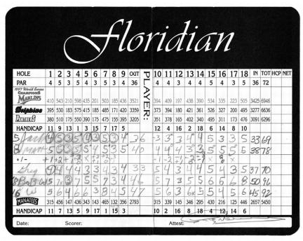
为了保持匿名，我们叫他”NG”。这是我们对”新人”(New Guy)的代号。
保守继任者人选的秘密是容易的部分。但这也是唯一容易的事情。做出这个选择不仅是我职业生涯中最重要的决定，也是我做过的最困难、最令人煎熬的决定。它几乎把我逼疯了，让我无数个夜晚难以入眠。
至少有一年的时间，这件事常常是我每天早上醒来想到的第一件事，也是晚上睡前想的最后一件事。
让这件事如此困难的原因是，我们有三位出色的最终候选人：杰夫·伊梅尔特，负责我们的医疗系统业务；鲍勃·纳德利，负责电力系统；还有吉姆·麦克纳尼，负责飞机发动机业务。三个人都超出了我们对他们设定的每一项期望。他们的表现堪称卓越。
三个人中的任何一个都可以执掌通用电气。他们不仅是出色的领导者，还是我的好朋友——而我知道我必须让其中两个人失望。
我知道这将是我做过的最艰难的事情之一。
这个决定结束了一个漫长而令人纠结的过程。二十年前我自己经历过这个过程，所以我知道自己喜欢和不喜欢其中的哪些部分。如果我在上任几年后就进行继任流程，它可能会和雷格当年选择我时的做法一模一样。他的继任流程周密而深思熟虑，得到了学术界的赞誉。二十年来，公司发生了如此巨大的变化，我可以做得稍有不同。
从多年前以业务为中心的模式，通用电气已经演变成一个非正式且更紧密整合的组织，由强大的价值观和激励机制支撑。候选人都是这种社会架构的产物。他们在变革中茁壮成长，拥有充足的自信。而我们的流程，从季度CEC会议到为期一天的Session C评审，让我们更频繁、更深入地聚在一起。
我带着以下这些想法来处理整个过程：
第一，我希望我的继任者成为通用电气无可争议的领导者。我担心让他面对那些失望的人，他们可能会破坏我们努力创建的精神和价值观。
第二，我想把政治因素从这个过程中剔除。领导层交接对需要向外看而非向内看的组织来说是一个巨大的干扰。当我经历上一次继任时，事情变得高度政治化和分裂。雷格并非有意造成这种政治氛围。这是流程本身的问题。通过把所有候选人都调到总部，他可以更近距离地观察每一个参与竞争的人。但激烈的政治斗争是为此付出的沉重代价。
第三，我想确保董事会深度参与这个决定。展望未来，我们的董事们需要团结在一个人身后。在我关键的早期岁月里，我得到了这种支持。这是天赐之福。在我的”低谷期”——当我被称为”中子杰克”以及我在基德皮博迪公司遇到问题时——董事会的指导和支持对我来说极其宝贵。
第四，我想选择一个足够年轻、能够在这个职位上至少干十年的人。虽然CEO可以立即产生影响，但我一直认为人们应该与自己的决定共存，尤其是与自己的错误共存。我当然是这样做的。任期较短的人可能会被诱惑做出一些疯狂的举动来在公司留下自己的印记。我见过太多这样的例子。在我担任董事长期间，有些公司已经换了五六任CEO。我不希望这种事发生在通用电气。
这就是我们在1994年春天开始这条路时我所思考的。那时我58岁，还有七年任期。我觉得我们需要那么长的时间来做出正确的选择。选择继任者很难。你的赌注全在于未来，而不是过去。我们需要选择一个能够在变革环境中茁壮成长、并将公司带到下一个层次的人：五年、十年，甚至二十年后。
1993年11月，当我任命比尔·科纳蒂为我们新的人力资源高级副总裁时，我告诉他，我们最大的工作是为公司选择下一任CEO。“你和我都将长期面对的事情，就是让合适的人坐上这个位置。”
确实如此。我们谁也没想到这件事几乎会把我们吞噬。
几个月后，在1994年春天，深思熟虑开始了。我们一直有”被卡车撞了”的继任计划：一份如果我出了什么事可以接任的候选人短名单。现在，我们第一次超越紧急情况来考虑，撒下更大的网，寻找那些有潜力在2001年接任的人。
在列出名字之前，我们的高管发展副总裁查克·奥科斯基整理了一份”理想CEO”应该具备的条件清单。
这份规格清单充满了你想要的技能和特质：诚信/价值观、经验、愿景、领导力、决断力(edge)、声望、公正，以及精力/平衡/勇气。查克的清单包括诸如拥有”对增长知识的无尽渴望”和展示”勇敢的倡导精神”等特质。我加入了几条我想要的，比如”能够在聚光灯下自如运作”和”有胆量进行高风险博弈”。
这个练习并没有太大帮助。当你真正深入下去，就连基督也无法胜任我们描述的这份工作。
通过研究我们的C类会议资料，比尔、查克和我最终确定了23位候选人。名单包括那些担任高级副总裁要职的显而易见的人选，以及首次纳入的16位高潜力黑马候选人，其中包括最终进入决赛的三位。最年轻的36岁，最年长的58岁，显然是紧急备选人选之一。候选人包括我们几个业务部门的CEO以及年轻的副总裁。这些是我们在1994年拥有的最佳人选。
我们为每位候选人制定了发展计划，规划了每个人到2000年的晋升路径。我们希望让年轻人在多个业务领域获得更广泛、更深入、更全球化的历练。
1994年6月，比尔和我首次向董事会的管理发展委员会正式汇报继任计划。我们向董事们展示了”理想CEO”清单、全部23位候选人的名单，以及16位高潜力黑马的具体培养计划。从那一刻起，他们职业生涯中的所有关键决策都以继任为考量。
尽管我们做了周密的计划，但今天回顾结果令人深思。最初名单上的23人中，只有9人仍在通用电气。其中一位显然是新任CEO，三位是副董事长，五位负责通用电气的大型业务。11人因各种原因离开，其中7人现在是其他上市公司的CEO。三人退休，包括两位副董事长。
多年来，我们像老鹰一样密切关注这些人。我们不断给他们设置新的考验。到1998年6月仍在竞争行列的8位候选人，已经历了17个不同的岗位。我们把吉姆·麦克纳尼从通用电气亚太区总裁的职位上调走——我们当初安排他去那里是为了展示我们对全球化的承诺。吉姆已经在制造、信息服务和金融服务领域积累了经验。他成为了照明业务的CEO。两年后，我们又调他去担任飞机发动机业务的CEO。
鲍勃·纳德利曾在家电和照明业务工作，当时是运输系统的CEO。他后来成为电力系统的负责人。
杰夫·伊梅尔特职业生涯的大部分时间都在塑料业务，在家电行业体验了激烈的竞争后，又回到塑料业务。1997年，他成为医疗系统的CEO。
1994年6月首次向董事会汇报后，我们开始每年6月和12月进行正式的董事会继任审查。我还会在每年2月讨论高管激励薪酬时，以及每年9月讨论股票期权授予时，提供实时评估。
为了帮助董事们在董事会议室之外形成判断，他们每年4月在奥古斯塔与候选人打高尔夫，每年7月在费尔菲尔德聚会打高尔夫或网球。我们还有年度圣诞派对，配偶也会参加。每次活动前，我的助理罗珊娜和我都会安排高尔夫四人组和晚宴座位，确保董事会成员总能有机会与不同的候选人相处。
1996年，我希望董事会薪酬委员会的成员能在没有我在场的情况下更深入地了解候选人。我请委员会主席赛·卡斯卡特带领他的委员会去各个业务部门考察。赛是一位出色的朋友、优秀的董事会成员和私人顾问。他睿智而坚定，总是在我需要时给我提点，在他认为我值得时慷慨地给予肯定。
两位董事——赛和G.G.米歇尔森——在雷格任命我为董事长时就已在董事会任职。为了保持连续性，我希望他们和另一位委员会成员弗兰克·罗德斯能够留任到权力交接完成。三人都已到了退休年龄。我请求董事会豁免他们的强制退休日期，以便公司能够受益于他们的经验。G.G.和弗兰克与克劳迪奥·冈萨雷斯（金佰利墨西哥业务的CEO）以及安迪·西格勒（冠军国际的退休董事长）一起在赛的委员会任职。
他们与每位业务负责人及其团队共度一天，包括晚上的晚餐或球赛。一切都不是我安排的。早期，有几位候选人打电话问：“杰克，流程是什么？”
“这是你们的舞台，”我回答道。我希望董事会看到每位业务负责人如何处理事务。有些人做了精心的演示，有些人几乎没有文件。有些人带来了整个团队，有些人只带一两个同事。每次考察后，赛都会给我写一份便条，记录委员会的印象。
四年后——经过退休、离职和淘汰——最初的23人缩减到8位认真的候选人。我们仍在调整那份”理想CEO”清单，增删内容，但它仍然有一种超人的感觉。对我更有帮助的是1998年比尔、查克和我一起制定的八项基本目标：
这是一份愿望清单，但相当不错。我们不会实现所有这些目标。我逐渐确信第三项是不现实的。我们不可能留住所有候选人，而且我得出结论，我们也不应该这样做。第四项和第五项最终相互冲突。通过把他们带到费尔菲尔德来”近距离”观察，会有引发恶性竞争的风险。其他目标则经受住了考验。
我从自己的继任过程中学到的最重要的一课，就是必须排除所有内部政治因素。这可能难以置信，但事实确实如此。整个过程结束后，几位候选人告诉我，他们的感受也是一样的。
我们的价值观已经变得如此重要，以至于如果任何一位候选人玩弄手段，他们的同事都会把他们淘汰出局。即使到1998年底我们确定了最后三位人选，媒体开始加大压力，他们中也没有任何一个人做出损害其他人的事情。事实上，情况恰恰相反。
让三位候选人都留在各自的岗位上——鲍勃在斯克内克塔迪，吉姆在辛辛那提，杰夫在密尔沃基——这让他们每个人都能专注于自己的业务。不是政治。不是对朋友曾经管理的业务指手画脚。也不是在组织的新官僚层级中玩弄权术。缺点也很明显。我无法像雷吉把我们都带到费尔菲尔德时那样，获得对每位候选人的近距离个人观察。
我不需要近距离观察。我和这三个人相处多年了。但我确实创造了一些机会来更好地了解他们，而不用把他们带到总部。比如1997年，我让三人都进入了GE金融的董事会。每次月度会议后，我都会和他们共进午餐。我尽量让这些费尔菲尔德的午餐变得不那么正式。我们会开开玩笑，我也能听到他们对GE金融提出的交易的看法。这种方式持续了一段时间，但随着决定时刻的临近，对每个人来说都变得太尴尬了。所以我们停止了这种做法。
我还做了另一件事。有点像雷吉的做法，但在办公室之外进行。1999年春天，我开始与11位主要业务部门的CEO分别进行私人晚餐。在用餐时，我询问他们对我们业务的看法：哪些应该保留，哪些应该放弃，以及高层领导团队应该由谁组成。我让他们选出三位领导者，不想强迫任何人只选一个赢家。
这些交流对组建团队很有帮助，但对于选出一个明确的继任者作用不大。
2000年春天，我再次重复了这个过程。这一次，我更多地关注他们自身业务之外的事情。我想知道他们对我们当前工会谈判和环境问题的看法。我们坦诚地交流了他们对彼此的看法。同样，没有意外。他们都喜欢和尊重彼此。我还问了很多关于我们流程和价值观的问题，他们喜欢什么，想要抛弃什么。
我问其中三人的最重要问题之一，可能也是最难回答的：“如果你没有被选为CEO，你会离开吗？”其中两人，一个比另一个更直接，明确表示他们会离开。一个人说他想要这个职位，他太热爱公司和同事了，会留下来看看结果如何。我对此持保留态度，因为猎头公司肯定会盯上他。考虑到他们三人获得的巨大曝光度，这个假设后来被证明是相当准确的。到这时，我已经下定决心，认为留住他们所有人是不现实的。
从一开始，我就认为这个过程不仅仅是任命一位CEO。我还想建立一个更广泛的团队，利用副董事长的职位来帮助新任领导。我不希望让失望的候选人或那些无法与我的继任者合作的人担任这些角色。我认为最佳人选是当时GE金融CEO丹尼斯·达默曼和NBC的鲍勃·赖特。在我的晚餐谈话中，这两人总是被大家提到的重要人物。丹尼斯于1997年底被任命为副董事长，鲍勃于2000年7月被任命。丹尼斯几乎从一开始就参与了选拔过程，而鲍勃在成为副董事长后也发挥了作用。
随着2000年媒体关注度的升温，不确定性也在增加。在我的克罗顿维尔培训课程上，学员们开始询问我将如何留住这三个人，以及谁将接替他们各自担任业务部门CEO。华尔街的分析师们也在问同样的问题。
我有过很多想法，有好有坏，但在六月的一个周末，我想到了一个非常好的主意。是在淋浴时想到的。我经常在那里进行一些最好的思考。因为我确信三人中有两人会离开，我决定按照我的方式”失去”他们。
与其等到一人晋升或离开后再任命他们的接班人，我决定立即安排他们的继任者到位。鲍勃、吉姆和杰夫可能还有五个月不太舒服的任期，但他们业务部门的新领导将得到充分培训并准备就绪。他们的组织将知道下一任老板是谁，这将减少谣言和闲话。我还认为这会让华尔街放心。
在我们的Session C（人才评估会议）期间，每位业务领导都必须指定自己的继任者。这通常是一个例行公事。2000年4月，CEO决定将在12月做出，我写信给所有业务领导，要求他们这次至少花一个小时讨论他们的接班人。这些讨论揭示了三位候选人特别喜欢和想要的人选。
周一早上，我兴奋地把周末想出的主意告诉了比尔和丹尼斯。他们很热情。我们现在可以把与CEO们合得来的人安排到新的首席运营官职位上。由于董事会对所有人选都很了解，那周很容易就通过电话向董事们解释了这个新想法。他们很喜欢。
现在我必须向鲍勃、杰夫和吉姆解释这个决定。我承认这可能看起来不公平。但我说明了这样做符合他们员工和股东的最大利益。
尽管如此，这对他们来说还是一个意外。
“那么，你是在告诉我，要么晋升，要么出局？”其中一人问道。
“是的，就是这样。你向我下了战书，说如果事情不顺利你就要离开。我的回应是：‘好，这是将来接替你的人。现在你用六个月时间培训他。’”
“太绝了！”他回答道。
“听着，我知道这有点残酷，因为看起来太决绝了。但我必须做出这个决定。”
他们都不认为这是什么好事，但他们理解这确实符合公司的最佳利益。如果说人才工厂需要验证的话，我们在2000年6月确实得到了验证。我们已经准备好了三位优秀的人选担任新的首席运营官——他们都是43岁。
戴夫·卡尔霍恩曾是审计部门的负责人，之后在亚洲塑料业务、运输、照明和再保险等领域担任过一系列CEO职位。他聪明、有趣、反应敏捷，热爱运动，善于建立人际关系。戴夫非常适合在飞机发动机部门担任吉姆·麦克纳尼手下的首席运营官。
我第一次见到约翰·赖斯是在斯克内克塔迪与年轻审计师共进午餐时。他性格出色，思维敏锐，我立刻就喜欢上了他。我告诉他：“离开财务，去做运营。”约翰照做了，直接进入了家电制造部门。经过一系列晋升，他最终接替戴夫·卡尔霍恩，先是担任通用电气亚洲塑料业务的CEO，然后是通用电气运输业务的CEO。这些经历使他成为鲍勃·纳德利手下电力系统首席运营官的理想人选。
乔·霍根在塑料业务的多个全球岗位工作过，之后成为GE-Fanuc的CEO。乔43岁，但看起来只有15岁。他在每家酒吧可能都会被要求出示身份证。虽然他看起来年轻，但他是一位成熟的管理者，具有出色的人际交往能力和天生的领导才能。几个月前，我们把他调到医疗系统部门负责电子商务，为他担任杰夫·伊梅尔特手下首席运营官的下一份工作做准备。
把这三位明星放到这些新岗位上是一个改变格局的事件。虽然包括我在内的30万名员工仍然不知道谁将成为他们的董事长，但我们三个最大业务部门的员工已经确切知道谁将成为他们的新CEO。
公开场合，我说这些变动是”我们领导层继任计划的自然步骤”。我继续回绝那些想谈论这些变动或任何与继任相关事宜的记者。
鲍勃、杰夫和吉姆也是如此。我们都不想帮助媒体把这件事炒作成一场闹剧。不过，如果说有什么的话，我太天真了，以为能完全挡住媒体。毕竟，关于我继任者的第一批报道早在1996年就出现了。当我们进入9月，距离宣布我的继任者还有两个月时，媒体似乎只关注通用电气的继任问题。
在三四天的时间里，《商业周刊》、《华尔街日报》、《金融时报》和伦敦《星期日泰晤士报》都刊登了相关报道。这些文章不仅点名了领跑者，还在没有我们任何帮助的情况下对他们进行了分析和介绍。
报道出来时，我正在澳大利亚参加奥运会。在酒店房间里阅读传真过来的文章时，我对我们的继任问题受到如此多的关注感到惊讶。我也为此感到难过，知道这给他们三人带来了多大的压力。
凌晨一点半，我坐在酒店房间的笔记本电脑前，给三人都发了电子邮件：
杰夫、吉姆、鲍勃——
很抱歉你们不得不经历这些媒体的胡闹。
我原以为让大家都留在各自岗位上会比雷格的做法更好。结果媒体会把每一次继任都变成某种冲突。感谢你们都是这么优秀的人。公司很幸运你们一直坚持参与这个过程。你们出色的业绩和在各方面的卓越态度也让这个过程对我来说更具挑战性。感谢你们真的如此特别。
我说的每一个字都是真心的。我收到的一个回复很有代表性：
杰克，归根结底，我们都很幸运能参与这一切，这种感觉压倒了公众审视带来的任何不适。成长、挑战和乐趣让这一切都令人难忘，无论接下来谁会怎样。你在为通用电气做正确的事，我相信我们都支持这个过程。你最喜欢的候选人。
这些回复典型地体现了走到这一步的人的素质——而这只让我的决定更加艰难。有时候我开玩笑说，我希望他们中有人做点蠢事或疯狂的事。一桩丑闻会让决定更容易。当我再次与董事会回顾这个过程时，我向董事们讲述了这对我来说有多困难。萨姆·纳恩，这位来自佐治亚州的前美国参议员自1997年起就在我们董事会任职，他的回应很精彩。
“杰克，”萨姆说，“别再为挑选这几个人中的一个而自怨自艾了。你已经让他们都出名了。他们在竞争美国最好的职位，而且还不清楚他们中谁会得到它。这意味着他们都很优秀。把他们放在这个位置上，你为他们的职业生涯所做的，比他们默默无闻时可能发生的要多得多。”
这对我来说是一些安慰，但我知道这并没有让他们的处境变得更轻松。当那些报道出现时，三人都在佛蒙特州斯托的保诚证券投资会议上一起吃早餐。他们是房间里所有人关注的焦点。几天后，我碰到了约翰·布莱斯通，他也参加了同一个会议。约翰1996年离开通用电气，成为SPX的CEO。
“你真的应该感到骄傲，”他告诉我。“那几个人在台上互相开玩笑、互相调侃。他们完全相互支持。在场的股东们看到公司高层作为一个团队在运作。你应该为此感到非常欣慰。”讽刺的是，约翰并不知道他也在我们1994年第一份名单上的16位明星之列。
说实话，我为这三个人都感到骄傲。每个人都有各自的特点，但他们都是出色的人才。他们都在创纪录的利润率、创纪录的市场份额下经营着自己的业务，员工士气也达到了历史最高水平。
1995年，鲍勃接手的业务正面临电力涡轮机在各地频繁故障的困境。这项业务的净利润已经连续三年下滑。他主导了涡轮机的技术修复，随后又赶上了电力供应短缺导致需求暴涨的机遇。他建立了出色的运营机制来抓住这波增长。他完成了数十项全球收购。
他将这项业务的营业收入从1995年的7.7亿美元提升到2000年的28亿美元。更重要的是，他预计从1999年到2002年，每年净利润增长10亿美元。全球只有少数几家公司的税后利润能达到10亿美元，而鲍勃正在连续三年每年增加10亿美元的增量利润。
吉姆同样交出了出色的成绩单。在他领导飞机发动机业务的三年里，这个部门为通用电气贡献的利润超过了公司前二十大业务中的任何一个。他将业务收入从1997年的78亿美元提升到2000年的108亿美元，同时每年利润增长21%。他大力发展服务业务，使其利润占比超过了业务总利润的一半。而且，为波音远程777客机拿下GE-90发动机（最大、最强劲的喷气发动机）订单，是一项了不起的战略成就。
杰夫同样将我们的医疗系统业务提升到了新的高度。他提出了全球化产品公司的概念，这将成为公司几乎所有业务的典范——从世界各地获取智力资源、零部件和成品。他完成了多项收购并整合得很好。他正在让医疗业务从硬件公司转型为信息公司。
在三年时间里，他带领业务实现了创纪录的利润和收入，销售额从1996年的39亿美元增长到2000年的72亿美元，净利润每年也增长21%。杰夫让我们在欧洲成为更强劲的竞争者，并在亚洲做到了第一。此外，医疗业务运用六西格玛(Six Sigma)技术推出的新产品数量超过了公司任何其他业务部门。
让这个决定如此艰难的不仅仅是他们出色的业绩。我和这三个人渊源很深。他们都上过我在克罗顿维尔(Crotonville)的课程。早在他们成为业务CEO之前，我就在各种评审会上和他们相处了无数个小时。我提拔了他们，看着他们成长，往往是通过非常艰难的岗位，成长为极其自信的高管。
我第一次见到杰夫是在1982年，当时他还是哈佛商学院的MBA学生。当他选择通用电气而不是摩根士丹利时，摩根的一位合伙人试图劝他改变主意。
“通用电气？听着，如果你来摩根士丹利工作，六个月内你就会向杰克·韦尔奇做汇报。如果你去通用电气，也许，仅仅是也许，你在第十年才能见他一面。”加入公司三十天后，杰夫就和我以及公司市场部的其他五个人围坐在一张桌子旁。
和许多优秀的高管一样，他也经历过挫折——而我在他最艰难的时候一直盯着他。1989年，我们把他调到家电部门，让他在一个艰难的行业中拓宽经验。这确实给了他更多经验，只是比我们预期的来得快得多。他正好赶上了一次大规模召回事件，一条新冰箱生产线的压缩机出了故障。杰夫带领7200名员工修复了300万台压缩机。在这场危机期间的月度运营评审会上，我近距离观察了他。
还有一次我对杰夫很严厉，是在1994年他在塑料业务遇到非常艰难的一年时。作为通用电气塑料美洲区的总经理，他签订了一些固定价格合同，结果被夹在不断上涨的原材料成本和对客户的承诺之间。他的净利润目标差了5000万美元。按杰夫的说法，1995年1月他来博卡(Boca)开会时，一直努力躲着我。他晚到晚餐，早早上床睡觉。最后一晚，当他匆匆赶往电梯回房间时，我终于逮住了他。
我抓住他的肩膀，把他转过来。
“杰夫，我是你最大的支持者，但你刚刚度过了公司最糟糕的一年。真的是最糟糕的一年。我很看好你，我知道你能做得更好。但如果你不能扭转局面，我就得换掉你。”
“听着，”他说，“如果业绩达不到应有的水平，你不用开除我，因为我自己会离开。”
当然，他扭转了局面——之后他担任的每一个职位都表现出色。
关于鲍勃或吉姆，我也能讲出类似的故事。对我来说，这是一个感情上很难做的决定。这里面有太多的心血、汗水、家庭和情感。
我从来不怕做决定。但这一次不同。
在2000年7月的董事会会议上，我们和薪酬委员会花了三个小时，反复权衡每位候选人的优缺点。这是一次开放式的会议。整个讨论过程中，我一直在克制自己不要过早下定论。我想把选择权保留到最后一刻。上午的会议结束后，我们照例和各业务部门的CEO们打高尔夫。我请委员会成员在经过一夜的思考后，第二天早上提前一小时回来继续讨论。
直到2000年10月29日星期天晚上，我才做出了推荐决定。当时我们在南卡罗来纳州格林维尔，参加董事会对一家电力涡轮机工厂的访问。这次董事会行程早在一年前就已安排好。这可能不是我做过的最明智的决定。这会给鲍勃·纳德利带来他不应承受的压力，但我喜欢向董事会展示最热门的业务。多亏了鲍勃，没有什么比电力系统更火热的了，第二天早上，他做了一场精彩的展示。
在与我们现任和前任董事们在奥古斯塔进行了一个周末的高尔夫活动后——这个传统至少可以追溯到雷格的年代——我们飞往格林维尔，在波因塞特俱乐部的一个私人房间共进晚餐，那是一座美丽的南方老宅。
那个周日晚上，在我们做出继任决定之前，还有一个小插曲。碰巧《60分钟》节目要播出一期关于我的专访。鲍勃的电力系统团队和我们的董事会成员都在场，在餐厅里观看几台电视中的一台。
当橄榄球比赛把《60分钟》推迟了将近半小时时，我真的很紧张。我和莱斯利·斯塔尔的采访进行得很顺利，但你永远不知道会发生什么。他们有超过23小时的录像带，却只做15分钟的专题报道。
当你如此暴露在镜头下时，几乎任何事情都可能发生。事实上，莱斯利对我很友善。节目结束后我松了一口气。
晚餐后，我们的董事们被送往附近的希尔顿酒店。我们在希尔顿楼上预订了一间会议室，用于召开特别董事会议。为确保隐私，通用电气的安保人员驻守在门外。唯一在场的非董事会成员是比尔·科纳蒂，他从一开始就和我一起参与这个流程。鲍勃和他的团队回到了各自的房间或家中。
晚上10点刚过，我宣布会议开始。
“我们已经得出了结论。”
在接下来的大约15分钟里，我向董事会解释了为什么我认为杰夫应该成为新的领导人。他在我们的医疗业务中取得了卓越成就，这将成为通用电气未来的典范。我觉得杰夫完美地融合了智慧和锐气，并且体现了对我来说非常重要的特质——他真的很自在从容(comfortable in his own skin)。虽然竞争显然很激烈，但我认为他是完美的人选。
丹尼斯·达默曼和鲍勃·赖特发表了他们的看法。丹尼斯回忆起1982年他在哈佛商学院第一次面试杰夫的情景。他着重谈到了杰夫的领导能力和客户导向。鲍勃则评论了他的发展空间(runway)。然后，董事会的每位成员都发表了意见，全体一致赞成。在桌子的另一端，弗兰克·罗兹雄辩地谈到了杰夫的学习和成长能力。他说，在他看来，杰夫具有足够的智识广度(intellectual bandwidth)，显然是正确的选择。
这是我参加过的最好的会议之一。每个人都想发言。我们都承担着同样的重担。至少有两位董事提出了尝试留住另外两位候选人中至少一位的可能性。失去这么多人才让他们很痛心。
“你确定不想试着留住一个吗？”一位董事会成员问道。
“我经历过那种处境，”我说。“我知道那是什么感觉。无论谁成为这家公司的董事长，都必须充满自信和热情。我希望他感觉自己无比强大。我不希望他总是回头张望。”
然后我请比尔·科纳蒂分享他的看法，他之前倾向于留住两人中的一位。比尔说，他最初认为其他候选人的经验和能力如此出色，我们应该尝试留住其中一位，但他最终还是勉强同意了我的观点。
最后，我们都觉得那两位落选者值得作为CEO去经营他们自己的事业。
我在结束会议时说：“我们现在不想做最终决定。花三周时间考虑一下。如果有任何顾虑，请打电话给我。”我告诉董事会，我会在感恩节前的周三打电话给委员会成员，讨论这个决定并请求他们的最终认可。
我们在格林维尔的两小时会议于午夜结束，我的助理罗珊娜走进会议室，清理了所有文件。
就在格林维尔十月会议的六天前，发生了一件事改变了我离开公司的时间表。我们宣布收购霍尼韦尔，我同意延长CEO任期以监督整合工作，而不是按原计划在四月离开。这笔我们有史以来最大的交易引发了大量媒体讨论，认为这会影响我们的继任计划。
然而，在内部，我们都不认为这笔交易应该改变任何事情。事实也确实如此——我最终于2001年9月初离开，比我们1994年制定的原计划晚了四个月。
在接下来的三周里，我接到了至少六位董事的电话，他们都对这个决定和流程表示赞赏。他们也在试图给我打气。我对这个决定感到高兴，但仍在为告诉鲍勃和吉姆他们没有得到这份工作而苦恼。
在感恩节前的周三，我打电话给薪酬委员会成员，获得了他们的批准，将在周五向全体董事会推荐任命杰夫为候任董事长。通过在感恩节假期做出决定，我们可以尽量减少又一轮继任报道的宣传。大多数人预计我们会在12月15日的例行董事会议后宣布人选。
周五收盘后，我召集全体董事会在下午5点进行正式投票。
在董事会于11月24日一致且全心全意地批准杰夫为候任董事长后，我在下午5点30分打电话给他，他和家人正在南卡罗来纳州度假。
“董事会做出了决定。对你来说是个好消息。我希望你明天来棕榈滩。带上你的家人，我们中午见面吃午餐。”我向他说明了精心安排的后续计划。
我们没有使用通用电气的公务机，而是安排了一架包机，在上午10:30从查尔斯顿接杰夫、他的妻子安迪和女儿莎拉。为了确保安全，杰夫被登记为詹姆斯·卡斯卡特——西的儿子，飞机也以他的名字预订。西还派了他俱乐部的一辆车去接伊梅尔特一家，送他们到我家。作为最后的预防措施，飞机降落在斯图尔特机场，而不是通用电气飞机通常降落的西棕榈滩机场。
当车停下时，我已经在车道上等着迎接他，告诉他这个好消息。我们去了北棕榈滩的一家意大利餐厅卡迈恩吃午餐。午餐后，简开车送杰夫的妻子和女儿去了我在东角的一套公寓。杰夫和我一起回来，为周一在纽约的新闻发布会做准备。比尔·科纳蒂周末正好在佛罗里达，也过来帮忙。我们审阅了已经起草好的宣布任命的新闻稿，把”NG”（新人的缩写）换成了杰夫的名字。
丹尼斯·达默曼、鲍勃·赖特和他们的妻子当晚飞了过来，大家一起在我家吃晚餐祝贺杰夫。我们度过了一个美好的夜晚。但我心里却打着结，因为我的工作只完成了一半——而且是容易的那一半。
我害怕第二天要告诉鲍勃和吉姆他们没有得到这份工作。
周日，我等到下午2点才打电话。我已经拿到了三位候选人年底前的日程安排，所以知道在哪里能联系到他们。
我打电话时，鲍勃和吉姆都在家。
“董事会和我已经做出了决定。我想过去当面和你谈谈这个决定以及背后的理由。”
我不打算在电话里告诉任何一位候选人他不会成为CEO。我欠他们每个人一个机会，让他们能看着我的眼睛听我说出这个消息。但我也不想给他们虚假的希望。我至少练习了十遍这些话才说得恰当，甚至在打电话之前还和简演练了一遍。
下午3点，我在倾盆大雨中到达西棕榈滩机场。感恩节假期的空中交通本就繁忙，又遇上席卷整个东部地区的严重雷暴。许多机场关闭，飞机停飞。当我告诉飞行员我们不去原定的威彻斯特机场，而是去辛辛那提时，他们很震惊。他们不得不在这种连起飞都成问题的天气里更改所有飞行计划。
飞行员说恶劣天气会让我们至少滞留几个小时，所以我躺在沙发上，思考着该说什么。我讨厌我必须做的事。这就像不得不在孩子之间做选择。这看起来太不公平了。他们都为公司拼尽全力。他们从未对我或对彼此耍过手段。
他们付出了百分之一千的努力。
在这件事上，我要求这三个人做这个，他们都做了这个，还做了这个，然后又做了这个。他们远远超出了我们的期望。现在我却要给其中两人带来他们职业生涯中最坏的消息——除了鼓励他们会在其他地方成为出色的CEO之外，我没有别的可以给他们。
下午天很早就黑了。我们在下午5:30穿过黑沉沉的天空离开棕榈滩，大约晚上7点到达辛辛那提的伦肯航空站。那里湿漉漉的，阴沉沉的，黑漆漆的。那是一个寒冷刺骨的夜晚。我穿过薄雾走过停机坪，朝着灯光昏暗的私人机场机库走去。我感到非常孤独，只带着我那个旧皮公文包。
四周空无一人。当我走到门口时，吉姆已经在那里了。我和他打了招呼，我们很快走进一间小会议室。
“显然，”我说，“这将是我一生中最艰难的谈话。”
吉姆的脸上写满了失望。
“我选了杰夫。如果要怪谁，就怪我。把我的照片挂在墙上扔飞镖吧。我甚至说不出为什么。这是我的直觉和第六感。我们有三个金牌得主，却只有一枚金牌可以颁发。”
吉姆开玩笑说不会重新计票。那正是佛罗里达总统选举乱局期间。他表现得再得体不过了。
“我想让你知道，我想要这份工作，但我也想告诉你，我认为这个过程是公平的，因为你一直坦诚相待，给了我们每个人充分的机会。”
接下来的40分钟，我们进行了一次很好的交谈。我们聊了人生、他的父亲，以及他在通用电气的18年。我告诉吉姆，自从1982年我们第一次见面以来，我见证了他的巨大成长。我回忆起他是如何被我在皮茨菲尔德的老同事格雷格·利曼特从麦肯锡咨询公司挖来的。从他在信息服务部门做业务拓展的第一份工作到最后一份工作，他为我们做了很多了不起的事——没有什么比他对飞机发动机业务的转型更出色的了。
“你最后两年是你表现最好的时期，而且你每天都在进步。无论去哪里，你都会成为一位出色的CEO。”
我走回飞机，又一次让机组人员吃了一惊。
“我们不去威彻斯特了。我们现在需要飞往奥尔巴尼。”他们手忙脚乱地做出调整，我们穿过厚厚的云层，大约晚上9点到达奥尔巴尼一个空荡荡的机场。天还是又湿又冷。由于强劲的顺风，我们比预计的早到了，鲍勃还没来。
他不在让我实际上松了一口气。告诉他没有得到这份工作会特别困难。在三人中，我认识鲍勃最久，是在1970年代末他还是通用电气工厂经理时认识的。他的父亲在通用电气工作了一辈子，就像杰夫的父亲一样。
当鲍勃在1988年离开通用电气加入凯斯公司时，他是我极少数试图挽留的高管之一。我没能说服他留下，但三年后他回来了。从那以后，我一直关注并欣赏他的运营表现。他交出的数字是我在公司40年来见过的最好成绩，很可能是通用电气历史上任何业务中最出色的运营表现。
鲍勃准时到达，比我晚十分钟。我们一起坐在一个空旷大休息室角落的沙发上。只有我们两个人。
我告诉他这个消息，他的失望显而易见。
“我还能做什么呢？”他问道。
“鲍勃，你做的比我想象的还要多。你干得非常出色。每个人都喜欢你，你会成为一位伟大的CEO。但这个问题我没法替你回答。我无法让你满意。你做了所有被要求做的事情，甚至更多。我相信杰夫是这家公司未来发展的合适人选。这里只有一个人该受责备，那就是我。”
鲍勃和我进行了一次长时间的深入讨论。我无法满足他对更多信息的需求。他出色的运营业绩让他很难接受这个决定。
我再次试图缓解他的失望。
“鲍勃，你会成为一位全明星级别的CEO。外面有一家幸运的大公司正等着得到你。”
我们握手拥抱。
回到飞机上，我点了一大杯加冰伏特加，终于飞回了威彻斯特。那天晚上我望着窗外，啜饮着酒，陷入了许多矛盾的情绪中。我松了一口气，一切终于结束了。我为杰夫感到兴奋，完全相信我们选择了最佳人选。我为让两位为公司付出如此之多的朋友失望而感到非常难过。我发誓要做他们的代理人，尽我所能帮助他们。
周一我们举行了一场激动人心的新闻发布会。我对杰夫的表现非常满意。他展现了我所了解的所有自信和品质。我们唯一明显的失误——我们俩都犯了——就是没有互相核对着装。我们都穿着蓝色衬衫和蓝色西装外套出现。
媒体对此开了些玩笑。
发布会结束后，接下来几天我与海德思哲的朋友杰里·罗奇和史宾沙的汤姆·内夫讨论了鲍勃和吉姆正在考虑的工作机会。有一次，汤姆甚至在游说我让其中一位去他的客户朗讯科技。我告诉汤姆我认为这不是个好主意。
十天之内，吉姆被选为3M的CEO，鲍勃被选为家得宝的CEO。我们的一位董事肯·兰贡在鲍勃的任命中发挥了重要作用，因为他一直积极参与继任事宜，迫不及待地打电话给鲍勃，招募他加入家得宝——肯是那里的创始人和大股东。
没有什么比吉姆、鲍勃和他们的妻子与雷格、杰夫和我一起参加我们在通用电气大厦彩虹厅举办的年度圣诞派对更能体现通用电气的价值观了。当我在致辞中提到他们时，我们的董事和高管们起立为他们鼓掌。
没有人比我鼓掌更用力。
几周后在博卡，我真的会骄傲得心花怒放。那时，我期待着杰夫作为新任董事长当选人的首次演讲。然而，当选总统乔治·W·布什邀请了包括我在内的几位CEO去奥斯汀参加经济简报会。我在博卡做了简短的开场白，然后33年来第一次离开了我们的运营经理会议。
这是一个意外但幸运的机会，因为这让杰夫有机会展示自己，而不用我坐在前排。当晚我回来时，他演讲的录像带已经在我的酒店房间里等着了。
看到他掌控公司令人振奋。杰夫机智、聪明、有远见，而且极具感染力。
他就是CEO！
在博卡的闭幕致辞中，我告诉大家，我在房间的电视屏幕上观看了杰夫的开场演讲，为他感到骄傲，就像一个初为人父的父亲。他的表现唤起了我最幸福的回忆之一：39年前，我夹着一盒糖果走进皮茨菲尔德塑料大道的实验室，庆祝我第一个孩子凯瑟琳的出生。
在博卡，我在比谁的胸膛挺得更高——我的对手是杰夫的亲生父亲，他在通用电气的飞机发动机业务部门工作了38年。
我确信”新人”就是”对的人”。
大约20年前，我站在纽约皮埃尔酒店的讲台后面，向华尔街分析师们阐述了我对通用电气未来发展的愿景。尽管那天我的期望已经很高，但我从未想到公司和其中的人们能够取得如此多的成就。
我们撼动了一个官僚机构。我们创建了一个世界级的组织，其卓越性在每个大陆都得到认可。我相信我即将离开的通用电气是一个真正的精英体制(meritocracy)，一个充满投入和热情的人们的地方，拥有良好的价值观和高度的诚信。
这是一家为伟大创意而生的公司，一个人们每天早上起床都在寻找更好方法的地方。
这段旅程非常精彩。然而，通用电气在20年间的成就只是公司生命中的一个小片段。我们建立在之前100年的基础之上。更让我兴奋的是这个组织在未来20年可能会变成什么样子。我知道它的未来将由一支出色的团队引领，他们将把公司带向更伟大的成就。
有时候，我旅程的前十年感觉像是一场战争。我们在曲线之前就开始变革，为此付出了代价。没有温和的革命。
也没有温和的组织转型。
与外界的看法相反，我其实经常过于谨慎。我等了太久才解雇那些不愿或无法面对现实的经理。在一些收购上我犹豫不决，对互联网的接受也很慢，甚至在打破曾经官僚机构的所有仪式和传统方面也显得胆怯。
几乎所有事情都应该而且可以做得更快。
尽管如此，通用电气已经成为一个乐于接受变革的组织，利用其规模承担更多风险，并专注于客户而非自身。我一直相信，当一个机构内部的变革速度慢于外部变革速度时，终结就在眼前。
唯一的问题是何时。
学会热爱变革对任何百年老店来说都是违背本性的行为，但我即将离开的通用电气正是这样做的。我们对学习和分享新想法的热情得益于一套运营系统，它让多元化的业务比独立运营时增长更快、表现更好。
是优秀的人才，而非伟大的战略，让这一切得以实现。我们在招聘、培训、发展和奖励最优秀人才方面投入了大量时间。如果没有最优秀的人才不断突破自我，我们的影响力和成功都会受到限制。
全球化是突破自我的一个合理结果。我们在全球范围内寻找最好的产品和智慧。我们医疗系统部门的新型Proteus放射系统就是一个完美的例子。这套系统目前在北京生产，是一条跨洲供应链的产物，为其719个零部件中的每一个都选择了最佳质量和最低成本。这些零部件产自美国、加拿大、墨西哥、北非、摩洛哥、班加罗尔、韩国、台湾以及西欧和东欧国家。扫描仪的发电机在印度制造，悬挂系统在墨西哥生产，球管机构在美国制造。这些零部件和许多其他组件随后被运往北京进行组装。
六西格玛(Six Sigma)将所有环节紧密联系在一起。
像这样的书通常应该以预测作为结尾……
预测是困难的。
当我成为董事长时，传统观点可以归纳为三个”必然”趋势：石油价格为每桶35美元，将涨到100美元——如果你能买到的话；日本制造业巨头将接管美国；通货膨胀率为20%，将永远保持两位数。
预测就是这么回事。
然而，确实存在一些力量将改变我们许多人对市场、组织和管理的看法。
资本主义精灵几乎已经从瓶子里跑出来了，就在中国。这个国家将在新世纪产生巨大影响。中国企业家对变革的开放程度前所未有。中国领导人在释放经济活力的同时管理着他们的社会。
对于那些坐在会议室里画竞争格局饼图的人来说，请为中国人留出一半的饼。今天在中国有一些你从未听说过的公司，它们将在未来十年崛起为竞争巨头，威胁到你的生存。
中国远不止是一个市场。它正在迅速成为一个庞大的竞争对手。
这个国家日益增长的经济实力将使欧洲、美国和日本之间的关系复杂化。贸易紧张将加剧。我不知道保护主义会采取什么形式，但我知道围绕它的讨论将是漫长而激烈的。
层级制度已死。未来的组织将几乎没有层级，越来越无边界，成为一系列信息网络，由更多的电子设备和更少的人来管理流程。信息将变得透明。没有任何领导者能够囤积那些曾经让角落办公室如此强大的信息。
经理运营业务所需的大部分信息将存在于”数字驾驶舱”的电脑屏幕上。它将包含每一条实时数据，并自动提醒需要立即关注的趋势。
虽然信息将以前所未有的方式可用，但推动组织运转的始终是人的判断。
在我离开通用电气前几个月的一个晚上，我在纽约第五大道的一家商店买新毛衣。当帮我服务的销售员下楼去库房找我的尺码时，店长走过来找我。
“韦尔奇先生，”他说，“我能和您谈谈吗？”
他是一位年轻的非裔美国人，说他前一天晚上在电视上看到查理·罗斯采访我。他说他很喜欢我的评论，但想问一个后续问题。在罗斯的采访中，我提到组织持续淘汰表现最差的10%员工是多么重要。
店长把我带到楼梯下一个僻静的角落，那里没人能听到我们说话。
他解释说他的销售团队有20个人。
“韦尔奇先生，”他问，“我真的必须让两个人走吗？”
“如果你想拥有第五大道上最好的销售团队，你可能必须这样做。”
我不禁笑了，因为这次我听到自己的话回传给我的不是通用电气内部的人，而是第五大道一家服装店的楼层经理。我想他明白，如果你想在自己的领域做到最好，这很难——真的很难。
这需要自信、勇气，以及在做出艰难决定时承受压力的意愿。
说点轻松的，鲍勃·纳德利和肯·兰贡在家得宝(Home Depot)的合作在我们所有人之间引发了很多有趣的玩笑。肯是一个传奇人物。他高大、嗓门大、慷慨、固执己见而且聪明——是一位理想的董事。但我在1999年让他加入通用电气董事会，是因为他认识所有人，绝对是所有人。我希望杰夫能在肯身上得到我20年前在沃尔特·里斯顿身上得到的东西——一个告诉所有人杰夫将成为美国最好CEO的啦啦队长。
这几乎成功了。然而，鲍勃加入家得宝几周后，我听说肯在纽约到处吹嘘鲍勃的工作表现。我打电话质问他。
“你抓到我了，”他笑着说，“从现在起一定是杰夫、杰夫、杰夫。”
仅仅几周后，《财富》杂志记者帕蒂·塞勒斯因另一篇报道打来电话，提到她为即将发表的一篇关于家得宝的文章采访了兰贡。我问她肯对杰夫说了什么。她回答说他对鲍勃赞不绝口——但从未提到杰夫。
现在我有证人了。我打电话给肯，狠狠批评了他一顿。
“你这个混蛋，”我开玩笑说，“我听说你还在推销鲍勃。你答应过我是杰夫、杰夫、杰夫！”
我知道肯有复杂的情绪是可以理解的。作为家得宝的创始人和通用电气的董事，他能看到两位出色的CEO。我只需要让他保持”诚实”。
2001年9月离开通用电气之前，我有很多机会道别。其中一次令人难忘的告别是1月初在博卡拉顿举行的通用电气550位高层领导的最后一次会议。参加了33年的这些会议——超过我人生的一半——这将是最后一次。
1981年我接手了一家非常好的公司，很多人让它变得更好。我相信我的继任者将接手一家伟大的公司，并使它更加伟大。这就是董事长工作的全部意义。
我想确保在闭幕致辞中传达这个信息。我像往常一样在黄色便签本上记下我的想法。我花了两天时间整理我想说的话。我不想显得多愁善感或感情用事。
我想让每个人都知道，通用电气在未来二十年必须比过去二十年改变更多。
那天早上我告诉他们的话适用于任何企业。信息很简单：忘记我们一起取得的成就。忘记昨天。
“20年前我得到了这份工作，我们一起改变了很多，”我说，“这是一段充满美好回忆和持久友谊的有趣而精彩的旅程。对于我们所做的大部分事情，忘掉它吧。今天的剪报明天就用来包鱼了。”
“这将是一场全新的比赛：你从未见过的变化，以你从未见过的速度发生。对于那些享受变化的人来说，这多么有趣。对于那些不理解变化的人来说，这多么可怕。”
最后我告诉每个人要把组织颠倒过来，彻底改变它，然后把屋顶掀翻。
演讲得到了热烈的反响。结尾对我和许多老朋友来说都很感人。
博卡的惯例是，在三天的最后一晚，乔伊斯·赫根汉——我以前的公关主管，现在是通用电气基金会主席——宣布下午的高尔夫和网球比分。
那天球场上风大又冷。有些人打了四个洞就因为太冷而放弃了。乔伊斯报告了我当天的成绩，然后说：“我相信在座的每个人都有一个最喜欢的杰克·韦尔奇故事，但既然麦克风在我手里，你们就得听我的。”
我想——又是一次告别。
“十三年前，”她说，“我在纽黑文的医院做大手术。手术后第二天，我接到杰克的电话，说他要来看我。我非但没有高兴，反而告诉他我不想见他，因为我的头发乱糟糟的。”
“他的回应很典型的杰克风格：’我真不敢相信你。乔伊斯，我是来给你打气的，不是来和你上床的！’这基本上概括了杰克。我当时觉得自己快死了，却还在担心我的头发。杰克的幽默、坦率和友谊很快把我拉回了现实。”
宴会厅里的550人哄堂大笑，我的脸有点红了。她说的确实是真的。我想这只有一家真正不拘一格的公司——一家街角杂货店——的董事长才能对员工说的话。
接下来杰夫·伊梅尔特接过话筒，一群服务员端着香槟酒杯在房间里穿梭。那天晚上杰夫说了很多关于我的好话。他回顾了1981年我在皮埃尔酒店对分析师们说的话，当时我告诉他们我的梦想是创建一家让人们能够超越自身极限的公司。杰夫说他和房间里的每个人都经历了他们从未想过可能的事情。
杰夫的话真的让我很感动，尤其是当所有人起立鼓掌的时候。杰夫穿过迷宫般的桌子向我走来。我们拥抱了彼此，然后我坐下，希望其他人也能坐下。
他们不肯。我最后跳上椅子，举起酒杯，向房间里的每个人敬酒。
“我们一起做了从未想象过的事情。我们都去了从未想过会看到的地方。我们都实现了从未想过可能的梦想。我来自一个和你们大多数人一样的地方，我很幸运，这要感谢你们所有人的出色工作。感谢你们如此特别。我爱你们所有人。”
那是一个难忘的夜晚。我希望我母亲能在那里。
就像成功的公司一样，书籍从来不是一个人的创作，这本书就是一个很好的例子。我要感谢书中提到的好朋友、老师、同事和家人。没有他们的爱和支持，你永远不会听说一个叫杰克·韦尔奇的人。
有四个人值得特别感谢，因为他们帮助这本书从模糊的想法变成了印刷品。我的合作者约翰·伯恩与我共度了一千多个小时，采访了五十多人来唤起我的记忆。他的耐心和好奇心永无止境。我的编辑拉里·基什鲍姆为这个项目倾注了全部心血，他的热情从未减退。我爱他！华纳图书的里克·沃尔夫也非常有帮助。我称他为”调度长”，因为他确保一切都准时到站。最后，从我启动这个项目的那天起，我的助理罗珊妮·巴多夫斯基就让我的生活井然有序、天衣无缝，正如她在过去十五年里所做的那样。罗是世界第八大奇迹。
最后，感谢那个在各方面都让我的生活变得更好的女人，她教会了我爱的意义，让我成为世界上最幸福的人——苏西，我感谢你的一切。
这本书的精装版于2001年9月11日出版。事实上，在第一架飞机撞上世贸中心之前，9月11日本该是我职业生涯中最令人振奋的一天。四天前我刚刚退休，在纽约克罗顿维尔的管理发展中心举办了一场美好的派对作为收尾，家人、挚友和通用电气的同事们都出席了。杰夫·伊梅尔特担任主持，庆祝活动一直持续到深夜，我们中最后一批人直到黎明时分才回家。
那一刻，一切似乎皆有可能。我知道我把通用电气交给了杰夫这位出色的新CEO，他手下还有一支优秀的领导团队。我也相信，我给杰夫留下了一批强劲的优质业务，可以长期稳健发展。至于我自己，我即将开启新生活：为几家公司做幕后咨询、参加演讲活动，以及尽可能多地打高尔夫。未来一片光明。
当然，纽约和华盛顿遭受袭击后，一切都变了。突然间，所有美国人都不得不接受一个可怕的新现实——恐怖主义将永远伴随我们，影响我们的生活方式。对商业而言，9/11是使经济下滑雪上加霜的第一波冲击。在9月11日之前，美国经济已经开始走下坡路，股市已经下跌，互联网公司已经损失了数十亿美元的市值。恐怖袭击造成的不确定性使情况大大恶化。在接下来几个月里，另一个事实也变得清晰：在繁荣的1990年代，全球供给已经超过了需求。一个又一个行业产能过剩，而中国等竞争对手日益强大。到2001年深秋，事实证明，几乎全国每家企业都参与了长达八年的利润盛宴即将落幕。
然后是第二次重大冲击：安然事件。这是一场灾难，不仅造成了大量失业，更重要的是让员工和股东对我们的体制失去了信心。泰科的违规行为、世通的倒闭以及其他几起案件使影响进一步恶化。在2002年的大部分时间里，公众似乎觉得整个商界都充斥着坏人——整片果园都是烂苹果。
我从不这么认为。我认为长期的经济繁荣带来了严重的过度行为，不诚实的行为是由少数人实施的。但根据我四十年的经验，我相信大多数商人——就像大多数普通人一样——都是好人。他们知道是非对错，并努力做正确的事。他们努力工作，希望在生活中得到公平对待。骗子和作弊者一直存在，将来也会存在，但总的来说，法律、规则、标准，以及最重要的——良好的企业文化(corporate culture)会约束他们。
当丑闻真正升温时，我的演讲活动让我经常在路上，走遍全国和世界各地。几乎在每次活动中，都有人提到这些丑闻让他们觉得在商界工作很丢脸，当他们不得不告诉别人自己在”美国企业界”工作时感到尴尬。然后我会请大家举手，看看有谁认为自己在一家坏公司工作，或者与不诚实的人共事。一次又一次，没有人举手。相反，他们举手表示自己在好的、值得信赖的公司工作，他们的同事诚实而勤奋。看到这么多无辜的人因为少数人在少数公司的不良行为而受到伤害，真是令人痛心。
更让我难以接受的是看到通用电气在媒体上的遭遇。正如我所说，我认为我给杰夫·伊梅尔特留下了一手好牌——事实上是同花大顺。我以为他至少有两到三年的好时光来适应这份工作，然后才可能出现重大挑战。
但事态发展证明我的时间估计完全错了。
杰夫在上任头一年半面临的挑战是难以置信的。仿佛整体经济下滑还不够困难，9月11日才是他上任的第二天。公司失去了两名员工。娜塔莉·拉斯登是马萨诸塞州林恩市通用电气飞机发动机公司信息系统部门的经理，她在一架被劫持的飞机上。威廉·斯特克曼是纽约NBC的技术员，当时正在其中一座塔楼工作。
除了这些可怕的人员损失，通用电气还立即感受到了袭击带来的严重经济影响。两座塔楼、所有四架涉事飞机以及周围几座建筑都部分由公司再保险，使通用电气损失了约6亿美元的减记。我们的航空客户突然面临一个全新的世界。NBC对事件及其后续进行了不间断报道，全程没有任何广告收入。
在接下来的两年里，杰夫不得不面对更多困难。在再保险领域，除了9/11的影响外，整个行业还必须认识到其在九十年代的承保业务并不充分，不得不进行数十亿美元的资产减记(write-offs)。通用电气的雇主再保险公司也未能幸免，2002年，不断上升的索赔导致公司进行了25亿美元的税前减记。
杰夫还必须应对航空业的余震。通用电气的租赁和发动机业务受到重创，因为新飞机的需求下降，现有飞机的残值也在下跌。
电力系统部门也遇到了麻烦。早在1995年，这项业务就曾亏损。尽管如此，在此期间，我们在新产品开发上进行了大量投资。在这种情况下进行投资的能力，实际上凸显了多元化业务公司的一个关键优势。只有这样的公司才能在一个陷入困境的业务上进行长期投资，同时凭借整体业务组合的实力，实现持续稳定的盈利增长。因此，当九十年代末电力需求大幅增长时，通用电气已经做好了充分准备。电力系统的税后利润在2002年攀升至超过40亿美元。
不幸的是，杰夫接任首席执行官时，正值电力行业产能过剩的影响开始显现。2002年，订单急剧下降，现有订单也出现大量取消。
好消息是，电力系统和飞机发动机部门在九十年代都建立了出色的服务业务，以强劲的两位数速度增长。这些服务业务减轻了电力和发动机部门下行周期的影响。事实上，尽管飞机发动机的新订单下降，该业务在2002年和2003年仍能保持与2001年大致持平。在电力部门，尽管服务业务强劲增长，但泡沫结束后新设备周期的下滑如此严重，以至于2003年将是该业务盈利非常艰难的一年。
在这一切困难中，通用电气的员工们再次展示了多元化综合业务公司的实力，在2001年实现了17%的盈利增长，2002年实现了7%的增长，并预计2003年将继续增长。是的，当各地公司在极其艰难的经济环境中步履维艰时，通用电气实现了年度盈利增长。此外，在这个公司会计方法受到严格审查的时期，通用电气的财务报表如实呈报，其三A评级得到再次确认，使其成为全球极少数拥有这一殊荣的公司之一。
然而，通用电气并没有完全逃脱围绕商业的负面舆论。像许多大公司一样，他们因会计”复杂性”问题受到各种关注。我的个人情况也没有帮上忙。在十三年的婚姻之后，我的第二任妻子简和我于2002年初开始了离婚程序。此事于2003年夏天最终完成。但在此之前，离婚律师之间进行了惯常的博弈，尤其是围绕财务问题。在后安然时代，媒体立即介入这场纷争，一些文件最终被描绘成它们绝对不是的东西——关于我所谓退休待遇的”揭露”。
最终，这场混乱得到了澄清。我的”退休待遇”并非如此，实际上是1996年商定的一份留任合同。这是我在通用电气工作三十五年来的第一份合同。该合同在我们的委托书声明中进行了概述，实际合同从1997年到2001年每年都随我们的10K文件一起提交。它在媒体上被广泛报道，包括1997年《商业周刊》杂志和1998年、1999年《华尔街日报》的文章，以及其他媒体。这份合同不仅是公开的，而且对通用电气及其股东来说在经济上也是合理的。
但无论我认为这份合同多么正当或光明正大，关于我合同的讨论正在使通用电气与当时的企业丑闻联系在一起。这种联系正在伤害公司和那些我为之奉献了整个职业生涯的人们。最终，在与亲密朋友进行了几天的讨论，并与杰夫和通用电气董事会成员进行了多次交谈后，我决定修改我的雇佣合同。正如我在《华尔街日报》题为”我的困境及其解决方式”的评论文章中所说：“我在担任首席执行官期间学到的一件事是，观感很重要。在这个公众信心和信任受到动摇的时代，我深刻体会到观感比以往任何时候都更重要。在这种环境下，我不希望一家具有最高诚信的伟大公司因为我的离婚诉讼而被卷入公众争议。我太在乎通用电气和它的员工了。”
人们经常问我是否怀念担任董事长的日子，或者是否只是怀念工作。我对这两个问题的回答都是：绝对不会！如今，我与苏西·韦特劳弗共度人生，她的美丽、才华和善良让我的每一天都完美无缺。我真正找到了我的灵魂伴侣。我们的家在波士顿，和苏西的四个出色的孩子在一起。我们经常旅行，一有机会就去海里游泳，为少年棒球联赛加油，和好朋友们去波士顿有趣的餐厅。这真是太棒了！
罗珊妮·巴多夫斯基，我长期以来不可或缺的助理，在2003年写了一本名为《向上管理》的书，销量很好。更好的消息是，她已经搬到波士顿继续”打理一切”。事实上，波士顿在各方面都是一个巨大的成功。我很高兴住在这里让我有机会比以往任何时候都更多地与我的两个孩子约翰和安妮相处，还有他们出色的配偶和孩子们。
至于工作，我现在为几家公司提供咨询服务。这些人都很优秀，工作也像我在通用电气最美好的时光一样充满挑战。我也喜欢在世界各地向观众演讲。“演讲”其实不是准确的说法——我参与的是与主持人和观众的问答环节。这种形式非常令人振奋；你永远不知道下一个问题会从哪里冒出来。在总计超过15万人参与的问答环节中，话题涵盖了从深度个人问题到最复杂的商业议题。这真是太棒了。最后，我的新生活还包括以微薄之力帮助乔尔·克莱因校长和其他致力于纽约市公立学校改革的团队成员。
我新生活中另一个美好的部分是看着杰夫·伊梅尔特的表现。我知道杰夫会成为一位出色的CEO，但他的表现超出了我的期望，尤其是在如此艰难的商业环境下。我也很高兴关注与杰夫一起参与通用电气CEO继任流程的另外两位候选人的职业发展。鲍勃·纳德利在家得宝出色地将流程和秩序注入了一个极具增长活力的企业文化中。在3M，吉姆·麦克纳尼以恰到好处的节奏推动变革，引领公司本已创新的文化走向更大的未来扩张。
最棒的是，我们都保持着良好的友谊。
自从我写这本书以来，商业环境发生了很大变化。由于中国的崛起，全球竞争加剧，迫使墨西哥和爱尔兰等国家重新评估自己的优势所在。公司治理改革深刻改变了商业运作方式，有好有坏。科技泡沫已经破裂，但革命性的新产业正在涌现。金融专家们在争论成功收购与内部增长的价值孰优孰劣。CEO薪酬的”合理”水平以及用于补偿CEO和公司其他人员的正确工具——无论是现金、股票期权还是限制性股票——都是2003年的热门话题。由于种种原因，人力资源开发变得比以往任何时候都更加重要，而支持它的资金却变得更加紧张。
但这些重要议题留待他日再议。这本书到此结束！
杰克·韦尔奇
2003年7月22日
1981年12月8日，于纽约市皮埃尔酒店向金融界代表发表的演讲。
我们要去哪里？——通用电气将会成为什么样的公司？——战略是什么？
如果可以的话，此刻我应该从口袋里掏出一个密封的信封，里面装着通用电气公司未来十年的宏伟战略。但我做不到，而且我也不打算为了追求理论上的整洁，把通用电气众多不同的举措用一个蝴蝶结包装起来——这些举措包括：为新塑料工厂拨款15亿美元——收购像Calma这样的CAD/CAM供应商——在过去四个月收购了四家软件公司——为机车工厂的生产力升级和产能扩张投入3亿美元——在斯克内克塔迪研究中心建立新的微电子实验室——在罗利/达勒姆投资建设微电子应用中心，以及在弗吉尼亚州夏洛茨维尔建立新的工厂自动化实验室。
为了追求整洁而把这些举措和其他数十个独立的业务计划硬塞进一个包罗万象的、全通用电气的、集中式战略——一个宏大的方案——这根本没有意义。
真正能够关联并提升这家公司众多分散计划和举措的，不是一个集中的战略，而是一个集中的理念——一个简单的核心概念，它将在80年代指引通用电气，并统领我们多元化的计划和战略。
在试图找到一种方式来表达这些想法并与你们分享时，我们发现了一封由本迪克斯公司规划经理写给《财富》杂志编辑的精彩来信。我想与你们分享，因为它用我难以超越的语言，表达了我对通用电气这样的公司进行战略规划的许多想法。这封信是这样写的：
“在你们关于当前战略规划实践的精彩系列报道中，贯穿着一条共同的主线：对一种按数字涂色式方法的无尽追求，这种方法能自动给出答案。然而这种追求不断失败。
“克劳塞维茨在他的经典著作《战争论》中总结了这一切的本质。人们无法将战略简化为公式。详细的计划必然会失败，因为不可避免地会遇到各种阻力：偶然事件、执行中的缺陷，以及对手的独立意志。相反，人的因素才是最重要的：领导力、士气，以及最优秀将领几乎本能的判断力。
“普鲁士总参谋部在老毛奇的领导下，在实践中完善了这些概念。他们并不期望作战计划能在与敌人首次接触后继续有效。他们只设定最宽泛的目标，并强调抓住出现的意外机会……战略不是一个冗长的行动计划。它是一个核心理念在不断变化的环境中的演进。
“商业和战争在目标和行为准则上可能有所不同。但两者都涉及面对其他各方的独立意志。任何按部就班的方法都无力应对独立意志，或现实世界中不断展开的局势。”
现在让我把这种思维——这种”战略不是一个冗长的行动计划，而是一个核心理念在不断变化的环境中的演进”的理念——与通用电气公司的管理联系起来。
从我们对80年代的观察来看，现实世界将是一个通货膨胀显然成为头号敌人的时期，大多数国家和政府将采用某种形式的紧缩货币政策和财政责任措施来对抗通胀。其结果——全球增长放缓——增速将明显低于过去三十年中的任何一个十年，这无疑将成为80年代的规划基础。
在80年代这个增长放缓的环境中，当企业——是的，当企业和国家为争夺减少的市场份额、应对各自的失业问题而竞争时，平庸的产品和服务供应商——那些处于中游的公司——将没有生存空间。在这个低增长环境中的赢家，将是那些寻找并参与真正增长型行业的企业，并坚持在所从事的每项业务中做到第一或第二——成为最精简、成本最低的全球优质产品和服务生产商，或者在细分市场中拥有明确的技术优势。
当我们参与这些真正的增长型行业、当我们处于第一或第二位置时，通用电气面临的挑战是问自己——规模要多大、速度要多快？是的，我们能投入多少资源——人力和资金——来确保我们充分利用这一领先地位。
另一方面，当我们不是第一或第二，也没有或看不到获得技术优势的途径时，我们必须问自己彼得·德鲁克(Peter Drucker)那个非常尖锐的问题：“如果你还没有进入这个行业，今天你会进入吗？”如果答案是否定的，就要面对第二个困难的问题：“你打算怎么办？”
那些在80年代不这样做的管理层和公司，那些因为各种原因——传统、情感、自身管理能力不足——而死守亏损业务的企业，到1990年将不复存在。想想这个事实：在1945年到1970年的高增长时期，几乎一半本应出现在财富500强名单上的公司消失了——要么被收购，要么倒闭，要么因缺乏增长而悄然跌出榜单。
我们相信这个核心理念——成为第一或第二——不仅仅是一个目标，而是一个要求——将使我们在这个十年结束时拥有一组在全球商业格局中独一无二的业务。
围绕这个有形的核心理念，我们将融入这些无形的核心价值观——统一的主导主题，由于通用电气的共同文化，这些主题将成为组织中的第二天性。第一个我们称之为”现实”，第二个我们称之为”质量/卓越”，第三个是”人的因素”。
让我试着描述一下我们所说的”现实”是什么意思。这听起来可能很简单，但让任何组织或群体看到世界的本来面目，而不是他们希望的样子或期望的样子，并不像听起来那么容易。我们必须在公司每个人的头脑中渗透一种态度、一种氛围，让人们——实际上是鼓励人们——看到事物的本来面目，处理现实情况，而不是他们希望的情况。在整个组织中建立这种现实概念，是执行核心理念的前提——即在我们所做的每件事上都必须成为第一或第二——否则就要采取行动。
当我们谈论质量和卓越时，我们指的是创造一种氛围，让整个公司的每个人都努力为我们提供的每一项产品和服务感到自豪。我认为这真正意味着我们所有人都要超越自己的极限，在某些情况下，要比我们曾经认为自己能做到的更好。我每天都在这家公司的各个角落看到这种情况正在发生。
这个卓越主题引出了我们的第三个也是最后一个价值观，我只能称之为人力资源要素。我们一直在创造，并将越来越多地创造一种氛围，让人们敢于尝试新事物——让人们确信，只有他们创造力和动力的极限、他们个人卓越的标准，才是他们能走多远、走多快的天花板。
这三个价值观——现实、质量、人的因素——可以称之为软价值观——的最终结果，将是一家不仅更有活力，而且比我们规模二十分之一甚至五十分之一的公司更具适应性、更敏捷的公司。这些价值观将使我们能够保持共同的传统、共同的文化，同时将所有权交给那些领导、运营和建设我们第一或第二业务组合的管理者。我们将给他们资源，让他们在一场又一场的市场竞争中正面迎战对手。是的，给他们通用电气这样规模公司的所有好处——财务、技术和管理方面的——同时，给他们这种规模企业的所有者在80年代取胜所必须拥有的自由和灵活性。
通用电气是一组多元化的企业，这让美国每一家单一产品线的企业都羡慕不已，从石油到高科技。他们中的大多数一直试图变得比现在更广泛，但大多数都难以找到途径。我们已经做到了——一家成功的、广泛多元化的、高利润的工业和金融企业。无论以何种标准衡量，我们在70年代都以相当大的优势超越了GNP（国民生产总值）和标准普尔400指数(S&P 400)。我们有承诺和潜力在80年代做得更好。对于那些喜欢以某种方式将通用电气与GNP联系起来的人，如果有什么的话，我们将是拉动GNP的火车头，而不是跟在后面的车厢。
我预测你们将会从同样的角度来看待这家公司——我邀请你们根据我们在我所描述的道路上取得的进展来衡量和评判我们。
感谢聆听。现在我的同事们将与我一起回答你们的问题。
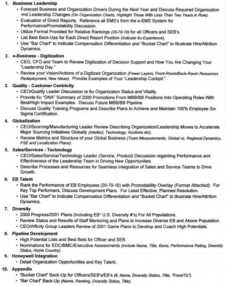
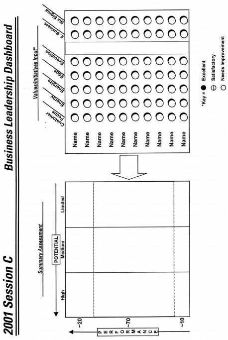
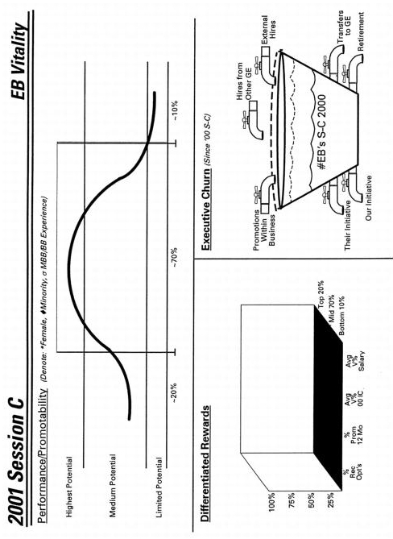
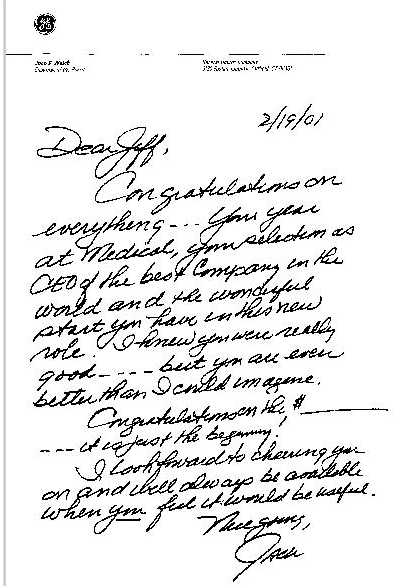
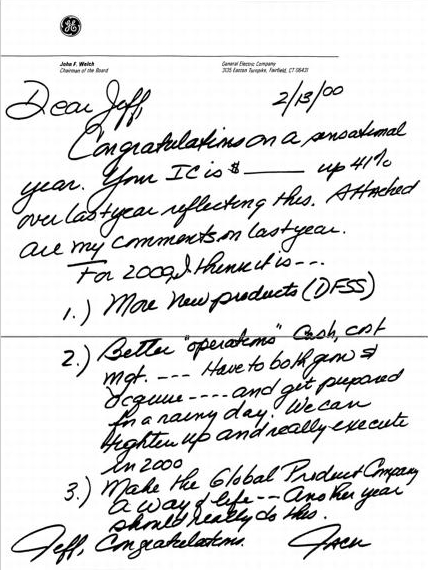
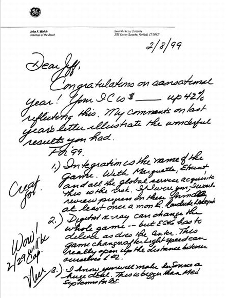
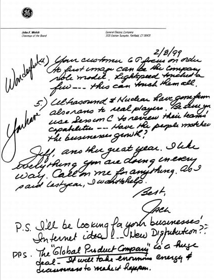
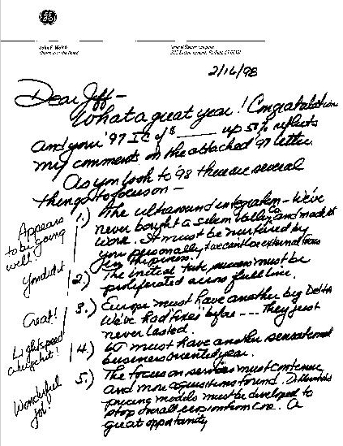
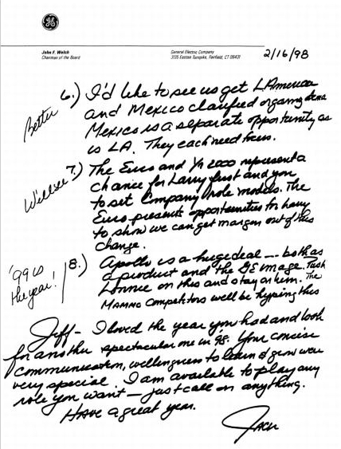
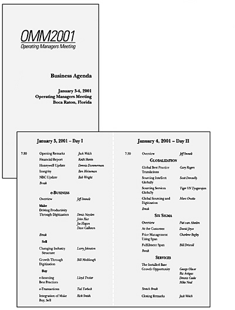
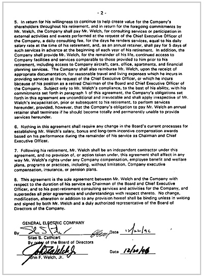
《华尔街日报》，2002年9月16日
杰克·韦尔奇
我想分享一个我最近一直在处理的棘手问题。
我妻子在离婚诉讼中提交的文件被公开，严重歪曲了我与通用电气雇佣合同的许多方面。我不打算公开反驳那份文件中的每一项指控。但有些指控引起了媒体的广泛关注。所以，在此声明：我一直自己支付个人餐费，没有私人厨师，没有文化和体育活动的私人门票，也很少使用通用电气或NBC的座位观看此类活动。事实上，我最喜欢的球队红袜队在过去两年打了162场主场比赛，而我只去看过一场。
但这些都不是问题所在。如何处理我的雇佣合同才是让我陷入困境的原因。
我在通用电气工作了41年，最后21年担任董事长。我对公司的尊重和对员工的感情，让我非常不愿看到我的私生活给公司带来不必要且不准确的关注。
我一直在考虑该怎么办。在我看来，归结为两个选择。我可以保持合同不变，硬扛住公众的关注。或者我可以修改合同，但这样就会面临合同本来就不公平的指责。
表面上看，两个选择都不太理想。
我的雇佣合同是1996年签订的。当时通用电气业绩出色，正处于新CEO继任计划的第二年。董事会知道我热爱我的工作，坦白说，我没有离开的打算，尽管媒体不断传言其他公司在挖我。
但通用电气前两任CEO分别在62岁和63岁退休，董事会希望确保我不会这样做，特别是考虑到我前一年刚做过五重心脏搭桥手术。基于这些情况，董事会找到我，提议签订一份雇佣合同，给我一笔数千万美元的一次性特别报酬，让我继续担任CEO直到2000年12月，届时我将满65岁。
我转而建议签订一份雇佣合同，明确规定我对通用电气的义务，包括退休后的义务，以及我将获得的相应福利。六年来，这份合同通过代理声明向股东披露，发布在美国证券交易委员会网站上，并在媒体上讨论过。我同意接受现在受到质疑的退休后福利，而不是现金报酬——现金报酬对公司来说成本会高得多。
在接下来的五年里，通用电气蓬勃发展，我也履行了我的承诺。
话虽如此，尽管合同有效且对通用电气有利，但今天修改它也有充分的理由。
过去一年世界发生了变化。媒体充斥着公司不当行为的报道，多家公司和高管被指控背叛股东。在今天的现实中，我1996年的雇佣合同可能被歪曲为过度的退休福利，而不是它的本质——六年前签订的公平雇佣和退休后合同的一部分。因为一场离婚纠纷而让通用电气及其董事会卷入这些报道，这完全是错误的。
对某些人来说，修改合同似乎是个简单的决定。然而，修改它可能会让人觉得合同本身有什么不妥。
还有人可能会说：“你为什么不在见报之前提出来？”简单的事实是：在过去六年里，我没有一天认为它不妥当，我今天也不认为它不妥当。我获得了额外的报酬以留在通用电气直到65岁——这些报酬以退休后实物形式发放，而不是退休前以现金形式支付更大的金额。
所以这就是我的困境：我是保持合同不变，看起来像一个在后安然(Enron)时代脱离现实的人？还是修改一份合法合同，承受被认为做了不当之事的打击？
我打电话给很多人，包括我的继任者杰夫·伊梅尔特、通用电气董事会的其他成员，以及各行各业有思想的领导者。他们的意见强烈而多样。
以下是我的结论。
我在担任CEO期间学到的一件事是：认知很重要。在这个公众信心和信任受到动摇的时代，我深刻体会到认知比以往任何时候都更重要。在这种环境下，我不希望一家具有最高诚信的伟大公司因为我的离婚诉讼而被卷入公众争议。我太在乎通用电气和它的员工了。
我已请求杰夫和通用电气董事会修改我的合同，取消除传统办公室和行政支持以外的所有内容——这些支持几十年来一直提供给所有退休的通用电气董事长和副董事长。他们上周四同意了。
在新合同中，我将支付使用通用电气提供的所有其他设施和服务的费用，如飞机和公司公寓。我估计每年将向通用电气支付200万至250万美元的服务费用。换句话说，我使用这些服务不会给通用电气或其股东带来任何成本。同样不会给公司带来成本的是，我将根据需要提供咨询，并定期在通用电气的管理发展中心授课。事实上，我明天就会去那里。
[最终，这个决定可能无法让所有人满意，但我的直觉告诉我这是对的。]
我的母亲，格蕾丝·韦尔奇，1920年。
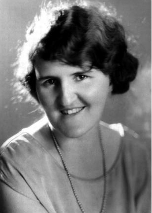
爸爸妈妈，约1930年。
母亲的掌上明珠，1939年。

在缅因州老果园海滩，与好友比尔·卡伦（左）和迈克·蒂夫南（中），1945年。
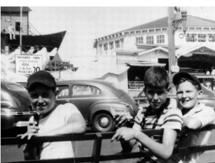
准备向塞勒姆街对面的友好”邻居”投出”曲线球”，1950年。
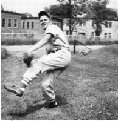
一段终生爱情的开始，1950年。
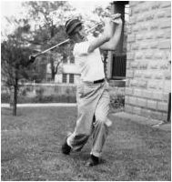
塞勒姆高中毕业照，1953年。
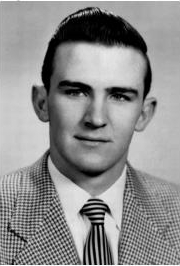
“大杰克”在波士顿与缅因通勤线上工作，正是在那里他萌生了打高尔夫的想法。
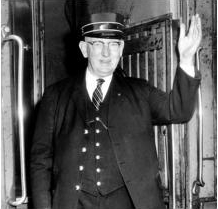
与卡罗琳在南塔克特度假。
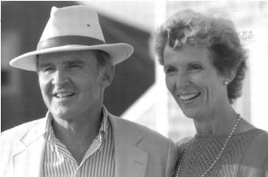
我的孩子们（从左至右）：凯瑟琳、约翰、安妮和马克。
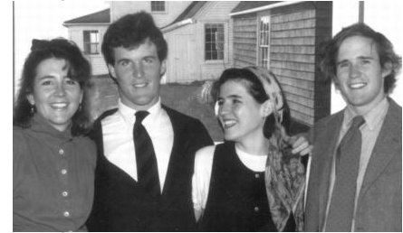
1993年来我办公室参观时，孙子杰克对一些媒体报道产生了兴趣。
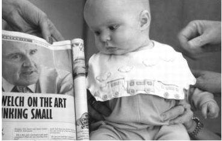
1996年，与孙子杰克在南塔克特。
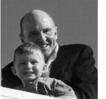
我的儿子约翰、他的妻子杰基和他们的五个孩子。
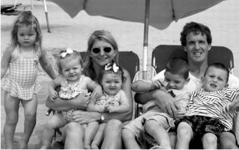
2001年6月马克和希拉的婚礼上，与凯瑟琳的儿子卢克在一起。
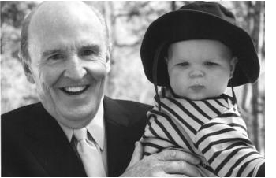
在南塔克特与孙女卡罗琳放松。
与女儿安妮和新出生的孙女克莱尔。
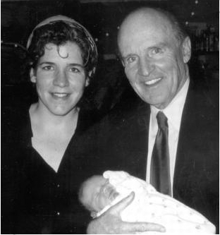
1990年，这位出现在海滩上的巴巴多斯圣诞老人间接帮助我构思出了”无边界”(boundaryless)的概念。
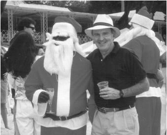
在奥古斯塔与我的GE高尔夫球友们（从左至右）：戴夫·卡尔霍恩、比尔·梅道、查克·查德威尔。
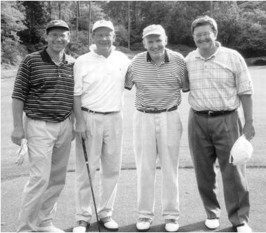
简和我与GE董事会成员、好友西·卡斯卡特及其妻子科基在加拿大落基山脉打高尔夫。
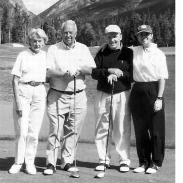
1995年桑卡蒂角会员嘉宾锦标赛上，与搭档、儿子约翰在一起。
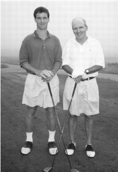
2000年4月在里士满举行的GE年度股东大会上与家人合影（从左至右）：女婿斯蒂芬·麦克米兰和女儿安妮、儿媳希拉和儿子马克、简、儿媳杰基和儿子约翰、女儿凯瑟琳。照片由弗吉尼亚州提供
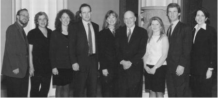
在塞尔柯克”凝视那个坑”，未来诺里尔塑料厂的选址（从左至右）：我本人、艾伦·海、鲁本·古托夫。照片由R.古托夫提供
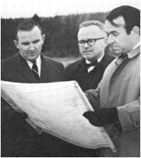
我们度过了人生中最美好的时光，而且还有报酬。70年代初与塑料团队一起”掀翻屋顶”。
GE新任部门主管，1973年。照片由GE提供
雷格·琼斯向GE员工介绍”新人”，1981年。照片由GE提供
我作为董事长的第一次董事会议——一个相当正式的聚会。照片由GE提供
我作为董事长的第一张官方肖像，与副董事长埃德·胡德（左）和约翰·伯林盖姆。照片由GE提供
1984年，拉里·博西迪成为我的新副董事长，与埃德·胡德和我一起在公司总部。照片由GE提供
1985年在纽约市与鲍勃·弗雷德里克和桑顿·“布拉德”·布拉德肖宣布63亿美元的RCA交易。照片由GE提供
在布什总统为伊丽莎白女王举办的国宴上。我一直遗憾父母错过了这些令人惊叹的时刻。
90年代初会见中国国家主席江泽民。照片由GE提供
80年代末在俄罗斯与戈尔巴乔夫总统会面。照片由GE提供
1999年夏天在玛莎葡萄园岛与克林顿总统在一起。
2001年就职典礼上祝贺布什总统。
1995年与制造部门的同事们进行一些”深度探讨”(deep diving)。照片由GE提供
与K.P.辛格和保罗·弗雷斯科在那次难忘的首次印度之行中。照片由GE提供
强调一项举措。照片由GE提供
简和我的好友安东尼·“洛菲”·洛弗里斯科及其妻子埃莉诺。
1995年MSNBC发布会上与比尔·盖茨和鲍勃·赖特在一起。照片由NBC提供
在本顿维尔向山姆·沃尔顿和沃尔玛团队学习”快速市场情报”(quick market intelligence)。未来的GE副董事长约翰·奥皮在最左边。
与任何房间里最聪明的人在一起。沃伦·巴菲特和我在佛罗里达弗兰克·鲁尼家，拿着《财富》杂志的”最受尊敬”漫画像开心合影。
1998年在克罗顿维尔的”竞技场”(the Pit)。照片由Mark Peterson, Saba拍摄
为1997年年报拍照，与副董事长保罗·弗雷斯科（左）、约翰·奥皮和吉恩·墨菲。照片由John Abbott拍摄
“罗！” 罗珊妮·巴多夫斯基和我在工作中。照片由Mark Peterson, Saba拍摄
在我的会议室举行团队会议，（从左下角起）保罗·弗雷斯科、加里·雷纳、丹尼斯·达默曼、比尔·科纳蒂和约翰·奥皮。照片由Mark Peterson, Saba拍摄
认识一下”新人”；2000年11月在纽约市与杰夫·伊梅尔特。照片由GE提供
新团队（从左下角顺时针方向）：总裁兼候任董事长杰夫·伊梅尔特、GE副董事长鲍勃·赖特和丹尼斯·达默曼，以及一位即将退休的GE人。照片由Timothy Greenfield-Sanders拍摄
在家与我八个新挚友中的两个在一起。